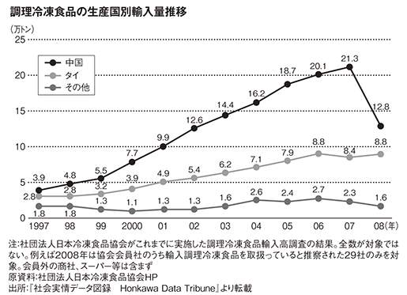
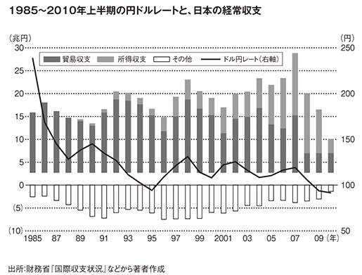

| 奇跡の日本史 「花づな列島」の恵みを言祝ぐ | |
| 増田悦佐 | |
| PHP研究所 (2010) | |

奇跡の日本史
――「花づな列島」の恵みを言祝ぐ
増田悦佐
本書は隆盛にして強大なる帝国の歴史なり
本書は勇敢にして不屈なる国民の記録なり
其の人民は謙譲、勤勉、敦厚にして其拠れる地は最も天恵に冨めり
一七二七年に英訳出版されたエンゲルベルト・ケンペル著
『日本誌』に、翻訳者ショイヒツァーが付けた序文より
はじめに
ひとことで言えば、自他ともに幸せになり、その社会を人間の望みうる理想のものとするには、日本を見ならうべきだということなのである。......もし自然が生活に必要なもの、すべてを与えたとしたら、そして、もしその国が国民の勤勉により、世界に例を見ないまでに発展しているとしたら、その国は外国に頼ることなしに存在できるのである。これは大きな利点である。これによって他国より来る邪悪、放蕩、軽薄、戦争、変節などに乱されることなく、国内に大きな問題も起こらず、危急の場合、外国の攻撃から身を守ることができるのである。これこそ日本が他国よりすぐれている点である。
著者の生前は出版されることのなかったケンペル著『日本誌』の一節から
岩松睦夫『緑の大回廊――森が語る日本人へのメッセージ』（一九八四年、東急エージェンシー）、一〇〇～一〇一ページより
英語にも雅語はある。たとえば、西欧諸国の中では例外的に緑豊かなアイルランド島のことをエメラルド・アイランドと呼んだり、台湾島のことをフォルモーサと呼んだりしている。
それでは、日本列島のことを英語の雅語ではなんと呼ぶか、ご存じだろうか。フェストゥーン・アイランズと呼んでいる。花の茎をより合わせて編んだ花づなのように、優雅に弧を描いて連なる島々という意味だ。
この花づな列島は、たんに地理上のかたちが優雅であるばかりか、そこに住む人びとの営みも優雅だった。都市は城壁を備えて蛮族の侵入に身構えたりせず、王宮は金銀財宝を溜めこまず、大衆が自分の行きたいところに行き、住みたいところに住む権利はめったに抑制されなかった。
世界中見渡しても、こんなに優雅な文明を維持しながら、戦争や殺戮より平和な経済競争が優位を占める近代市民社会が成立するまで生き延びた国民は、ほかにはいない。ところが、これだけ幸福な星のもとに生まれた日本人が、自分たちはどんなに幸せな歴史を生きてきたのかということをほとんど知らない。
皮肉なことに、おそらく世界中の知識人の中で日本の知識人がいちばん、ヨーロッパ文明こそ善き文明であり、義しき文明であるというデマ宣伝を信じこまされ、ヨーロッパの文物に対する抜きがたい劣等感にさいなまれている。おそらく、一度もヨーロッパ諸国の植民地にされたことがなく、ヨーロッパ文明の中からいいものだけを自分たちの意志で選択的に取り入れてきたからこそのヨーロッパ崇拝なのだろう。
だが、もうそろそろ真相に気がつくべき時期だ。
現在ヨーロッパ文明の最先端を行くアメリカは、ヨーロッパ人が築いた社会の中では例外的に大衆的な社会を十九世紀末までは育ててきた。だが、クルマ社会化してからは、西欧諸国以上にエリート主義的で、経済進歩の恩恵の大部分を一握りの知的エリートが独占する社会に変質していった。
特異な才能に恵まれているわけでもない大衆が、犯罪も犯さずに人間らしい生活を維持するための収入を確保しつづける。この当たり前であるべきことが当たり前に実現しているのは、世界中で日本と北欧数カ国だけだ。しかも、北欧諸国では、国民の収入の半分以上、六～七割を国家が取り上げて再配分することでこの成果を達成している。国民の大部分が自由意思で働いて稼いだ収入で達成しているのは、日本だけだ。
日本の歴史を見ていくと、諸外国であれば当然あったはずのものが日本にはなかったということが多い。しかも、なくてマイナスになるどころか、なくて本当に良かったというものばかりだ。この本では、日本の「なくて良かった」ものばかり集めて、「あった」ヨーロッパの悲惨で暴力的な歴史と対比していく。
「ないない尽くし」のすばらしさを、ごゆっくり味わっていただきたい。
第九章 不買運動が盛り上がらないのは日本の消費者が弱いから？
ギリシアが特殊なのか、日本が特殊なのか？
世界は今、大きな転換点を迎えている。十五世紀後半以降、世界を股にかけて荒しまわった西欧人の天下がようやく終わろうとしている。アジア・アフリカ・南アメリカの、昔はヨーロッパ諸国の植民地にされていた国々に住む人たちさえ、もうヨーロッパ人のご機嫌をうかがう必要はないと感じはじめている。
ＥＵ諸国が得意満面で「環境の保護者」ヅラをして提案したクロマグロ禁輸がワシントン条約締結国会議の場で惨敗したのは、こうした大きな歴史のうねりを象徴する事件だった。世界中が、有史以来いちばん深刻な環境破壊をくり広げた西欧諸国が、今さら偽善者めいて環境保護を唱えていることに付き合いきれないと抗議の声を上げたのだ。
第一次世界大戦前夜の不穏な情勢の中で書かれ、一九一八年に第一巻、一九二二年に第二巻が刊行されるやいなや、大戦後の虚脱感や幻滅に打ちのめされたヨーロッパ知識人の一部に熱狂的に迎えられた本がある。文明形態論という分野の先駆けとなった、オスヴァルト・シュペングラー著『西洋の没落』だ。
次の引用で明らかなように、シュペングラーのペシミズムの核心は西洋文明の華である大都市の衰退の不可避性にある。だが、うっかり「都会は農村に寄生している」というような手垢のついた表現を使ったために、農林水産業だけが本当に富を生み出す過程で、都会はそれに便乗しているだけだというような陳腐な大都市批判と見なされることが多かった。
一つの世界にかわって、一つの都市、すなわち残りの部分が枯れ果てているのに、広大な諸地方の全生活の集中している一つの点が生じ、形式に富み、大地に生死を託する民族にかわって、新しい流浪民、寄生物である大都市住民が生じ、農民生活（またその最高の形式である田舎貴族）を心から嫌う無宗教的、理知的、不産的な、全然伝統のない、純然たる実際的人間が、無形式のままふらついている大群をなして生ずる。すなわち無機的なものに向かい、終末に向かう巨歩なのである。......マドリッド、パリ、ロンドンの後にベルリンとニューヨークとがつづく。田舎になるということは、むかしのクレタとマケドニヤとのように、今日のスカンジナビアの北方諸国のように、これら大都市の放射圏内に存していないあらゆる国々の運命なのである。
Ｏ・シュペングラー『西洋の没落 第１巻〈普及版〉 形態と現実と』（二〇〇七年、五月書房）、四一ページ
だが、もしシュペングラーの議論が、しょせんは農村に寄生する非生産的な都市がはびこることへの批判だとしたら、なぜこの本は『世界の没落』とか、『人類の没落』と題して刊行されなかったのだろうか。なぜ、シュペングラーは当時の都市化競争ではまちがいなく最先端を走っていたはずの西洋が没落すると主張したのだろうか。
なかなか晦渋な本だが、通読すればシュペングラーはそんな通俗的な「都市批判」論を展開していたわけではなかったことが分かる。彼は、世界中の都市人口はほんの一握りの巨大な世界都市に集中していくと予想していた。そして、世界都市と田舎以外には何もない風景が現出するが、その一握りの世界都市の中には西洋都市は一カ所もふくまれないだろうという絶望感を抱いていたのだ。
その証拠は、以下の引用にある。
欧米文明の世界都市はその発展の頂上に達するにはまだはるかに遠いのである。自分の見るところによれば、二〇〇〇年のずっとのちに、一千万から二千万人をいれるに足る。ひろい土地の上に配置された都市計画があると思う。その建物にくらべると、現代の最大のものも小人のように見えるであろうし、その交通観念は今日のわれわれには気違いざたと思われるであろう。
......現代の巨大都市は、われわれの有する無限への傾向を明らさまに示している。郊外と別荘地とは広い農村に侵入していき、各種の大きな交通網は八方にのび、密集した建築地帯内では、規則正しい高速度交通が広い路線をうちに、下に、上に貫ぬいている。これに反して純然たるギリシャ・ローマ的都市は拡大を欲しないで、ますます密集しようとしている。道路は狭く、細く、迅速な交通を許さない。......ローマは七四年には巨大な皇帝建築物があったにもかかわらず、その周囲は実に滑稽なほど小さく一九キロメートル半に過ぎなかった。そこでこの都市体は一般に広くひろがっていかないでますます高く伸びていった。悪名の高いInsula Feliculae（フェリクラ長屋）ようなローマの貸長屋は、三メートルから五メートルの広さの街路にそって、西欧ではもちろんどこにもなくアメリカではごく少数の都市にあるような高さに達している。カピトリウムでは、ウェスパシアアヌスの治下のころ、屋根はすでに山の背の高さに達していた。これらの豪華な密集都市のいずれにも、おそるべき悲惨とあらゆる生活慣習の荒廃とがひそんでいて、破風と屋根下部屋との間に地下室と庭とに新しい型の原始人を養っていた。
Ｏ・シュペングラー『西洋の没落 第２巻〈普及版〉 世界史的展望』（二〇〇七年、五月書房）、八四ページ
シュペングラーは、ヨーロッパ大都市が共有していた閉所恐怖症と広場恐怖症の二律背反がもう折り合いのつけようもないほど深刻になっているので、西洋文明は生き延びるための場を持たないと主張したのだ。つまり、世界都市として成長を続けようとするなら、都市は外延的拡大を図らなければならない。だが、ギリシア・ローマの昔から、西洋の都市は密集し、縦に伸びることはあっても、分散し、横に広がることはできないと言っているのだ。
のっぺりとけじめなく広がる東京圏で、三〇〇〇万人を超える人々が、縦横に張り巡らされ、ヨーロッパでは考えられない精確さで時刻表どおりに運行される電車に乗って通勤通学しているところを一目見せてやりたかった。だが、シュペングラーの反応は、だいたい想像がつく。きっと「これは都市ではない。なんと呼ぶのかは知らない。おそらく、まったく新しい単語を創り出す必要があるのだろう。だが、これが都市でないことは、まちがいない」と言うだろう。
これから徐々に説明していくこの本のテーマなのだが、近代市民社会までたどりついた文明類型には、ユーラシア・スタンダードとニッポン・スタンダードの二つしかない。ユーラシア・スタンダードの都市は、堅固な城壁に取り巻かれ、出入りを厳重にチェックされる閉鎖空間として発達した。一方、ニッポン・スタンダードの都市は城壁もなく出入りも自由な開放空間として発達した。
ユーラシア大陸の都市民たちは、一方で厳重な監視のもとに置かれていることのストレスから閉所恐怖症に陥りがちだった。だが、同時に周辺地域の城壁に守られない空間で暮らしている農林漁民たちを、いつ蛮族の襲来で皆殺しにされるかもしれないリスクを負った生き方をしている連中として軽蔑し、そんな危険な場所には住めたものではないという広場恐怖症にも陥っていた。
第一次世界大戦中のオーストリアという国、ウィーンという都市は、周期的に文明世界を襲う災厄としての蛮族という概念について、史実でなかったらとうてい信じられないほどのドンデン返しの血祭りに挙げられた国であり、都市だった。
オーストリア・ハンガリー帝国の皇太子夫妻がサラエボで銃撃されたときでさえ、この事件がヨーロッパほぼ全域を巻きこむ大戦争に発展すると予測した人は、ほとんどいなかった。だが、それは最初の世界大戦となり、不思議な行きがかりからハプスブルク家の支配下にあるオーストリア・ハンガリー帝国とオスマントルコ帝国という宿敵同士が、プロシア主体の新生ドイツ帝国とともに中央同盟を結成した。
この同盟国側への対抗手段として、イギリス・フランス・ロシアを中心とする連合国側はヨーロッパ諸国民のあいだに「トルコ恐怖」をあおる宣伝戦を展開した。トルコ恐怖とは、オスマントルコにいつウィーン侵攻を許すかもしれない不安な時期に、対トルコ戦費を捻出するためにハプスブルク家があおった蛮族への恐怖を掻き立てるキャンペーンのことだ。
河野淳は『ハプスブルクとオスマン帝国』で、いつ、なぜ、どのようにして、理念ではなく、現実を基盤に据えた政治が行なわれはじめたのかという大問題に取り組んでいる。そして、河野が出した結論は、十六世紀後半に軍事力でも経済力でも領土内の実効支配の浸透度でもとうていオスマントルコの敵ではなかった神聖ローマ帝国が、はるかに強大なオスマントルコに対抗する軍事費を捻出するために、二正面作戦の現実政治を編み出したというものだ。
大衆向けには、臆面もなくほとんど原初的とも言うべき恐怖心をあおるデマ宣伝をくり広げた。これでもか、これでもかとセンセーショナルなパンフレットを大量にばら撒く作戦は、ドイツ語の辞書に「トルコ恐怖」という普通名詞を定着させるほどの成功を収めた。
そして、神聖ローマ帝国議会向けには、うんざりするほどの膨大で詳細な資料の山に、ほんのちょっと大事な項目を入れなかったり、重要な事件の前後関係を逆に取れるような配列をしたりで、簡単にシッポはつかまれないようにしながら、巧妙に自国に有利な解釈を作り出す情報操作をした。この二本立ての情報統制が、近代的な現実政治の始まりだったというわけだ。
「ホラーもの」パンフレットで非常によく用いられたのが、いたいけな幼児を生きたまま柵の上に串刺しにするオスマン兵というモチーフである。聖書にある幼児虐殺をさらにどぎつくしたようなこのモチーフは繰り返し用いられた。
河野淳『ハプスブルクとオスマン帝国――歴史を変えた〈政治〉の発明』（二〇一〇年、講談社選書メチエ）、九一ページ
この手の「幼児串刺し」型パンフレットの出版点数がピークを描くのは一五七〇年前後、西ヨーロッパ中を宗教改革・対抗宗教改革の嵐が吹き荒れていたころだった。西ヨーロッパの大衆に生まれ落ちたら、キリスト教徒同士が宗派の違う人間に対してどれほどすさまじい残虐行為を行なうかは、自分たちの体験として身に染みて分かっていたころだ。
たいていの残虐行為には慣れっこの西ヨーロッパの大衆に、ショックを与えるにはどうするか。「キリスト教徒でさえやらないほどの暴虐」としてパンフレット作家・画家たちが思いつくことができたのは「オスマン兵は、戦争の最中に幼児だけを選んで生きたまま柵に串刺しにする」ということくらいだったのだろう。
いったい、こんな残虐行為にどのような軍事的効果を期待できるだろうか。まったくと言うほど意味のない行為だ。だが、オスマン兵がこうした行為にふけっていたという宣伝は、実際にオスマントルコ軍との局地戦が頻発していた地域以外の神聖ローマ帝国領土には、トルコ恐怖をもたらすほど浸透していく。その底流に、「文明として進んでいて人道的なヨーロッパ人が、文明として遅れていて非人道的なアジア人に支配されていること自体がけしからん」というヨーロッパの知識人・大衆が共有するすさまじい偏見があったからだ。
そのハプスブルク家のお膝元、ウィーン市民たちが、第一次世界大戦がドロ沼化するにつれて、オスマントルコやプロシア並みの蛮族として恐怖をあおるデマ宣伝の対象になっていった。身から出たサビ、人を呪わば穴ふたつ、因果応報、いろんな表現が浮かんでくる。元はと言えば、自分たちの先祖が始めて、あまりにもうまくいってしまったデマ宣伝キャンペーンの犠牲に、自分たちがなってしまったというだけのことだ。だが、中欧一、いやそれどころかヨーロッパ全域でも有数の怠惰と紙一重の安逸をむさぼってきたウィーン市民が、蛮族扱いされてしまったのだ。そのショックたるや、大変なものだったろう。
シュペングラーが西洋の都市に注いだ暗い眼には、どの程度この世紀の、いや千年紀単位のドンデン返しが影響していたのだろうか。あくまでも第一次世界大戦直前に、ある種の予感にもとづいて書いただけだったのだろうか。十九世紀末から第二次世界大戦直前までのたかだか五十年間、芸術・文化・学問のさまざまな分野でオーストリア派とか、ウィーン派と呼ばれる人たちが大活躍した。
彼らに共通した特徴は、西欧合理主義の無邪気な未来信仰に異を唱えたところにあった。そして、世界は単線的な進化論でくくることができるほど単純なものではなく、自分たちの知的能力に信頼を置きすぎる知的エリートが打ち出した理性的な方針や政策は、必ず失敗するというエリート主義的な伝統への批判があった。
とくに、ハイエク、フォン・ミーゼスの両巨頭を中心として「近代経済学」の粗雑な自然科学概念の流用に異議を唱えたオーストリア派経済学者たちは、政策は必ず推進者の予想もしていなかった結果を招くという信念を持っている。だから、オーストリア派経済学では、政策は必ず誤るという経験則を「予期せざる結果の法則」と呼んで自派のものの見方の核心に据えている。
第一次世界大戦前後にシュペングラーが政治、社会、文化、そして軍事・外交分野で見てとったヨーロッパ世界の没落は、今や近代市民社会の本丸である市場経済に迫りつつある。
今回の世界規模の金融危機について、よく聞かれる質問が「いつごろ回復するのか？」ということだ。その前提には、アメリカもヨーロッパも時間さえたてば回復するに決まっているという楽観的な世界観がある。この楽観論は、たぶんアメリカについては、十～二十年の歳月を経て現実となるだろう。だが、十五世紀末から一貫して、世界を自分の似すがたに作り変えてきたヨーロッパは、すでに回復することのない没落過程に入ったのではないだろうか。
この没落がいみじくもギリシアから始まったということには、「歴史はいつも、きつい冗談の好きな皮肉屋だ」という一般論以上の意義がある。東ローマ帝国が滅亡した後も、ギリシアはあまりにも幸運すぎる星のもと、オスマントルコ帝国の寛容な支配を受けていた。だが、日本が幕末から明治維新にかけての激動を経験する約一世代前、一八二〇年代のギリシアにも、「独立」の気運が盛り上がる。それは、非常に不思議な独立運動であり、独立戦争だった。
ギリシア独立戦争というとまず頭に浮かぶのは、イギリス貴族の歴史の中でも有数のお騒がせ詩人だったジョージ・ゴードン・バイロン卿が私財をなげうって革命軍に投じたことだろう。いわゆるロマン派に属するフランス絵画のお好きな方なら、ウジェーヌ・ドラクロワがオスマントルコ帝国による独立派の大量虐殺があったとして描いた『キオス島の虐殺（フランス語読みではシオの虐殺）』という名画を思い出されるかもしれない。だが、ギリシア独立戦争に身を投じた西欧文化人の豪華絢爛たる顔ぶれに比べて、オスマントルコ帝国による弾圧や虐殺を針小棒大に言い触らす以外には、ギリシア人自身が「独立」運動に果たした貢献というのは、意外に小さい。
そして、一方の当事者であるギリシア人たちが行なったのだから当然偏向があるはずの「オスマントルコによる暴虐」という宣伝活動が当時の西欧文化人たちによって熱狂的に受け入れられたことには、それなりに長い歴史の積み重ねがある。そもそも、オスマントルコ帝国によるギリシア人やアルメニア人に対する虐待という観念の大部分が、すでに見たように現実政治を発明したと言われるハプスブルク家支配下の神聖ローマ帝国による執拗なデマゴギー活動によって作り出された虚像だった。
この偏見を培養基として、小さな事件が何十倍、何百倍、ときには何千倍にも増幅して伝えられていった。たとえば、第一次世界大戦前後に「オスマントルコ帝国によって虐殺されたアルメニア人」の人数についての、箸にも棒にもかからないほどの誇大な人数が、いまだに著名な歴史学者の最新の著作に「史実」として引用されたりする。
たとえば、最近超長期の経済史分析からの恐慌論でも脚光を浴びているニーアル・ファーガソンは、二〇〇六年に原著が刊行された『憎悪の世紀』で、以下のように悪質な反トルコのデマ宣伝を蒸し返している。対象はギリシア人でもユダヤ人でもなく、アルメニア人だが、まったく具体的な証拠のない伝聞「史料」だけをあたかも史実であるかのように引用する手口は、それこそハプスブルク家によるトルコ恐怖扇動のころとまったく変わらない。
バイエルンの神学生、ヨゼフ・エンゲルトは、これらの恐怖に満ちた事件の記録を、教皇使節のエウジェニオ・パチェッリ、後の教皇ピオ一二世（在位＝一九三九～五八）に、以下のように書き送った。
およそ一〇〇万人ものアルメニア人が、殺害された。......「アルメニア問題にはもう決着がついている」というトルコ政府の証言は、現実にはアルメニア人のみな殺しを意味した。
......しかし、青年トルコ党には、アルメニア人の死が何より重要だった。殺害されるか、若くして死に追いやられた男女や子どもたちの数は一〇〇万人あまりに達した。これは、最大に見積もって二四〇万人、おそらくは一八〇万人ほどだった戦前のアルメニア人口のうち、きわめて大きな比率を占める。端的に言って、これらの行為はロシアでおこなわれたポグロムを凌駕していた。
ニーアル・ファーガソン『憎悪の世紀――なぜ20世紀は世界的殺戮の場となったのか（上）』（二〇〇七年、早川書房）、三一二～三一三ページ
全部で一八〇万人しかいない人種グループの一〇〇万人が一挙に殺されたというニュースが報道されたら、論理的な結論は一つしかない。このニュースは大ボラだということだ。しかも、ニュースソースがローマ教皇庁と親しい神学生とくれば、非常に党派的な偏見に満ちた悪意ある誇大宣伝であることは明らかだ。
ローマ教皇庁には、何度も何度も十字軍を扇動して、中東に住んでいたイスラム教徒、ユダヤ教徒、カソリック以外のキリスト教徒を大虐殺したという前科がある。イスラム教国でも同じような虐殺が行なわれていたという議論ができれば、その前科を帳消しにはしないまでも、だいぶ肩身の狭い思いからは解放される。だからこそ、教皇庁はこの根拠のない数字に飛びついたわけだ。
そして、二十一世紀に入っても、イギリス人の高名な経済史学者が、「たとえロシア人といえども、ヨーロッパ人なら絶対にしないような残虐行為をアジア人は平然とやってのける」という自分の偏見を補強する材料として、こうしたデマ宣伝を史実として自分の著書に収録する。これが、ヨーロッパ最高水準の知性を持つと言われる学者連中の本音なのだ。
さて、一八二一年に戦端が開かれたギリシア独立戦争は、一八二五年までは独立軍が優勢だったが、そこからオスマントルコ側の強力な巻き返しが始まり、一八二七年には独立軍が一掃されそうな危機に立つ。だが、このときイギリス・フランス・ロシアが強力な干渉を行なったおかげで、一八三〇年にギリシアは棚ボタ的な独立を「勝ち」取る。
こうして、他力本願の独立を達成したギリシアは、オスマントルコ帝国が解体の危機に瀕していた第一次世界大戦直後に、身の程知らずにもイスタンブール（旧コンスタンチノープル）というトルコ最大の都市を攻め取ろうとして進軍した。ギリシア側ではこのイスタンブール武力奪取計画を偉大な思想と呼んでいたようだが、まさに誇大妄想狂としか言えない。
それにしても、自力では独立ひとつ達成できなかった弱小国が、第一次世界大戦の敗戦によって戦勝国の顔色をうかがいながらの蟄居謹慎を余儀なくされていた老大国からその最大の経済基盤となっていた都市を火事場泥棒よろしくどさくさまぎれに奪い取ろうというのだから、計画そのものが本当にかわいげがない。もちろん、実際に戦闘が始まってみるとギリシア軍はあっさり叩きのめされて、イスタンブールを奪取するどころか、第一次大戦直後の国境線よりやや狭い国土に封じこめられる結果となった。
一九世紀の間にイギリス・ロシア・フランスがギリシアをトルコから解放して独立国にし、それ以後アチコチの強国が相次いでその独立を支持した。そうしなかったならば、ギリシアはおそらく再び征服に屈したであろう。しかしながら、独立はギリシアに何らの繁栄をもたらさなかった。というのは、隆盛な文明を築く資源をもっていなかったからである。
一九五〇年にギリシア（マケドニア・トラキア・クレタを除く）は約四百万の人口を有した――それは、ペリクレス時代のギリシアの人口を下回る。そしてこの人口も、ギリシアの過去の栄光を見物や勉学に赴く海外からの旅行者や学者たちによって、ある程度維持されている。多くのギリシア国民の生活水準は、人口の減少より以上に大幅に低下し、人口はプラトン時代以後、徐々に減少したのである。ギリシアは現在、一般に〝後進地域〟と呼称されており、その失われた生活水準の回復をはかるため、もっと繁栄した国々からの経済的・技術的援助に依存している。
Ｖ・Ｇ・カーター、Ｔ・デール『土と文明』（一九七五年、家の光協会）、一二四ページ
恐るべきことに、この本の原著が出版された一九五五年から五十五年もたっているというのに、前ページに引用した文章にはひとことの訂正も必要としていない。しかも、一九五二年以来のＮＡＴＯ加盟国として、東欧圏とアラブ・エジプト圏の結節点に打ちこまれた天然の要害という地の利を評価した西側諸国に異常にチヤホヤされつづけた冷戦期を享受しながら、このていたらくなのだ。
過去七、八年というものは、二〇〇〇年のハイテク・バブル崩壊の、そして二〇〇七年以降のサブプライムローン・バブル崩壊の被害を「食い止める」ために、アメリカ連邦準備制度を中心にヨーロッパ各国もカネをジャブジャブ過剰供給してきた。そのカネが、「低く借りて高く貸す」キャリー・トレードを通じて、ギリシアや中東欧諸国に大量流入していた。
そのために、ギリシアも中東欧圏も見かけ上の繁栄を謳歌することとなった。いまだにめぼしい産業と言えば、観光と海運と水産物くらいしか思い当たらないギリシアの直近の一人当たり国内総生産が、イタリアより若干高く日本に肉薄するほどの繁栄ぶりを示したのだ。
ギリシア人たちは、依然として借り入れは収入という「おおらかな」経済観を維持している。そして、海外からの投融資を金利がまかなえるだけの生産性が見こめない事業や公務員の手当てに大盤振る舞いしつづけてきた。
ＯＥＣＤの調査によれば、ギリシア人の一人当たり年間労働時間は、約二千百時間と加盟国中最長で、二〇〇〇年から二〇〇八年までまったく減少していない。ギリシア人はよっぽど勤勉なのか、それともずっと景気が良かったので労働時間を削減する必要さえなかったのかと感心する人もいるだろう。
だが、それは早とちりで、内実はすさまじいものだ。二〇〇八年度にいたっても平均賃金がマイナス〇・五パーセントとほんのわずかに減少しただけなのに、翌二〇〇九年度は一挙に一二・四パーセントも賃金を上げて「埋め合わせ」をし、この二カ年度通算で一一・八パーセントの大幅賃上げという、異常なまでに「労働者にやさしい」所得分配があったのだ。
もちろん、国民経済が高成長をしていて、勤労者の稼ぎ出す付加価値が激増しているというなら、文句を言う筋合いはない。だが、民間企業は業績が低迷しているのに、お手盛りで給与を上げられる公共部門が、平均賃金で民間部門の三倍に達している始末だ。そのほかにも、ギリシア経済のあまりにも「ユルイ」無軌道ぶりに関するエピソードのタネは尽きない。
ギリシアでは、脱税は犯罪ではなく紳士が淑女にドアを開けてやらない程度の無作法と思われている。公立学校の人件費はワイロを勘定に入れなくても、十年間で倍増した。そして、公立学校や公立病院ではワイロなしではまったく動いてくれない。
また、ギリシアでは理容師・美容師、ウェイター、ミュージシャンといった約六〇〇の職種が、あまりにもきつい仕事で男なら五十五歳、女なら五十歳で引退を目指すと言われている。国有鉄道は毎年一億ユーロしか稼いでいないのに、人件費で四億ユーロ、その他経費で三億ユーロを支払っている。
皮肉なことにギリシアでいちばんまともなのは民間銀行で、アメリカのサブプライムローン証券にも手を出さず、レバレッジも上げず、高給を取りもしなかった。だが、不幸なことに、三〇〇億ユーロも国に貸しこんでしまい、そのカネはほとんど全部官僚のポケットに入るか、収益の見こめない公共事業の莫大な人件費として消えてしまった。
これはもう、ギリシア国民全体が計画倒産に向かってまっしぐらに突っ走っていたとしか思えない。そういう意味で、ギリシアはたしかに特殊だ。だが、この特殊さは、一歩まちがえば欧米諸国全体が共有しかねない特殊さだ。
都市国家勃興期のギリシアは、古典経済学の最高峰、比較優位の原則を体験的に会得して、やせた土地で無理に麦や雑穀を作らず、比較的マシな収穫が見こめるワイン用のブドウと油を搾るためのオリーブの栽培に特化した。そして、ホメロスの時代に二十世紀マーケティング理論の華、ブランディング戦略を駆使して、有利な交易条件を維持しつづけた。
オスマントルコ帝国の末期には、神聖ローマ帝国があおりにあおったトルコ恐怖を利用して、大国の干渉によって独立をせしめた。第二次世界大戦後は、東ヨーロッパと中近東のはざまという地の利をフルに生かして、膨大な軍事援助、経済援助をむさぼりつづけた。
もちろん、「汗水たらさずスマートに稼ぐ」ために賢く立ち回ること自体は、良いことだ。そのときどきに置かれた環境を最大限利用して、なるべく楽に効率よく生きていくことは、人類の理想ですらある。イスタンブールの武力征服というような誇大妄想に陥らないかぎり、何一つ問題はない。
ただ、「なるべく汗たらさずスマートに稼ぐ」という目標は、ほんの少し歯止めが効かなくなるだけで、「汗水たらさずスマートに、他人の稼ぎをだまし取る」ことに転落しがちだ。そして、ギリシア独立戦争が勃発した一八二一年以来二百十年間のギリシア近代史は、この誇り高き「西欧文明の母国」が他人に依存して楽な暮らしをするタカリ屋に成り下がって行った系譜と言えるだろう。
気になるのは、金融業もまた「なるべく汗たらさずスマートに稼ぐ」つもりが、「汗水たらさずスマートに、他人の稼ぎをだまし取る」ことに終わりがちな業界体質を持っているという事実だ。とくに、「巨大すぎて潰せない」という根拠のない迷信によって、巨大金融機関が出した損失は天文学的な数字に達しても必ず国が救済してやるという不文律が成立してしまってからの欧米の金融業界では、国民の負担でギャンブルをやり続けながら「勝てば儲けは自分のもの、負ければ負担は国民のもの」という、とんでもない「業界倫理」がまかり通っている。
欧米諸国全体に、ハイテク・バブル崩壊からサブプライムローン・バブル崩壊へと危機が迫るたびにジャブジャブ拡大してきたマネー供給がもたらした、見かけ上の繁栄のツケを払わなければならない時期が迫っている。まっ先に清算の対象になりそうなのが、不思議な偶然と過剰な自信で幸運を維持しつづけてきたギリシアであることは言うまでもない。
その日がどの程度切迫しているかは、前ページで引用した表でお分かりいただけるだろう。
まっとうな産業がほとんど存在しないギリシアの国や地方自治体、金融機関、民間企業と個人世帯が海外から借りているカネの総額が、すでにＧＤＰの一・六倍に達しているのだ。そして、ギリシア政府の国債はもうジャンクボンド並みの格付けに下がっている。だから、国債を始めとしてあらゆる債務の借り換えの際にギリシア国民が支払わなければならない金利は、官民を問わずこれまでの金利よりはるかに高くなる。
だが、「ギリシアは特別財務体質が悪い例外的な国だ。ほかのユーロ圏諸国や、イギリスはギリシアのようなせっぱ詰った状態に陥る危険はほとんどない」という楽観派の主張は信頼できるのだろうか。そうは問屋が卸さないだろう。たとえば、同じ表の中のイギリスの数値をじっくり見ていただきたい。
イギリスの官民両部門が海外の債権者から借りているカネは、ＧＤＰの三・四倍という莫大な金額だ。しかも、ギリシアの対外債務との構成の違いに注目していただきたい。ギリシアは、ＧＤＰ一〇五パーセント分が長期債務、五八パーセント分が短期債務と、キャリー・トレードで高い金利を払っている借り方の債務構造になっている。このギリシアが、「ない袖は振れない。あなた方に返すべきカネは、もう遣ってしまった。返せないよ」と居直るのは時間の問題なのだ。
これに対して、イギリスの対外債務の長短比率は、ＧＤＰの二四〇パーセント分が短期債務、一〇二パーセント分が長期債務となっている。しかも、イギリスの場合、国より金融機関の対外債務が突出して多い。民間金融機関が短期で低金利のカネを借りて、長期で高金利運用をする、すなわち、キャリー・トレードの貸し方として儲ける側の債務構造になっているわけだ。
つまり、ギリシアやポルトガルやスペインや中東欧諸国が債務不履行を起こしたら、もろに被害をこうむるのがイギリスなのだ。今回の各国国債市場の危機は、確実にヨーロッパ全土をおおう風土病と化しつつある。この風土病は、死に至る病である可能性が高い。一国の危機ではなく、ヨーロッパ全体が没落する予兆としか思えないではないか。
さて、そこでもう一度、同じ表の日本の行をご覧いただきたい。まず注目すべきは、官民を問わず対外債務の異常と言ってもよさそうな低さだ。国と地方自治体で国内総生産の一三・七パーセント、金融機関で同二〇・四パーセント、民間企業と家計で同九・二パーセント、全部合わせても国内総生産の四三・三パーセントだ。この数字は、先進諸国の中では断トツに低い。
この表に出ている諸国で、日本より官民合計の対外債務が低いのは、アルゼンチン、ブラジル、ロシアといった債務不履行の前科持ちか、インドのようにあまりにも国民一人当たり国内総生産が低いので、こわくてカネは貸せないと思われていたような国ばかりだ。ちなみに、それでもインドはこの表に出てくるだけマシで、対外債務に関する信頼すべき数値が公表されていない中国は、表から除外されている。
日本の弱さばかり叫びたてているマスコミ情報しかご覧になっていない方々はびっくりするだろうが、日本は世界中でいちばん借金のカタに国民経済全体を外国資本に乗っ取られる危険の少ない国なのだ。国債の残高がどんなに増えようと、日本国民同士の貸し借りにとどまっているので、国民全体が将来の稼ぎを担保に現在の稼ぎよりいい暮らしをしているということはない。それどころではない。日本は世界一対外純債権の大きな国で、将来の楽しみのために今の生活水準を切り詰めている国なのだ。
二〇〇九年末現在で、日本の対外純債権、つまり日本が海外に持っている債権から、日本が海外から借りている債務を引いた額は二六六兆二〇〇〇億円だった。二位中国の一六七兆七〇〇〇億円、三位ドイツの一一八兆九〇〇〇憶円にかなりの大差をつけた堂々たる首位だ。国民一人当たりに直すと、日本が二二二万円、ドイツが二位に浮上して一四五万円、人口の大きな中国はたった一三万円だ。つまり、今突然国境を越えた投融資を全部清算して貸し借りをチャラにしましょうということになったら、日本には国民一人当たり二二二万円の「配当」が戻ってくるのだ。
また、心配性の日本国民のことだから、いわゆるＰＩＩＧＳ諸国（ポルトガル、イタリア、アイルランド、ギリシア、スペイン）への貸しこみが過大になっているのではないかと思う人もいるかもしれない。だが、それは取り越し苦労だ。世界中の先進国の中で日本のＰＩＩＧＳ諸国への投融資総額は突出して小さい。当たり前のことのように思う方が多いだろうが、日本の金融機関は基本的に日本の経済風土の中で生きている。市中金利も低く、企業の営業利益率全般も低い日本では、リスクをしょいこんでまで高い利回りを追い求める必要などないのだ。だから、日本の投融資が焦げつく可能性も先進諸国の中で最小だと断言できる。
その点、ヨーロッパの大手金融機関は悲惨だ。アメリカほど自国内（あるいはユーロ圏内）に疑似独占・ガリバー型寡占を確立していて毎年高い営業利益率を上げつづける「優良」企業が多いわけではない。だが、昨今はグローバル経済化の風潮にあおられて、株主にはアメリカの金融機関と同様の高い収益を期待される。いや、強要されると言ったほうがいいかもしれない。すると、危ない橋を渡っているのは承知で、国民経済の規模に対してバカげた規模の低利資金を引っ張ってきて、ハイリターンだがリスクも大きいギリシアや中東欧圏に貸しこむことになる。
その結果が、前ページの表に如実に表れている。イタリアは、今そこにある危機というところまで切迫していないのではずして、残るＰＩＧＳ四カ国に対する投融資残高の先進諸国別内訳をまとめたものだ。
話を対外純債権額にもどすと、「一人当たりはともかく、総額では中国のほうが日本より大きいのではないか」と思われた方も多いだろう。だが、中国は対外債権も大きいが、対外債務も大きい。有力企業の設備投資などで海外の投資家に依存する度合いが、日本よりはるかに大きいからだ。だから、対外債権の総額から対外債務の総額を引いた額は、日本より小さいのだ。
この点も、ちょっと前までは「国際金融のダイナミズムを生かして成長を加速させている中国と、海外投資家にとって魅力的な企業が少ないのでいつまでも低成長の日本」といった切り口で、日本悲観論の根拠とされてきた。日本の知識人は、国際金融の最前線がいかにお粗末だったかには目をつぶって、あるいは見ていても理解する能力がなくて、いまだに同じような愚痴を言っている。
だが、株式市場は正直だ。表面的には収益高成長を続けている中国株の代表的な指標である上海株価指数は、リーマンショック以来日経平均以上の低迷を続けている。中国側としては、せっかく順調に高収益を上げるようになってきた国内企業が、いつ他の分野での資金難で突然外資に逃げられて資金難に陥るかもしれない、と戦々恐々としている。一方、外資の金融機関も、せっかく民間企業として育ててきた会社が、いつ中華人民共和国政府の命令で国営企業と合併されるかもしれない、と戦々恐々としている。
世界中の金融業界全体の安定度が下がるにつれて、積極的な海外投資もせず、外資を受け入れることもせずに自前主義で育ってきた日本型企業の強みが分かってくるのだ。この構図、西欧諸国が惹き起こした宗教戦争や植民地獲得のための帝国主義戦争に世界中が巻きこまれる中で、ひとり超然と「鎖国」政策を貫いていた十七世紀初頭から十九世紀半ばまでの幕藩体制下の日本と似てきたな......と思われた方もいるのではなかろうか。
そのころ、ほとんど世界中が「領主の宗教が領民の宗教」という野蛮な政教一致を振りかざすヨーロッパのキリスト教狂信者集団にかき回されていた。だが、日本だけはこの凶暴な信仰の自由に対する抑圧者たちの恫喝を突っぱねて、ヨーロッパ諸国の中では政教分離を実態的に確保したオランダとだけ貿易・交流を続けていた。
「鎖国」が決して世界に対して国を閉ざす方針ではなかったことは、オランダとともにこの厳重な管理貿易の窓口として公認されていた朝鮮からの使節団が来るたびに大きな話題となり、行列を見物する客で江戸中が沸きかえったことからも分かる。江戸時代の日本人は、現代の日本人よりはるかに世界情勢に通じていた。だからこそ、危険に満ちたスペイン・ポルトガル・イギリスの貿易使節団の訪日は拒否しつづけたのだ。
日本は、当時世界一信仰の自由が貫徹された国だった。農民や町民の移動の自由、旅行の自由も世界でいちばん普及していた。民衆が時の権力者に政策変更を迫って成功した伝統は、少なくとも一千年の時間の重みを持っていた。この自由を守るためには、強大な政治権力を駆使して町民を城砦都市に囲いこみ、信仰の自由を抑圧するような勢力にお引き取り願うのは、当然すぎるほど当然の対処だった。
しかも、日本は幕藩体制初期から、いや元寇に遭遇した鎌倉時代中期から、平和をカネで買うだけの経済力も備えていた。かといって、軍事力で攻めてこられたときにあっさり降伏していたら、平和を買うためのカネも簡単に強奪されてしまう。北条氏が実権を握っていた当時の日本は、水際ではしっかりした防衛線を引いて、楽に攻め取れる国ではないと思わせるだけの奮戦をした。
いったいどういう自然条件、社会関係、経済構造、政治権力、宗教理念の組み合わせが、こんなに恵まれた国を地上に現出させたのだろうか。我々の時間旅行は、この問いから始まる。
なぜ日本には馬車がなかったのだろうか？
幕末から明治初期にかけて日本にやって来た欧米人の多くが、当時の日本には馬に牽かせた車に人間が乗って移動するという習慣がなかったことに驚いている。そして、日本の道路にも馬車を通らせることができるよう、徳川幕府に願い出た外国人も何人かいたらしい。
しかし、幕府のお役人は、少しずつ増えはじめた開港場の居留地に住む外国人からのこうした要求をはねつけた。「たとえ馬車自体は安全で快適で、秩序を乱すような乗りものではなかったとしても、往来で馬車の通行を許さないのは日本の社会では何百年も続いた伝統である。この伝統がくつがえされること自体が、社会不安を招くかもしれない。よって馬車通行解禁の願い出を却下する」という、いかにも優等生のお役人がこねそうな理屈を振りまわして。
さて、その日本の道路には馬車がなかったという明治維新まで延々と続いた伝統だが、あらためて考えてみると不思議なことが多い。というのも、平安時代までは貴族などの身分の高い人たちが牛車という牛に牽かせた車で移動していたのはまちがいない事実だからだ。そして、江戸時代に入っても、あまり数は多くなかっただろうが農耕馬の利用がまったくなかったわけではなく、その農耕馬に車を牽かせて貨物を運ぶ習慣はあった。
牛に牽かせた車には人間が乗ってもいいが、馬に牽かせた車には人間は乗れないという社会全体の決まりは、なぜ、そしていつごろ定着してしまったのだろうか。加茂儀一著『騎行・車行の歴史』（一九八〇年、法政大学出版局）を読むと、日本にも馬に乗る文化はあったが馬に牽かせた車に乗る文化はなかったことが、自明の歴史的事実として確認されている。
いつごろ、どの民族が馬車を発明したのかについては、いまだに定説がないようだ。だが、発祥の地は中央アジアの草原地帯で、人類最初の馬車の用途は貨物の運搬でも乗客の輸送でもなく二輪の車で走る戦車だったことは、まちがいないらしい。一人の御者に制御を任せた戦車に、一人か二人の弓の射手を乗せて戦場を疾走する当時の最新兵器が、人類が初めて実用化した馬車の姿だった。
日本に馬車が発達しなかったことについては、さまざまな要因が指摘されている。たとえば「一度は伝来した馬を去勢する技術が忘れ去られてしまったので、騎乗は乗馬技術の修練でなんとかできても、轡と手綱で制御する馬車は安全運行がむずかしすぎたからだ」という説や、「平坦で幅の広い道路が普及しなかったからだ」という説は、どう考えても論理が逆だ。
いったん伝来した技術は切実に必要性が認知されていれば、いつのまにか忘れ去られることはない。馬車が普及しなかったからこそ、去勢技術も必要不可欠とは見なされなかったというだけのことだろう。そして、馬車がなければ平坦で広い道を作る必要もない。
あるいは、日本古来の馬が現代の馬たちの分類でいうと小馬と呼ばれるほど小型で、戦車を牽引するほどの力がなかったとか、日本ではクルマ大工の技術が未熟で、きちんと円形の車輪を作ることができなかったといった議論もある。
だが、重い鎧兜を身に付けた戦士を乗せて走ることができた馬が、車を牽けなかったはずはない。また、車大工の腕が未熟だったのは、めったに車輪を作ってくれという注文が来なかったからであって、ひんぱんに注文さえ来れば技術も自然に向上していただろう。
こうして考えてくると、日本で馬車が発達しなかったのはたんなる気候風土の問題以上に、戦場で馬車を使わなければならないという切迫した需要がなかったからだということが分かってくる。カンの強い馬が疾走中に棒立ちになったり、突然並足から疾走に変わったりしたら、即馬車に乗っている人間が生命の危険にさらされるのは、戦車としての馬車に乗っている時だ。
このへんでもう、都大路をのんびりと、まさに牛の歩みで進んでいて、たまに牽いている牛が道端の草を食べはじめて小休止となったとしても、乗っているやんごとなき方々の命にかかわるわけではなかった牛車とは、乗り物としての性格が根本的に違っていた。馬車の実用化には、いったん戦場に出て走りはじめたら、止まりたくないところで止まれば命がない切迫した環境を駆け抜けるスピードと、確実に御者の命令に従わせる訓練とが必要不可欠だったのだ。
純粋に気候風土だけの問題なら、古代ギリシアでも馬車も騎兵も発達していなかっただろう。ギリシアは山と海がお互いに迫りあってほとんど平坦な野原のない地形で、乗るにせよ、車を牽かせるにせよ、馬で人間が移動するにはおそろしく不向きな土地柄だったからだ。
だが、古代ギリシア人は傲慢にも蛮族たちと呼んでいた周囲の異民族（当時はギリシアよりはるかに進んだ文明を築いていた民族も多かった）が擁する騎馬軍団・戦車軍団に対抗するために、自国でも騎兵と馬車を育てていかざるを得なかった。だからこそ、現存する世界最古の馬術書は、馬を自分の体の延長のようにみごとに手なずけ馬の持つスピードを駆使していたアッシリア人やヒッタイト人ではなく、ギリシア人のクセノフォンによって書かれている。
おそらく、高温多湿の気候や沼沢地が多い風土なので、日本の道は馬車を使うには危険すぎる場所が多いのも、非常に大きな要因となっていただろう。つまり、両側に胸まで浸かって田植えをするようなドロ田・沼田が広がっている道を走る馬車は、道を踏み外して田んぼの中に落っこちたら、馬が自力で抜け出せないほど深く泥の中に沈んでしまう。とくに、機械動力を使って馬や馬車の車体を引っ張り上げる手段のなかった江戸時代までは、武士が公務で長距離の旅をする際に馬に乗ることは許されても、馬に牽かせた車に乗ることは安全上の理由で禁止されていたというわけだ。
『土地の文明』『幸運な文明』といった著書で気候風土と土木インフラのかかわり合いから見たユニークな日本文明論を展開している竹村公太郎も、基本的に加茂儀一と同意見だ。竹村も、ズブズブのめりこんだら二度と馬も馬車の車体も引っ張り上げることができない日本の水田地帯では馬車の利用は危険すぎたので、徳川幕府の禁令があろうとなかろうと、馬車が発達するはずがなかったと言っている。
そして、加茂と竹村に共通するのは、馬に車を牽かせるという技術革新は、荷物を運ぶためでも、人が安楽に移動するためでもなく、兵器として開発されたという前提だ。
竹村の見解はもっと極端なところまで展開されていて、元寇の時代までさかのぼっても、この馬車の普及しにくい風土こそが日本列島を外敵の侵入から守ってきたという。日本列島全体が独特の深いドロ田・沼田に守られていたので、日本人は外国から来た騎馬軍団に征服される心配はまったくなかったと言うのだ。そして、蒙古軍が襲来していた最中に吹いた神風は、日本人にとっての神風ではなく侵略してきた蒙古軍にとっての神風だったとまで主張している。
まだ元からやってきた日本遠征軍の将兵の大部分が船の中にいたころ「神風」が吹いたので、蒙古軍はかなりの犠牲を出しながらも、中国大陸に逃げ帰ることができた。だが、神風が吹かずに日本本土に上陸していたら、彼らは文字通り皆殺しにされてしまい、ほんの一部が逃げ帰ることさえできなかっただろうというのが、竹村の見解だ。
なぜかというと、土地勘のある日本の武士たちが、うまくドロ田・沼田にモンゴル軍の将兵を誘いこみ、馬が自力で脱出できないほどの深みにはまって人馬とも身動きができないところを狙って蒙古将兵の首を掻き切っていけば、自軍からの戦死者はほとんど出さずに蒙古軍将兵を殲滅させることができたはずだというわけだ。
実際、第二次世界大戦直後までの日本人の生活風景を写した写真を見ていると、ドロ田の中に胸まで浸かって田植えをする場面にけっこうたびたび出くわす。やはり、あんなに深いドロ田というのは世界的にも珍しかったのだろう。たとえば『ナショナル ジオグラフィック』が派遣したカメラマンの作品の中に、まさにそういうシーンがあった。
残念ながら、記事に本採用はされなかったらしく、いつごろの写真かについての注記がない。だが、解像の良さから考えて、明治や大正の写真ではなく、昭和、それも戦後の写真であることはまちがいなさそうだ。
たしかに、ここまで深い田んぼなら一度道を踏み外して落ちてしまった馬が自力で脱出するのは不可能だろうと納得がいく。
元寇について、いまだに「日本勢危うしというまさにそのとき、神風が吹いて元側の将兵や軍船を吹き飛ばしてくれた。しかも、そんな幸運が二度も立てつづけにやってきた」というようなおとぎ話を信じている人もいるようだ。実際のところはどうだったのか、まとめておこう。
二度にわたった蒙古襲来は、いろいろ不思議なことの多かった戦争だ。だが、中でもわけが分からないのは、最初の文永の役（一二七四年）でのモンゴル・高麗連合軍の突然の撤収だ。
最初の文永の役に際しての蒙古側の陣容は、将兵二万八〇〇〇名を軍船九〇〇艘に分乗させていた。文永一一年（一二七四年）旧暦十月二十日、早朝から博多湾沿岸に上陸した元・高麗連合軍は、たった一日の戦闘で博多の町をほぼ完全に制圧し、日本軍が本陣を置いていた大宰府に迫る勢いだった。日本側にも個々の戦士たちの勇猛果敢な戦闘で敵を防いだ局面もあったが、全体としては一騎打ちで戦おうとする日本側は組織的な集団戦を挑んでくる連合軍に押しまくられた。
そして、海岸の防衛線を突破され博多の町を制圧されたところで夜が更け、戦いも収まった。日本側としては、明日はどんなに悲惨な戦いになるかと戦々恐々としながら、不安な一夜を過ごした。
ところが、一夜明けてみると、日本勢総崩れの中で眠れぬ夜を過ごしたであろう博多周辺の住民は、翌朝長く言い伝えられている神風よりもっと不可解な光景を目にした。博多湾に集結していたモンゴル・高麗連合軍の軍船が跡形もなく消えていたという。本当に不可解な撤退だった。
「二十一日の朝、博多湾の海面をみると、蒙古軍の船は一艘もなく、皆々馳せ帰ってしまっている。......皆、滅んでしまうのかと一晩中嘆き明かしたというのに、（モンゴル軍は）どうして帰ってしまったのであろうか。ただ事とも思えない。皆、このことで泣き笑いをしたものだ」
彼らの驚きを『八幡愚童訓』はこう伝えている。
前日のたった一日の合戦で北九州の博多湾一帯を制圧したモンゴル・高麗軍九〇〇艘の大艦隊は、なんと一夜の内に忽然と博多湾から完全に消え去ってしまったのであった......。
三池純正『モンゴル襲来と神国日本――「神風伝説」誕生の謎を解く』（二〇一〇年、洋泉社歴史新書ｙ）、一六ページ
モンゴル軍の副将が日本側の射た矢に当たり、船に戻らなければならなかったことが影響していたのかもしれない。この文永の役に際しては、戦闘行動中に「神風」と呼べるような強い風が吹いたという記録はない。日本沿岸から本国に帰還する途中では、大風に遭ってモンゴル・高麗連合軍にかなりの被害が出たらしいが。
文永の役で元・高麗軍は、最初の戦闘で惨敗し意気消沈していた日本勢が狐につままれたような思いをするほどあっさり上陸作戦をあきらめて全面撤収をした。一体なぜだったのだろうか。海という自然の「守り」も、たしかに絶大な役割を果たした。
元と高麗の混成部隊だった日本侵攻軍は、ユーラシア大陸を股にかけて荒らしまわった騎馬軍団とはそうとう違う、いわばよそ行きの編成でやってきたらしい。
モンゴルの騎馬戦というのは、本来は一人で何頭もの馬を使い、それを次々と乗りつぶしていくという戦闘である。
しかし、彼らにとってみれば、兵士の数よりも多い馬を海上輸送することなどとてもできなかったし、主力は屯田兵である。しかも、前線は高麗軍であるため、どうしても歩兵戦とならざるを得ない。事実、モンゴル軍は指揮官以外は騎兵ではなく軽装の歩兵であったという。
同書、六六～六七ページ
あの蒙古軍が緒戦の文永の役に際して、騎馬隊に頼らず歩兵戦を想定した「よそ行き」の編成で日本侵攻軍を送りこんだというのだ。この編成を決断するに当たっては、高麗を滅亡寸前まで追いつめてから、陸地のすぐそばに浮かぶ江華島に首都を移されて大苦戦したという苦い経験があった。
大陸部の戦闘では、騎馬を駆使した機動力を生かし、向かうところ敵なしのモンゴル軍ではあったが、陸上からわずか数百メートルしか隔てていない江華島を攻めることになると、まったくお手上げの状態だった。結局、力攻めはできずに謀略に謀略を重ね、やっと高麗政府を江華島からもとの開京に戻すことで決着をつけている。
この間、何と四〇年近くも要している。この事実一つを見ても、モンゴルは海に対して異常なほどの苦手意識をもっていたことが分かる。
同書、五六ページ
我々は蒙古襲来について、一方的に「神風のおかげ」と思いこまされてきた。だが、ふだんは使わない編成の軍隊での遠征ということになれば、ちょっとでも作戦がもたついたりすれば、保守派の将軍から「だから、いつもどおりの編成にしておけばよかったんだ」というような批判が噴出する危険がある。不慣れな編成で戦うからには、ちょっとでも事態が順調に進展しなければ撤退してもいいというのが、最初から元側の首脳陣の腹積もりだったのだろう。そこで日本側が予想外の奮戦を見せたために、世界に冠たる蒙古軍の撤退を招いたというのが真相のようだ。
その後、南の臨安に首都を移していた宋王朝（臨安に首都を移転してからの時代区分では南宋と呼ばれている）を一二七六年に滅亡に追いこんだ元のフビライ帝は、一二八一年（弘安四年）に、ふたたび日本侵攻軍を派遣する。弘安の役だ。
今度は前回も付き従っていた高麗軍に加え、南宋の遺臣たちも糾合して、総勢一四万人という空前の大軍が、元・高麗・漢（南宋に従わず、北部中国に残っていた漢民族の軍勢）連合軍四万、蛮子軍（旧南宋の遺臣たちの軍勢）一〇万の二手に分かれて進発し、日本の壱岐島沖で合流するという作戦だった。
弘安の役では、朝鮮半島から出陣した元・高麗・漢連合軍は東路軍と呼ばれ、人数では最大の南宋遺臣たちの蛮子軍は江南地方から出陣したので江南軍と呼ばれた。しかし、別経路を取って進発してから、敵陣近くで合流という作戦を取った今回は、混成部隊にありがちな連絡の不徹底、先陣争い、足の引っ張り合いがあって、日本軍との戦闘が始まる前から行き違いの多い戦役だった。
二度目の弘安の役になると、日本側も敵の戦い方を知っており、そう簡単に防衛線を破られることもなく、持久戦の様相となった。そうなると、軍船の中で疫病が蔓延しはじめたこともあったし、そもそも連合軍の内情は、モンゴル軍、高麗軍、そして新たに加わった元南宋の遺臣たちのあいだの折り合いもよくなかった。
結局、元・高麗・旧南宋連合軍は連携の悪さで時間を空費する一方、前回の教訓を学んで善戦する日本勢にてこずっているうちに、疫病がはやり出し、戦闘行動の真っ最中にほんものの台風にも見舞われたのだ。旧暦の八月一日だったというから、この季節に北部九州に何週間も長居をすれば当然出会うべくして出会った「神風」だった。
まさに、今度は正真正銘の台風が北九州沿岸を襲い、博多湾に移動中の連合軍の兵士一四万を乗せた大船隊を直撃したのであった。ちなみに、屋久杉の年輪の研究から、この時に吹いた台風は瞬間風速五五・六メートル、中心気圧九五〇ミリバール（ヘクトパスカル）の超大型台風だったとされている。
......高麗の記録では「元軍の返らざる者は無慮十万ばかり、我軍の返らざる者もまた七千余人」というほとんど壊滅に等しい打撃を受けた。
同書、一五五ページ
今回は、すごすごと撤退したのも当然の成り行きだろう。この台風が大型だったという点では日本勢にとって幸運だったかもしれない。だが、海岸線の一部といえどもしっかりした橋頭堡を築かせないよう奮闘した日本勢の軍事力と季節要因の合作であって、一方的な僥倖という話ではなかった。
元側の立場で言えば、台風の来ない冬になっていた文永の役の緒戦で大勝の勢いを駆って一気呵成に攻め落とせなかったとき、日本征服、あるいは九州部分占領の最大のチャンスは逃していたということかもしれない。そこで、あらためてあれほど有利な展開の中でおとなしく引き揚げてしまった文永の役当時の元側の行動に立ち返ってみよう。
当時、元による南宋攻略も最終段階に来ていた。遠征軍は「たとえ確実に大勝を収められそうな形勢でも、自軍将兵の消耗が激しい持久戦に持ちこまれそうなら撤退せよ」という指令を受けていたのではないだろうか。こんなよそ行きの編成で日本遠征軍を送り出したとき、すでに勝敗は決していたのかもしれない。
それではなぜ、フビライ帝はこんなに物わかりの良い指令を出したのだろうか。別に無理に武力で征服しなくても、平和な貿易で十分「儲かる」相手だということを、ほぼ完全に制圧しつつある南宋の対日貿易収支を調べて分かっていたからだろう。
当時、南宋の経済力を支えていた貿易相手国の一つが日本であった。日本は南宋から大量の銅銭や沈香などの香薬類、蜀錦などの唐織物、白檀などの竹木類、宋版の書籍類などを輸入する代わりに、大量の真珠や金銀、そして刀剣類を輸出するという、他国からみれば垂涎ものの貿易を行っていた。
同書、四〇ページ
そのへんの事情は、二度の元寇に先立つフビライ帝の、モンゴル政権としては異例の丁重な外交スタンスに現れている。
当時の元朝皇帝世祖フビライは、日本に攻めてくるまでに都合七年間の長きにわたり日本に使節を六回（このうち実際日本に到着したのは三回）も送り、通好を求めてきている。
......その初めて届いた国書には「蒙古国皇帝、書を日本国王に奉じる」とあり、モンゴルが以前他国に与えたものとはまったく異なった辞句を配した前例のないほど丁重な内容であった。
同書、三八～三九ページ
と同時に、当時九州に根を下ろしていた北条執権制下の鎌倉武士たちは、元軍に「これは簡単に勝ちきれる相手ではない」と思わせる程度の戦いができていたのだろう。
結局のところ、地の利も時の運もあったが、それだけで日本領土の部分占領とか、敗戦国としてその後数十年にわたる貢納とかをまぬかれたわけではない。日本側の戦士たちがよく戦ったからこそ、蒙古・高麗連合軍を撤退に追いこんだのだ。そして、独立国日本は元にとっても良き貿易相手国となると期待されたからこそ、その後日本征服の試みがくり返されることはなかったのだ。
時代は下って、江戸時代の日本の支配者だった徳川幕府は、本当に「伝統的に存在しなかったし、存在を許せば危険すぎる」というだけの理由で馬車の使用を禁じ続けたのだろうか。地理的・風土的理由は、そこまで大きなものではなかったのではないだろうか。
現に、竹村公太郎が指摘しているように、江戸時代の江戸と京大坂の主要幹線は東海道ではなく、甲州街道から中山道ルートだった。もし東海道を江戸と京大坂の主要幹線としていたら、馬車が道を踏み外せば大変な被害を出すドロ田・沼田が両側から迫っている場所が多いので、馬車全面禁止令も分からないではない。だが、甲州街道・中山道ルートなら、道の両側にドロ田・沼田が広がっているというような場所はほとんど通らずに二大都市圏を行き来できる。
どうも、馬車全面禁止令は単純な気候・地理要因だけでも、先例重視主義だけでも説明できないような気がする。ある政権の方針にあまりにも透徹した予知能力を読み取ろうとするのは危険な行為だ。現に徳川幕府は、主要河川になるべく橋をかけないという愚劣な国土政策を結局大政奉還まで押し通すというようなバカなこともやっている。
だが、幕府が馬車の使用を禁止した背景には士農工商のうち、士は別格とした上で残る農工商のあいだに一目ですぐ分かるようなビジュアルな格差を作らせたくないという意図が介在していたフシが見受けられる。そもそも交通機関というのは、非常に階級性の強いものだ。江戸時代からのざれ歌に「駕籠に乗る人、かつぐ人、そのまたワラジを作る人」というのがある。
馬車の利用・私有が許されていたヨーロッパでは、馬車を持てるか、一日単位で借り切ることができるか、それともせいぜい乗合馬車に乗れる程度かで、非常にはっきりした階級格差が形成されていた。つい最近、増補版が出た鹿島茂の名著『［新版］馬車が買いたい！』は、全巻を通じてたった二つのポイントを読者に納得させるためのエピソードで埋め尽くされている。
一つ目は、よそ者にとってパリがいかにもぐりこむことのむずかしい閉鎖的な都市だったかということ。二つ目は、そのパリでだれもが認める成功のあかしは、自家用馬車の所有だったこと。この二点だ。
まさか、徳川幕府の初期の為政者たちがそこまで見通していたとは思えない。だが、幕閣の首脳は、どうもそういう方向に社会全体が行ってしまう危険をうすうす感じていたような気がする。
あるいは、もっと単純な動機だったかもしれない。江戸時代を通じて厳格な参勤交代制度が励行されていた。たまに時代劇などで参勤交代のための大名行列が描かれるときには、たいてい国許から江戸までのあいだののんびりした街道筋の風物詩的な扱いになる。だが、ちょっと考えてみればすぐ分かることだが、実際に参勤交代の行列がいちばん集中するのは江戸の町だ。江戸市中は江戸城に登城したり、徳川家ゆかりの増上寺や寛永寺に一斉に墓参りに行ったりする大名行列で、ほとんど常時ごった返していた。
『大名行列の秘密』には、参勤交代を中心とする大名行列に関して「ちょっと気がつかなかったけど、考えてみればそりゃそうだよな」と納得させられる話がいろいろ出てくる。たとえば、今は日本最大の官庁街を形成している霞が関に上屋敷があった広島藩の藩主、浅野長勲は午前十時に、眼と鼻の先の大手門を通って江戸城に入り将軍に拝謁するために午前八時には家を出ておかなければならなかった。なぜかと言うと、
登城するのは浅野家だけではない。江戸在府中の大名すべてが江戸城に向かって行列を組むからだ。
安藤優一郎『大名行列の秘密』（二〇一〇年、ＮＨＫ出版 生活人新書）、九五ページ
大名の乗った駕籠を中心に延々と続く行列同士がすれ違うだけでさえ大騒動になるのに、そこにスピードが段違いに速い馬車まで割りこんできたら収拾のつかない道路渋滞が慢性化する。その程度の予測なら立てられる目はしの利いた官僚が幕藩体制確立期にいたというだけのことなのかもしれない。
理由はともあれ、江戸時代の日本は馬車のない世界だった。そして、この単純な事実によって江戸の町民は、パリやロンドンの市民よりはるかに高い歩行の自由を確保することができた。左の図は、幕末期に日本を訪れたヨーロッパ人画家エメェ・アンベールが、お江戸日本橋の三井呉服店本店前の喧騒を描いたものだ。
歩行者、駕籠に乗った人に混じって、馬にまたがった侍のすがたも見える。だが、この雑踏の中ではとうてい馬を疾走させるわけにはいかない。人ごみをかきわけながら、並足でとろとろ進んでいたのだろう。ここに馬車が割りこんできたりしたら、収拾のつかない大騒ぎになる。
それにしても、江戸のような大きな町でさえ、同じような年齢の子ども同士で我がもの顔に目抜き通りをのし歩くことが可能だったという事実が持つ意味は大きい。だから、江戸時代の日本の子どもたち、とりわけ下層町民の子どもたちは、ヨーロッパの下層階級の子どもたちとは比べものにならないほど、世間知にもたけ、生意気に育っていった。
このへんについては、渡辺京二著『逝きし世の面影』が、明治中期に日本を訪れたエドウィン・アーノルドの「東京には馬車がほとんど存在しないから、子どもたちがあらゆる街路のまっただ中ではしゃぎまわっている」という印象を紹介した上で、幕末・明治期に訪日した外国人の多くが抱いた感想を、以下のようにまとめている。
子どもが馬や乗物をよけないのは、ネットーによれば「大人からだいじにされることに慣れている」からである。彼は言う。「日本ほど子供が、下層社会の子供さえ、注意深く取り扱われている国は少なく、ここでは小さな、ませた、小髷をつけた子供たちが結構家族全体の暴君になっている」。ブスケにも日本の「子供たちは、他のどこでより甘やかされ、おもねられている」ように見えた。モースは言う。「私は日本が子供の天国であることをくりかえさざるを得ない。世界中で日本ほど、子供が親切に取り扱われ、そして子供のために深い注意が払われる国はない。......」
渡辺京二『逝きし世の面影』（二〇〇五年、凡社ライブラリー）、三九〇ページ
そして、エメェ・アンベール描くところの、悪ガキばかりで無政府状態を呈している寺子屋風景からも、日本の子どもたちの暴君ぶりをじっくりご鑑賞いただきたい。
日本の歴史には、いろいろなものが欠けていた。
ヴェルナーも「江戸はいわゆる百万都市でありながら、まったくヨーロッパの大都市とは比較できない」と感じた。それはむしろ「巨大な富裕な村」の連なりのように思われた。「何か壮大なもの」が光景には欠けているのだ。「突然江戸に来た者は、将軍の居城のみが都市自身であり、これに反し江戸の市街地はいずれも郊外かあるいは周辺の村落だと思うであろう」。
同書、四四〇ページ
つまりオールコックは、日本人の賞揚すべき美徳とは社会生活の次元にとどまるもので、より高次の精神的な志向とは無縁のものだといいたかったのだ。そのことをブスケはより直截に表現した。すなわち彼によれば、日本の社会にはすぐれてキリスト教的な要素である精神主義、「内面的で超人的な理想、彼岸への憧れおよび絶対的な美と幸福へのあの秘かな衝動」が欠けており、おなじく芸術にも「霊感・高尚な憧れ・絶対への躍動」が欠けているのである。
同書、五七〇ページ
そして、ふつうであればそれだけ不利になるはずのさまざまなものの欠如が、不思議にプラスに働いてしまうというめぐり合わせになっていた。だが、表面的には日本をベタ褒めするような外国人でも、この「欠如」を心から楽しみ、いつくしむことのできる人は百人にひとり、いや千人にひとりもいなかった。その貴重な例外が、ポルトガル人のヴェンセスラオ・デ・モラエスだった。
西洋の寺院の鑑賞から得た観念を素養にして、大理石や花崗岩の荘厳さだとか、信者や好事家だけの注意を惹くにすぎない紀念物だとかを、この日本で見ようとしてはいけないだろう。この日本国民の感情では、なによりも、自然に対する、自然なる創造の調和に対する、えも言われぬ歓喜があらゆる事物を支配している。神は庭を求める。建築家は先ず何はともあれ注意して、気持のいい場所を選び、樹木が茂って、流れがあって、あたりの展望のよい美しい位置に眼をつける。寺や社は第二の問題なのだ。幾何学的な表現が西洋と日本との宗教建築の異った特徴を一層はっきりさせてくる――すなわち、西洋の寺院の姿だと、地上を離れて天に突っ立つ垂直線――信者の熱狂の図表的象徴――が主であるし、日本の寺院では、水平線が特に好まれるが、それは土地や自然なる創造やに対する愛だとか、運命に安んずる悟りとかを示すものだ。
ヴェンセスラオ・デ・モラエス『日本夜話』（一九三六年、第一書房）、四五ページ
西洋人が、アカデミヤで七面倒な討論をしたり、新聞の論説で美辞麗句を並べて人道主義を振回したりする種にするために発明した衛生なんて言葉は、口にしたくない。日本人は、その万物に対する驚ろくべき愛情によって、清水の爽快さを高度に感じている。それだけのことだ。海、湖、河、渓流、滝、淵の景色にみられる日本独特の姿に培かわれているので、水は風景と切離すことのできない快よい友である。要するに、日本人は蛙や蠑のように両棲動物である。
同書、一〇三～一〇四ページ
（なお、右の二カ所の引用は旧かな・旧漢字を新かな・当用漢字に改めた）
モラエスは、海軍軍人から外交官に転じ、神戸のポルトガル領事館駐在中に日本の魅力に取り憑かれて、外交官の職を辞して日本研究に没頭した。一九二九年に亡くなるまで徳島に住んでいたが、晩年はさびしく物質的にも窮迫した生活をしていたらしい。だが、多くの外国人が日本には足りないとするものを、単なる欠乏ではなく、それこそが日本的な豊かさの象徴だと論じ、かつそう感じながら生きていた彼のことばは今こそ輝きを増そうとしている。
実際、多くの外国人が日本に足りないと指摘するものはほとんど例外なく、他人を見下すための高さなのだ。精神的な崇高さも、物理的なかたちを持った尖塔もすべて他人と自分を区別して、自分のほうが他人を見下すためにあるフシが見受けられる。だからこそ、日本文化の欠如に乾杯し、欠落に万歳を三唱したくなる。
兵器として馬に牽かせる戦車を開発する必要を感じなかった平和な先史時代から近代の夜明けにいたるまで、日本国民は主として徳川幕府の家父長的な思いやりによって馬車を使う自由を奪われつづけていた。この事実は、結局のところ平民たちのあいだでの階級格差拡大を食い止め、上流・中流だけではなく、下層階級のあいだにも自由闊達な子どもたちが育つことを許した。
欧米では、自動車は普及の初期からたちまちステータス・シンボルとなり、「自家用乗用車だけがクルマだ」という風潮が蔓延した。日本では江戸時代以来の「荷車はＯＫ、人を乗せる馬車はダメ」という伝統に忠実に貨物を運び、乗客を乗せる業務用としての発達が顕著だった。
その結果、クルマ愛好家からは、「実用一点張りで味も素っ気もない単なる工業製品」と悪口を言われながらも、大衆社会にアピールするクルマ造りができた。アメリカのビッグスリーを日本の自動車メーカーが生産台数で追い越してしまうというような歴史上まれに見る大番狂わせをやってのけた下地も、結局は長い馬車使用禁止時代が作ったのかもしれない。
もうひとつ注目すべき点がある。それは、外敵の侵略に備えて軍備を強化する必要という点でも、たんに日本列島は日本海によって朝鮮半島とも中国東北部とも適度な距離で隔てられていたという自然条件だけの問題ではないということだ。
日本列島は、日本人が考えるほど狭くはない。かんたんに言えば、オランダの九倍、ベルギーの一二倍の国土を持っている。平坦な低地となだらかな海岸線を持つ地方もあれば、急峻な山並みとうっそうと生い茂る森林を持つ地方もあれば、複雑に入り組んだ海岸線と暖流・寒流がぶつかる豊かな漁場を持つ地方もある。棲み分けをするなら、十分農耕民と牧畜民が共存するだけの広さは持っている。
だいたい世界中どこでも、現代に至るまで文明の継続してきた地域では農耕と牧畜との棲み分けが起きていた。これはリスク分散という意味で言えば、非常に合理的な構造だろう。人類が採集・狩猟・漁労経済を卒業するころ、農耕を生活の基盤とする種族と牧畜を生活の基盤とする種族に分かれていくのがふつうだった。もし日本でもこういうリスク分散が起きていたら、当然ことばも、生活習慣も、文化的な伝統もまったく違う何系統かの民族に分かれていても不思議はないほど、日本の国土は広大なのだ。
アフリカで生まれ、ヨーロッパ、アジア、南北アメリカ、オセアニアと地球上のほとんどの陸地に分散していった人類は、有史時代の直前の段階で、農耕経済と牧畜経済へと分かれていった。朝鮮半島からユーラシア大陸の反対側のヨーロッパ諸国にいたるまで、角杯という儀礼的な食器の存在が確認されている。羊や雄牛の太い角をくりぬいて作った食器で、この食器にあふれんばかりの農産物と畜産物を載せた状態のことを英語ではcornucopiaと呼ぶ。山海の珍味食べ放題の豊穣さを表す単語だ。
なぜ農耕と牧畜に分かれるか。ひとことで言えば、農耕経済と牧畜経済は、植物をどう利用するかという点でほとんど正反対なので、不順な天候が長期間続いたというような場合にどちらか一方が死滅しても、もう一方は生き延びられる可能性が高いということだ。当時の人類が、この利点を本能的にかぎつけて行なったリスク分散行動だったのだろう。温暖な気候が続くかぎり、農耕と牧畜は仲良く平和に共存できる。だが、この合理的なリスク分散行動の裏には相当大きなコストがあった。そして、このリスクは、本当に深刻な冷害などの異常気象が起きた時だけ、表面化する。
農耕は自然に生えている植生は、ほとんど全部摘み取った上で、自分たちが育てたい植物をタネとして植えて、それから収穫を得るサイクルを回して、次第にタネの蓄積を増やし、品種改良で一粒のタネからの収量を拡大して、経済成長を達成するという生活様式を確立する。
一方、牧畜経済は、なるべく自然の草をそのままにしておいて、それを飼っている家畜に食べさせて育てた家畜を動力としても使い、食糧にもして生きていく。経済成長は、主として家畜の繁殖によって得られる。
気候は周期的に変動し、農耕民は今まで耕していた土地だけでは人口を支える収穫が望めなくなり、牧畜民も今まで回遊していた牧草地だけでは人口と家畜頭数を支えられなくなるときがやってくる。そのとき、平和時には非常に賢明なやり方に見えていた農耕と牧畜へのリスク分散が、民族皆殺し戦争という本質をむき出しにする。まったく相反する用途のために、同じ土地を死にもの狂いで取り合う必要に迫られるからだ。
植物の生育が全般的に抑制されるような不順で寒冷な気候になると、農耕民は農耕民で、いままで植えてきた土地面積だけで植えていても、きちっとした収穫ができないから、突然タネを植える土地をもっと欲しいという欲求が高まってくる。一方、遊牧民は遊牧民で、それまで家畜を連れてぐるぐる遊動生活を続けてきた範囲内では家畜に十分な量の草をやれない。
だから、農耕民も今までは牧草地としていた土地まで、農作物を植えるために耕そうとする。遊牧民も家畜にもっといっぱい草を食べさせたいという欲求が高まって、それまでは行かなかった農耕民の定住地まで出向いて行って、家畜に草を食べさせようとする。そうなると、お互いに相手の生活基盤を掘り崩すか、自分たちの生活基盤が掘り崩されるかという闘争になる。
極端な場合には、相手を絶滅させるまでの殺し合いになることもある。こうした殺し合いは、非常に長い期間にわたって、農耕民がずっと定住して文字を中心とする文化を育ててきた場所に、突然モンゴルの来襲があったり、もう少し昔は、フン族の来襲があったりといった世界史的な事件を起こしてきた。
農耕民からすれば、今まで平和な定住生活をしていたところに、突然馬に乗った蛮族が押し寄せてきて、男は皆殺し、女子どもは奴隷にするというような過酷な運命が襲うということになる。農耕民のほうがはるかに多くの文字に書かれた記録を残しているから、どうしてもそちらに同情的な心情が形成されがちだ。というわけで、牧畜民のことを一方的に悪者にしてしまう傾向も否定できない。だが、温暖な気候が長期にわたって続いたあとに寒冷期が来ると、従来より広い範囲での遊動生活をせざるを得ない牧畜民のほうも、せっぱつまった事情から生き残りのために必死になって攻めてくるのだ。
そして、ゲルマンとかフン族とかのいわゆる民族移動は必ず、その前に異常気象があった。食い詰めた遊牧民が、それまでは相互不干渉で放っておいた農耕民が定住生活をしていた地域を家畜に少しでも多くの草を食べさせるために襲撃するわけだ。そういうときには、まったく違う経済によって生活様式を維持してきた人たち同士で戦争をするので、非常に悲惨な全面戦争になる。場合によっては、それこそ一民族が全滅してしまうような殺し合いになりがちだ。
ちょっと長い引用になるが、そのへんの事情を明快に教えてくれる文章をご紹介しよう。
干ばつは、かつては肥沃だったユーフラテス川沿いの北部のハブール平原を、砂漠に近い状態に変えた。何世紀ものあいだ、アモリ族の牧畜民はたまり水の豊富な広々とした土地で家畜を放牧していた。だが、この時代になると彼らも川のそばから離れなくなり、川沿いに南下して、下流の農耕地にやってきた。一部の遊牧民は以前からずっと定住地を侵略していたが、このころには彼らの数そのものが、耕作されつくした南部の都市近郊を圧倒するようになっていた。それも、これらの都市が深刻な水不足に悩まされているときにである。侵略者は軍隊だけでは抑止しきれなかった。ウルの支配者は「アモリ族撃退壁」と大げさに名づけられた、全長一八〇キロにわたる日干し煉瓦の防壁の建設に力を注いだ。だが、それも徒労に終わった。日照りのつづいた数世代のあいだに、ウルの人口は三倍以上に膨れあがっていたのだ。......ウルの農業経済は揺らぎ、やがて崩壊した。前二〇〇〇年には、まだ都市で暮らしているシュメール人の数は、半数以下に減少した。
......しかし、このとき人類はある一線を越え、環境に対して脆弱さをさらけだすようになっていた。都市の人口と、容易に手に入る食糧、および気候からの打撃に対応しうる柔軟な経済、政治、社会のあいだにかつて存在した複雑な平衡状態が、決定的に変化してしまったのだ。
生存できるか否かは、往々にして規模の問題となる。石器時代の小規模な集団なら、新しい狩猟場へと移動し、必要なかぎりそこにとどまることによって干ばつに対応することができた。農耕集団も近隣の同族から非常用の穀類をもらうか、商人から伝え聞いた水利のいい土地へ単純に移り住めた。だが、ウルのような大都市が干ばつによる波及効果を容赦なく受けた場合は、前代未聞の規模で移住と大飢饉が生じ、適応も復興も容易には望めなくなり、ただ崩壊していった。小規模の災害にたいする万全の対策として興隆した都市は、より大きな災害にはますます脆弱になっていたのだ。
Ｂ・フェイガン『古代文明と気候大変動――人類の運命を変えた二万年史』（二〇〇八年、河出文庫）、二九～三一ページ
日本列島以外の世界中ほとんどの地域で、深刻な冷害などによる凶作が起きたときには農耕だけ、あるいは牧畜だけに依存した文明だと全部やられてしまい、生き延びて文明の成果を次の世代に伝える人がいないという状態になっていた。たとえば、カンボジアにはアンコールワット、アンコールトムの大遺跡を築いた文明があった。非常に洗練された美意識を持った文明だったことは、遺跡を見るだけで一目瞭然だ。だが、その豊かな文明が、ある時期に、それもそう長い年月はかからずに忽然と姿を消してしまったわけだ。
イースター島の巨石文明も似たような突然の滅亡を経験した。今もイースター島に住む先住民たちは、自分たちの祖先があの巨石を彫刻して、おそらくは宗教的な意義のある特定の場所までかなり長い距離を運んで、そこに直立させるというような大事業をやってのけたとは思っていない。絶対に自分たちよりずっと進んだ文明を持った人たちがどこかからやってきて、あの巨石像を建てて、何らかの理由でまたどこかへ行ってしまったのだろうと信じている。
また、中南米の文明は、ほとんど家畜のいない、農耕に特化した文明だったらしい。土木技術の面から見ても非常に高度な文明を築いては忽然と消滅してしまい、後継文明とのあいだにまったく文化的継続性がないという歴史を何度かくり返してきたようだ。発達した文明から未開状態への退行と、まったく新しい文明の勃興というサイクルだ。おそらく、農耕一本槍の文明だったので、農耕に適してない天候が何年か続いたときにすさまじい人口減少が起きて文明の基盤そのものが失われてしまったのだろう。
つまり、日本以外のほとんどの文明圏では、どちらにしてもあまりありがたくない二者択一を余儀なくされていたわけだ。血みどろの殺し合いによって少なくとも勝利者側は文化・文明の継続性を保つリスク分散型の文明圏か、あまり大規模な皆殺し戦争などにはならない農耕に特化した文明で、農耕に適さない気象条件が続くと担い手が跡かたもなく消えてしまう文明か、という選択だ。
その点で、日本は特異な発展を遂げた。まず、ユーラシア大陸一帯に偏在し朝鮮半島にも存在していたことが確認されている豊穣の象徴としての角杯がない。日本で「農作物の恵みと家畜の恵み」に似たような概念といえば、海産物を示す海の幸と、実際には森林の恵みだけではなく農産物を示すことも多い山の幸が揃っていることだろう。
この差は、ささいなようでじつは非常に大きい。どんなにシケが続いても、漁民が陸地で漁をすることはないし、どんなに凶作が続いても農民が海で田畑を耕すこともない。相手の縄張りに押し入って、血みどろの殲滅戦争をする意味がないのだ。だからこそ、日本列島に関する限り、農耕民と牧畜民が生死をかけて争った形跡もないわけだ。
どのくらいみごとにそうした闘争の形跡が欠けているかというと、縄文時代の大集落としてよく知られている三内丸山遺跡は、当時の人間が地球上で作っていた集落の中では、世界的な大都市と言ってもいいくらい人口密度の高い集落だった。その三内丸山遺跡に、計画的に配置した住居跡はあるが、武器らしきものは一切発掘されていないし、遺跡全体が城壁で囲われていた形跡もない。
この事実が、城壁に囲われていない集落はどんなに大きくても「都市」ではないという歴史観がしみついているヨーロッパの学者たちにとっては、「都市未満」の大集落と呼ぶ根拠とされたりする。我々日本人は、大都市に相当する規模の人口が城壁もなく平和に暮らしていけたとすれば、それはまちがいなく大都市だと思う。だが、農耕民と牧畜民のあいだで血みどろの殲滅戦をしなければ、城壁で囲まれた都市も育たず、文明が発展するきっかけもなかっただろうというのが、ヨーロッパ的な歴史観なのだ。
また、第二次世界大戦後、「日本は大和朝廷の初期に騎馬民族国家に征服された」という説が出てきた。騎馬民族征服説の真偽については、いまだに論争が続いている。だが、非常に興味深いことがある。仮に一度も東北アジアから騎馬民族的な集団がやって来なかったとすれば、それは日本列島がいかに日本人を外敵から守るのに素晴らしい位置と形状を持っていたかという証拠だろう。
もし、実際には騎馬民族がやって来て先住のヤマト民族を征服したとすれば、もっとすごいことが日本の先史時代に起きていたことになる。なぜかというと、騎馬民族の征服王朝は、これだけ豊かな恵みのある島に住んでいれば農耕民と牧畜民に分けてリスクを分散する必要はないことを一代か二代で悟ったにちがいないからだ。
自分たちの王族とか偉い豪族とかを埋葬するときの副葬品などでは騎馬民族らしい伝統を守ったとしても、日本にやってきたとたんに牧畜民としての生活様式を守る必要はないと感じたわけだ。そうでもなければ、牧畜を主業としていた征服民族が、牧畜の生活様式を守らずに農耕民の上に君臨する祭祀担当者に変わってしまったというような事態は起きていたはずがない。
つまり、もし騎馬民族が、農耕を始めて間もなかった弥生時代の日本土着の農耕民を征服したとすれば、彼らは日本にやって来るとほとんど同時に農耕民に同化したというわけだ。権力を握ったわけだから、当然上から農耕民を押さえつけることはあったかもしれない。だが、新たに牧畜をやり始めて農耕とのあいだでのリスク分散を図り、今度深刻な危機でも起きたときには、牧畜民と農耕民が殺し合いの戦争をするというところまで牧畜民の伝統的な生活様式を守ることにはこだわらなかった。ヨーロッパから中国・朝鮮半島までの、農耕民と牧畜民のせめぎ合いと比べると、これは特筆大書すべき大きな差だ。
ヨーロッパでは、農耕民の平和な暮らしは、何百年かに一度の周期的な牧畜民の襲来がもたらす戦争によって略奪や虐殺の横行する悲惨な状況に置かれてきた。どう考えても、階級意識とか異民族とかに対する警戒心は、農耕民だけで平和に仲良くやってこられた国とはずいぶん違うだろう。
日本の都市は海に漂う剥き身の二枚貝
十八世紀中葉に生まれたヨハン・ウォルフガング・フォン・ゲーテが、十九世紀を迎えたヨーロッパを祝福した文章がある。一八〇九年、ゲーテがちょうど六十歳になった年に初版が刊行された『親和力』の一節だ。
今では、立派な都市もまた周囲の城壁を崩し、堂々たる城の濠でさえも埋ずめられ、町々はただ大きな村と変わるところがなくなりました。旅の道でそうした光景が眼に入ると、全般的な平和が確保され、黄金の時代はもう戸口まで来ていると思われてきます。広々とした土地に似た庭園でなければ、誰一人としてそこでくつろぎを感じなくなりました。人工や強制というものを思い出させるものがあってはならないのですわ。私たちは完全に自由に、何の束縛もなく呼吸したいと思っているのです。
ゲーテ『親和力』（一九九七年、講談社文芸文庫）、三〇七ページ
ゲーテが「町々は大きな村と変わるところがなくなり」と言ったのは、いったい何を指していたのだろうか。そして、その変化はなぜ「全般的な平和が確保され、黄金の時代はもう戸口まで来ている」というほど、激賞されたのだろうか。
もちろんゲーテは、都市の城壁が取り払われて、だれでも自由に出入りができるようになったことこそが「黄金時代も近い」と言いたくなるほど大きな変化だと指摘していたのだ。しかし、だれでも自由に都市に出入りできるようになった程度のことで「黄金時代に近づいた」というのはちょっと大げさではないか、と日本人なら思うだろう。
日本では、律令制度をそっくりまねて一国の首都にふさわしい都として平城京をつくったときでさえ、朱雀門や羅生門といった門は建てたが、その門を取り巻く城壁は省略していた。つまり、都の大門には通り過ぎる人びとを監視し、入れてはいけない人間が忍びこむのを防ぐという機能はまったくなかった。わざわざ門を通らなくても、どこからでも入りこめるし、どこからでも出て行ける、それが日本の都市の原型だった。
それほど都市が無防備でも差しさわりのない平和な世の中が、縄文の昔から平安朝末期くらいまで、延々とつづいていたということだ。周囲を堅固な城壁で守られた都市をトゲに包まれたウニだとすれば、城壁を持たない日本の都市は二枚貝が貝殻をはぎ取られて剥き身のまま海に漂っているようなものだ。
この剥き身の二枚貝が波にもまれながらユラユラ海を漂っているような都市のあり方は、日本列島独特の現象だった。日本海を一またぎしただけの朝鮮半島から、大陸を西に突っ切って遠く大ブリテン島、アイルランド島にいたるまで、およそ日本以外のユーラシアの国々ではありえない姿だった。
中国・朝鮮半島からヨーロッパまでの都市事情は、まったく違う。都市は堅固な城壁に囲まれ、一日中監視の兵士たちが見守っている門を通過することなく出入りすることはできない閉鎖空間だった。
最古の人類文明の地位をエジプト文明、中国長江文明と争っているメソポタミア文明でも事情は同じだ。神々ではなく、人間の王を描いた現存する叙事詩としては世界最古と言われる『ギルガメシュ叙事詩』第一の書板一〇行目には、こう書かれている。
彼は周壁もつウルクの城壁を建てた
矢島文夫訳『ギルガメシュ叙事詩』（一九九八年、ちくま学芸文庫）、二九ページ
「周壁もつ」あるいは「周壁ある」というフレーズは、シュメールからバビロニアにいたる古代メソポタミア文明の黎明期に最大級の人口集積を誇ったウルクの町の枕詞となっていた。それほど、大都市と周壁は切り離せない概念だったわけだ。
中国でも、朝鮮半島でも、インドでも、中東でも、ロシアでも、ヨーロッパの西のはずれアイルランド島でも、都市と言えば高く厚い城壁で蛮族からの侵略を防ぐ城砦都市、中国風に表現すれば都城以外は考えられない。都市とは、高く厚い城壁で囲まれ、人々の出入りを厳重にチェックする閉鎖空間を意味する。それが、ユーラシア・スタンダードだった。一方、都市は出入り自由な開放空間というのがニッポン・スタンダードだった。
西欧人の社会感覚がどう形成されてきたかを知りたい人には、絶対お薦めの本がある。ジョージ・ハッパート著『西洋近代をつくった男と女』だ。彼ら西欧人は、十四～十五世紀までフン族やイスラム勢力やモンゴル族によって西ヨーロッパに押しこめられていた。しかし、中東を拠点に世界帝国を形成していたイスラム勢力を上回る武力と移動手段をひとたび身につけると、すさまじい勢いで世界征服に乗り出した。
十五世紀末から十六世紀の「大航海」時代とか「地理的発見」の時代とか言われる時期に、アフリカ大陸の沿岸地域の大部分と、南北アメリカ大陸、オーストラリア、ニュージーランドといった地域を征服して、先住民族を絶滅させたり、奴隷として使役したり、圧倒的な少数派に追いやったりしてしまった。さらに、人口から見ても歴史や文化の蓄積から見ても、はるかに豊かで強大だったアジアも、もうちょっとのところで征服しつくすところだった。
彼らが、なぜあれほどの冒険心と残虐性を発揮して世界中に押しかけ、平然と異民族を虐殺したり、奴隷にして使役したりしたのか。『西洋近代をつくった男と女』は、西欧人の日常生活まで沈潜してこの謎に迫った本だ。
西欧人に、異民族さえ見れば「殺すか、奴隷にせよ」という発想を刷りこんだのは、貧しい農村の暮らしと「都市ブルジョワ」の豪勢な生活とのあいだに存在していた、とても同じ人間とは思えないほどの格差だった。貧しくわびしい農村に住んでいる人間の眼には、城壁の内側で展開されるありとあらゆる商品が店先からあふれ出している風景は、別世界に映ったことだろう。
ハッパートの文章を借りれば、こういうことだ。
都市の高い石造りの城壁が遠くに見えるようになったとき、ひとつの新しい世界が手招きしてくれているのです。農村社会とはとてつもなく違っている社会が、驚異と驚嘆を誘うように目の前に広がっているのです。......
重い市門を通ることを許された農民の目に映ったのは、パン屋の店先に山と積まれている立派な白パン、おいしそうなパン、長いパンや丸いパン、甘いロールパンや蜂蜜入りケーキ、肉や野菜の詰まったパイなどでした。通りを歩いてゆくと、子豚や鶏が串に刺されてローストされているのが見られたし、数えられないほどの酒屋や居酒屋が立ち並び、そのあたりに独特の雰囲気をかもし出していました。こうした光景は農村住民にとっては一年に一度の収穫祭のときにだけしか見られませんでした。都市では自然のでたらめな無秩序には秩序が与えられ、毎年豊富な収穫があるかのように見えたのでした。
ジョージ・ハッパート『西洋近代をつくった男と女』（一九九六年、朝日選書）、三七～三八ページ
そして、この格差拡大を許した最大の口実が「蛮族の侵入に備えて城壁は守り抜かなければならないし、城壁を守り抜くには少数のリーダーたちの命令に絶対服従しなければならない」という、都市エリートの主張だった。
しかも、これは西欧中どの都市でもそうだったわけではないだろうが、ドイツの自由都市（周辺の特定の土地を封土としている封建領主には従わずに、国王か皇帝直属という勅許状をもらってさまざまな負担を軽減された都市）では、「都市には自由の風が吹く」とか「都市は人間を自由にする」といった格言通りの慣習法があって、一年と一日のあいだ都市に住み続けることができた農奴は、農奴身分から解放されて、都市民に成り上がることができたという。
そんなにおいしい慣習法があるなら、近郷近在の農奴はみんな都市に押しかけて行くので、近隣の農村はもぬけの殻になってしまいそうなものだ。どうしてそうならなかったかと言えば、西欧の都市は高い城壁で守られ、数少ない城門は一日中厳重に監視されていたからだ。そして、都市民として認められたわけでもない人間が都市区域内に紛れこんだまま居座ろうとしてバレてしまったときの罰は峻厳だった。
都市の囲壁には昼となく夜となく見張りが立っていました。夕暮れ時には、市門には鍵がかけられ、浮浪者は町の外へと追い出され、夜間外出禁止が強制されました。平和な意図以外のことを胸に秘めて都市に近づく者は、誰でもそれに対する罰がどれほど高くつくかをしっかりと見せつけられました。処刑された後、鉄串に串刺しにされ、血も渇き、目もなくなっていた罪人の頭が市門の上に見えていたのです。
同書、四一ページ
もちろん、農村から紛れこんだ人間が都市内にとどまろうとしただけで、片っ端から獄門首にされてしまったわけではないだろう。たいていの場合は、市門の外まで強制的に連行されるだけですんだはずだ。だが、強引に都市内に居座ろうとした近隣農村の住民に対して、都市共同体の統率者たちは、情け容赦なく死刑にしたり手足を切断したりするというような残虐な刑罰を科す権限を持っていた。そして、なるべくひんぱんにこの権限を見せびらかすことによって不心得者が出ないようにしていたのはまちがいない。
冬が始まり、日が短くなってゆくと村人たちは寒さと飢えに対する準備を始めます。収穫の三分の一は領主や聖職者や租税徴収人へ支払ってしまうので、夏がめぐってくるまで何とか生きてゆくだけのものが残されていることを望むのがせいぜいでした。食糧がなくなれば餓死するだけであり、誰からも助けてもらえるあてなどありませんでした。
一方、町には蓄えがありました。囲壁のなかには司教や司祭のものである巨大な倉庫があって、そこには農民の畑から十分の一税として徴収された穀物がつまっていました。そして町のなかの屋根裏や地下室には、一年間の穀物、ワイン、油、塩漬けの豚肉、その他の生活必需品がストックされていました。
同書、四〇～四一ページ
この文章を読んで、江戸時代の農民が四公六民とか五公五民とか言われて収穫の四〇～五〇パーセントを取られていたのに対して、三分の一で済んでいたのなら租税負担が軽いと思った人もいるかもしれない。だが、収穫量が全然違うのだ。当時ヨーロッパの小麦畑では、一粒の種籾からせいぜい三～一〇粒の収穫しか取れなかった。日本のコメは、江戸時代中期には三〇～五〇粒は取れていたはずだ。もっと取れていたかもしれない。
また家畜が少なかったので、放牧用の土地もほとんど要らなかったし、家畜用の飼料として作る農作物も少量ですんでいた。だから、基本的には田畑とは、すべて人間の食べるものを作ることに専念できるところだったという違いも大きい。
ともあれ、ヨーロッパの農民の肩にのしかかる租税負担は重いのに、都市では富裕な商人や聖職者や金貸したちがこれみよがしに豪勢な暮らしを営んでいる。当然、一揆の数は江戸時代の日本とは比べものにならないくらい多かった。
南西フランスだけでも一五九〇年から一七一五年の間に、ほぼ四五〇の蜂起が起こりました。周期的な暴力という、このパターンから免れた西ヨーロッパの地域はひとつもありませんでした。
同書、一五一ページ
たった百二十五年間に四五〇回というのは、一年に四回近く起きていたということだ。しかも、この数字でさえ、フランス全土の統計ではなく、南西フランスだけの統計なのだ。フランス全土、あるいは西ヨーロッパ全域となったら、いったいどれほど多くの農民蜂起が起きていたのか、想像もつかない。
神の家だけが重要だった。それに引き換え、職人らの住まいのひどいこと！ 街路の汚いこと！
隣同士でやすやすと会話ができるほどくっつきあった木造の家屋を隔てているのは、汚泥にまみれた、ぬかるみの道だけである。なんの前ぶれもなく水が流出するため、塵芥や糞便が、いたるところで山をなしている。冬は、荷車が泥にはまり込んで抜け出すことができず、夏は、悪臭が立ちのぼる腐敗物の中を、アヒルや豚がわがもの顔でふざけまわり、汚物を通りの真ん中まで引きずり出したりするのだった。
そうした汚泥まみれの曲がりくねった街路を出たところに、突如、美しい教会が出現する。彫刻をほどこした石でできた、見事な建物だった。ノートル＝ダム大聖堂である。
アンドレ・ヴァルノ『パリ風俗史』（一九九九年、講談社学術文庫）、二五ページ
臭気と汚泥と塵芥の中に押しこめられた大部分の都市住民と、豪壮華麗な大寺院の目もくらむような落差。これが、ユーラシア・スタンダードであり、ヨーロッパ文明の本質だった。そして、さらにその城壁の外側には「せめて蛮族が襲来したときだけでも都市内に避難させてもらえないだろうか」と願う、農民たちがいた。
天と地ほどある都市と農村との生活水準格差も、都市への近隣農村住民の流入を防ぐ厳罰も、すべて都市が堅固で高い城壁で囲まれ、出入り口は何カ所かの門しかないという構造になっていなければありえない話だった。それでも、極端な貧富の差がひんぱんな反抗を不可避とし、反抗は圧倒的な武力で鎮圧された。農民一揆は、残虐な刑罰の見せしめ効果によって一時的には減少したとしても、その効果がたった一年もつかどうか怪しいほどはかないものだったことは、八二ページに引用した数字で明らかだろう。
明治維新にいたるまで城壁で囲われた都市を持たなかった日本では、こういう極端な生活水準のコントラストと、支配者側と被支配者側との暴力の応酬が日常生活について回ることはなかった。だが、城壁で囲まれた都市の弊害は、すさまじい生活水準格差の存在と頻発する農民騒擾だけにはとどまらなかった。
先史時代から近代初期までのヨーロッパの都市が、どんなに不便で不潔なところだったか、ざっと挙げていこう。悪臭フンプンたる住環境、疫病の蔓延、都市計画という権力者の意思を大衆に押し付ける行為の不可避性、一握りの少数の人間への権力の集中、統制経済化、排外主義・排他意識の醸成といったところだ。
まず、城壁で囲まれた都市は、かんたんに市域を拡大することができない。一度堅固に構築してしまった城壁を取り壊して、その外側に新しい城壁を築くのは大変な難事業だから、相当人口が増えても少なくとも二～三世紀はそのままにしておくのがふつうだった。
経済力に恵まれたパリの場合を見てもわかる。都市壁が完全にとり壊されるまでの千六百年あまりの歴史のうち、都市壁の造りなおしがおこなわれたのは、わずか六回にすぎない。
鯖田豊之『文明の条件』（一九七二年、講談社現代新書）、六七ページ
ということは、城壁を築いた当初に想定していた人口よりはかなり大きな人口を収容することになるから、一人当たりの土地面積を圧縮して、狭い中で窮屈に暮らすしかない。もちろん、建物を縦に伸ばして床面積を確保するというかたちである程度は狭さを緩和することはできる。そればかりではなく、道路の上まで両側に建っている建物の上層階部分がせり出してきて、道を歩いていても新鮮な空気に触れられないというほどの過密建築がふつうだった。
だが、その代償は大きかった。当時は、ポンプもごく初歩的なものしかないので上水を汲み上げる力も弱かったし、もちろん、エレベーターのようなものを機械力で動かすことなどできなかった。技術力にはあまり期待できない環境での建物の縦への拡大は、すさまじく非衛生的な居住環境という問題の抜本的な解決策にはならず、むしろ問題をますます悪化させた。
市内のあちこちに水くみ場を設けるほかなかったが、同じ市内でも高地にあたるところは、肝心の水くみ場すら存在しないことがあった。そうした地域での二階、三階の住民ともなればたいへんだった。毎日階段を昇降して遠くの水くみ場まででかけるか、水運び屋の持ってくる高価な水を買わなければならなかった。
同書、七一ページ
というわけで、毎日ふろに入るというようなぜいたくはもってのほかだ。
ヴェネツィアのある医者は、十五世紀末に、「生まれてからいちどもバスにはいったことがない」と著書のなかで自慢した。それでも病気にはかからないというのである。
同書、七二ページ
ヨーロッパでは、「毎日ふろに入らないと汗まみれで気持ちが悪い」などというヤワな遺伝子をもった人間は、神経がか細い分だけ疫病にも弱くて中世末から近代初めまでくらいで根絶されてしまったらしい。いまだに、ヨーロッパ人のあいだには、週に二度しかふろに入らないとか、週に一度しかふろに入らないとかの生活習慣からして不潔な連中がゴロゴロいる。
「ヨーロッパは大気が乾燥しているから、たまにしかふろに入らなくても不潔にもならないし、体臭も気にならない」などと彼らを弁護する日本人もいるが、大ウソだ。体を動かせばちゃんと汗もかくし、動物性蛋白と脂肪の多い食事をしている彼らの体臭はアジア人よりはるかにきつい。しかも、生活水準とか教養とかから言えば、体臭をプンプンさせながら他人と会うのは失礼だくらいのことはわきまえているはずの人間でも、そうなのだ。
現代に生きるヨーロッパ人でさえ、自分の体につきまとう臭気に関してすらこれだけ無頓着なのだ。外に出かけてしまえば他人にとやかく言われることはない居住環境となると、中世末期から近代初期のヨーロッパ人がどんなにすさまじい環境で暮らしていたかは、想像がつく。たとえば、城壁に囲まれた都市内の建てこんだ場所では、一般市民の住居は以下のような惨状を呈していた。
おそらく、建物ができてから、大掃除のようなことはいちども行なわれなかったにちがいない。十六世紀のイギリスについては、床のうえにごみがたまっていたたまれなくなれば、そのうえにあたらしい敷物をしくのがせいぜいだったとの記録もある。
同書、七二ページ
戸建て住宅が建築後約三十年サイクルで建て替えられているという戦後日本の話ではない。一度建てたら二、三百年は住みつづける中世から近代初期のヨーロッパの話なのだ。そこで、建ててから一度も大掃除をしたことがないという住宅ばかりが、狭い土地の上にひしめき合っていたのだから、どんなに不潔な環境だったか想像を絶するものがある。
しかも、そうした不潔極まりないヨーロッパの都市、とくにパリの住宅の二階、三階、四階からは、十八世紀半ばくらいまでヨーロッパ近代生活史を少しでもかじった人なら忘れられない強烈な印象を呼び起こす「お水にご注意！」という叫びが聞こえてきた。室内に便所がないのでおまるにした糞尿を道路にぶちまけるから、まともに浴びないように用心してくれという掛け声だ。
そう。中世末期から近代初頭のヨーロッパの大都市では、糞尿は道路にぶちまけるのがふつうだったのだ。太陽王と呼ばれたルイ十四世がヴェルサイユに離宮を造営して、日常の執務はほとんどこの離宮でするようになった最大の理由は、パリ中にたちこめる糞尿の匂いに我慢できなくなったからだとも言われている。
ヨーロッパでは、とくに中世後期以降ペストとかコレラとかチフスとかが猛威をふるった。これはもう、日本に住んでいる我々には想像もつかないほどのスケールで蔓延した。何十万人という人口を擁していた大都市の人口が半減したとか、三分の二が死んだとか、ほぼ壊滅したとか、すさまじい記録が残っている。
狭くて、古くて、不潔で、水も空気も新鮮なものに触れられない住居が密集しているという環境で、おまけに日本の大都市よりはるかに多くの家畜も飼っていたとなれば、むしろ西ヨーロッパ全体が疫病で全滅しなかったほうが不思議と言ってもいいくらいだ。こういうすさまじい環境では、ある程度は都市計画という他人の生活を統制しようという発想がでてくるのも必要悪だと言えるだろう。
狭い城壁内に人間が密集して暮らしているからには、それなりのルールを作り、そのルールを守れない人間は容赦なく排除しなければ、いざ「蛮族の襲来で籠城戦」というようなことになったとき、ルール破り人間ひとりのおかげで住民全員が殺されてしまうことだってありうる。少なくとも、それが今も昔も都市計画積極推進論者の大義名分だ。
城壁都市に住むということは、当然、籠城戦を戦い抜くときが来ることを考えておくということである。城壁の守備や補修の役割と分担、水や食糧の備蓄や調達、そして分配の基準、けが人の手当てや武器の修理等々、うんざりするほど多くの起こり得る事態を予想し、あらかじめ手立てを決めておかなければならない。
大石久和『国土学再考――「公」と新・日本人論』（二〇〇九年、毎日新聞社）、二〇ページ
まことにもって、ごもっとも。だが、右に紹介したような「生きるか、死ぬか」がかかっている都市防衛上の要請と、次に引用する大いに趣味の要素が入りこんだ美観とか景観とかについての統制主義的な姿勢は、すんなり直結するものだろうか？
現在でも、最も厳しい都市の計画規制では、屋根の色、傾斜、材料から壁や窓の色、小窓のあるなしに至るまで、こんなことまで決めているのかと驚いてしまうほど、ガチガチの規制が厳しく課せられている。それが統一のとれた一つの都市としての景観をつくり上げている。
同書、一九ページ
これは、まったく違う話でしょう。話が違う最大の証拠は、ヨーロッパの都市でも微に入り細をうがった景観規制がのさばり始めたのは、「蛮族による侵略戦争で男は皆殺し、女子どもは奴隷にされる」というような危険が限りなくゼロに近づいた十八、十九世紀以降のことなのだ。それまでの典型的な中世都市の景観がみごとな統一美を示している最大の理由は、建築法にしても素材にしても、その土地ごとに他の選択肢を知らなかったとか、他の選択肢は手に入らなかったというだけのことだった場合が多い。
だが、都市景観を一定の趣味にしたがって統一するというような、徹底的に統制主義的な発想が、自由とか平等とかのきれいごとをふりまくヨーロッパの政治風土で大手を振ってまかりとおっている。この点については、蛮族の襲来と城砦都市への立てこもりという心理が長年にわたってヨーロッパの都市下層民に刷りこまれてきたことの影響が大きい。
「危機に際しては、強力なリーダーのもと、一致団結して対処しなければ全滅する」という心理を刷りこむについては、もちろん前提として、それなりの歴史的事実を必要とする。地平線のかなたに土ぼこりが上がったと思ったら、二～三日のうちに近隣の都市が遊牧民の乗った馬の蹄に蹂躙されて消えてしまったとか、ある日水平線に現れた一艘、一艘に荒くれ男たちを満載したヴァイキング船団の襲来で町が占領され、教会や城砦が破壊されたといった経験も、この刷りこみに大いに貢献した。
だが、だれがいちばんこの心理を刷りこむことに奔走したかといえば、それでいちばん得をした連中、つまり権力者たちだ。そして、この城砦都市での立てこもりという心理の刷りこみは、ヨーロッパの「自由」都市の権力者たちを、どんどん寡頭制に絞りこんでいった。
初めのうちは、国王や皇帝にのみ忠誠を誓い封建領主からは独立していた自由都市の運営は、ことば本来の意味での自治と言えるものだったらしい。城砦都市内でさまざまな職業に沿って形成されたギルドの親方層は全員市政に関与する権利を持っていた。それが徐々にギルドの役員だけが関与できることになり、富裕な商人で貴族の位を買えるような資産家連中だけになり、しまいには国際金融に従事する一握りの金満家一族だけというところまで絞られてしまう。
先ほど来、再三引用している『西洋近代をつくった男と女』は、フランスの小さな織物の町、ボーヴェーについて、以下のように述べている。
西ヨーロッパのたいていの都市は、たとえコミューン的な民主主義装置がまだ残っていたとしても、実際は富裕商人が結成していた小さなグループによって支配されておりました。都市の貿易は純粋に局地的な経済の制約から解放されるや、新しいヨーロッパ的規模での相互依存の世界へと追いやられたのです。ボーヴェーはブルゴス（スペイン中北部）やオルレアンから船積みされてきた羊毛がなければ、いかなる需要にも応じることが出来ませんでした。したがってこの町の運命は大商人、つまりボーヴェーの織匠や染色工に仕事の機会を与えてくれる、資本と商売上のつながりをもっていた人々の手に握られていたのです。
ハッパート『西洋近代をつくった男と女』、五七ページ
城砦都市の立てこもり心理は、こうした金融寡頭制を成立させるとともに、その永続のために非常に大きな役割を果たした。そして、寡頭制を担う権力者たちも、当然この体制を永続させるための努力を惜しまなかった。たとえば、都市住民の大部分を占めるギルドに雇われた職人たちにとって、食費の高騰は最大の問題だった。そこで、城砦都市を切り盛りする寡頭制の権力者たちは、市民のために安定価格で食糧を確保することにひとかたならぬカネと精力を注ぎこんだ。
その地方だけの供給量が危機的に低く、穀物が外国でも高かったようなとき、市の財務当局は必要な資本を集めるため、利子付き市債を発行したものでした。バレンシアは世界市場での穀物購入のため、自ら市立銀行をもっておりました。パンの値段はいつももっとも重要な指標でありましたし、飢餓が最大の敵でした。
同書、六二ページ
周辺の農村で農民が静かに飢え死にしていてもまったく関知しなかった都市の支配層が、こんなに手厚く都市住民保護を心がけたのは、都市を維持することがいかに儲かるかを体験的に知っていたからこそだ。もちろん、自分たちがいかに慈悲深いキリスト教徒かということもさんざん宣伝したことだろうが。
そして、寡頭制の権力者たちが積極的に助長した城砦都市の立てこもり心理は、市外の農民たちや、遠くからやってくる蛮族相手だけではなく、同じ都市内のほかの地区の住民に対する敵愾心をも助長することとなった。イタリアのトスカナ州でフィレンツェに次ぐ都市であるシエナは、いまも中世そのままの城砦都市の景観を守っていることで名高い。
シエナでは、毎年これも中世以来の伝統である市会議事堂前広場で、地区対抗の競馬が行なわれている。そして、シエナ市内の地区ごとの対抗意識は、毎年一回のお祭り騒ぎ的な競馬だけではなく、ありとあらゆる生活の場面に浸透しているらしい。
ある市区に属しているということで、一三世紀以来、熱情的な感情を引き起こしてきた極端な例としては、イタリアの都市シエナの例が挙げられます。シエナの市区は今日でもすべてそれ自身の区旗をもっており、区の色や区のシンボルというものをもっております。......きりん区の母親は赤ちゃんにスプーンで食べ物を与えようとするときには、「ひとつはママのため、ひとつはパパのため、ひとつはきりん区のため」といいながら与えるのです。その母親は、赤ちゃんが口を開けたときに、スプーンを素早く引きながら「で、これは毛虫区のため」ということによって、子供がライバルの区を嫌いになるように条件づけるのです。毛虫区の色のスカーフを身につけている二歳の男の子が、その名前を尋ねられます。かれは「マルコ」と答えます。「で、毛虫区ってどんなの？」というのが次の質問。「きれいさ」とかれは答えます。「で、きりん区はどうなの？」「臭いさ」。この子はそう答えるのです。
同書、七五～七六ページ
農耕民族と牧畜民族のあいだの皆殺し戦争は、高い城壁に守られた城砦都市に立て籠もる経験からの籠城メンタリティの形成を不可避とする。そこでは、とにかく強いリーダーに対する絶対的な服従が死活問題として強調され、城砦都市の領主は文字どおり領民全員に対して生殺与奪の権を握った存在として君臨する。そして、城砦都市の内側では、まさに「分割して統治せよ」を地でいく競争に傾斜した「コミュニティ」意識が醸成される。
ところが、日本にはこの城砦都市を築くという伝統がまったく定着しなかった。日本の歴史をふり返ってみよう。まず特筆大書すべきことは、日本の大衆は一度として「皆殺しにされるのがいやだったら俺の命令を聞け」という強制によって駆り集められて都市に集住した経験がない。
縄文晩期から弥生時代にかけて、環濠集落というまわりに濠をめぐらせた大規模集落ができてきた。中には何重にも水をたたえた濠をめぐらし、そのすぐ内側には逆茂木や乱杭を建てて一見厳重な防備をしていたようだ。だが、これは明らかに城砦都市ではなかった。ユーラシア・スタンダード最大の特徴である高く厚い「恒久的な」城壁がなかったからだ。
可燃物である木を使った防壁は、まったく何の遮蔽物も置かないより危険なこともある。火をつけられて、炎に包まれて脱出できないでいるうちに塀が燃え尽き、総攻撃を受ける可能性があるからだ。だから、ユーラシア大陸からブリテン諸島、アイルランド島にいたるまで、城砦都市の壁は岩、石、土、粘土、レンガで造るものであって、絶対に燃えやすい木だけの柵や杭で壁の代用品にすることはなかった。
ところが、以下に詳述するが、日本で唯一の城砦都市とのニアミスがあった飛鳥時代の日本を描いた旧唐書には次のような記述がある。
其の國、居るに城郭無く、木を以って柵を爲り、草を以って屋を爲る。
和田清・石原道博編訳『旧唐書倭国日本伝 宋史日本伝・元史日本伝』（一九五六年、岩波文庫）、三一ページ
「都城の周辺を不燃物の壁で守らないばかりか、木の柵を建て並べ、低層の家の屋根は草葺きだ。まるで戦争になったら火をつけて焼き尽くしてくださいと言っているようなものではないか。なんという無防備な連中だろう」という驚きが伝わってくる文章だ。岩波文庫版では『旧唐書日本伝』本文の一ページ目、五番目の文章だ。よっぽど強烈な印象だったのだろう。ということは、縄文晩期から飛鳥時代まで、大集落に火をかけて焼き尽くすという作戦を実行するほど悲惨な戦争はなかっただろうと推測できる。
実際、寺沢薫著『日本の歴史02 王権誕生』には、以下のようにユーラシア・スタンダードのもとで生きてきた人たちには信じられないような数字が紹介されている。
今まで発見された縄文人骨約五千体のうち、殺傷された縄文人の遺骨はわずかに十五体。それらはいずれも成人男性で、石鏃や骨角器が骨に突き刺さっているから、戦いの犠牲者とみてよいだろう。だが、弥生人骨約四千体のうちの百五十体が犠牲者である弥生時代に比べれば、縄文時代の殺し合いなどたかが知れたものということになる。
寺沢薫『日本の歴史02 王権誕生』（二〇〇〇年、講談社）、一三三ページ
ユーラシア・スタンダードで一五体の遺体だと、戦争は問題外、ちょっとした政変でも「端数だけ公開しました」というレベルの犠牲者数だ。弥生時代になって、ようやく政変一回分の犠牲者が出たかどうかといったところまで急上昇する。だが、それでも絶対に戦争に明け暮れたあげく、ようやく武力で統一政権が誕生したというような「英雄時代」の形跡はない。
おそらく、日本が城砦都市という暗く陰惨な伝統にいちばん接近したのは飛鳥時代だったろう。しかし、そのときでさえ日本の大衆は唯々諾々と城砦都市への収容を受け入れはしなかった。
大衆は好きなところに住み着く権利を持ちつづけ、この自由を言論によって守っていた社会だったことを象徴する史実がある。飛鳥時代に最初は皇極帝として、次に斉明帝として二度玉座に登った女帝がいた。新しいもの、外国からわたって来たものが大好きという方で、最初に皇極帝として即位したときには、当時萱葺きがふつうだった王宮を板葺きにして話題になった。即位後二年目の西暦六四三年に落成した飛鳥板蓋宮だ。
そして、中大兄皇子と中臣鎌足による大化の改新（六四五年）で蘇我氏本宗家が滅亡したあとに斉明帝として二度目の登極をした六五五年以降は、日本で最初の城砦都市構築に情熱を傾けた。この女帝、どうやら熱狂的な中国文明直輸入論者だったらしい。飛鳥の宮殿密集地帯のすぐ裏手とはいえ、けっこう木々の生い茂る急傾斜の小高い山の中でもとりわけ険阻なあたりをぐるっと石垣で囲ってしまい、その周囲には掘割をめぐらせるというプランだった。
だが、実際に石垣や掘割を築く工事が始まったとき、この不運な女帝は民衆に盛大にやじり倒されて自分の計画を断念せざるをえなかった。口さがない飛鳥わらべたちは、このプロジェクトを以下のとおりさんざんに酷評した。
女帝は、東の多武峰に垣をめぐらして両槻宮を築き（談山神社の西北方か）、さらに香具山の西から石上山まで渠を掘り、舟二百隻を動員して運んだ石で、岡本宮の東に石垣を構築しようとした。唐・朝鮮の海外動向にそなえた防禦施設としたのであろうが、時人はこれらの土木工事を批判し、渠を「狂心の渠、功夫を損費すること三万余、垣を造る功夫を費損すること七万余」と譏ったとある。
八木充『古代日本の都』（一九七四年、講談社現代新書）、五一ページ
この無用の長物を造るために何人の人間の何日間の労働が浪費されたと、現代土木・建築用語で言えば浪費された人工数を具体的に挙げてから、
「石の山丘を作っても、作るさきから自然に壊れるだろう」......。
熊谷公男『日本の歴史03 大王から天皇へ』（二〇〇八年、講談社学術文庫）、二八〇ページ
とまで決めつけているところがすごい。結局、ここまで鋭い批判にさらされた斉明帝は、石垣と濠で囲まれたユーラシア・スタンダードの都城を建設するという夢を断念した。
女帝はあくまでも中国や朝鮮半島の国々で築かれている堅固な城壁に囲まれた都城を築きたかったのだろう。だが、名もない民衆にやじり倒されて断念したというわけだ。この大衆の言論の力というのは、この時代の歴史書をいろいろ読み比べてみてもユーラシア大陸からブリテン諸島まで、よそではまったくお目にかからない現象だ。
さらに、これだけ派手におっぱじめた国家的大プロジェクトを途中で放棄せざるをえなかった斉明帝が、うわさを広めた張本人を探し出して磔にしたとか、獄門にしたとかの後日譚がまったく伝わっていない。七世紀後半という時代にこれだけの言論の自由が実態として確保されていた国は、世界中ほかにはなかっただろう。
日本海を渡って朝鮮半島に入ると、そこには一定程度の人口が集まり、それなりの富が蓄積されれば、蛮族による皆殺しと掠奪を避けるために堅固な城壁で都市を守らなければならないという共通認識が有史以前から定着していた。都を守る城壁の建設が「普請道楽、いや普請狂いのムダ遣いだ」などという認識は、ヨーロッパで言えばゲーテが『親和力』で城壁にも掘割にも囲まれていない都市の自由を謳歌するまでは、まったく育たなかった認識だ。
こういう大衆が権力者に対して比較的自由にものを言える社会が、まだ七世紀の日本にしっかり根付いていたのだ。おもしろいのは、そのときどきで奴隷的な中国崇拝にとらわれたり、奴隷的な欧米崇拝にとらわれたりしてきた日本の知識人には、この日本の大衆の柔軟な現実感覚、すばらしい先見性がまったく見えていないということだ。
大化の改新で失脚した蘇我氏本宗家にしても、中臣鎌足のころから急速に大和朝廷内での地位を高めて、のちに天皇から賜った姓である藤原氏へと改姓する中臣一族も、本当に残念なことに大和朝廷に君臨した天皇家も、現代日本の知識人たちとまったく同じような外国崇拝の顕著な人たちだった。
とくに、大化の改新で失脚した蘇我氏は、自分たちで主導権さえ握れれば中国・朝鮮の猿真似をして城砦都市のほうに舵を切ろうとしていたにちがいない。なにしろ、たおやかな日本の風土とはまったく異質な石舞台という巨岩を組み合わせた構築物は蘇我馬子の墓だという説が有力なくらいだから、強引に城砦都市を築くくらいやりかねない連中だ。
彼らは、純粋に「外国のほうが進んだ文物を持っているから、このグローバル・スタンダードを取り入れなければ、国際競争についていけない」と思っていたのだろうか。それとも「まつろわぬ日本の大衆を屈服させるには、強力な外国の権力装置を輸入しなければダメだ」という野心に燃えていたのだろうか。どちらかは分からない。
だが、彼らは日本の国情に合うか、合わないかを無視して、ほとんど奴隷的に海外の「先進的」な制度を日本に移植しようとした。大王の御前での豪族・重臣会議で行なわれた「仏教を受け入れるべきか、否か」の論争での蘇我稲目の意見など、現代日本の「知的エリート」の発言をひとことも違えずに千数百年タイムスリップさせたような愚論だ。
蘇我稲目は「西蕃諸国（西隣の朝鮮諸国）はこぞって礼拝しております。倭国だけが拒絶するわけにはいきません」と答えたが、物部尾輿と中臣鎌子は「わが国の王が蕃神（外国の神）を礼拝されれば、きっと国神（わが国古来の神）の怒りをうけるでありましょう」といって反対した。
同書、一九六～一九七ページ
当時の日本政治は今よりは大分マシだったようで、結局物部尾輿の「日本には日本古来の宗教がある。突然外来の宗教に乗り換えることのほうが、はるかに不測の事態を招く危険が大きい」という主張がやや優勢となって、蘇我氏は自邸内に仏教寺院を建立して、あくまでも私的な実験として仏教を信奉するという妥協案が成立した。ただ、ここでは仏教導入に反対した中臣鎌足も、蘇我氏の主導権で導入されるのはおもしろくないと思っていただけで、自分たちがリードできるものなら外来の最新制度の導入自体は大賛成という人間だった。
結局、日本の国情に合わない外来制度の導入には信念を持って反対を貫いた唯一の有力氏族、物部氏本宗家は尾輿の次世代の当主である守屋のときに、これも蘇我稲目の息子だった馬子の指揮する仏教導入促進派によって滅亡させられてしまう。今でも、知識人のあいだでは、先進文明を積極的に吸収しようとした「進歩派」として蘇我氏がもてはやされている。一方、物部氏は武力一筋の肉体派であり、頑迷な守旧派だったという印象を持たれている。だが、大衆のあいだでの評価は、まったく違う。
当時の生産力水準のもとでは、平和で豊かで自由だった一般大衆の生活を仏教と律令的な「法治主義」と城壁で囲まれた閉鎖都市に封じこめようとした蘇我氏のことは、民間伝承などではほとんど無視されているし、蘇我氏にまつわる説話などもいかに傲慢で権柄ずくな連中だったかというエピソード以外は伝承されていない。その蘇我氏以上にしたたかな権力亡者ぶりが嫌われた藤原氏については、「藤」の字が付く分家筋で佐藤姓、齋藤姓、伊藤姓、加藤姓を名乗る人の多さを揶揄するはやしことばはあったが、あまりほめことばは聞かない。
一方、物部氏については「八十物部というほど勢力が強かった」あるいは「もののふの道を心得た出処進退だったからこそ、ものの部と呼ばれて大和朝廷の軍事力を束ねていた」といった伝承が今も生きている。畑井弘著『物部氏の伝承』（二〇〇八年、講談社学術文庫）によれば、そもそも物部連と八十物部氏とは別の概念だったようだ。畑井はこの本で、八十物部のほうは兵器の製造、管理、使用に携わる氏族全体の普通名詞であり、特定の物部姓の人物とは関係ないと主張している。
たしかに、そうなのかもしれない。だが、知識人たちには頑迷な保守派として評判の悪い物部氏について、民間伝承は今も日本古来の美風を守ろうとして没落した人々として、好意的な話を語り伝えている。一方、知識人にもっと受けのいい蘇我氏や、家系としてはるかに成功した藤原氏については、そういう好意的な伝承は残っていない。
アジア的専制などという、西欧人の頭では中国も朝鮮半島も日本もいっしょくただからこそ出てきた概念に縛られて、「日本のどこが遅れていたのか」ばかり探し回る日本史研究者の頭の固さは感動的だ。たとえば、「なぜ日本の朝廷は、あれほどひんぱんに遷都をくり返したのだろうか」という疑問にさえ、いまだに説得力のある答えを出せずにいる。
先に引用した『古代日本の都』でも、著者はいったいなぜ、遊牧民でもない日本の王朝が、平城京の建設までは「一代一宮」と言えるほどひんぱんに遷都をくり返し、平城京ができてからもあまり根拠のなさそうな理由で遷都を行なっていたかを克明に跡付けている。怨霊の祟りとか、疫病の蔓延とか、国際情勢の緊迫とか、いろいろ遷都をせざるを得なかった理由も解明しようとしている。だが、そのものずばりの答えは出していない。正解は「遷都できたから」に決まっているではないか。
もちろん、当時の民衆の大多数は、呪いとか祟りとかが自分たちの生活に大きな影響を及ぼすと信じていた。支配階級に属する連中だって、疫病が蔓延したり、内戦があったり、クーデターが起きたりしたら、心機一転のために都を新しい場所に移したがった縁起をかつぐ人間が多かったはずだ。ときには、「先代の帝の手垢のついた王宮を引き継ぐのはいやだ」程度の薄弱な理由で遷都を企てることもあった。
だが、『古代日本の都』に決定的に欠落しているのは、動機ではなく実現可能性が大切だという視点だ。日本の都城は都城とは名ばかりの、高く厚い城壁に囲まれていない「仮住まい」なので、思い立ったらいつでも遷都のできる都だった。城壁なき日本の都城は、いとも簡単に移転できた。
高く厚い城壁で囲まれたユーラシア・スタンダードの城砦都市では、そんなことは夢のまた夢だった。異民族の突然の侵略を受けて本拠地を追われ、仮住まいの王宮を造ったり、新しい恒久的な城砦都市の建設に踏み切ったりということはあったかもしれない。だが、一度住み着いた城砦都市から自主的に撤退して新しい都市を築くなどということは、しこたま金銀財宝を溜めこんだ王室でさえ、初めから選択肢の中に入っていなかった。
「城壁都市にあらざれば都市にあらず」というユーラシア大陸のほとんどの文明圏では、先史時代に都市を築くということは何世代か分の剰余生産物のほとんどを高く厚く頑丈な城壁の建造に使い切るということなのだ。とてももったいなくて、簡単に遷都というわけにはいかない。
そして、ユーラシア・スタンダードの城砦都市では、どんなに深刻な疫病が蔓延しようと、自分が惨殺した相手が、今はの際に「絶対に化けて出て、お前に祟ってやる」と叫んで命絶えようと、いったん根を下ろした城砦都市からほかの場所に行くのは経済的にも軍事的にも自殺行為だった。いやでも応でも、同じ都市にとどまらざるを得なかった。そうして何代か居座ってみると、当人が鈍感か、ふてぶてしいかで気にしなければ、満腔の恨みを呑んで死んだ人間の亡霊も生身の人間に大した影響を及ぼせはしないという経験を学習していった。
こうしてユーラシア・スタンダードの城砦都市に君臨する王侯貴族たちは、暇つぶしや気まぐれで平然と残虐な拷問の末に臣下を殺す、気の弱い亡霊なら亡霊のほうがハダシで逃げ出すほどの怪物に育っていった。一方、縁起の悪いことがあるとそのたびに呪いや祟りを畏れて遷都をくり返してきた日本の王侯貴族は、いつまでたっても「度胸を決めて居座ってしまえば、なんていうことはない」という学習体験ができないので、怨霊を恐れて逃げまくる線の細い支配階級であり続けた。
とくに中央アジアやヨーロッパでは、すさまじい疫病が猛威を振るっても、遷都という選択肢は存在しなかった。ヨーロッパの王室が、完全に破壊しつくされたわけでもない都城を自発的に見捨てたのは、ルイ十四世が、パリのあまりの糞尿くささに音を上げて、ヴェルサイユに宮殿を移したときくらいのものだ。疫病の蔓延とか、怨霊の祟りがこわい程度の薄弱な理由で遷都ができた日本は、古代から本当に過去のしがらみにとらわれない自由な暮らしをしている人間の多い国だった。
日本人は古代と呼ばれる時代から、移動の自由、居住地選択の自由を実態的に確保していた。その最大の証拠が、千年以上にわたって天皇家の「居城」があった京の都、平安京の形成史だ。名前こそ西側の右京を長安城と呼び、東側の左京を洛陽城と呼ぶ誇大宣伝にもかかわらず、平安京は隋唐をお手本にした律令国家を築こうとした官僚たちの思惑とはまったく違う歴史をたどった。
まあ、そもそも居城と言っても、すぐ乗り越えられる程度のシンボリックな低層の板塀に囲まれた無防備なお屋敷でしかない。だからこそ、城ではなく「御所」と呼ばれていたわけだが。
右京は湿地帯で住むのに不便だったので、平安京への遷都直後からあまり住民数が増えず、結局さびれた郊外的な地域にとどまった。一方、左京は住みやすかったためどんどん発展し、市域が何度か拡張されたと言われている。こんなことは、高い城壁に囲まれた都市ではありえないことだった。城壁に守られていなければ、いつ蛮族が襲来して皆殺しにされるか分からない環境では、たかが湿地帯で水はけが悪い程度のことで貴重な城壁内の空間が人も住まずに放棄されるわけがない。
また、住民が増えたというだけの理由から民間主導で市域を拡張するなどということも、ありえない。数年間、あるいは数十年間にわたって既存の城壁の外側に新しい城壁を築いてから、古い内側の城壁を取り壊すという国家的大事業が必要になる。このビッグプロジェクトが完成するまでのあいだは、どんなに混み合ってもなんとか折り合いを付けて狭い土地を分け合うしかない過密空間が、城砦都市なのだ。
この「城壁なき都城こそニッポン・スタンダード」というあり方から、日本古代史に固有のおもしろい特徴が三つ出てくる。
一つは、日本の古代史はものすごく印象が暗いということだ。ユーラシア・スタンダードの諸国では、上から下まであちこちで発生している武力抗争の中で、上に行くほど得るものも失うものも大きいから、使う武力も大きく、被害者・犠牲者の数も多いというだけのことであっけらかんとしたものだ。
一方、ニッポン・スタンダードのもとでは、下層階級ではほとんど暴力沙汰がなく、支配階級のてっぺんだけの内輪もめで殺人や武力抗争がひんぱんに起きる。これは、支配階級としては引け目を感じるし、後ろめたいからますます過去の暴力沙汰について、いつまでもくよくよ、ウジウジ思い悩むことになる。
ますます印象は暗くなるし、支配者が一般大衆の顔色をうかがい、ご機嫌を取るという日本独特の政治が永続化するというわけだ。つまり、日本の大衆迎合政治は、おそらくは先史時代からの骨がらみの伝統なのだ。
そこで、二つ目の特徴につながる。先史時代から高く厚い城壁に囲まれた閉鎖空間に閉じこめた大衆を統制することができなかった日本の君主たちの勢力争いは、「こっちの水はあ～まいぞ」という周辺住民の好意獲得競争にならざるをえなかった。『魏志倭人伝』を中心とする中国の同時代人による先史時代から古代初期の日本についての記録に、以下の二点がひんぱんに出てくる。一つは、「日本人はおとなしくて武力抗争を好まない」という定性的な評価だ。もう一つは、「だが、いったん戦乱が起きると、収まるまで非常に長い時間がかかる」という観察だ。
これは、たぶん中国人にとって、城壁なき都城を本拠地とする勢力同士の政治闘争がどういうかたちをとるか想像もつかなかったということなのだろう。だから、当時の日本の大きな政治闘争も、城壁の中に立て籠もる守備側にとっては籠城戦、攻め手にとっては攻城戦というユーラシア・スタンダードの戦争のパターンで類推した。それが延々十年、二十年と続くわけだから、さぞかし悲惨なことになっているだろうと想像したわけだ。
だが、住民はどこにでも逃げていけるのだから、都城を囲んで攻めてもあまり意味はない。そして、どこにでも逃げられる住民を相手に、農作物を踏み荒らしたり、早刈りしたり、ましてや火をつけたりするのも、自殺行為に近い。せっかく敵の本拠地に攻めこんで軍事的には勝利を得ても、だれも租税を納める住民のいない空き地を占領しただけになってしまう。何年も続けてそんなことをやったら、その地域一帯がもぬけの殻となるだろう。
だから、当時の日本の政治闘争は、必然的に長期間にわたる住民の好意獲得競争になっていった。近隣の住民たちにとっても、一年や二年では特定の豪族長の支配下に入ることが本当に好ましいかどうか確かめようがないからだ。それが、卑弥呼が亡くなってから、新しい若い女帝を部族国家長たちの話し合いで選ぶまで数十年かかったという記述の背景だろう。
また、この考え方だと、日本古代史学界の本流とは無縁のところで、独自の研究を続けてきた古田武彦の「古事記や日本書紀は通常考えられている以上に日本古代史の史実をなぞっている」という主張にも、新しい光をあてることができる。たとえば、古田は『古代は輝いていた』三部作（一九八八年、朝日文庫）で、神武天皇の東征は基本的に歴史的な事実を反映していると言っている。
筑紫王朝の分家あるいは先遣隊だった神武天皇率いる小部隊は、日向から大和を目指した。だが、正面突破に失敗して、紀伊半島を大回りして吉野側から奈良盆地の南端にやっとのことで拠点を設営した。その後、鳴かず飛ばず状態が何世代か続いたあと、ようやく大和朝廷として奈良盆地の統一王朝を形成する。神武天皇のあと八代、名前が記録されているだけで歴史的な事実に関する記述がまったくない天皇が続くのは、奈良盆地南端の小豪族として特筆できる事件もない時代が延々と続いたからだというのだ。
伝統的なアカデミズムの世界では、そんなに長く続いた戦乱の痕跡もないし、九州から大和に大勢の人間が移住した痕跡もないということで、古田の議論は一蹴されている。だが、城壁なき都城で攻城戦があまり意味を持たない日本では、神武天皇の率いる部隊はほんの一握りでも生き延びていけたはずだ。だから、大きな戦乱や九州から大和への大規模な移住の痕跡がないことは、古田仮説を退ける理由にはならない。
もちろん、神武天皇という特定の人物がいたとか、彼の奈良盆地南端への進出後正確に八代にわたって鳴かず飛ばず状態がつづいたといった話を文字通りに信ずる必要はない。だが、こうした伝説に何らかの歴史的事実が反映されているという議論に対して、大規模な戦乱の痕跡がないというだけでは門前払いを食わせる理由にはならない。
逆に、なぜ弥生時代初期には圧倒的な先進地域だったはずの筑紫王朝に対して、弥生中期あたりで大和王朝が追いつき、追い越せたのかという点について、古田仮説は説得力のある議論を展開できる。筑紫王朝の領国か属領の中には、日本では任那と呼びならわされてきた朝鮮半島南の加羅・安羅小国家群の一部も入っていた。
その中では、金官国という国が中心的な存在だったらしい。そして、筑紫王朝は少なくとも朝鮮半島の領地では、ユーラシア・スタンダードの城壁に囲まれた都城を経営しなければならなかった。ひょっとすると、九州側でもそういう重装備の都城を経営していたかもしれない。
一方、奈良盆地の南端にかろうじて小さな拠点を設営して、そこでゲリラ的に周辺住民の支持を集めて徐々に勢力を拡大していった「神武」天皇の後継者たちは、少なくとも日本列島内の政治勢力としてふるまうかぎり、軽装備のほうが圧倒的に有利だということを身にしみて分かっていた。だから、地理的要因もあって重装備にとどまらざるを得なかった本家筋の筑紫王朝を、政治工作で攻略して日本を統一する王朝にのし上がったというわけだ。
とくに磐井君と呼ばれた筑紫王朝を最終的に屈服させたときの大和朝廷の当主は、越の国と近江に地盤を持っていた地方豪族出身の継体天皇だ。この天皇は、ほぼまちがいなく先代までの天皇家とは直接の血のつながりがなかった。だが、『日本書紀』によれば、即位した五〇七年から約二十年間、奈良盆地の中には都を構えず周辺の三カ所を転々として宮廷を移しながら政権を維持していて、即位二十年目の五二六年にやっと奈良盆地内の磐余玉穂宮に居を構えたと言われている。
つまり、長年にわたる地域住民の好意獲得競争ではベテランだったわけだ。そして、継体帝は、奈良盆地に王宮を移した直後に、磐井君を屈服させている。もし、大和朝廷による筑紫王朝の吸収合併が日本統一を画する歴史的事件だったとすれば、この日本統一は、かなり意図的に大和地方を平定したことによる「平和の配当」を追求して統一政権の樹立に成功した世界で初めての事例だったのかもしれない。
この筑紫王朝の吸収合併を「日本統一」の画期とする考え方は、多かれ少なかれ邪馬台国九州説の系譜と結びついている。だが、邪馬台国はすでに大和王朝であったという近畿説の主唱者たちも、最近では「万世一系」の奈良盆地至上主義からはずい分解放されたものの見方をしている。
寺沢薫は『日本の歴史02 王権誕生』で、邪馬台国は当時日本列島のさまざまな地域に形成されていたさまざまな発展段階のクニや国のあいだの交渉の中から形成されたと主張している。そして、結果的に大和朝廷に発展する国の首都は奈良盆地の倭国に置かれたが、倭国は決して有力地域国家の中で最大でも最強でもなかったと言う。
寺沢によれば、筑紫国、出雲国、吉備国、難波国、河内国、倭国、葛城国、丹波国、近江国、越国、尾張国といった列強の中で、当時最有力だったのは吉備国だった。だが、これら諸国の中で南北・東西の交通の要衝としてどこからも行きやすい場所にあったという理由で、倭国が選ばれたというのだ。しかも、むき出しの武力で決着をつけようとせず、冷静な判断と粘り強い交渉でこの結論が導き出されたというのだから、日本国民は自国の統一について、本当に誇りに思っていい歴史を持っている。
そして城壁なき都城が平然と存続できた日本文明の三つ目にして最後の特徴が、指揮系統のずさんさだ。日本軍には、攻城戦・籠城戦の戦闘行為や破壊工作を営々と続けなければならない中で、軍事行動において指揮系統の乱れは致命的だという教訓を学習するチャンスがなかった。だから、日本軍は大軍になればなるほど指揮系統が混乱して烏合の衆と化すという致命的な欠陥を、延々と第二次世界大戦にいたるまで持ちつづけた。
この欠陥が歴史上最初に露呈したのが、大化の改新（六四五年）の指導者として一躍スターとなった中大兄皇子（のちに即位して天智天皇）が指揮した白村江の戦い（六六三年）での惨敗だろう。この戦いは、ちょうど第二次世界大戦直前のノモンハンでのソ連と日本の戦車隊同士の遭遇戦が惨憺たる敗戦だったのと同様に、ひどい負け方だった。
世間的には、日本側はそもそも初めから劣勢だったに違いないという先入観がある。世界の大唐帝国と当時日の出の勢いの新羅連合軍に、すでに滅亡した百済の遺臣たちのところに、日本が人質的に預かっていた百済の王子を送りこんでの戦争という印象が強いからだ。
だが、当時の唐・新羅連合軍と百済・日本連合軍のあいだでは、陸上兵器の技術水準にはほとんど差がなかったらしい。そして、軍船についてはむしろ日本のほうが大型船を建造する能力が高かった。これは、造船能力というより、大型船に適した木材の供給能力の問題だったのかもしれない。さらに、この戦争のために動員した兵力は、百済・日本連合軍のほうがはるかに大きかったと言われている。
にもかかわらず、百済・日本連合軍は惨敗した。まず、この戦争で百済の遺臣・残党を糾合するために送りこまれた百済の王子、余豊璋が日本育ちですっかり日本生活になじんでしまって、とにかく要害の城砦、州柔城に立て籠もることを嫌がった。勝手にもう少し開けたところにあった城に拠点を移したり、いやいやながら堅固な山城に戻ってきたが、ずっと百済にいて遺臣たちのリーダーを務めていた鬼室福信という勇将を、意見の対立から殺してしまったりしている。これで百済側がまとまるわけがない。
日本の大衆はニッポン・スタンダードがユーラシア大陸で通用するわけがないことを知っている。だから、外国に行ったら「郷に入れば、郷に従え」でおとなしく地元の風俗習慣どおりにふるまおうとする。だが、ときどきニッポンびいきになったガイジンが、どこでもニッポン・スタンダードが通用すると考えて大失敗したりする。余豊璋も、そういう勘違いガイジンの初期の実例だったのかもしれない。
おまけに、最初に余豊璋を送りこんだときに付けてやった五〇〇〇人の日本兵も、その後増派した二万七〇〇〇人という大軍も、
六六一年八月に半島に派遣された先発隊は前・後二軍の編成であり、六六三年三月の増援部隊も前・中・後の三軍からなっていたが、全軍を統轄する指揮官が存在しないのである。軍隊組織としては、未熟といわざるを得ない。倭軍は、敗れるべくして敗れたのである。
熊谷公男『日本の歴史03 大王から天皇へ』、三〇六ページ
という始末だった。これで戦争に勝てたら、それこそ奇跡だ。そして、朝鮮半島で日本に好都合な奇跡が起きるわけがない。
古代日本最大の内乱と言われる壬申の乱（六七二年）も、白村江のリプレーのような戦だった。大軍を擁した天智天皇の後継者である大友皇子が、出家して吉野に逃れていた大海人皇子に惨敗したのも、圧倒的に優勢な大友軍の将軍たちのあいだで内紛が絶えず、大海人軍を殲滅する絶好のチャンスを何度も逃していたからだった。
この指揮命令系統がずさんで、大軍になればなるほど数的優位を生かすどころか、烏合の衆になってしまうという欠陥は、第二次世界大戦まで持ち越されてしまった。明治維新後、三、四回僥倖に恵まれた勝ち戦はあったが、そもそもきびしい攻城戦・籠城戦で鍛えられていない日本人には、戦争は似合わないのだ。
日本は支配階級がどんどん窮乏化して借金まみれで政権を放り出したりする国だから、威勢のいいことを言って他民族を征服しようとしても、本気で皆殺しにしたり、奴隷にしたりはできない。そういう腑抜けのような支配階級でも治まっている国は本質的に平和愛好的だ。「自由だ、平等だ」と口角泡を飛ばして議論ばかりしているけど、じつは支配階級ががっちり国民を支配していて、号令一下他国への侵略に動員をかけたりできる国よりよっぽどいいではないか。
公園がなかったからこそ、森殺しもしなかった日本
日本の知識人の度しがたい欧米崇拝の典型として、都市景観の中にどのくらい緑の空間が確保されてきたかを、領主たちの人間性の問題として論ずる手合いが多い。彼らの典型的な議論を要約すると、こんな感じだ。
「ヨーロッパの都市には、中世から守られてきた緑豊かな公園があり、ちょっと郊外に出ると大都会のすぐそばとは思えないほどうっそうとした森もある。これは、ヨーロッパでは封建領主たちでさえ、市民のために緑豊かな環境を維持しようと努力してきたことを意味する。それに比べて、公園も郊外の森も造りも守りもしなかった日本の封建領主たちは、庶民の生活などどうでもいいと思っていた非人間的な連中だった」
この手のヨーロッパ賛美論は、まさに汗牛充棟で数え切れないほどの本に書かれている。ここでは、こうした議論がまったく歴史を知らない人間による誤解のかたまりだと指摘した文献を紹介しておこう。
秋の枯葉の舞うブナ林のなかのベンチに老夫婦が日なたぼっこをしているのを見て、なんとヨーロッパは森の管理がゆきとどき、福祉がゆきとどいた美しい国だろうと、日本人はうらやましく思ってきた。このヨーロッパの都市の森を見て、それを西欧文明の象徴とみ、ヨーロッパ人の自然保護のすばらしさを説く人が多い。......しかし、事実はまったく逆なのであり、今日のヨーロッパの都市の森は、激しい自然破壊の結果生まれた苦しい体験と反省の産物なのである。
安田喜憲『森林の荒廃と文明の盛衰――ユーラシア大陸東西のフィールドから』（一九八八年、思索社）、二三三ページ
「都市の森」を論拠としたヨーロッパ賛美はもう、徹頭徹尾まちがった議論だ。実態は、彼らの主張とは正反対なのだ。英語で言えば公園のpark、森林のforest、どちらも語源は領主たちが狩りを楽しむために一般大衆の出入りを禁じた空間のことだ。parkは草や灌木、低木の生い茂るところ、forestは高木林といった植物相の違いはある。だが、どちらも領主の気が向いたときに良い獲物が取れるように、庶民には落ちていた木の実一粒、枯れ枝一本さえ取らせないように厳重に監視された空間だった。
これは別に英語だけ、あるいはイギリス人の住んでいた地域だけのことではなかった。ヨーロッパ中どこでも、近代以前に庶民がだれでも緑豊かな空間を楽しむために、大都市のまん中やすぐそばの郊外で公園や森が維持されたなどということは一度もなかった。領主がいつでも好きなときに狩りを楽しめるように庶民を締め出した空間が、公園であり、都市近郊の森林だったのだ。
社会が封建制に移行したことは、ある程度、森林にとって好都合だった。主として狩猟のために、領主たちがその防衛を心がけたからである。「大森林」とは大型獣を狩猟する森林のことだったが、中小の狩猟獣をよりよく保存するために、諸侯はその領地の相当の部分（森林はいうまでもなく、不毛地や耕地さえも）を囲いこんで、コロン（初めは自由民のはずだったが、農奴として不自由民の身分に落とされた農民たち――引用者注）のむれが近づくのをふせいだ。これこそが、当時続出した「禁猟地」の起原である。これらの「狩猟場」と禁猟地の管理をまかされたのがforestarii（林務官）だ。forestaという語がはじめて世にでたのがこの時代であるが、forestaとは狩猟と材木伐採に関する森林使用権が領主だけに限られている森林区域を意味し、sylva communisすなわち共有林に対置させたことばである。
ミシェル・ドヴェーズ『森林の歴史』（一九七三年、白水社文庫クセジュ）、三七ページ
ヨーロッパの領主たちが、庶民の立ち入りを禁じて「公園」や「都市森林」で楽しんだ狩猟の中でもとくに農民、都市民を問わず一般大衆にとって被害が大きかったのが狐狩りだった。大群の猟犬を使ってねぐらから追い立てた狐たちを、自分たちは馬に乗ってそのときどきの技術水準で弓や鉄砲を使って仕留めるので、逃げる獲物の頭数とは比較にならないほど多くの猟犬の足や馬の蹄で草木の下生えを荒しまわることになるからだ。しかも、もちろんなるべく公園や森林から逃がさずに獲物を追いこむのが勢子たちや猟犬たちの腕の見せどころというわけだが、命からがら逃げまわる獲物たちは外にも出てしまう。そうすると、都市民の粗末な家や小さな庭、近郊農民の畑や果樹園も情け容赦なく踏み荒される。
ヨーロッパの封建領主たちが「都市の中でも緑を守った」のは、こういう徹頭徹尾利己的な理由からだった。庶民にも緑豊かな空間を楽しませてやろうなどというヤワな理由で守ったわけではない。
一六世紀前半の歴代の王、すなわちフランソワ一世（在位一五一五―四七年）とアンリ二世（在位一五四七―五九年）は、ルイ一四世（在位一六四三―一七一五年）以前の諸王のなかで最も精力的にフランスの森林資源を守ったということができる。これらの主権者はいずれも狩猟に熱心で、その点、諸侯と配慮をともにした。換言すれば、広大な林野の防衛に執着したのである。
同書、五七ページ
だからこそ、庶民が木の実ひとつ、枯れ枝一本取っただけでも厳罰に処したわけだし、そもそも立ち入りそのものを禁じていたわけだ。そして、シャーウッドの森に立て籠もってノッチンガムの悪代官と戦いつづけたロビン・フッドが義賊として語り継がれているのも、こうした領主の快楽のために周辺住民に迷惑の限りを尽くす領主とその手下たちがいかに庶民の怨嗟の的となっていたかを示している。
Ｊ・Ｃ・ホウルトというイギリス人中世史学者が、ロビン・フッド伝説を発生から系統的に分析した好著を書いている。その結論を要約すれば、ロビン・フッドのモデルとなった人間は、そのへんにいくらでもいた悪いことならなんでもするゴロツキに過ぎなかった。義賊的なエピソードはすべて、ロビンを賛美するためにあとから付け加えられたものだった。発生当初から一貫してロビン・フッド伝説に流れている要素は、森の美しさと、王家の森で平然と鹿狩りをするロビンの度胸への喝采だった。
地方官の職務執行や法の執行がしばしば政治的党派の道具となり、敗れた側が罰として首を切られてしまうこともよくある社会、飢餓などの逆境の下で人々がよく強盗や略奪にはしり犯罪が大目に見られる社会だった。地方の陪審員たちが犯罪者を守ったり、悪党騎士団による強奪や誘拐や人殺しが国王から赦されることもあったろう。ロビンとその一味は、そのような行為を名誉で称賛に値するかのように見せて正当化する。共感を呼び起こしそうな他の行為といっしょくたにするのである。彼らが国王の鹿を密猟することに賛同しない者はほとんどいないだろう。
Ｊ・Ｃ・ホウルト『ロビン・フッド――中世のアウトロー』（一九九四年、みすず書房）、七ページ
さて、そもそもなぜヨーロッパの封建領主たちは、都市の中心部とかすぐ近郊とかの、狩猟場にすれば周辺住民には迷惑きわまりないところに狩猟場を持ちたがったのだろうか。いちばん単純で直接的な理由は、領主自身にとっての利便性だ。狩猟場が自分の居城の近くにあればあるほど出かけるのに手間も時間もかからない。
二つ目の理由は、自分の権力を誇示することだ。自分が家臣たちを使って城壁を守ってやっているからこそ、領民たちはいつ襲来するかわからない蛮族の侵入によって皆殺しにされる危険をまぬかれているのだ。皆殺しになる悲惨さに比べれば、領主が食事のたびに庶民の何十倍という量で、価格に換算すれば何百倍か何千倍という価値のある大飯を喰らい、豪壮な城館を築き、なんの実用性もないほど高い塔を建て、庶民の日常生活の舞台のどまん中にお狩り場をつくって荒らしまわることなど、なんでもない。おとなしく我慢しろというわけだ。
三つ目の、そしておそらくもっとも切実な理由が、中世の中ごろにはヨーロッパ中の山という山が過剰伐採で禿山になっていたという事実だ。冒頭に引用した安田喜憲は「〈山へ行けば森がある〉という日本人の常識」は必ずしも世界の共通認識ではなく、日本人特有の感覚だと述べている。そして、ヨーロッパの山林が軒並み禿山に変わってしまったのは、中世から本格化した過剰伐採によるところが大きいという。
こうしたハゲ山は、中世以降の森林破壊によるところが大きいようである。現在のようにどこにいってもハゲ山の続く荒廃したギリシアの風土は、近代に入ってから各国の植民地となったという歴史がかかわっている可能性もある。他民族の侵入のなかで国土が荒廃した悲しい民族の歴史を、このギリシアのハゲ山は物語っているのかもしれない。
安田喜憲『森林の荒廃と文明の盛衰』、二一七～二一八ページ
たしかに現代の景観が殺風景なのは、他民族による征服も多少は関係しているかもしれない。実際、次に転載したＯＥＣＤ加盟諸国の森林面積比率を見ても、ギリシアは下から九番目とかなり低い位置につけている。
だが、このグラフにもう少し注目して、ギリシアよりもっと低い地位にある国々を見ていただきたい。はっきりと植民地化による収奪が森林の荒廃を招いたと断定できるのは、下から二番目のアイルランドぐらいのものである。アイスランドは、そもそも森林の生育には適さないほど寒い国だ。中世が存在しなかったオーストラリアは別として、このドン尻の二カ国以外は中世後半から近代初期にかけて豊かな経済を築くことに成功した国々ばかりなのだ。
ベルギーとオランダが中世末期から近代初期にかけてヨーロッパでもっとも富裕な地域だったのは言うまでもないだろう。ハンガリーは、オーストリアとともにハプスブルク帝国のお膝元として中欧では最高クラスの富を享受していた。デンマークは、現在のスウェーデンやフィンランドの大半を版図に収めて北欧最大最強の大帝国を築いていた。ましてや、イギリスが七つの海に君臨する大英帝国として、近代で最長の世界経済覇権国だったことを知らない人はいないだろう。
フランス、ドイツ、イタリアといった諸国も、結局近代にはいってからの経済大国としてはオランダやイギリスのような赫々たる成功を収めたわけではないが、一応列強には数えられた国々だ。こうした諸国の森林面積比率が、軒並み日本の半分以下の数値となっている。近代ヨーロッパで一度は列強と呼ばれた経験のある国で比較的高い森林面積比率を維持しているのは、オーストリア一国しかない。だが、それでも四一・六パーセントと、あまり高い水準ではない。
つまり、ヨーロッパでは他民族による支配に隷属することも森林を破壊したが、経済的成功も森林を破壊したのだ。安田喜憲はこう表現している。
ヨーロッパブナ林の大半が平地林であり、かつ家畜を伴う粗放的な有畜農業が、そこで行われた。このため、森林が破壊された後には、耕地と家畜のための牧草地がどこまでも広がっていった。若芽を食べる家畜は、いったん破壊された森が再生することを不可能にした。
安田喜憲『森林の荒廃と文明の盛衰』、二五一ページ
文明を支える生態系としてのヨーロッパの落葉広葉樹の森は、一六～一八世紀にはすでに瀕死の重傷を負っていた。今ある森は、一九世紀以降の人類の保護の結果、やっと生き延びている心細い人工林であった。
同書、二五二ページ
カエサル（シーザー）がのちに初代ローマ皇帝アウグストゥスとなるオクタウィアーヌスを自分の後継者に選んだとき、ローマ人たちは一様に驚きの声を上げたらしい。「なんで、こんなにやせこけて、病弱で、陰気な若造を後継者にするんだ？」というのが、もっぱらの評価だった。だが、カエサル暗殺後の混迷をきわめたローマ政局を乗り切り、最大のライバル、マルクス・アントニウスを破ったオクタウィアーヌスが最初に手をつけたのが、人心を安定させるためのローマ属州歴訪だった。
そして、皇帝アウグストゥスは、ローマ帝国の桂冠詩人として農耕の重要性を訴える一連の詩を書いていたウェルギリウスをこの属州歴訪に引っ張り出した。もう老境に差しかかっていたウェルギリウスは、『第四牧歌』において以下のような理想郷を謳い上げたそうだ。
ウェルギリウスの望む黄金時代は、人間同士の闘争が止み、動物と人間の闘争も止み、「すべての土地がおのずからすべてを生み出し、大地が鋤に苦しめられることも、葡萄が鎌に苦しめられることもなく、地を耕す逞しい農夫も雄牛の軛をはずす」ような時代、人間が動物も大地も殺さずにすむようになる時代のことである。
臼井隆一郎『パンとワインを巡り 神話が巡る』（一九九五年、中公新書）、一五四ページ
注目していただきたいのは、この共和政から帝政への変革期というローマの本格的な隆盛が始まった時期に農民詩人だったウェルギリウスはすでに、牛に軛をかけて牽かせる重い鋤は大地を傷つける略奪的な農耕文明を象徴する忌まわしい道具だと知っていたことだ。彼は夢がかなうことなら、鋤を使わなくとも自然の恵みが豊穣な実りを生きとし生けるものすべてに与えてくれる世の中が地上に出現することを、新しい皇帝への賛歌にことよせて歌っていた。
だが、現実はウェルギリウスの夢とは違っていた。人間同士が絶えず闘い、人間と動物も闘う世の中だった。欧米人にとって、都市とは自然のままにしておけば草木も生えない赤茶けた乾燥地帯の中に、周辺からの蛮族襲来を高く厚い壁で守りながら緑を育てる人工の楽園だった。そこでは、農耕とは大地を重い鋤で傷つけることであり、牧畜とは家畜として育てた動物を人間の都合に合わせて屠ることだった。
ユーラシア・スタンダードが支配してきた国々では、文明の曙と言うべき時期から都市の発達が不可避的に「森殺し」を招くという認識を持っていた。その証拠が、前章で引用した『ギルガメシュ叙事詩』に出てくる。なお、〔 〕内は粘土板に書かれた原文の欠落を補った箇所で原文どおりに引用しておく。
フンババの叫び声は洪水、その口は火、その息は死
森の〔六十ベールにわたって野牛の雄叫びを〕彼は聴く
だれが森のなかに行こうとするだろう
杉の森を守るためにエンリルは彼を人間たちへの恐れとして任命した
矢島文夫訳『ギルガメシュ叙事詩』、五七ページ
だが、森の杉を切り倒すことでフンババを挑発したギルガメシュは、自分の守護神シャマシュの助けによって、ありとあらゆる風をフンババに向けて吹き付けてもらう。そして、降参したフンババが「いつでも山の木を切り、いくらでも家を建ててやる」と言って命乞いをしたにもかかわらず殺してしまう。
ギルガメシュは首すじめがけて切りつけた
彼の友エンキドゥは〔二度かさねて切りつけた〕
三度〔目にフンババはついに〕うち倒された
大混乱が起〔こり、〕静けさが〔やってきた〕
森の番人フンババは大地に〔うち倒さ〕れた
二ベールにわたって杉の木〔のざわめきが聞こえた〕
同書、七五ページ
一体なぜ、ヨーロッパでは経済的に成功した国ほど森林が破壊されてしまうという情況を招いたのだろうか。石弘之・安田喜憲・湯浅赳男の共著になる『環境と文明の世界史――人類史20万年の興亡を環境史から学ぶ』（二〇〇一年、洋泉社新書ｙ）は、ワイン樽と、外洋航海のための帆船のマストと、高い教会の尖塔をきらびやかに飾ったステンドグラス製造のための燃料という三つの木材需要が森林を破壊したと指摘している。
ヨーロッパの森林を絶滅直前まで追いつめた元凶を、順番に見ていこう。まず、ワイン樽を作るためのオーク材の乱伐だ。ついでに言っておけば、ワインの醸造以前の段階として、ぶどうの栽培だけでも非常に広大な面積をぶどう棚でおおう必要があるので、その時点ですでに森林資源の保護に対する重荷となっていた。だが、ぶどう棚にするための木材は、ワイン樽のためには最適の木材だったオーク材のような物理特性が優れていて、大木に成長するまでには非常に長い期間を要する貴重な資源ではなくても良かった。
ヨーロッパ森林の象徴と言われるオーク林を根絶に近いところまで追いこんでしまったにもかかわらず、ワイン樽製造は三つのうちでいちばん罪が軽いと言えるだろう。子どもまでふくめて、ワインを飲むことはヨーロッパの都市圏で人間が生きていくためには必要不可欠の需要だったからだ。
近代前半までのヨーロッパの都市圏で手に入る水は、臭くて非衛生的でまずくてという三拍子そろったしろもので、そのままではとうてい人間の飲用に堪えるものではなかった。「日本の水は軟水でおいしいのにヨーロッパの水は硬水でまずい」というような、高度な味覚のからんだ話ではない。都市という都市が糞尿垂れ流し状態だった近代初期までのヨーロッパで都市住民の手に入る水は、大地にしみこんだ糞尿にふくまれるさまざまな病原菌に汚染されているので、飲めば体を壊す確率の非常に高い「飲料水」だった。
だからこそ、ヨーロッパの都市圏で水を飲もうとしたら、煮沸消毒は不可欠だった。当然、調理用だけには大きすぎるほどの火をおこして、食べものを料理するかたわら常時水も沸かしておくといった工夫はしていたはずだ。だが、その火は薪を使っておこすわけだから、どのみち木材需要の拡大、森林資源にかかる負荷の増大に結びつかざるを得ない。
ただ、燃やして煙にしてしまうことに比べれば、樽というかたちで木材資源が残るという利点は大きい。樽は何度も中身のワインを入れ替えることができるし、破損してもタガをはずして破損部分だけを修理したり、新しい木材と取り替えたりして、残りの部分と一緒に使いつづけることができる。というわけで、無罪放免というわけにはいかなくとも、ワイン樽作りのためにオーク林が壊滅状態に陥ってしまった地域も多いという事実に関しては、情状酌量の余地が大きい。
そうあっさり罪一等を減じてやろうという気になれないのが、外洋航海のための帆船のマスト製造だ。もちろん、帆船の性能が良くなって、従来交易範囲を超えていたような地域まで交易のネットワークが広がること自体は疑問の余地なく科学技術の進歩だし、人類全体の生活水準を向上させる変化として歓迎すべきだ。
ところが、十六世紀末から十九世紀半ばまでかけて、ヨーロッパ人がまさに血眼になってやりつづけた帆船の性能改善競争には、それだけでは律しきれないところがある。とうてい平和な海の交通において積載量を増やすとか、航続距離を長くするとか、少しでも早く遠い異国の産物を母国まで送り届けるとかの目的だけでは理解できないほどの切実な要請があっての性能改善競争だった。
その切実な要請とは、国王陛下の勅許状を持ってやる海賊行為とも言われる、私掠行為（privateering）の横行だ。私掠行為の起源は、古代ギリシアで交戦中の都市国家の敵味方に分かれた諸国の船団のあいだで略奪があったさい、平和な海事法廷を開けないケースの特例として、被害を受けた側の国の船団は相手国の船団に遭遇した場合、被害を埋め合わせるにふさわしい分だけ、その船団から積荷を略奪して良いという臨時法規的な規定だったらしい。ところが、中世末期のヨーロッパ諸国は、この臨時法規的な「眼には眼を」のルールを、平時からの恒久的な海事法廷に代わる紛争「解決」手段として相互認証してしまった。
こんなルールにのっとって略奪行為を「裁いて」いたら、報復、再報復の悪循環に陥るのは分かりきっている。だが、当時のヨーロッパ諸国には「略奪競争になったら、自国は当然被害をこうむるより他国から奪い取れるもののほうが多いはずだ」という妙な自信過剰状態の国が多かったのだろう。中でも、私掠船団の分捕り競争で卓越した実績を残したイギリスとフランスでは、地球上のどこかで自国船団が略奪にあったというニュースを聞きつけるやいなや、嬉々として法律家を乗せた私掠船団を七つの海に向けて派遣する船主がぞろぞろいたそうだ。
たしかにそれなりに「けっして無法状態を放置しているわけではない」という理屈は通るし、それなりの「力の秩序」は形成されている。しかし、その秩序たるや、まったくの無法状態のほうがマシなのではないかと思えるような「秩序」だ。こういう手前勝手な法と秩序を、仲間内だけではなく、世界中のもっとはるかに平和志向の高い国々にまで押しつけるのが、ヨーロッパの王侯貴族や豪商や高位聖職者の直系の末裔である知的エリートにとってはもう、血肉と化した秩序感覚なのだ。
「いやいや、いくらなんでもそれは偏見だ。現代ヨーロッパの知識人は平和と基本的人権を尊重する人格者ばかりだ」とおっしゃる方が多いかもしれない。残念ながら、それは幻想だ。彼らの正体は、骨の髄まで自己中心的なガリガリ亡者なのだ。
ジャレド・ダイアモンドが『銃・病原菌・鉄』で大当たりを取るはるか以前の一九七六年に、疫病史観の元祖とも言うべき『疫病と世界史』（邦訳は一九八五年、新潮社――のちに上・下巻に分冊して中公文庫にはいった）という本を書いたカナダ人歴史家ウィリアム・Ｈ・マクニールは、古代文明発祥の地での灌漑農業の発達について、こう書いている。
初期の農耕が水利灌漑に依存する度合いの強かった地域、メソポタミア、エジプト、インダス河流域、さらにペルシャ湾岸地方などでは、単純な構造の、そして多かれ少なかれ孤立した村落とは異なり、複雑な社会的統制なるものを必要とした。運河や水路の計画と建設、それを維持していくための共同作業、そして何よりも、我勝ちに水を奪いあう人びとに灌漑で引いた用水を割り当てる仕事、すべてが何らかの意味で権威ある統率力の存在を必要とし、またそれを招来した。都市と文明はこうして誕生した。
ウィリアム・Ｈ・マクニール『疫病と世界史（上）』（二〇〇七年、中公文庫）、八八～八九ページ
あいも変わらぬ「アジア的専制」論の蒸し返しだ。興味深いのは、なぜマクニールは絶対に自分ひとりでは作れないものを共同体全体で作っておいて、使う段になると我勝ちで奪い合うと確信していたのかという心理状態のほうだ。どうして彼には「共同体が総出で作ったものなら、使い方も共同体の総意で決めるだろう。そこに専制権力が介在しなければならない理由はない」という発想がまったくないのだろうか。
それは、ヨーロッパの知的エリートのあいだには、「自分のものは自分のもの、他人のものも自分のもの」というご立派な考え方がしみこんでいるからだ。このへんの心理状態は「法と秩序が確立される前の人間社会は、万人の万人に対する競争が支配する殺伐たる社会だった」と断言したトーマス・ホッブズ著『レヴァイアサン』（一六五一年）のころから一歩も進歩していない。
話を戻すと、この私掠行為の蔓延があったからこそ、ヨーロッパ中の造船所が少しでも船足の速い船を建造するために血道をあげたわけだ。金銀財宝や香料などの高価な積荷を積んだ商船隊は私掠船団から逃げ延びるために、そして私掠船団はそういうおいしい獲物に追いつくために、まさに命がけのスピード競争をくり広げていたのだから。そして、ヨーロッパ中は言うにおよばず、マダガスカルやカリブの島々からも、太くまっすぐ伸びた巨木が伐採され、帆船のマストに変えられていった。
当時イギリス、フランス、オランダといった諸国の私掠船団の餌食になることが多かったスペインやポルトガルの商船隊は、悪辣かつ残虐な手段で金銀財宝や香料などを主として中南米の先住民から強奪していた。だからといって、私掠行為の蔓延はマイナスかけるマイナスなのでプラスになるとか、チャラになるという性質の話ではない。
まず、イギリスやフランスやオランダによるスペイン・ポルトガルが強奪した品々の横取りは、中南米の先住民にとってなんらかの埋め合わせをもたらしたわけではない。そして、海上の略奪行為の横行は、船火事、沈没、あるいは略奪されるくらいなら積荷を海中に捨てたほうがマシだという意図的な投棄によって、まちがいなく人類全体にとって貴重な財貨を目減りさせていた。さらに、戦闘行為によって失われた人命や、一生障害の残るような重傷を負った商船隊、私掠船団の乗組員の被害まで考えれば、非常に膨大なロスだったはずだ。
この帆船建造競争が森林にとってどれほど深刻な脅威となったかは、以下の叙述が明らかにしている。
一七世紀前半の内乱時代にこの国（イギリス――引用者注）をおそった大異変の結果、貴族も王家も、森林を売り払って財政の一部をおぎなわざるを得なかった。イギリスの民衆にとって、森林は中世の血も涙もない暴政の象徴だったので、彼らには森林を尊重する気持がなかった。船舶の建造が急速にふえる王政復古時代（一六六〇～八五または八八）にはいると、森林に激しい危機がせまったので、新設そうそうの王室アカデミーもこれを気づかって、有名な著述家・アカデミー会員ジョン・エヴリンに造林奨励宣伝の著述を委嘱したほどである。
ドヴェーズ『森林の歴史』、七二ページ
一言だけ付け加えておけば、フランスの民衆は王侯貴族が自分たちの狩猟の獲物を保全するためにきびしく管理していた森林を暖かい共感で見守っていたわけではない。民衆の権利獲得闘争が比較的うまくいっていたイギリスと違って、自由にものも言えないほど抑圧されていたというだけの話だ。
しかし、なんと言っても弁解の余地がまったくない愚行が、ヨーロッパ中の教会、王侯貴族の居城、豪商が牛耳る自由都市の市庁舎までが空高くそびえる尖塔の窓をステンドグラスで埋め尽くすという浪費にふけったことだった。突然の蛮族襲来に備えるために、高い物見やぐらからの眺望を権力者たちが独占したがったことには、それなりの社会的な意味があった。だが、高さ四〇メートルを超える塔には何ひとつ実用的な意味はなかったのに、ヨーロッパの権力者たちは競争で超高層ビルにも匹敵するような高い尖塔を何棟も建てたがった。この点については、次章でくわしく説明する。
しかも、この尖塔の内部を明るくきらびやかで荘厳な雰囲気にするためにステンドグラスで埋め尽くした窓を目一杯作りこんだとあっては、森林資源の浪費もここに極まれりと言うべきだろう。なにしろ、ステンドグラスを一平方メートル作るには、ガラスの製造と彩色、ガラスの断片をつなぐ鉛の縁の精錬や加工のために、森林を五〇平方メートル潰す必要があったのだ。
そして、ヨーロッパの森林資源を枯渇させるにあたって、先頭に立っていたのは修道会各派が競争で行なった大規模開墾事業だった。
聖職者の手がけた開墾のなかにはきわめて大規模なものがあった......。一般的にいって、（まさに牛馬のごとくこき使われた――引用者注）修道士以外の聖職者は、開墾を望ましく思った。開墾すれば、新設耕地（novale）のぶんだけ十分の一税をふやすことができたからである。
同書、三九～四〇ページ
修道会各派の中でも、とくに清貧の誓いを重視したシトー会だけはステンドグラスの虚栄を排する見識を持ち合わせていた。だが、ほかの会派はステンドグラスで飾り立てた資源浪費の極致のような石造りの礼拝堂や尖塔を建てたがったのだ。そもそも、石積みやレンガ積みの建物は、木造の建物より森林資源に対する負担は大きい。日乾レンガで大規模建造物を作っていた古代メソポタミアならいざ知らず、レンガの製造には大量の燃料を必要とする。だから、レンガ積みの建物が森林資源におよぼす負荷の大きさは、比較的簡単に理解できるだろう。だが、石切り場で切り出した石を積んだ建物も森林資源に対する負荷が大きいことは、注釈しておく必要があるだろう。
建物の構造材が耐えなければならない最大の荷重は、人間でも家具調度でもなく、建物そのものの自重である。そして、四面に立てた石材の壁の上に天井盤を渡しただけというような原始的な石積み建築は別として、多少とも居住性や安全性を考えた石積みの建築物なら、石壁や石の天井を支えるための巨大な木製の梁を必要とする。そして、木材の接着技術や埋め木による長尺化技術も未熟だった時代には、人間が住み、家具を置く程度の荷重なら、梁も柱も小さな木切れを集めた寄木でもまかなえたが、石積みの建築物の梁や柱は天然木のムク材でなければ危険だった。
こうして、都市が成長するにつれ、森はやせ細り、殺されていった。
城壁に囲まれた都市を支配する領主は、周辺に住む農民たちに、最低限生きていけるだけの取り分だけ残して、残る収穫物をすべて奪い取った。「蛮族襲来のときに殺されたくなかったら、生きていけるだけの食料と次の収穫のために蒔く種籾を残して、あとはすべて領主に捧げよ。殺されるよりはマシだろう」という論理だ。そして、この先史時代から培われた「やらずぶったくりこそ王道」というヨーロッパ領主たちの支配哲学は、中世末期まで連綿と続き、強化されていった。
最近邦訳が出版された『図説 蛮族の歴史』という本がある。西ローマ帝国崩壊からチンギス・ハーン死後のモンゴル帝国分裂までの約一千年を、定住民族に対する遊動民族の侵略という視点でまとめた本だ。西ローマ帝国崩壊までの古代史も、近世以降の動向も抜きにして、それでもこれだけの蛮族が西ヨーロッパから中国まで、ユーラシア大陸を股にかけて荒しまわったという事実に、あらためて愕然とする。それと同時に、この本は蛮族が虐殺や掠奪にふけったことにも、それなりの理由があったことも教えてくれる。
西ローマ帝国の崩壊にもっとも大きな貢献をしたゴート族（正確には西ゴート族）は、もとはスウェーデンに住んでいたゲルマン系の民族で、ローマに迫るところまで移動した段階では、蛮族としてはかなり高度な社会機構を持ち、ほぼ完全にキリスト教に改宗した「半文明」的な種族だった。だが、中央アジアの騎馬民族フン族に押されてローマとの国境近くに追い立てられてきたゴート族に対し、ローマは陰険で卑劣な弱体化策を採用する。
ドナウ川の北岸まで追いつめられたゴート族が、川を渡ってローマ領内に入ることを許してほしいと言ってきた。これに対し、ローマ人は、若者と健康な者、屈強な者だけ渡岸を許可し、北岸に残された老人と病人や弱者だけでフン族と戦わせた。しかも、南岸に渡ってきたゴート族の武装を解除して食糧も乏しい強制収容所に集め、二十四時間監視した。ローマによるゴート族への虐待は、それだけではすまなかった。
ゴート族はほぼまちがいなく餓死に直面していた。ゴート族が衰弱していき、その状況がより絶望的になると、ローマ人は彼らにある残酷な提案をした。それは、ゴート族の子供と犬の肉を交換しようというもので、子供１人につき犬１匹の割合だった。これにより子供たちは奴隷として売られることになったが、すくなくとも両親は生きのびた。
トマス・クローウェル『図説 蛮族の歴史――世界史を変えた侵略者たち』（二〇〇九年、原書房）、二五ページ
ここで注目していただきたいことがある。それは、原著のタイトルだ。〝How the Barbarian Invasions Shaped the Modern World〟、「いかにして蛮族の侵略が近代世界をかたちづくったか」となっている。つまり、蛮族によるたびかさなる侵略抜きには、近代西欧世界の形成は考えられなかったということだ。
こうした帝政ローマ末期の圧政に苦しめられたゲルマン系の諸民族が自力で王国を樹立するようになったとき、領主たちの多くはローマ仕込みの陰険さ、卑劣さに加えて「成り上がりもの」特有の強欲さで、領内の農民に接した。彼らは往々にして、生き延びるための最低限の食糧も、それどころか次の収穫のための種籾さえも農民に残さなかった。フランス中世史の名著『フランス中世の社会』には、こんなくだりがある。当時の有名な説教家ジャック・ド・ヴィトリによる封建領主糾弾の説教だ。
「農民がたゆみない労働によって一年かかってやっとためたものすべてを、騎士や貴族がたったの一時間で奪い去ってしまう。......主君より支払われる給金や家臣から取り立てる年貢では満足せずに、貴族は農民をさらに非合法な人頭税や過重な収奪で搾取する。彼らはこのようにして貧しい人を素裸にし、何年にもわたる労苦と汗の結実を強奪するのである」
アシル・リュシェール『フランス中世の社会――フィリップ＝オーギュストの時代』（一九九〇年、東京書籍）、三一一ページ
ときには貴族たちは、自分たちの嗜虐癖を満足させるために明らかに一銭の得にもならない残虐行為にふけっていた。
「彼（ペリゴール地方の小領主ベルナール・ド・カユザック――引用者注）は一生を、教会を略奪したり、壊したり、巡礼を襲ったり、寡婦や貧者を虐げたりして過ごした。特に罪なき人々を不具にするのが好きだった。サルラのベネディクト会修道院一か所だけでも彼に手足を切られたり、目玉をえぐり取られた男女百五十人が収容されていた。この城主の奥方も、亭主に負けず残酷な女で夫が処刑するときには手を貸していたし、自分自身もあわれな女たちを責めさいなんで楽しんでいた。この女は犠牲者の乳房を切りとらせ、彼女らを働けないようにするため爪をはぎ取らせていた」
同書、三一三ページ
その背景にあったのは、領主を始めとする貴族階級と、司教を始めとする僧侶階級は農民と町人に対して完全に生殺与奪の権を握っているという確信だった。
社会は神意によって三つの階級、または身分に分けられていると言うのである。そしてそのおのおのは独自の役割をもち、三つながら社会全体の生存と動きに不可欠なのである。その第一は僧侶で、祈ることと人々を救済に導く役目を課せられている。第二の貴族は、武器をとって人民を敵より守り、この世に正義と秩序を打ち立てる使命を帯びている。農民と町人からなる民衆はその労働によって前の二つの階級を養い、要請に応じて必要なものすべてを与えるべく義務づけられているのである。
同書、四七二ページ
また、ジャック・ド・ヴィトリのように火を吹くような熱弁で王侯貴族の支配を糾弾する専門家がいたからといって、僧侶全体が貴族よりマシな存在だったと思ったら大まちがいだ。僧侶は僧侶で、貴族同様農民や町人に対する重荷になっていた。まったくの趣味で人殺しにふける貴族より、カネに汚いことにかけては一枚も二枚も上手だったかもしれない。
ナルボンヌ大司教ベランジェ二世（一一九二～一二一一年）は、教皇インノケンティウス三世自身の表現によると「金以外の神を知らず、心臓の代わりに財布をもっている」手合いの一人である。彼は何から何まで金を取った。司教の祝聖ですら有料である。教会に空席ができると、収入に都合のよいように有資格者の任命を差し控えた。ナルボンヌの参事会は彼のため定員を半減させられた。そして彼は浮いた聖職禄と、同じく空席の副司教職禄を自分のものにしている。......
ボルドー大司教エリー一世（一一八七～一二〇六年）は、ヘンリー二世やリチャード獅子心王がよく利用したガスコーニュ人傭兵隊長の弟で兵士たちに囲まれて彼の司教区から金をしぼり取っていた。......かつてエリーはサン＝ティリエ修道院に野武士や馬や猟犬や情婦たちまで連れて腰を落ち着け、住民や修道士の負担でやりたい放題の暮らし方をしたものだから、彼が去った後に何から何までなくなった人々は飢え死にしそうになったほどである。
同書、二一六～二一七ページ
結局のところ、中世フランスに農民や町人として生まれるということは、貴族や僧侶によって牛馬のようにこき使われるとともに、自分の命も牛馬の命程度にしか「尊重」されないということだった。
フィリップ＝オーギュスト時代に書かれた武勲詩のどの作品を見ても、まず第一番に犠牲者となっているのは農民であり、町人である。村や町の放火や略奪の描写は枚挙に暇なく、しかも、住居や収穫物を燃やされ、何百人となく虐殺され、手足をくくられたまま家畜のように引きたてられる農民たちへの一言のあわれみの言葉さえ見当たらない。それだけではない、兵士たちに辱められる婦女子や、火につつまれる町、略奪される商人、名もなき雑兵たちや身代金が払えないため戦闘のあとで冷酷にも殺されたり、片輪にされたりする捕虜たちに対しても一片の同情すら見られない。それらはすべて当たり前のことで、正当なことであり、ものごとの自然な成り行きと見なされていたのである。
下層階級は単に犠牲者であるばかりではなく、嘲笑の対象でもあった。貴族たちにとっては、下層民は劣等な人種で、一切が取るに足らない存在で、その生命もまた何ら考慮を払う必要のない生きものなのである。
同書、四七五ページ
そして、高く厚い城壁に囲まれた都市は、同時に籠城心理をもはぐくむ密閉空間ともなった。民族の集合的な記憶に刷りこまれた陰惨な籠城戦の記憶は、高密都市への反発と、都市と郊外とのあいだにはっきりした境界が存在しないことへのやみくもな不安を残した。
欧米人と話をしたり、彼らの書いたものを読んだりすると、都市という社会のあり方について、明らかに相互に矛盾する二つの感情に引き裂かれていることが分かる。一つ目は、人口密度が高まることへの嫌悪というよりは恐怖心だ。
エドワード・ホールという文化人類学者が一九六六年に書いた『かくれた次元』という本を例にとってみよう。この本は、さまざまな社会現象についてユニークな議論を展開していて、「空間社会学」とでも言うべき分野の先駆的な業績を示している。だが、ここでホールが以下のように主張するとき、彼は人間行動を動物実験の知見に無理やりこじつけて「理解」しようとする噴飯ものの議論に陥っている。
動物が群居したり、見知らぬ棲み場へ移ったりするときの振舞が、人間に多少なりともあてはまるところがあるとすれば、今や都市のスラムにおいてはおそるべき結果が生じつつある。
エドワード・ホール『かくれた次元』（邦訳出版一九七〇年、みすず書房）、二二八ページ
ホールが根拠としている動物実験の例というのが、大勢のドブネズミを狭い空間に閉じこめておくと、とくに繁殖期にある若い雌ネズミに病気や障害の発生率と死亡率が高まるというおそろしく不自然な実験なのだ。
自然状態の動物は、好きこのんで種の持続に問題が生ずるほどの過密状態にとどまるはずがない。無理やり狭いところに棲ませたらさまざまな障害が起きるのは当たり前だ。それだけでも刑務所や強制収容所以外の人間社会に適用するのはまちがっているこの実験結果を、ホールはまったく無自覚に農村から都会になだれこんでくる黒人を一体どんな環境に住まわせればいいのかという「都市問題」の解決に応用しようとする。
合衆国の主要な都市において、きわめて異なった文化をもった人々が、危険なほど高度に集中して接触し合っているということである。......ペロミスクス・ネズミはかごの中にたくさん入れられても、異種のネズミが入れられないうちはそれに耐えられるという。しかし、別のネズミが入れられると、争いが著しく増すばかりでなく、副腎の重さや血液中のエオシン好性細胞の数が増加する（両者ともにストレスと関係をもつ）。さて、あらゆる偏見と差別をなくし、屈辱的な過去を消すことができたとしても、アメリカの都市の下層黒人はそのときもやはり、今日きわめて強度に生じている症候群に直面することになるだろう。スラム（一般に「ジャングル」と呼ばれているもの）、自分と支配的な白人中産階級との間の大きな文化的差異の存在、まったく異質な棲み場等々があげられる。
同書、二二九～二三〇ページ
動物の集団の場合は解決はきわめて簡単であり、われわれの都市改造計画や郊外の無秩序な拡大において見うけられるものに驚くほど似ている。ネズミの集団の密度を高めて、しかも健全な標本を維持するためには、ネズミを箱に入れて互いに見えないようにし、かごを清潔にし、十分な食事を与えればよい。箱は望みのまま積重ねることができる。残念なことにかごに入れた動物は愚鈍になりやすい。これは積重ね方式の払わなければならない高価な代償である。われわれの問うべきは、人々を積重ねるために感覚的減退の道を下ることが、どこまでなら可能かということである。
同書、二三一～二三二ページ
お気づきになっただろうが、ホールは一貫して黒人をどこに住まわせるべきか白人が考えてやらなければならない、社会のお荷物としか見ていない。しかも、何世代白人と同じ国の同じ地域で共存していようと、本質的に違う人種グループなのだから、白人と黒人が混住するのはお互いに居心地の悪い無理な共存のあり方だと言い切っている。つまり、居住地差別万々歳というわけだ。そうしたあらゆる不愉快な議論の基底にあるのは、人口密度の高まりに対するやみくもな恐怖心だ。そこには、強制的に駆り集められた個体の集団なのか、自発的に集まってきた個体の集団なのかという区別さえない。
考えてみれば、中国から中近東・西欧にいたる社会は、大多数の人間が蛮族による皆殺しの恐怖によって、高い城壁で囲まれた不潔で非衛生的な都市に住むことを強制されてきた歴史が数千年続いたあと、たかだか二、三百年だけ城壁を取り払われた出入り自由な都市に住んできたという生い立ちなのだ。ふだんは開明的な言辞を弄する欧米人が都市問題となると突然先祖がえりして、プラトンが夢見た「哲人王」が無知な大衆をどこに住まわすかという議論でしかない都市計画などというしろものを振り回すのも無理はないのかもしれない。
そして、その都市計画を振り回す際に錦の御旗になっているのが、城砦都市後遺症のもうひとつの表れである、都市と郊外とのあいだにはっきり分かる境界線がないことに対する漠然たる不安感だ。第二次世界大戦後の極度に混乱した世相の中で、ドサクサにまぎれてロンドン周辺にグリーンベルトが導入された。このグリーンベルトは、それでなくとも凋落が続いていたロンドン周辺部の製造業に致命傷を与え、現代イギリス経済があまりにも過度に金融業に依存するきっかけとなった。
だが、これもまた先史時代から中世末期まで続いたヨーロッパ都市民の籠城心理を反映しているだけなのだ。つまり、命をかけて立て籠もるべき場所である都市と、その周辺の見殺しにしてもいい連中が住んでいる場所とのあいだには一目で分かる障壁がなければ不安だというわけだ。
驚くべきことに、いまだに欧米人の多くが日本に来ると、たとえばナリタ・エクスプレスや東海道新幹線の車窓から風景を見ていて、「いったいどこまでが都市で、どこから郊外が始まるのか分からない」といった感想を口にする。もっと驚くべきことは、欧米と日本に違うところがあったら、つねに欧米は優れていて日本は劣っている証拠だと信じている日本の知識人は、この漠然たる不安感が美的感覚の問題、しかも自分たち日本人より優れた美的感覚を持った西欧人からの「ありがたい忠告」だと思いこんでいることだ。
百歩譲って、これが美的感覚の問題だったとしよう。それなら、なぜ都市と郊外が整然と分かれているのは美的で、渾然と溶け合っているのは醜悪なのだろうか。整然とした美は、おもちゃの兵隊を整列させて喜んでいる子どもにも分かる美だ。渾然たる美は、もっと深い人生経験があって初めて鑑賞できる美だ。また、整然とした美は往々にして、遠近法によって一枚の平面に切り取ることができる美だ。渾然とした美は、さまざまな視点から見たときの印象がまったく違い、一枚の平面に切り取ることはできない。
遠近法とは、三次元空間を二次元平面に置き換えるための単なるテクニックではない。それは、唯一神、あるいはたったひとりの権力者の視点から見たときだけ、世界はもっともきれいに整った像を結ぶべきだという秩序感覚なのだ。二つ以上の消失点を持つ遠近法の絵は、だまし絵となる。三次元空間では起きるはずのないことが起きる異常空間だ。それくらい、遠近法で見て「きれいな空間」には、「この景色は、ここからこの角度で見たとき、もっとも美しくなければならない」という権力の意思がこめられているのだ。
これに対し、よく知られているように日本の造園術は、複数の視点から見たとき、それぞれに独自の美を体現するようにして編み出されたものだ。どこかの視点（通常はそこに想像上の玉座が鎮座ましますわけだが）から見たときだけ、ほかのどの視点よりすばらしい風景を映し出すということはない。
自然の中に溶けこみ、どこまでが庭園でどこからが自然の風景なのかわからない、いかにも日本的な庭園美の典型として、修学院離宮庭園の写真をこの章の口絵に転載させていただいた。とくとご覧あれ。
庭いじりの大好きなイギリス人は、フランス貴族がカネにあかせて造らせた、幾何学模様に刈りこんだ不気味な木々が整然と建ち並ぶ人工美の極致のような庭園を軽蔑していたという。フランスの偉大な啓蒙思想家、ヴォルテールは晩年フェルネーという小さな田舎町に安住の地を見出した。そして、そこに造った庭園を、フランス初のイギリス的な自然美を生かした庭園だと自慢していたらしい。
惜しむらくは、それは彼のひとりよがりであったらしい。イギリス人たちはあまり感心しなかったのである。幾人かの見聞が残っているが、みんな蔭でさんざんにけなしている。つまり、遊歩道を星型に作るなど、フランス整形庭園の遺産をたくさん残しており、ひどい悪趣味だ、という。
川崎寿彦『楽園と庭』（一九八四年、中公新書）、二〇六～二〇七ページ
たしかに、いったいどこが自然美だと突っこみを入れたくなるグロテスクな整形美だ。だが、ヴォルテール庭園を軽蔑していたイギリス人の造園の中でもっとも自然に溶けこんだ美しさを誇る庭園だって、修学院離宮庭園には脱帽せざるを得ないだろう。美的感覚や文化に優劣はないとは言うものの、どちらが多元的な価値観を許容するふところの深さを備えているかは歴然としている。
コンラッド・タットマンというアメリカ人の近世日本研究者がいる。一九八九年に書いた『日本人はどのように森をつくってきたのか』という本が、とにかく欧米人に誉められたと思うと嬉しがる日本の知識人たちのあいだで話題になった。だが、中身は箸にも棒にもかからないほどひどい、ヨーロッパと日本に違ったところがあれば必ずヨーロッパが優れていて日本が劣っているという妄想のオンパレードだ。
この本の中心となるテーゼは、なぜヨーロッパ人が失敗した森林資源の再生拡大に日本人のような劣った連中が成功してしまったのかという点にある。そして、タットマンの結論は、日本人のほうが太古の昔から木材を浪費する度合いも大きく、森林資源の枯渇にヨーロッパより早く遭遇した、そしてまた近世以降鎖国をしていたので、他国を侵略してそこの森林資源を略奪するというヨーロッパなら「ふつうの解決策」も封じられていたので、仕方なく森林資源の再生に取り組んだからだというお笑いぐさだ。
中でも、アメリカ人のあいだではこの程度の「学識」でも日本近世史の専門家として通るのかとあきれかえるのが、なぜ日本には石造りの建築物が定着しなかったのかと煩悶をくり返すところだ。
この列島には豊富で多様な石材があるのだが、石材は記念建築物や通常の建築物の主要な材料にはならなかった。日本の支配者たちは、ローマ人やムガル人、あるいは中世ヨーロッパの貴族や聖職者のように石造りの建造物をつくって勝利を祝うようなことはまったくしなかった。煉瓦やモルタルが日本文明の外観を装ったことはいちどもない。
この列島を占拠した人たちが、石や土、泥を使わないで、最初から木材（と草ぶき）で家を建てたのは、疑いもなく木材が利用できたからである。もともと木材はほかの材料より扱いやすかったし、より快適な住まいをつくるのに適していた。......
石造りがないのは、頻繁に起こる強い地震と関係があるのかもしれない。......
石造りが欠落する一因は、この列島の地質的な特質にあるのかもしれない。さまざまな岩石が豊富にあるとはいえ、工業化以前の建築者が簡単に利用できる岩石は少なかった。......
適当な代替品がなく、しかも膨大な人口を抱えるとなれば、木材製品への依存はいやが上にも高まり、社会そのものが森林の活力に大きく左右されることになる。
コンラッド・タットマン『日本人はどのように森をつくってきたのか』（邦訳刊行は一九九八年、築地書館）、九三ページ
木造建築が多い最大の理由は木材で作った家のほうが石やレンガでつくった家より快適だったことであり、第二の理由は権力者たちのあいだに自分の勝利を祝って巨大な建造物で民衆を威圧しようとするような悪趣味な習慣がなかったことだ。自分で満点解答を出しておきながら、ヨーロッパと日本で違うところがあったら、日本はどこかでまちがってしまったに決まっているという眼でしか世界を見られないから、ほかの解答を求めて七転八倒するのだ。
中でも傑作なのが、日本では奈良時代からすでに国家事業とも言うべき重要な寺院の新築工事にほかの建物を取り壊したときに出た廃材を使っていたことの解釈だ。タットマンに言わせると、日本はもうこのころから大事業にも廃材を使わざるを得ないほど森林資源が枯渇していたという珍解釈になってしまう。
バカも休み休み言えと言いたくなる。たとえば、平城京から平安京への遷都前後の日本の古代史の中では比較的不穏な時代に行なわれた唐招提寺の建立には、たしかにほかの寺院を取り壊したときの廃材が使われていた。だが、当時の平城京周辺の森林が新しい木材を切り出せないほど疲弊していたなどと正気で考える日本人はいない。
現代的な意味でのリサイクルではないが、当時なりの合理的な理由で大普請には取り壊した建築物の廃材を用いることが奨励されていたのはまちがいない。おそらく最大の理由は、原木から建築用の板材を作る手間だったろう。かんなが普及するのは室町時代と言われているから、平城京末期には丸太を板材に加工するのは相当高い技術を持った職人の長時間労働を必要とする工程だった。建てようとしている建築物が大きければ大きいほど、必要な板材をすべて丸太から製材する手間は大きくなる。だからこそ、廃材を活用することが奨励されたのだろう。
そして、この事実は、なぜレンガの製造やステンドグラスの製造に燃料として森林資源を使うことが、木造建築とは比較にならないほど大きな森林資源への負荷となるかを如実に示している。木造建築に使われた板材は、じょうずに解体すれば何回か使いまわしが利く。だが、燃料として使ってしまった薪は文字通り煙になって消えてしまう。だから、木造建築主体というよりほとんどすべての建築物が木造だった日本は森林資源を保全できたし、石やレンガで造った建物の多いヨーロッパは森林資源を枯渇させてしまったのだ。
この森林資源への対照的なあり方も、煎じ詰めれば外敵の脅威を不断に感じていたヨーロッパと、そんなことはほとんど気にしなくてすんだ日本との環境の差に負うところが大きい。遺伝子的な「気質」において日本人が上等であり、ヨーロッパ人が下等だったというわけではない。だが、蛮族の侵入という脅威を利用して民衆を抑圧しつづけたヨーロッパの支配階級は、まったくの私利私欲でやっていることに立派な大義名分をつけることにかけても狡猾になっているので注意が必要だ。
たとえば、王侯貴族が狩り場として囲いこんだ「公園」や「森林」に、貧しい民衆が落ちている木の実や枯れ枝を集めに入ることのほうを環境破壊として糾弾して、王権がしっかりしているほうが環境にとっては良いことだというような本末転倒の議論を展開することだ。再三引用している『森林の歴史』にはこんなくだりがある。
一三四七年には、恐るべきペスト（黒死病）が流行のきざしをみせ、これによって王国人口の四分の一ほどがほろぼされることになる。だが、不幸な出来事の反面にはよいこともある。森林にさしせまっていた危険がこのために一時的に遠ざかったのである。
ドヴェーズ『森林の歴史』、四四ページ
森林の状況は、森林行政当局の努力にもかかわらず、一七五〇年頃から悪化しはじめた。......真相は、フランスの経済発展そのもの、ぜいたくと慰安を求める欲求の高まり、人口の増加が否応なく木材需要を増大させたことにある。
同書、六七ページ
仮に一九世紀の自由主義があれほどしばしば国家の発意にうち勝つようなことがなかったとしたならば、ヨーロッパの森林は、全般的に、もっとよく保存されていたに相違ないのである。
同書、九八ページ
冗談ではない。ヨーロッパの森林を枯渇させた二大要因は、権力者たちによる尖塔の乱立と、帆船建造競争なのだ。一般大衆の人口が増え、増えた人口がささやかながらも、より豊かな生活をするために木材に対する需要を拡大することなどが、森林資源枯渇に果たした役割は微々たるものだ。
この点に関しては、「共有地の悲劇」という経済学の世界では有名なたとえ話についても、注意深く背景を探ってみる必要がある。昔、共有地で木の実や枯れ枝を集めて生活の足しにしていた村人たちが、だんだん図々しくなって、立ち木を切り取って使ったり、そこで家畜を放牧したりして、共有地がやせ衰えていく。こんなことになったのも、近代的な所有権が確立していなかったからだ。だから、しっかり所有権を確立して、この権利を持つ人だけが利用権を持つようにしなければならないという、例の話だ。
本当にそんなことがあったのだろうか。共同体として長年使ってきた土地を自分ひとりの勝手な理由で使って、その結果共同体全体が貧しくなるようなことを村人たちがやったのだろうか。そういう発想は、共同体を超越したところで生きてきた王侯貴族とか高位聖職者とか豪商とかの発想ではないだろうか。
『森林の歴史』にはそのへんの事情を、みごと解き明かしてくれる文章も出てくる。
一九世紀の一部の著述家は、「共有林」とは、荘園制から離れて存続していた自由民村落の所有する森林だと考えていた。事実、荘園の外にも相当数の村落が、森林所有村落が、とくに山岳地帯や辺地に依然として存在していたことは確かだが、大半の「共有林」は、領主所有林の一部にほかならず、土地保有農民に使用権・放牧権があったので、そこに出入りしていたにすぎないのである。
同書、三七ページ
ようするに自分たちの浪費や乱伐のせいで森林資源が枯渇してきたので、今までは近隣の農民たちに許していた慣習的な権利まで否定するようになって、その責任を農民たちに負わせるためにデッチ上げられた「お話」が共有地の悲劇だった可能性が非常に高い。
これは、現代環境主義者たちもひんぱんに使っているやり口だ。つまり、仮に人間の排出した二酸化炭素によって地球が温暖化していたとしよう。自分たちが今までいかに盛大に化石資源を浪費してきたかを棚に上げて、後進国・低開発国あるいはヨーロッパ系の人種が多数派を占めていない国の今後の利用を制限することで、自分たちがこれら諸国に対して持っている生活水準格差を維持しようとする。
あるいは、もし鯨が本当に絶滅危惧種だとしよう。その原因は、明らかに灯油のために脂を絞ることとコルセットにするためにヒゲを取ることだけのために乱獲した自分たちにある。それなのに、いつくしみながら捨てるところはどこもないように鯨を食べつくしてきた日本の食文化に対して、ファシストまがいの乱暴狼藉を働く。
こういう手前勝手なやり口の原型は、すべて自分たちの森林資源乱伐の尻を細々と共有地で木の実や枯れ枝を拾い集めていた一般大衆に持ちこんで、平然と我こそは環境の守護者なりとうそぶいていた中世ヨーロッパの王侯貴族、高位聖職者、豪商たちと現代の知的エリートたちの行動様式に現れている。まちがっても、こういう正真正銘の環境テロリストたちに「日本は自国の森林資源は守り育てながら、他国から大量の木材を輸入している環境テロリストだ」などと言われる筋合いはない。
たしかにヨーロッパの都市公園や近郊の森林は封建領主たちの「人間性」を示している。だが、その人間性たるや、絶対にマネをしたいとは思わない強欲で冷酷な人間性だ。徳川幕府は、配下である大名たちだけではなく、徳川家の子孫たちにも狩猟本能を満足させる手段として鷹狩りしか許さなかった。農民や町民の生活する土地を、勢子のワラジや猟犬の足や馬の蹄で踏みにじるに忍びなかったからだ。どうせ支配階級の一員となるなら、こういう支配階級でありたいものだ。
塔の文化と寝床の文化
外村直彦という、日本人に生まれて大損をしている文明史家がいる。古代から現代にいたる世界中の文明に、たんなる類型論にはとどまらない系統だった分析を適用することによって、人類社会が抱えるさまざまな問題について非常にユニークな視点を提起しつづけている人だ。
もし欧米人に生まれていたら、少なくとも『西洋の没落』を書いたオスヴァルト・シュペングラーか、『歴史の研究』を書いたアーノルド・トインビー程度の知名度は確保していたと思う。本当に日本人に生まれて、日本語でしか本を書かないでいることで損をしている。ただ、外村の洞察には、欧米人ではなく日本人に生まれたからこそ思いつけたという点も多いので、痛し痒しというところだろう。
その外村が、最新の著書『八大文明』では特定の文明には特定の造形感覚があって、それは建築、衣服、彫刻、都市などさまざまな人間活動の中に調和をもって反映されていると主張している。エッセンスの部分を引用すれば、次のとおりだ。
物や人体に、あるいは物や人体から、突く、突き出る、突っこむ、貫く、という形になる造形、例えばフォークやドア、を突出の構造と呼ぶとすれば、物や人に平らに添う、平行する形になる造形、例えば箸や障子、は平添の構造である。ほかの例では、ズボン、カバン、突剣、妻入り家屋は、人や物に突きあたり、貫く、というフォークと同じ突出構造であり、キモノ、風呂敷、日本刀、平入り家屋は、人や物に添いあたるという、箸と同じ平添構造である。
この突出と平添の構造は、地面に対するときは垂直と水平の構造となり、椅子、竪琴、塔は垂直であり、畳、琴、平屋家屋は水平である。日本古来の庭園や町全体も平らに延びひろがる水平である。
外村直彦『八大文明』（二〇〇八年、朝日出版社）、二二〇～二二一ページ
さてこの、あらゆる文明圏には、そこに特有の造形様式があって、日本なら日本様式、ヨーロッパならヨーロッパ様式がさまざまな造形分野に調和をもって反映されているという事実は、民族的な「気質」の問題なのだろうか。あるいは、そうした様式を選ばせるような歴史的背景があるのだろうか。ここまで読んでいただいた読者なら、私がどちらの立場に立っているかは、明白だろう。明らかに外敵による侵略の危険と隣りあわせで生きてきたような民族や国家は、突出型の文明を育てるし、そういう危険をあまり感じないですんだ民族や国家は、平添型の文明を育てるのだ。
おさらいをしておこう。三内丸山遺跡が示すように、縄文後期の日本の大集落には城壁がなかった。時代は下って、弥生時代から平安時代にかけての日本人たちは、唐の都、長安をまねて造った平城京、平安京でさえ、門は建てたが門と門とのあいだをつなぐ城壁を造らなかった。外敵による侵略を考える必要のない都市はまた、物見やぐらを必要としない文明を発達させた。
物見やぐらだけではなく宗教建築も、都市に城壁をめぐらせる必要のあった中国とその必要を感じなかった日本では、まったく違うかたちを取るようになった。唐時代の大雁塔は当時の皇帝、高宗の許可を得て三蔵法師が天竺から持ち帰った経典や仏像を保存するために建立したお寺だが、最初は五層で、のちに一〇層になって、最後は七層の建物となって現存している。今も最上層まで人が入って周囲を見渡すことのできる構造になっている。
また、もともと仏舎利（お釈迦様のお骨）を収める塔である三重の塔、五重の塔、七重の塔はすべて、中国ではそれぞれ三層、五層、七層の建物の各層の上に屋根が張り出すというかたちで建てられていた。ところが、仏教とともに日本に渡来した仏舎利塔の姿はどんどん変わっていく。
現存する世界最古の木造建築と言われる法隆寺の五重の塔くらいまでは、原型に忠実だ。しかし、その後の日本の仏舎利塔はどんどん横着になり、きちんと人間が入れる建物部分は一層で、その上に屋根だけが三重の塔なら三層、五重の塔なら五層、七重の塔なら七層積み重ねてあるという構造に変化していく。その上に相輪という高い柱は立ててあるが、潜望鏡があったわけでも、無線で交信することができたわけでもないので、日本の仏舎利塔の高さには何ひとつ実用的な意味はないということになった。
一方、外敵の侵略を前提に城壁をめぐらしたユーラシア大陸の都市は、最高権力者がいちばん高い塔を建てて、「今まさに外敵が侵入しようとしている」という情報を独占する文明を育てた。つまり、中国からヨーロッパにいたるあらゆる都市で、王侯貴族、高位の聖職者、豪商が「町でいちばん高い塔」を建て、そこでしか得られない住民全体の生死がかかった情報を独占する構造ができていた。このへんでもう、情報における階級格差が歴然と存在していたわけだ。
ひとりの平凡な庶民の誕生と結婚と死亡を告げる教会の鐘を描いたシャンソンの佳曲『谷間に三つの鐘が鳴る』でも分かるように、村の教会の鐘にはなかなかロマンティックな雰囲気がある。だが、その起源はとうていロマンティックとは言えない殺伐たる社会情勢だった。
古代末期のアイルランドは、ローマ帝国の領土以外ではヨーロッパ中でもっとも文化的に進んだ地域のひとつだった。ローマ帝国が国教に指定したからという権威主義的あるいは打算的な理由ではなく、今もなお世界中のアイルランド系大衆のあいだで熱烈に崇敬されている聖パトリックの布教活動によって民衆が心から教義を受け入れたからという珍しい理由でカトリック信仰が根付いた国でもあった。
そのアイルランドの黄金時代からの転落は、以下のように要領よくまとめられている。
パトリック以来の伝導活動と教会の設立は、漸次に一般住民の知的水準を高め、文学、美術、学問などの興隆を導き、遂にアイルランドの黄金時代を現出せしめた。しかしその高い文化の時代も長くは続かず、九世紀の初期にはじまるヴァイキングの猛撃、一二世紀からのアングロ・ノルマン人の侵入などのため衰頽を来たし、しかもその状態は一六世紀のイギリス女王エリザベス一世（一五三三～一六〇三）によるアイルランド征服まで続いた。
佐原六郎『塔のヨーロッパ』（一九七一年、ＮＨＫブックス）、一七〇～一七一ページ
ヨーロッパの歴史を読むたびに心が重くなるのは、こうした文化的に洗練された人びとが、粗暴で野蛮で人を殺すことなどなんとも思わないような連中によって武力で屈服させられるという事例があまりにも多いからだ。もちろん、アイルランド人だって手をこまぬいて征服されるのを待っていたわけではなかった。まだ大きな釣鐘が鋳造できなかったころから、アイルランドの教会には円塔が付設されていた。少しでも早く危機を察知して、少しでも多くの民衆に迫りくる危険を伝えるためだった。
アイルランド円塔の最も古いものは八または九世紀初建と見られている。しかし当時はまだ塔内に吊すような大きな鐘は存在しない。......敵の来襲その他の危機に際して、聖職者が鈴を手にして塔に昇り、最上階の四方に開く窓からなるべくよく聞えるようにそれを振って近隣住居者に警報を発したものと考えられる。
同書、一七一ページ
つまり、教会の塔は物見やぐらであり、警戒警報発令装置であり、外敵から自分たちの身を守り、聖器、書籍、遺宝を守る城砦でもあったということなのだ。しかし、これだけの警戒心も結局実を結ぶことなく、はるかに野蛮な連中に武力で制圧され、植民地化されたアイルランドは、「ヨーロッパの中の第三世界」におとしめられてしまった。
その後、アイルランド人たちはイギリスの貴族や勃興しつつあったブルジョワ階級によって徹底的な収奪を受け、新大陸から輸入されたジャガイモを唯一の頼りになんとか食いつないできた。だが、そのジャガイモに疫病が発生した一八四〇～五〇年代に、人口の一～二割が餓死し、一～二割が海外に移住し、婚姻率や出生率の激減もあいまって、人口が半減するという辛酸をなめることになる。
これは、古代の話でも中世の話でもない。近代に入ってからかなり時間もたっていた十九世紀半ばに、いち早く産業革命を推進して世界中の工業生産高の約半分を産出していた大英帝国の最初の植民地で起きたことなのだ。「啓蒙の世紀」も終わり、人類の普遍的な権利というような概念も建前としては受け入れられていた時代だ。ヨーロッパでは、どんなに高い文化水準を誇っていても武力によって蛮族に屈服させられてしまえば、そのあとにはいかに悲惨な運命が待ち受けていたかが分かる。
近代でさえ、こうした真昼の暗黒ともいうべき事態がまかり通っていたのだ。本音と建前の使い分けもなく、強いものが勝ち、斬り取り勝手の中世末期までのヨーロッパで、平和で豊かな生活を営みたいと思っていた民衆のあいだで、少しでも早く蛮族の動向を察知したいという願望がいかに強烈だったかは想像がつく。
だからこそ、貴重な情報は権力や権威のもとに集中するという構造は、いつ外敵に侵略されるか分からない不穏な社会情勢における必要悪だった。村や都市の見晴らしのいい高台になるべく高い塔を建てて、そこから四方を見渡して不穏な動きを警戒することも、当然すぎるほどの自衛手段だった。
だが、この「住民の安全を守るための高い塔」は、次第にそれ自体が権力や権威の象徴に変質してしまう。そして、権力の象徴としての高い塔は、権力者たちによる町対町、王侯貴族対王侯貴族、豪商対豪商の対抗意識によって肥大化した「普請道楽」の対象となってしまった。
マグダ・レヴェツ・アレクサンダー著『塔の思想』は、収録された数多くのセピア色の写真と色調を統一するために全篇こげ茶色の活字を使ったきれいな本だ。だが、紹介されている中世ヨーロッパを代表する美しい塔の写真に、ひっきりなしに「南北二塔になる予定だったが、実際に建立されたのは一塔で、二塔目の敷地には台座のみ建てられた」とか、「八塔の予定だったが、五塔しか建てられなかった（！）」といった注釈が付いているのには辟易させられる。
二つだけ原文を引用しておくが、以下同文で延々とこうした壮大すぎて未完に終わった高い塔の建設計画の話が続くのだ。
他に例を見ぬほどの動力学はウィーンの聖シュテファン教会の塔に見られる。これは教会の正面でなく、わきに置かれた独立の副塔であり、対をなす（このばあいは北側の）未完成の塔は、巨大な土台のままになっている。
マグダ・レヴェツ・アレクサンダー『塔の思想』（一九七二年、河出書房新社）、五〇ページ
ベルギーのトルネイの絵のような一二世紀（塔は一二一三年）の教会も同様である。本来の計画では七、または八の塔をもつはずだったが、現在では八三メートルの高さの五つの大塔をもっている。
同書、七四ページ
農民や商人や職人たちから収奪した資金が底をついてしまったので、本来の計画に比べるとぐっと小ぶりなものしか建てられなかったというわけだ。それでも、とくに当時は生産力の低かった中世の北西ヨーロッパで、あれだけ豪華絢爛たる塔を林立させたのだ。いったい、どれほど過酷に民衆からカネを巻き上げていたかを考えると、暗澹たる気持ちになる。
もちろん、資金が底をついた程度のことではあきらめずにしぶとく断続的に建設工事をやって、とうとうほぼ計画どおりに完成させてしまった例もある。ライン川のほとりに屹立するゴシック建築のモンスター、ケルン大聖堂の場合、一二四八年に建築計画が確定して礎石が置かれたのだが、十六世紀の宗教改革で中断されていた工事が再開されたのは一八四二年、竣工は一八八〇年と着工から落成までじつに六三二年かかっている。
この大聖堂の両脇に建つ塔は、人が周辺を見渡すことのできる場所としてはいちばん高い回廊までの高さが三九四フィート（約一二〇メートル）、その上にある尖塔の華頂と呼ばれるてっぺんまでは五〇〇フィート（約一五二メートル）もある。そして、ケルン大聖堂に限らずゴシック建築の特徴として、縦長の大きな窓は目一杯ステンドグラスで飾ってあるので、はるか上方からさんさんと降り注ぐ太陽の光は、極彩色に染め分けられて、この世のものとは思えない荘厳で華麗な空間を演出している。
全体に丸みを帯びて柔らかな外観とはうらはらに、中に入ると薄暗くて気味が悪いと酷評されることの多いロマネスクの教会建築の欠点を克服したと言われるのが、この高い塔一杯に縦長にしつらえた窓に嵌めこまれたステンドグラスの作り出す明るく華やかな空間だ。だが、このステンドグラスがいかに深刻な環境破壊をもたらしたかは、あまり注目されていない。
しつこいようだが、ステンドグラスを一平方メートル作るには、ガラスの製造と彩色、ガラスの断片をつなぐ鉛の縁の精錬や加工のために、森林を五〇平方メートル消滅させる必要があったのだ。
ゴシック式教会のステンドグラスは森の心象風景といわれています。ゴシック式教会をつくるということは、森に対する郷愁だった。ところがその教会を飾るステンドグラスを一平方メートルつくるためには約五〇平方メートルの森林が必要でした。
石弘之・安田喜憲・湯浅赳男『環境と文明の世界史――人類史20万年の興亡を環境史から学ぶ』（二〇〇一年、洋泉社新書ｙ）、一二六～一二七ページ
ステンドグラスと、ワイン樽と、外洋航海用帆船のマストの製造のために、ヨーロッパ中の森林は、中世末期には伐採し尽くされてしまったらしい。現在我々が見ているヨーロッパの森林は、すべて自然林ではなく植樹で再生された森林だという。ヨーロッパ人とは、天を衝くほど高い教会の尖塔内部の荘厳で華麗な雰囲気で人を威圧するために、それだけの犠牲を払う覚悟を持った連中だったわけだ。
もちろん、中世から近代初期にかけてのヨーロッパ人がステンドグラス製造の環境負荷を正確に知っていたとは思えない。だが、自分たちがどんなにひどい浪費を行なっているかという漠然たる罪の意識は持ち合わせていたはずだ。
フランスを中心に中世ヨーロッパ最大級の修道会組織を築いたクリュニー派の修道士たちは、十字軍遠征でオリエントとの接触が盛んになった西欧が「宝石、象牙、香料、絹布などの入手に狂奔するようになった」（佐原『塔のヨーロッパ』、七四ページ）のにつれて、現世的な快楽を追求して堕落して行った。この風潮、とくにクリュニー派の堕落に対する批判派として登場したのがシトー派修道会だった。
シトー会則は、建築においてもクリュニー会の教会堂の華美な装飾とは異なり、装飾された広大な正面を排し、また窓には無色のガラスをはめ、石材も生地のまま用いるという徹底ぶりである。
......シトー会は一一二四年に会堂内外の彫刻的装飾を禁じ、一一五七年に石造塔建築を排撃し、一一八二年にステンド・グラス使用を不許可とするなど、年を追って会則の厳しさを建築の面にまで加えてきた。
佐原六郎『塔のヨーロッパ』、七四ページ
ちなみに、北海道のバター飴で有名な函館のトラピスト修道院、トラピスチーヌ修道院を持つトラピスト修道会というのは、シトー派修道会の別名だそうだ。今でも数あるカトリック系の修道会の中で、清貧の理想にできるかぎり近づく努力では名声を轟かせている。だが、残念ながら一般のカトリック信者からは煙たがられてしまい、大きな勢力にはなっていないようだ。
こういう事情をいっさい度外視して、「内在するエネルギー自体が目的なのであり、独特の躍動的精神力自身が芸術形式になっている」（アレクサンダー『塔の思想』三〇ページ、傍点は原著）とか、「塔はいわば......けっして止むことのない高所への展開のひとこまなのであり、象徴的に表現され、芸術的に実現された垂直上昇の理念の純粋な具体化なのである」（同書三二～三五ページ、傍点は原著）とか誉めそやすヨーロッパの精神とは、いったいナンボのもんじゃいと思ってしまう。少なくとも、バベルの塔建設を高慢だとして崩壊させたヤハヴェ神の怒りは全然伝わっていない。
なおここで、「なるほど、一カ所に何本も高い塔を建てるのも、塔の窓をステンドグラスで埋め尽くすのもすさまじい資源の浪費だと分かった。だが、少しでも高い塔を建てようという衝動は、住民全体の安全を願う心情から発したもので、非難するには当たらないのではないか」というご意見を持つ方もいらっしゃるだろう。たかだか四〇メートルまではそういう事情で理解できるが、それ以上はまったく無用の見栄なのだ。
そのへんの事情は、皮肉なことに何の実用的な目的もなくただただ垂直に上昇することを追求した塔こそすばらしいと褒めちぎるアレクサンダー自身が明言している。
燈台というものが、せいぜい四〇メートル以上に高くつくられる必要のないことは周知の事実であり、すでに古代でもよく知られていたことであった。光力は湾曲した地表のために、きわめて制限された範囲しかとどかない。一〇メートルの塔や柱の上に置かれた燈火の可視範囲は二〇キロメートルであり、たとえ塔の高さを二倍にしても二五キロをこえない。三〇メートルから四〇メートルの塔を建てても、単に四キロメートルの可視範囲をますだけである。七〇メートルのものは、六〇メートルのものよりわずか二キロメートルだけ増す。だからたしかに、あまり高すぎる燈台の建設は単なる浪費以外の何の意味もなく、すでにあらゆる港で燈台の使用されていたローマ時代には、必要高度以上の燈台は建設されなかったのである。
アレクサンダー『塔の思想』、一三三ページ
何の実用性も期待しない無償の行為とか、純粋な垂直上昇志向の体現とか褒めそやすのは勝手だ。だが、たんなる権威・権力の象徴としてほかの場所にある塔より高く、大きく、美しい塔を建てるために、ヨーロッパの王侯貴族や豪商たちがいかに壮大な資源のムダ使いをしてきたかをお分かりいただけただろうか？
権力者たちが「より高く、より大きく」と建築の巨大化を競ったのは、さまざまな古代文明が共有する数少ない特徴のひとつだった。と、ここまで書いてきたら、ギリシア・ローマから西欧に受け継がれた文明の中にも、都市のまわりに城壁をめぐらすこともなく、建物の巨大化にも興味を示さず、塔を建てることもない文明があったことを『塔の思想』で教えられた。西欧人が、今でもヨーロッパに起きたありとあらゆるすばらしいことの源流と主張したがるギリシア文明だ。
ギリシア芸術はあくまで、法則と制限の芸術なのである。このどこに、塔のような、天空をねらう高所衝動の、あの特異な創造物が入りこむ場所があるだろうか？ ギリシア芸術では、人間がすべての尺度になっている。
同書、一一三ページ（傍点は原著）
そして、文明は、建築物の巨大化願望とも無縁だった。そもそも、古代ギリシア人は、バカでかい建造物の必要性を感じていなかった。当然、古代ギリシアの都市国家には、意味もなくむやみに背の高い塔はなかった。
たとえば、パエストゥム、セゲスタ、ギルゲンティなどのギリシア神殿に、遠くから近づいていく人で、「なんて小さいんだろう！」とまず考えぬ人はいないだろう。それは、巨大な物量をふんだんに使って積み上げられたエジプトの記念碑や、ほとんどすべての古代記念建造物、あるいは、その後の時代にあらわれたおおくの記念物と、めだった対象をなしている。
同書、一一四ページ
ギリシアの建築物は――ギリシアのすべての造形美術も同じだが――つねに近くから見られることが計算に入れられ、目標にされていて、遠くから見られることは入っていない。
同書、一一八ページ
ちなみに、最後の「遠目が計算に入っていない」というのは、自動車を始めとするありとあらゆるインダストリアル・デザインについて、日本人デザイナーの欠点として指摘されることが多い。古代ギリシア人たちがなしで済ませてきて、あれほど偉大だと言われつづけているなら、日本人も遠目で見たときにどうかということをあんまり気にする必要はないのではなかろうか。
遠目で見たときに印象的だとか、迫力があると評される建物にしても彫刻にしても、呼び起こす感情は非常に多くの場合、畏敬の念だ。そんなものを意図的に呼び起こそうとする根性自体が、さもしいような気がする。
古代ギリシア人たちは、メソポタミアから中世ヨーロッパにいたる都市民が共有していた、城壁の中に閉じこめられて、いちばん有力なリーダーのもと一糸乱れぬ行動を取らなければ皆殺しにされてもしかたがないという強迫観念を持っていないところから出発したらしい。
ギリシア文明は二段階に分かれて発展した。アテネやスパルタに代表される古典古代の都市国家分立の時代の前に、ギリシアにはミノア・ミケーネ文明という文明が栄えていた。当時は、ペロポネソス半島の「本土」よりトルコの地中海岸地域に設営した「植民都市」のほうが繁栄していた。
このミノア・ミケーネ文明は、のちのアテネやスパルタよりはるかに海洋性で、最大の都市はクレタ島のクノッソスだった。地下の迷宮に、頭は牡牛で首から下が人間という半人半獣のミノタウルスを閉じこめていたという伝説で有名な、あの宮殿があった都市だ。クレタ島は、異民族と共存できるほどの広さもなく、そしてクレタ人は当時としては地中海世界最強の海軍力を誇っていたので、クノッソスの宮殿を取り巻く都市には城壁がなかったらしい。
だが、紀元前十三～十二世紀ごろ東地中海世界を荒しまわった「海の民」と呼ばれる正体不明の海賊連合に海から襲われたクレタは、壊滅的な打撃を受ける。掠奪、陵辱、殺戮が横行したのだろう。フェニキアから学んだ線形Ｂ文字と呼ばれる文字を完全に失ってしまうほど深刻な文明レベルの後退があった。
そこまで落ちこんだギリシアは、歴史の表舞台から完全に消え去ったノーマークの時代が何百年か続いて、紀元前八世紀あたりから非常に特徴的な文字を有する文明として再度勃興する。その後、ギリシアは我々が良く知る古典古代の都市国家群として復活した。
もちろん、古代ギリシアの都市国家成長期にも、大部分のポリスは城壁で守られていた。皆殺しや奴隷化というような悲惨な事態から住民を守るための城壁は、異民族同士の戦いがひっきりなしに起きていたユーラシア大陸の都市には必要不可欠の自衛手段だったからだ。
しかし、都市国家が各地に成長しはじめたころのギリシア語では、ただポリスと言えば城壁なき都市国家で、城壁に守られた都市国家のことはアクロポリスと呼んでいた。その後、堅固な城壁が敷地を取り巻いて建設されているアクロポリスが神殿としてポリスの中心となり、市民の多くは城壁の外に住んでいた過渡的な時代もあったようだ。だが、ヨーロッパとアジアを結ぶ十字路ともいうべき土地柄だけに、その後ギリシアの都市国家のほとんどは、アクロポリスの周壁だけではなく、都市国家全体に蛮族の侵入にそなえた高くて厚い城壁を築くようになっていった。
しかし、ユーラシア大陸に咲き誇った古代ギリシアの都市国家群の中には、異民族間の交流や戦争がひっきりなしに起きていたアジアとヨーロッパの接点に位置しながら、日本と同じように人間的なスケールを重んじ、高い塔を建てなかったばかりか、町の周辺を城壁で囲むことさえいさぎよしとしなかった異色の文明があった。古典古代の都市国家群の中でも武断派国家として名高いスパルタだ。
ギリシアは、スパルタという都市国家でミノア・ミケーネ文明時代のクレタ島に続く、ユーラシア大陸で二番目の城壁なき都市文明を育てる。アテネと宿命のライバル関係にあり、古典古代を通じてギリシア全体に号令するための覇をアテネと競っていた、あのスパルタだ。そこには、日本的な「もののふ」の矜持を感じさせる特徴があった。太田秀通の名著『スパルタとアテネ』によれば、以下の通りだ。
リュクルゴス（都市国家スパルタの礎を築いた伝説的な立法家――引用者注）はまた城壁というものについては、「煉瓦でなくて男たちを城壁としてめぐらした町は、立派な城壁をもっているといえる」といったと伝えられる。
太田秀通『スパルタとアテネ』（一九七〇年、岩波新書）、九八～九九ページ
このような（人が城壁となるという――引用者注）古風な考えから、スパルタはその栄えた時代に城壁をもったことはなかった。スパルタに城壁が築かれたのはヘレニズム時代以降のことであり、独立スパルタの時代には、人は城なりというわけで、城壁がなかった。
同書、九九ページ
武田信玄の「人は石垣、人は城」という名文句をほうふつとさせるこの姿勢は、古代ギリシアにあってはとうてい「古風な」考え方だったとは思えない。有史以前から都市といえば城壁で囲まれているものというのが常識だったユーラシア大陸の文化的伝統のもとでは、とんでもなく前衛的な思想だったのではないだろうか。
この、敢えて城壁を持たないポリスに住みつづけるというスパルタ人たちの選択は、スパルタが強大な軍事力を特徴とする都市国家だったからこそできたことだ。武田信玄が名うての戦上手だったからこそ、あまり築城にカネも暇もかけずにすんだのと同じことだろう。
さらに、スパルタ人たちの尚武の気風については、神話や英雄叙事詩を離れた歴史書としては世界で最初の名著とされるヘロドトスの、その名もズバリ『歴史』にこんなくだりがある。紀元前四八〇年、当時としてはまちがいなく未曾有の大軍勢を擁して征服に進発したペルシアのクセルクセス大王が、たまたま故郷から追放されてペルシアに亡命していたスパルタ王、デマラトスと以下のような会話をしたという記述になっている。
「......ギリシア人どもが敢えてわしに刃向い抵抗するであろうか否か、わしに申してみよ。わしの見るところでは、全ギリシア人のみならず、西方に住む他の民族が束になってこようとも、彼らが団結しておらぬ限り、わしの攻撃を支えるに足る戦力は彼らにない。しかしながらわしは、彼らについてそなたがどのように考えておるか、そなたの見解も知りたいと思う」
「......これから申し上げるところはこれらのギリシア人全体についてではなく、ただスパルタ人のみについてでございます。私が申し上げたいことはすなわちまず、ギリシアに隷属を強いるごとき殿の御提案は、絶対に彼らの受諾するところとはなりませぬし、さらにはたとえ他のギリシア人がことごとく殿の御意に従うことがあろうとも、スパルタ人のみは必ず殿に刃向い戦いを交えるであろうということでございます。兵力の点で、一体彼らがどれほどの数があればそのような挙に出られるのか、などとお尋ね下さいますな。例えば一千の兵力をもって出撃してきた場合、彼らはこの一千で戦いましょうし、また一千より少なくとも多くとも戦うことに変りはないからでございます」
ヘロドトス『歴史』（一九七二年、岩波文庫）、下巻、六六～六七ページ
歴史的事実としては、みなさんご存じのとおりだ。ポリス同士が足の引っ張り合いをしていたギリシア都市国家連合が、整然と統制の取れた命令系統を持つペルシアの大軍を打ち負かして撃退するという大番狂わせが起きた。イギリスの海賊船まがいの寄せ集め船団が、スペイン無敵艦隊を破ったこととか、東郷平八郎提督ひきいる大日本帝国連合艦隊がロシアのバルチック艦隊を撃滅したことと並び称される大物食いだ。
ここで紹介されているのは、軍事力の大小だけではない。クセルクセス大王たったひとりの指揮のもとに、一糸乱れず行動する統制のとれた大軍勢に対して、都市国家の統制もとれない個人プレーの小軍勢が勝てるわけがないというエリート主義と、個人の内面的な価値に依拠して自由に動き回る大衆のほうがエリートに操縦されるだけの連中より強いという大衆主義との思想闘争だった。
そして、現在に至るまで、この種の論争はひんぱんにくり返されている。曰く、優秀なエコノミストを集めた中央銀行がマネーの流れや、金利の上下を統制できないはずがない。曰く、頭も良く資金力もある巨大機関投資家が、てんでんバラバラにあっちに向いたり、こっちに向いたりして少額資金を動かすだけの個人投資家に負けるわけがない。
歴史的事実は明白に、号令をかける特定の指導者を持たない群集の動きが、知的エリートによる統制の鼻を明かせつづけてきたことを教えている。これはもう、何回試しても、まったく同じ答えが出ている。にもかかわらず、新聞雑誌やメディアの論調が一貫してエリート主義優位の英雄待望論を展開しているのもまた、太古の昔から現在にいたるまでまったく変わらない風景だ。メディアで働くような人間は知的エリートばかりだから、ついつい身びいきが出てしまうと言えば身も蓋もないが、結局はそれだけのことなのだろう。
ところで、ギリシアには南欧の明るい陽射しとはうらはらな陰鬱で屈折した雰囲気がある。この独特の雰囲気をもたらした元凶は、どうやら城壁を巡らさない自信過剰の都市づくりによってミノア・ミケーネ文明時代に一度壊滅的な打撃を受けたことにあったらしい。この大打撃が、独特の陰影と自分たちのことを早熟の天才児と思いこむ傲慢さを兼ね備えた摩訶不思議な国民性を育てたわけだ。
また「他民族が数百年から千年以上もかけて積み上げ熟成させた文明レベルに、たかだか二、三百年で追いついてしまった」ことも、早熟のあかしだと思っていたのだろう。この早熟な天才児という自己認識が根拠のない自信となって、まともに立ち向かったらとうていかないそうもないペルシアの大軍に立ち向かう勇気を与えたのだから、歴史は不思議なはたらきかたをする。
暗黒時代に文字を失ったギリシア人たちは、ふたたび興隆した時期には文字で書かれた歴史を持たない民族特有の怖いもの知らずになっていたのではないだろうか。そして、仲間内の都市国家同士の激しい武力抗争には明け暮れしながらも、はるかに進んだ文明を持ったヒッタイトやペルシアやフェニキアからは「いなかの小国家群」として無視されていた時代が続いたのだろう。
その中で自信だけが肥大化して、夜郎自大にも「蛮族たちよ、どこからでもかかって来い。いつ不意打ちにあっても、蹴散らしてくれる」というような根拠のない優越感を持ちつづけた。あげくの果てに、たった一度の深刻な国難だったペルシアの大軍に襲撃されたときに、万にひとつの勝ちを収めて撃退してしまう。
その後、マケドニアのアレクサンドロス大王にギリシア全土が併呑されたのは、自分たちの文明圏の中の田舎ものとさげすんでいた遠い親戚のやっている企業に吸収合併されてしまったようなものだった。少なくとも、当人たちは外敵への屈服とは思っていなかった。そして、アレクサンドロスが征服したペルシアの文明に心酔して、宮廷全体がペルシア化したことさえ「ヘレニズム（ギリシア文明の世界浸透）」と強弁するくらい、負けず嫌いの民族性を維持していた。
ギリシアは、今もなおヨーロッパ諸国が西欧文明の母体、あるいはゆりかごとして崇めたてまつりつづけている、豊かな歴史を持った国だ。だが、残念なことに世界で初めて実現した民主主義と言われる、古典古代都市国家群で実践されていた「民主主義」たるや、とんでもなく過大評価されたしろものだった。
まず、古代ギリシアの民主主義は、日常生活を維持するための生産活動はほとんど全部、奴隷たちに押し付けていた「自由民」の成人男性だけが、日がな一日政治談議三昧、哲学三昧、スポーツ三昧、演劇三昧、芸術三昧にふけっていた、極限まで男性中心的で特権階級的な「民主主義」だった。これらの成人男性にとって、精神的な愛を育む対象となるのは健康な美少年か娼婦だけで、人の妻となるような女性は子孫を残すために家の中に飼っている家畜同然の存在だった。
花のアテネの市民世帯に生まれた女性は、とくにペリクレス改革の目玉の一つと言われる「アテネの市民家系に生まれた女性だけがアテネ市民たる男性を産む特権を持つ」という法律制度が確立されてから、他の都市国家との交流が活発になればなるほど、貴重な「天然資源」として珍重された。彼女たちは、繁殖用に「大事」に飼っておかれたので、男が政治や芸術を男同士で語るために、あるいは美少年とねんごろになるために家を空けるときは、扉にカンヌキをかけて閉じこめられていた。
むしろ、スパルタに生まれた女の子たちのほうが、運動能力さえあれば優秀な軍人を生み育てる母体として社会的にも大事にされ、体中にオリーブオイルを塗った素っ裸で、同年代の男の子たちと活発に飛んだり跳ねたりして運動競技に励むことができていたらしい。花の文人ポリス、アテネに対して、無骨な軍人ポリス、スパルタは低く見られがちだが、女性にとっては案外スパルタのほうが暮らしやすい国だったわけだ。
そして、もうひとつ特筆大書すべきことがある。軍事力で絶対的な優位を確立しておいて弱小国家を徹底的にいじめ抜き、開戦に追いこんだら当然の勝ち戦に持ちこみ、あとは敗戦国の成人男性を皆殺しにして、女子供は奴隷としてこき使うか売り飛ばすというヨーロッパ伝統の軍事戦略を磨き上げたのは、スパルタではなく、アテネだという事実だ。
武勇の誉れ高いスパルタは、そんな陰険にして卑劣な手はめったに使わなかった。さらに、スパルタはすでに紹介したように「あらゆる都市は城砦都市として安全な殻の中に閉じこもらなければ生き延びられない」という、ユーラシア文明圏共通の強迫観念にも敢然として立ち向かった、勇気ある都市国家だった。
ちょっとスパルタを誉めすぎてしまったが、もちろん軍人国家スパルタには軍人国家なりのグロテスクなところもあった。その最たるものが、スパルタ市民の家に生まれた男の子の成人儀礼だ。少年たちには、そろそろ成人という年齢になると一人前のおとなと見なされるためには必ずやっておかなければならないことがあった。奴隷をひとり、しかも奴隷の中でも弁舌も立ちリーダーシップを持った男を、だれにも見られず自分が犯人だという証拠も残さず殺すことだ。
もし、だれかに見つかってしまえば、ふつうに殺人犯として処罰される。だが、だれにも証拠を握られずにうまく殺せたら、成人への通過儀礼にパスしたということになる。この隠密裏の人殺し能力を認められて初めて、少年はスパルタ市民に昇格するわけだ。どこまで本当に実践していたことなのか、かなり実態に尾ヒレがついて伝説化した話なのかは分からない。だが、かりに伝説だったとしても、スパルタ人のあいだでは、尚武の気風とひそかに殺人を犯す能力が似たようなものと認められていたという証明にはなる話だ。
さて、こうして見てくると古代ギリシアという文明圏、とりわけひときわ華やかだったアテネというポリスはいったいどこが良くて、あんなに長いこと西欧の知識人たちを魅了しつづけたのかという疑問が湧いてくる。その魅力の一端は、デイヴィッド・リカードより約二千年も早く比較優位の原則を発見し、昨今のマーケティング・ストラテジストより二千二百年ぐらい早くブランディング戦略の有効性を実証した聡明な経済活動にあった。
臼井隆一郎は、ヨーロッパ世界の食文化を人類史の中に位置づけた好著二冊、『パンとワインを巡り 神話が巡る』と『コーヒーが廻り 世界史が廻る』を書いている。その臼井が、ギリシアの土地柄が形成した非常に「近代的」な経済観について以下のとおり説明している。
アッティカの土壌は穀物生産に適しておらず、穀物の多くは輸入に頼っている。しかし輸入できるためには輸出商品がなければならない。地味の涸れたアッティカの大地に逞しく生い茂るのはオリーブ樹であった。アテネの農業改革はワインとオリーブの増産に向けられ、アテネのオリーブ油は特別な貴重品扱いを受けて大量に輸出された。涸れた大地に根を張るオリーブ樹の根は固く強い。へーラクレースの手にする棍棒は、根こそぎにしたオリーブ樹の根っこから作ったものである。
臼井隆一郎『パンとワインを巡り 神話が巡る』、三六ページ
そう。ギリシアは出発点から食糧自給率の低い国だった。そして、ギリシア人、とくにアテネ人たちは、当時でさえ「貿易が杜絶したらどうする」とか、「食糧生産国が穀物を売ってくれなくなったらどうする」とかの愚劣な取り越し苦労から、無理に食糧自給率を上げようなどとは考えもしなかった。
やせて荒れ果てた土地を苦にしないオリーブやワイン用のぶどうを栽培することに精力を集中して、はるか後世にリカードが論証した比較優位を体現しようとした。しかも、日常生活には不要不急のオリーブオイルやワインの需要を拡大するためには、ブランディング戦略を駆使して、ホメロスのような大物詩人まで起用した。
不要不急の「ぜいたく」品に特化しているからこそ、周辺諸国の経済力が上がってくるにつれて、需要も高まる。逆に、食べなければ生きていけないという闇雲な恐怖心から土壌に適さない穀物の増産に励んでいたとしたら、ギリシアは永遠にいなかの小国にとどまり、経済力は衰退していただろう。穀物生産に適した国土を持つ国は多い上に、自国内であれ周辺諸国であれ、生活水準が二倍、三倍に上がったとしても、一人当たり穀物消費量が二倍、三倍に伸びるわけではないからだ。
ここで、古代ギリシア以来の卓抜な農業・食糧戦略を土壌と農業の専門家の立場から、もう少しくわしく見ておこう。
ギリシア人は......浸蝕を受けた岩だらけの土地ではオリーヴの木やブドウの木のほうが穀物や野菜よりも多くの収穫をあげることを学び、オリーヴやブドウの大きな果樹園を栽培し始めたが、それは、その実をオリーヴ油やブドウ酒に加工してほかの国々に輸出し、穀物その他の食料と交換するためであった。それでもなお十分な食料を得られなかったが、それでも発展する商工業は、海外の追加食料を購入するに足る利益をもたらすことに役立った。こうしてギリシアの大部分は、農業国から全面的な商工業国へ転換した。採算のとれた農業は、主としてコマーシャル・ベースによるものであった。
Ｖ・Ｇ・カーター、Ｔ・デール『土と文明』（一九七五年、家の光協会）、一一六ページ
じつは、大軍団を率いて征服に赴いたペルシア大王クセルクセスには、この「食糧自給率の低さ」というギリシアの弱みを衝くチャンスがあった。ボスポロス海峡を制圧した軍が、ギリシアに送る穀物を積んだ船団を拿捕するのも撃沈するのも意のままという状態になったのだ。だが、クセルクセスは、この船団に手出しをせず海峡を通過させてやる。
ふたたび、『パンとワインを巡り 神話が巡る』から引用すると以下の通りだ。
糧道を断つというあまり軍人らしからぬ手段に訴えることをクセルクセスは潔しとしなかったのであろう。......クセルクセスの軍勢はべつに穀物戦争に訴えなくともギリシアを直撃し、制覇できる絶対の自信があったのでもあろう。
しかしペルシア軍は敗れた。圧倒的な戦力を持つはずのペルシア軍は、戦闘のさなか奇妙なパニックに捕らわれ、大敗を喫することになったのである。アテネ軍は言葉で言い難い神力の後ろ盾を持っているようであった。ペルシア軍をパニックに陥れたのはパニックの神、パンである。
牧羊神パン。......南欧の夏の昼には昼寝を取り、夕方に備える。心ない旅人が昼寝の静けさを妨げようものなら、怒って人々に恐怖を与え、パンの恐慌パニックを引き起こす習性がある。
ペルシア戦役の際も事態は同様であったのだろう。パンがいつものように昼寝をしていると、大人数の旅人たちがワイワイガヤガヤ通り過ぎて行く。幾万もの軍勢がペルシア語とかいうわけの分からない言葉を語りながらアテネに向かって急いでいるのである。およそ寝入り端を叩き起こされた挙げ句、その耳に外国語が入ってくることほど腹の立つことはない。パンは怒って、したたかに懲らしめてやることにしたのである。
全ギリシア軍はマラトンにおいてペルシア軍と戦った。この戦闘の折に、不思議なことが起きた。戦闘のさなか、一人の容貌魁偉な農夫の幻影が出現したのである。盾を覆いかくすほど長い髭をはやしたその農夫は、巨大な鋤を振るい、並みいる敵兵を薙ぎ倒した。......ペルシア軍は乾いて崩れ落ちる土くれのようなパニックに陥って壊走し、敗走のさなかマラトンの背後を包む沼沢に迷い込み、大敗を喫したのである。
臼井隆一郎『パンとワインを巡り 神話が巡る』、一四七～一四九ページ
神々の愛でし民族というものは実在するらしい。こうして、新興国ギリシアの根拠薄弱な自信は、クセルクセス大王のきれいな横綱相撲で勝とうという見栄にも助けられて、東地中海世界の覇権をアテネにもたらすことになる。それにしても、ギリシアの比較優位戦略・ブランディング戦略は、あまりにもうまく行き過ぎた。
ギリシア産のオリーブオイルやワインは、近隣諸国のものより高い価格で取引されていた。それに加えて、古代ローマ帝国後期の混乱の中で、当初はローマ帝国第二の首都、のちには東ローマ帝国の首都となるべき町が伝統的ギリシア文明圏とは眼と鼻の先という距離感のコンスタンチノープルとなったことも、ギリシアには有利だった。
コンスタンチノープル港を行き来する船団による貿易の中継点として、ギリシアが往年の活気を取りもどすチャンスとなったからだ。そして、ギリシアは東ローマ帝国の安定した支配の下、中世を通じて西欧諸国よりはるかに恵まれた庶民生活の舞台となっていた。しかも、人間的なスケールの古典古代の歴史遺産に加えて東ローマ帝国の建築や美術がかなり早くから大きな観光資源となっていたことも、古代ギリシアという「国」（正確にはポリス連合体だったが）が消滅してからのギリシア人たちの満ち足りた余生を保障していた。
古代ギリシアの裏に陰影をはらんだ表面的な明るさと、あらゆるものについて人間を尺度に考えて絶対に神のような超越者が人間世界に介入することを許さなかった心情を思い起こしていただきたい。根拠のない自信のほうが、根拠大ありの暗い籠城心理より一〇〇倍も一〇〇〇倍もマシではないだろうか。ただし、蛮族に皆殺しにされてしまえば、マシもヘチマもないが。
さて、ローマの共和政から帝政への転換期に話を移そう。「ローマの平和」とは、具体的に何を指していたのだろうか。抽象的な答えでいいなら「ローマ帝国が非常に強大だったので、ローマ市民たちはとても豊かで安全な暮らしを楽しむことができた」と言えばすむ。だが、具体的に何を指していたのかと問い詰められると、答えに窮する人も多いだろう。
ローマの平和とは、日本ではシーザーという英語読みの名前が普及しているカエサルがローマの城壁撤去を決断した紀元前一〇〇年前後から、かなりくたびれのきた帝政ローマの担い手たちが蛮族の侵入に備えてドロ縄的にローマ市を城壁で囲み直す二七一年までの四百年弱というもの、ローマ市とイタリア半島の主要都市の住民たちは、城壁に立て籠らずに都市生活を楽しむことができたという事実を指すのだ。
古代・ローマ文明を担った町々の中から、スパルタに続く無防備都市が誕生した。永遠の都と呼ばれるローマだ。エジプトに遠征してプトレマイオス朝最後の女王クレオパトラを屈服させ、ガリア（現代のフランスを中心とする西欧・中欧地域）をほぼ平定したカエサルは、
大国ローマの力を十分に認識し、首都防衛に城壁が必要となるような事態が決して訪れないことを確信していたので、そのとり壊しを決定した。
青柳正規『皇帝たちの都ローマ』（一九九二年、中公新書）、六二ページ
というわけだ。
さて、蛮族の脅威におびえてドロ縄で再建されたローマの城壁だが、安全のコストが非常に高かった古典古代から中世への端境期のヨーロッパの城壁だから、ドロ縄と言っても我々日本人から考えると想像を絶するような堅固な城壁を造った。平均で厚さ四メートル、高さ八メートルの壁を総延長一八キロメートルにわたって築いたというのだ。ハンパな工事ではない。一から築くと大変な時間と労力が必要なので、できる限り既存の建物のあいだの隙間をつなぐかたちで施工したらしい。
その後の西欧では、曲がりなりにも東ローマ帝国の統治が行き届いていた中東欧圏とはかなり違う中世が展開することになる。そもそもの理由は、華やかに凱旋するポンペイウスやカエサルやオクタウィアーヌス（のちの初代ローマ皇帝アウグストゥス）の陰で、ローマはギリシア以上に脆弱な「食糧安保」に依存する大帝国だったことだ。
アテネと同様に、ローマにとってももっとも重要な栄養源は、穀物とオリーブ油とワインであった。穀物が不足気味であるというのもアテネと共通している。一世紀のローマには八〇万の人口がある。その八〇万都市の栄養補給のためにはイタリア中央部の農産物では間に合わなかった。ローマで消費される穀物はシチリアとアフリカとエジプトから来ており、一方そのワインとオリーブ油はさしあたりエトルリア、ラティウム、カンパーニュといったイタリア各地から来ていたが、帝国が拡大するにつれ、スペインで生産されたオリーブ油が大量にローマに持って来られるようになっていた。パンを作るのに不可欠な蜂蜜を提供するのはギリシアや小アジアであった。ローマの食生活もまた海外に頼っていたのである。
臼井隆一郎『パンとワインを巡り 神話が巡る』、一五八ページ
つまり、ローマ帝国は現代のアメリカ同様、慢性的な貿易赤字に悩むインフレ体質の国だった。そして、歴代ローマ皇帝は、いかに安定的にパンとサーカス、とくにパンを求める人々の手にパンを送り届けるかに腐心しつづける。
ローマ歴代の皇帝たちは「パンとサーカス」の拡充に最大限の努力を払った。......ローマは最新の管理方式を備えた小麦供給法を考え出し、小麦を粉にひくためには水路を通し、最新の製粉施設を開発した。しかし問題はまだある。パンを焼く人々の処遇である。パン問題は切迫している。この都市には三〇万ともいわれる「食糧を必要とする遊民（plebs frumentaria）」がいるのである。その国家的対策のためにはいっそ、パン屋というパン屋をみんな国家公務員にしてしまうことである。
同書、一七七ページ
そして、ローマの居住人口が八〇万人だったころには三〇万人だった国家に食糧を依存する人たちの数は、西ローマ帝国滅亡のころには全人口一〇〇万人に対して五〇万人とちょうど半数を占めるまでにふくらんでいたという。
紀元四世紀末に東西に分裂したローマ帝国のその後をたどると、難攻不落を絵に描いたような城塞都市コンスタンチノープルを首都とした東ローマは一千年以上生き延び、繁栄した。これに対し、一度取り払った城壁を壮大なスケールで再構築したローマの守りは、約百四十年後にゴート族によって破られてしまう。ローマを首都とした西ローマ帝国誕生から数えれば、百年もたずに滅亡したわけだ。ローマの町も、オドアケルなどが率いていたゲルマンの「蛮族」たちによって徹底的な掠奪を受ける。
前出の大石久和著『国土学再考』に収録された「歴史上の大量虐殺ランキング」によれば、三～五世紀にわたった西ローマ帝国滅亡期の犠牲者数は八〇〇万人に達し、歴代一五位ということになっている。
なぜローマの城壁がいとも簡単に破られたのかについては、いろいろな伝承がある。世間知らずの貴婦人が、人肉を食べてまで飢えを凌ぐ悲惨な籠城戦を余儀なくされたローマの下層民を憐れんで、召使いに城門のカギを開けさせたとか、ゴート人はローマ侵入直前に若く健康な男たち三〇〇名を奴隷として元老院議員に献上していたが、その連中がじつは破壊工作員で城門を開けたのだとか。
最初のエピソードは「深爪した指先が痛いから、腕一本斬り落としてしまった」というような話だし、二番目のエピソードは凡庸な人間が「トロイの木馬」伝説の二番煎じのシナリオを書いたような感じだ。ようするに、当時のヨーロッパ人の常識からすればもっと長期間がんばっていられたはずなのに、あっけなく侵入をゆるしてしまったのが不可解なので、「ああでもない、こうでもない」と推理する人が多く、いろいろな伝承が残ったのだろう。
なぜあれほどあっけなく蛮族の侵入を許したのかと言えば、やはりパクス・ロマーナ時代の栄光が忘れられず、城門の防備が信じられないほどずさんだったということだろう。それ以上に大きいのが、「パンとサーカス」を求めてうろつきまわる「自由民」という名の寄生階級の人数があまりにも多くなり、いざ蛮族侵入の危機ということになっても、真剣に自分の住む町を守ろうとする人間が少なすぎたのだろう。
ここで、読者のみなさんに一行半で覚えられる古典古代ギリシア・ローマ史のエッセンスをお教えしよう。
牧羊神のパニックがギリシアを番狂わせのペルシア戦大勝利に導き、麺麭のパニックがローマ帝国の衰亡を招いた。おあとがよろしいようで。
いったん蛮族の侵入を許してしまい、「あそこは守りが手薄だ」という評判が立てば、その後は収拾のつかないことになる。ローマ教皇庁のなまぐさ坊主たちが溜めこんだ金銀財宝目当てに、侵入と掠奪がひんぱんにくり返されることになる。
まわりが針ネズミのように完全武装した城砦都市ばかりという社会で、ローマは昔日の栄光が忘れられずにちょっと防備が甘くなっていた。それだけで、その後数百年間、ひょっとすると千年以上にわたって掠奪行為のかっこうの目標にされてしまったわけだから、「ローマの平和」はその後のローマ市民にとって非常に高くつく思い出だった。
古代末期から中世を通じて、ローマという守りの手薄な都市は何回も虐殺や掠奪の犠牲とされてしまう。その中でもとくに悪質な掠奪と虐殺があったのは、一五二七年。ルター派プロテスタントを自称する傭兵集団、ランツクネヒト軍団によるものだった。このランツクネヒト軍団によるローマ侵攻の残虐性については、章をあらためて取り上げることにする。
今は、のちに攻守ところを替えてヨーロッパ人たちが世界中を荒しまわるような時代がやってきたときに彼らが発揮した無慈悲さがどこから来たのかも、こういう背景を知ればある程度納得できるのではないかということだけを指摘しておこう。もちろん、ここで問題にしているのは、先住民にとっては迷惑千万な侵略、虐殺、掠奪を「大航海時代」とか「地理的発見の時代」とか仲間褒めの極致でごまかしてきた中世末期からのヨーロッパ文明による、ほぼ地球全域に対する侵略のことだ。
先史時代から現代までとぎれることなく文明が継起してきたユーラシア大陸とその周辺の島々では、近代にいたるまで高くて厚い城壁は都市生活の必需品だった。たった四つの例外が、クノッソス、スパルタと、パクス・ロマーナ時代のローマ帝国本国（さすがに周辺の植民地や属領では重要拠点は城砦都市だった）と、わが日本列島だ。
クレタ島のクノッソス、スパルタ、そしてローマという無防備都市の系譜を見てお気づきのように、古代から中世初期のユーラシア大陸における無防備都市は、絶対に弱小都市の選びうる生き方ではなく、軍事力における圧倒的な優位を前提とする強さの象徴だった。だからこそ、それでなくとも脆弱な経済構造に加えて、強大な軍事力というつっかい棒さえもが失われてしまうと、見るも無残なことになってしまったわけだ。
この都市生活の必需品だった城壁が不要となり、大都市が出入り自由な空間となったのは、いつごろのことだろうか。おおざっぱに言えば、オスマントルコ帝国に対するヨーロッパの前線基地、ウィーンを取り囲む城壁が取り壊されてリング・シュトラーセ（環状道路）になったときが分水嶺だったと言えるだろう。
読者のみなさんは、ウィーンの城壁がリング・シュトラーセに生まれ変わったのはいつだとお考えだろうか。相当昔のことだとお思いの方も多いだろうが、一八六五年。明治維新よりたった三年早いだけだ。
上には上があるもので、パリの城壁撤去が決定されたのは、普仏戦争の惨敗で堅固なはずの城壁が近代兵器に対してはいかに無力かが分かった一八七〇年のことだった。そして、パリ城壁の撤去工事が完成したのは、なんと第一次世界大戦が終わった一九一九年だった。
それまでのヨーロッパでは、少なくとも異教徒にいつ襲撃されるか分からない場所に関するかぎり、都市生活は城壁に守られていなければできないことだった。ことほどさように「城壁に守られた狭い閉鎖空間の中でしか都市生活を楽しむことはできない」という西欧人の観念には、本当に長い刷りこみ期間があったわけだ。
そして、現代にいたっても、都市の城壁こそ物理的には撤去したが、ヨーロッパ人の多くは今も心の中では都市と郊外・田園をへだてる檻に囚われっぱなしになっている。
「都市の空気が自由を生む」という中世において、隷属を逃れようとする農民は都市の城壁の中に閉じこもらなければならない。都市の重々しい城壁は、不安と反抗の生きた火を護っている。......だが都市は、個人主義の源泉であると同時に、人間集団と社会機構との圧力が最大の強さに達する地点なのだ。人口が増せば増すほど、時間と空間の割り当て、各個人の行動の自由はますます厳しく制限される。自由を守る唯一の手段は、隣人の立入りを禁止する壁をめぐらせてしまうこと。かくして都会人は、個人の住居の壁と、集団の運動が展開する車道とのあいだの、狭い歩道に追いやられる。都市が拡大し完成すればするほど、それは、厳正なプランにもとづかなければ動かないひとつの巨大な機械と化す。自由は都市で生まれたものの、今日では生きながらえるために、都市を出ることを余儀なくされている。
Ｂ・シャルボノー『バビロンの庭――自然という名の幻想』（一九七四年、思索社）、七一～七二ページ
驚くべきことに、ヨーロッパ中でもとくに華やかな都市生活の舞台と考えられているパリの市民たちは、何がこれほどの閉塞感をもたらしているのかまったくといっていいほど理解していない。人が集中すればするほどひとり当たりの空間の割り当てを減らさなければならない都市の悲惨も、自分たちの生活を支えてくれる社会の下積みの人たちをほとんど全員追いやった郊外の索漠たる風景も、都市は「限定された空間」でなければならないという固定観念から発しているというのに。
『バビロンの庭』を書いたシャルボノーは、自説に忠実に生まれ故郷のピレネー・アトランティック県といういなかにこもっていたそうだ。だが、以下の引用で分かるように、パリ市民の郊外生活者に対する侮蔑的なまなざしは完全に共有している。
疲労と空ろな精神の郊外、眠るための、そして永遠に繰りかえす日常の中でまどろむための郊外、記念建造物も歴史もない郊外。......郊外居住者は都心よりも少し安く少し遅れて、同じ娯楽をそこにみいだすのである。郊外の人々が「パリで暮らす」と呼んでいるものの正体がこれだ。郊外特有の空虚な、姑息な雰囲気は、おそらくこのことに由来している。数十万の住民が住むこれらの地域には、山間の僻地ほどにも固有の生活がない。郊外住宅地とはただのねぐらなのだ。
同書、六〇～六二ページ
幕藩体制下の江戸の町については、「本郷も かねやすまでは 江戸のうち」という豆知識的な川柳があった。だが、かねやすという店の前に壁や塀があったわけではなく、看板や高札ひとつ立っていたわけでもないだろう。江戸ご府内と近在の村々のあいだは当たり前のこととして、自由に出入りができていた。近世にはこういう都市民と近郊民の平和な交流関係が成立していた日本と、「都会―田舎、工業社会―伝統社会、という対立は階級対立よりもずっと根が深い」（シャルボノー『バビロンの庭』、四七ページ）フランスとは、まったく違う。ユーラシア大陸の大都市では、物理的な城壁はなくなっても、心の障壁が都市民と郊外居住者とのあいだを殺伐とした対立と抗争の火種となっているのだ。
過去数年間、毎年夏の年中行事のようにパリ郊外で暴動が起きていた。「純血種」のフランス人対移民とその二世、三世や外国籍の居住者、あるいは定職を持った中高齢者対職にあぶれた若者という構図もたしかにあるだろう。だが、都市生活まがいの安っぽいニセものをつかまされ続けている郊外生活者の、閉鎖社会の中で都市生活の特権を享受しているように見えるほんものの都市生活者に対する憤懣が爆発しているという要因も大きいに違いない。
さて、話を古代に戻そう。ようやく先行するエトルリア文明のくびきから解き放たれた古代ローマが、地中海の覇権をめぐってカルタゴと第二次ポエニ戦争のまっ最中という時期に、はるか東の中国では戦国の七雄を総なめにした秦の始皇帝の治世が末期に差しかかっていた。晩年の始皇帝がほとんど全精力を傾けたのは、不老不死の仙薬を探し出すことだったという。
始皇帝が四方八方に送り出した信頼の厚い部下のうちで、東海の島国、蓬莱国に派遣した徐福という人についておもしろい伝説がある。彼は首尾よくこの島国にたどりついた。だが、相当頭のいい人だったらしく、蓬莱国に住む人々の寿命が長いのは不老不死の仙薬のせいではないことをすぐ見破ってしまった。
何千人という人が、城壁もめぐらさずに平和な都市を築いて仲良く暮らし、いがみ合わず、殺し合わずに生きていけるので、長寿をまっとうする人間が多かったのだ。そして、徐福は大秦帝国として隆盛をきわめていたはずの中国には帰らず、ストレスの少ない蓬莱国で長く満ち足りた一生を終えた。
『徐福――弥生の虹桟』には、以下のように「漢書 伍被伝」が引用されている。
また徐福を遣わし、海に入って仙薬を求めさせた。彼らは多くの珍宝、三千人の童男・童女や五穀の種子、百工を伴って出発した。徐福は平野と広い沼地を得、そのままとどまって王となり、帰らなかった。人びとはいたく悲しみ、反乱に立ち上がろうとする者は十戸のうち六戸に上った。
羅其湘・飯野孝宥『徐福――弥生の虹桟』（一九八八年、東京書籍）、七八ページ
「反乱に立ち上がったもの」ではなく、「立ち上がろうとしたもの」が六割に達したと言っているところなど、なかなか良心的で芸が細かい。さて、縄文晩期の日本の実情と照らし合わせると、徐福伝説はかなり確固とした根拠に立脚しているらしい。実際に当時の日本の縄文人は、豊富な海産物や木の実に加えて、原始的な農耕による雑穀類も手に入れていて、栄養状態も良くそのころの水準で見れば長命だった。
もし徐福がきちんと始皇帝に復命したとすれば、血みどろの修羅場つづきだった始皇帝の前半生に対する批判か皮肉としか聞こえない報告しかできなかっただろう。頭のいい徐福が、わざわざ厳罰に処されるために秦の都に帰ろうとはしなかったのは当然だ。
三内丸山遺跡が示すように、縄文後期の日本の大集落には城壁がなかった。時代は下って、弥生時代から平安時代にかけての日本人たちは、唐の首都をまねて造った平城京、平安京でさえ、門は建てたが門と門とのあいだをつなぐ城壁を造らなかった。外敵による侵略を考える必要のない都市はまた、物見やぐらを必要としない文明を発達させた。
縄文後期から弥生・飛鳥・平安時代までの日本人は、根拠もなく不敵な自信を持ちつづけたギリシア都市国家時代の人とともに、古代文明共通の建物巨大化という一大潮流に背を向けていた。外見上の雄大さ以外にはまったくなんの実用性もない出雲大社の高床部分を大胆に削って、半分以下の高さにすることにも痛痒を感じなかった。
出雲大社の減築は、先史時代の日本一〇大ニュースのひとつに挙げたくなるような痛快な事実だ。現存する出雲大社は高さ八丈、メートル法で言えば約二四メートルある。これでも純然たる木造建築としては相当高いほうだ。
だが、現存の出雲大社は、いつのころだったか分からないが、一八丈（約五四メートル）または一六丈（約四八メートル）の旧社殿から改築されたものなのだそうだ。さらに、そのまた昔は三二丈（約九六メートル）という現代の超高層ビル並みの高さを誇っていたという説もある。そのへんになると正直まゆツバものだが、一八丈か一六丈から八丈への減築は史実らしい。
建築としての出雲大社の変遷については、大手ゼネコンの一角を占める大林組が大活躍していて『古代出雲大社の復元――失われたかたちを求めて』（一九八九年、学生社）という単行本まで出している。そして、この本によれば九六メートルの木造建築は、当時はもちろんのこと、現代の最先端技術を使っても構造材に金属などで補強を施さないとすれば不可能だそうだ。
ここで時計の針を中世に進めて、コンスタンチノープルと並ぶ千年の都、京都のことを考えてみよう。この都もローマ同様、攻めるに易く、守るに難いやっかいな町として何度も武力で制圧された歴史をもっている。だが、京の都が武力制圧されたさいに、何千人、何万人の京の町民たちが虐殺されたという事実はなかった。
とにかく、城壁もない町だったし、出入りはほとんど自由なので、戦乱の世になると、どうしても京の町にしがみついていなければならない人間以外はどんどん避難してしまったのも被害を小さくした理由だろう。また、密閉空間となった城壁内部で統制に服さなかったり、足手まといになったりした住民が処刑されるようなこともほとんどなかった。
そして、日本の平安貴族が理想の住まいとしたのは寝殿造りである。外敵の侵略など関係なし。安逸に惰眠をむさぼれる場所が、みごとに生活の中心として重視されている。しかも、同じ敷地内に妻妾を同居させても、プライバシーでややこしい問題が起こらないように、それぞれ別殿に住まわせて、あいだは屋根と床はあるけど壁のない渡り廊下でつないだだけ。
外敵による侵略、貴族同士の武力抗争や内乱、庶民の武装蜂起が起きたりしたら、処置なし。三十六計、逃げるにしかずという構造だ。一見優雅な平安貴族の生活も中に入れば権謀術数渦巻く世界だったらしいが、こんな無防備な家に住めていたのがすばらしい。
この寝殿造りについても、大林組のＰＲ誌『季刊大林』の第34号（一九九一年刊）におもしろい特集記事が載っている。「光源氏・六条院の考証復元」というタイトルで、『源氏物語』の記述から光源氏が住んでいた六条院という大邸宅の京の都の中での位置や棟ごとの配置、各棟の見取り図まで復元しようという試みだ。
もちろん、光源氏そのものが架空の人物なのだから、この六条院という大邸宅も現実に存在していたわけではない。だが、光源氏が物語の中で太政大臣になったのと同様に、位人臣を極めた老練な貴族政治家のそば近くに仕えていた紫式部が、ご主人様の理想の家に関することばの端々を聴きとって再構成したのが六条院だろう。だからこそ、かなり正確に平安貴族の理想の邸宅を体現しているはずだ。
六条院は、光源氏自身の生家だった二条院、青年・壮年期をすごした二条東院を経て、太政大臣の位に昇りつめてから、ゆかりのある女性を一カ所に集めて住むための理想の邸宅として二町四方（一町が一一〇メートルだから、縦横二二〇メートルずつの広大な正方形）の敷地に何棟もの建屋が渡り廊下でつながった、一つの町と言ってもいいような大邸宅だ。実際に全体配置図には、一町ごとに四コマに分けた区画のそれぞれが東北の町、西北の町......と名づけられている。
ゴチャゴチャ文章で説明するより、図を見ていただいたほうが早いだろう。この章の口絵に引用したのが、六条院の全体配置図だ。
蛮族による侵略とか、貴族同士の武力抗争とか、民衆の反乱とかが起きたりしたら、こういう配置の大邸宅をいったいどうやって守るのか、お考えいただきたい。太政大臣という要職にある人でさえ、警備とか防衛という観念はまったく頭の片隅にもなかったことは明白ではないだろうか。
時代はさらに下って、戦国の騒乱の中でも武士だけが石垣の上に築いた城で悲惨な籠城戦を戦い、農民や町民は遠巻きに見物しているだけですんでいた日本の中世から徳川政権初期までの歴史は、流された血の量がヨーロッパ、中東、そして中国と比べても圧倒的に少なかった。ましてや、そのあとには約二百六十年間もの長期にわたる徳川の平和が待っていたのだ。日本人は本当に恵まれた星のもとに生まれついたものだ。物見やぐらを必要としなかった太古以来の日本の平和さには、改めて脱帽とともに感謝したい。
悪魔も異端も生まなかった生ぬるい宗教風土
日本の歴史をふり返ってみて、心の底からほっとする事実がある。それは、憎悪とねたみを煮えたぎらせた狂信的な宗教に支配された経験を持たない唯一の先進国だということだ。もちろん、トンガのような南の楽園にも、ブータンのように国民総幸福を国力の尺度とすることを提唱している穏やかな仏教国にも、たぶん狂信的な宗教の爪あとは残されていないのだろう。だが、残念なことに、こういった国々の国民は近代科学技術の恩恵を利用するという点において、やはり欧米諸国に比べてはるかに不便な暮らしを余儀なくされている。
日本だけが、異教徒や異端に対する組織的な迫害や異端審問というグロテスクな蛮行をほとんど行なうことなく、しかも近代文明の精華を享受するという恵まれた環境を維持してきた。この事実は、何ものにも代えがたい無形資産だ。今後世界全体を平和で豊かな環境に変えていく上で、日本人が持つ精神的な優位の基盤になるだろう。
ここで、韓国はどうだろうかという疑問を持つ方もいらっしゃるだろう。しかし、狭い日本海を隔てただけの日本の隣国である韓国は、城砦なき都市を建設した日本とは違って、ユーラシア大陸をほぼ全面的におおう、城砦都市文化圏に属していた。そして、どうも城砦都市に立て籠もった人びとには、排他的で狂信的な宗教に取りこまれやすいという傾向がある。
韓国でも、近代に至るまでは城砦都市に立て籠もった人びとが陥りがちな独善的宗教に帰依することをうまく防げていたようだ。おそらく、東アジア諸国の中でいちばん、儒教が大衆の生活の隅々までを律する規範となっていた国だということも大きかったのだろう。実際、儒教ぐらい狂信的な要素の希薄な「宗教」もめずらしい。
儒教が宗教かどうかについては、古来議論の絶えなかった論点だ。だが、民衆の生活倫理の規範になっていたことはまちがいないようだから、宗教だったと認定してもいいだろう。そして、宗教として見た場合、儒教はねたみや憎悪をコントロールすることが比較的うまかった。
だが、第二次世界大戦期までは中国以上に生活倫理の規範として儒教を受け入れてきた韓国は、残念なことにいまや毎年世界中でも一、二を争うほどキリスト教への改宗者の人数が多い、熱心なキリスト教国へと変貌しつつあるらしい。
そして、世界中に数え切れないほど存在する宗教の中で、キリスト教ほどねたみや憎悪をあおり立てる宗教もめずらしい。とにかく、神様自身がこう宣言しているのだ。
わたしは主、あなたの神。わたしは熱情の神である。わたしを否む者には、父祖の罪を子孫に三代、四代までも問うが、わたしを愛し、わたしの戒めを守る者には、幾千代にも及ぶ慈しみを与える。（「出エジプト記」20：５－６）
町田宗鳳『人類は「宗教」に勝てるか――神教文明の終焉』（二〇〇七年、ＮＨＫブックス）、五九ページより
しかもこの「熱情の神」という表現は、正直な訳語を当てたら、日本人はみな逃げ出してしまうだろうからという理由で意図的に誤訳をした結果なのだ。そのへんの事情は、以下の引用で明らかだろう。
新共同訳聖書は「ねたむ神」を「熱情の神」と訳している。英語、仏語、独語の聖書では、それぞれa jealous God, un Dieu jaloux, ein eifersuchtiger Gottとされており、まちがいなく「ねたむ神」を意味している。......おそらく彼ら（新共同訳聖書の訳者――引用者注）は「ねたむ」という表現に抵抗を感じ、穏やかな訳語に変えようとしたのであろうが、「熱情の」という訳は不当である。そもそもキリスト教論争史の重要なテーマの一つが「ねたむ神」の概念ではなかったか。そうであるとすれば、「熱情の」と訳すことは、二千年の論争史を無意味にすることにほかならない。
定方晟『憎悪の宗教――ユダヤ・キリスト・イスラム教と「聖なる憎悪」』（二〇〇五年、洋泉社新書ｙ）、八〇～八一ページ
そして、神自身が「ねたむ神」であることを堂々と公言するのだから当然のことながら、キリスト教徒たちは「汝の敵を愛せよ」とは教えられても、「神の敵を愛せよ」とは教えられていない。それどころか、神の敵については子どもをふくめて男は皆殺し、そしてまだ男に接していない若い女は「産めよ、殖やせよ、地に満てよ」という自分たちのタネによって地球征服をするための道具としてだけ、生かしておけと教えられているのだ。
彼ら（イスラエルの人々）は主がモーセに命じられたようにミデアンびとと戦って、その男子をみな殺した。生けどった者（女と子供）と、かすめたものと、奪ったものを携えて戻ってきた。モーセは怒って言った、「あなたがたは女たちをみな生かしておいたのか。子供たちのうちの男の子をみな殺し、また男と寝て、男を知った女をみな殺しなさい（定方注、男と寝た女は子を生む可能性があるからだろう）。ただし、まだ男と寝ず、男を知らない娘はすべてあなたがたのために生かしておきなさい」。
同書、三二～三三ページ
全知全能で非妥協的なたったひとりの神という概念は、ほとんど成立と同時に「悪魔」という対立概念の誕生を必要とした。現実世界を見れば、どんなに善良で敬虔で徳の高い人のところにも、説明のしようのない災難がふりかかることもある。八百万の神々の世界なら「神様だって気のいいタイプも、意地の悪いタイプもいろいろいる」で片付くことが、唯一神の下では大変な哲学的難問になってしまう。
そして、一神教の宗教家たちが出した結論は「全知全能の神様は人々の自分に対する信仰を試し、確かめるために、悪魔を遣わしてやりたい放題の悪さをさせている。悪魔の誘惑に負けた人間が地獄に堕ちるのは当然で、どんなに陰惨な虐待にも、どんなに狡猾な誘惑にも負けずに信仰を守りとおした人間だけが天国に迎えられる」というものだった。
さて、いまだに、悪魔および悪の存在が、善良にして唯一なる神にとって目障りであることに変わりはない。なぜこのような失態が招来することを、神は止められなかったのであろうか。これに対し、アウグスティヌスはこう答える。「それは、神の御計画のなかに、最初から含まれていたのだ」と。つまり、悪魔は、すべきではないこと、また、それをしてしまった場合に、何がわれわれを待ち受けているか、ということに関し、われわれに教訓を与えているのである。こうして神は、「悪から善を引き出す」に至るのだ。
ジョルジュ・ミノワ『悪魔の文化史』（二〇〇四年、白水社文庫クセジュ）、五一ページ
「なぜそこまで疑り深く人を試すのか、そんなことをすること自体品性陋劣な証拠ではないのか」といった疑問は、ユダヤ教徒やキリスト教徒のあいだには芽生えなかったのだろうか。
ときは下って中世のそのまた中期、新興のイスラム教に鼓舞されたアラブ勢力に押しまくられていたキリスト教徒たちによる最初の反撃として組織されたのが、第一次十字軍だった。この第一次十字軍は不思議な僥倖の積み重ねで、統一戦線を作れば圧倒的に強大だったはずのイスラム諸国の内紛に乗じて、敵地のまっただ中にあったエルサレムの「奪還」に成功してしまう。いや、キリスト教徒たちはもちろん、これこそ「ねたむ神」が下さった恩寵だと主張したのだろう。
彼らはこの万に一つも成功のチャンスはなさそうだった冒険主義的な軍事行動の赫々たる成功をどう祝ったのだろうか。聖なる都、エルサレムのまん中に、虐殺したイスラム教徒、ユダヤ教徒、そしてほぼまちがいなく大勢巻き添えで殺されたであろうギリシア正教徒の死体を切り刻んで、盛大に生首やバラバラにした手足の山を築いた。そして、この蛮行をお許しになった神を讚えたのだ。
第一回十字軍が一〇九九年にイェルサレムをおとしたとき......十字軍士たちは、まるで血に飢えた野獣のように、老幼男女をかたっぱしから殺していった。非戦闘員だからといって容赦はしなかった。いたるところで人間狩りが行なわれた。こうした事情について、イェルサレム攻略戦に従軍した南フランスのある聖職者はつぎのようにのべる。
「そこには、感嘆すべき光景がみられた。......イェルサレムの大通りや広場などには、人間の頭や腕や足がうず高く積みあげられていた。兵士や騎士たちは死骸をおし分けながら進んだ。......神殿や廻廊は、馬上の騎士のひざ、馬の手綱のところまでも朱にそめるほどの血の海だった。......これほど長いあいだ、冒涜をほしいままにしていた人びとの汚したこの場所が、かれらの血にそまることを欲し給うた神の裁きは正しくもまた讚うべきである」。
鯖田豊之『世界の歴史９ ヨーロッパ中世』（一九八九年、河出文庫）、二七三～二七四ページ
中世西欧のキリスト教徒たちには、聖者とか聖人とかと呼ばれた人が亡くなると、息絶えるのを待ちかねたようにグツグツ釜ゆでにして細かく切り刻むという習慣があった。聖遺物として仲間内で分け合うとともに、「敬虔な」信者たちにばら撒くためだ。
こうした度はずれな聖遺物崇拝はけっして無知な一般民衆にかぎられることでなかった。王侯貴族や知識人たる高級聖職者だとて同じだった。たとえば、トーマス・アキナスといえば、......封建時代のヨーロッパ最大の神学者だったが、一二七四年にかれが死ぬと、弟子たちは先生の遺体から頭を切りはなし、グツグツと煮こんでしまった。遺体を聖遺物として分けどりするためである。
同書、一九四ページ
もちろん、タダでばら撒いていたわけではなく、しかるべき金額の「お布施」をとっていたのだろう。自分たちが尊敬する聖者に対しても、いったん息が途絶えればそこまで醜悪な死体損壊作業を嬉々としてやってのける人たちだ。
邪教の信者なら、殺してから煮て食おうと、焼いて食おうとショッキングなことは何もなかったのだろう。本当に衝撃的なのは、十字軍で遠征した敵地での彼らの異教徒に対するふるまいではない。当人は正しい信仰を実践しているつもりだが、権威ある聖職者から見れば異端に堕ちてしまった連中に対する峻烈にして、酸鼻をきわめた「魂の救済」活動だった。
すぐ前に紹介した遺体損壊の犠牲者のひとり、聖トーマス・アクィナスは、学者としての偉大な業績以上に温厚な人格によって「天使的博士」とあだ名されていた。だが、そのアクィナスでさえ、異教徒は何をしようと自由だが、異端者のみは死刑に値すると主張していた。その根拠は「霊の生命を保障する信仰をあやまらせることは、現世的な需要をみたすためにのみ必要な貨幣を偽造するよりはるかに重大な罪である」（Ｈ・カメン『寛容思想の系譜』、一九七〇年、凡社世界大学選書、三七～三八ページ）ことだった。
キリスト教正統を自任する人々による異端迫害の歴史は、古代ローマ帝国でキリスト教が国教の「一つ」として受け入れられる前から始まっていた。もちろん、帝政ローマ初期には自分たちが迫害の矢面に立たされていたので、護教論の元祖とも言うべきテルトゥリアヌスという教父は「人間の法によっても自然の法によっても、各人は自由に彼の欲するものを崇めてよい。一個人の宗教は、他人にとって害にも益にもならない。宗教を強いることは宗教の本性に反する」（同書、二六ページ）と、非のうちどころのない正論を吐いていた。
だが、これはあくまでも帝政ローマによる弾圧や迫害に対抗しているかぎりでの美辞麗句だった。キリスト教徒たちのあいだでの教義論争では、打って変わって「非寛容に厳罰を下す神」の賛美に終始していたのだ。
マルキオン派の輩は、自分たちが自分たちの神を少しも恐れていないことを誇示してまでいる。「悪い〔神〕は恐れられようが、善い〔神〕は愛されるのだ」と彼らは言う。愚か者よ、あなたが主と呼ぶ者が恐れられるべきであることを、あなたは否定するのか。この名は、恐れられるべき権威を示しているのではないのか。......では、その善良さを引き合いに出して、神を恐れないのであれば、どうしてあなたはあらゆる欲望の噴出に身を委ねないのか。
定方晟『憎悪の宗教』、六八ページ
引用冒頭のマルキオン派とは、初期キリスト教では非常に多数存在していた分派の一つを指す。愛と赦しの新約聖書の神と比べてあまりにも峻厳で残酷な旧約聖書の神を崇拝することを拒絶し、旧約の神は全知全能の神ではなく「造物主（デミウルゴス）」に過ぎないと主張したグノーシス主義者マルキオンと信仰を共にする人たちのことだった。
グノーシス主義は、愛と赦しの神と、ねたみと処罰の神は別の存在だという観点からキリスト教を再構築しようとした人たちだった。一神教のタブーを冒す二元論的な立場を取っているために、初期キリスト教徒たちの受難時代から批判にさらされ、キリスト教がローマ帝国の国教として政治権力を握ってからは徹底的に弾圧された。それにしても、欲望の赴くままにふるまえば当然悪事を行なうはずなのに、そうしないのは神が怖いからだというさびしい思想は、キリスト教的な倫理観の根幹をなすものらしい。
そして、自分たち自身が苛烈な迫害にさらされているころでさえ、異端に対する「思想闘争」に手心は加えなかったキリスト教徒たちは、紀元三一三年にときのローマ皇帝コンスタンティヌスによって国教として公認されてからは、大っぴらに異端思想の迫害と撲滅に乗り出した。異端迫害の理論的基礎付けを行なったのは、北アフリカのヒッポという町の司教だった聖アウグスティヌス（三五四～四三〇年）だと言われている。
少年期には放蕩三昧のただれた暮らしにふけり、青年期にはキリスト教とマニ教のあいだで揺れ動いた聖アウグスティヌスは、ヒッポの司教になってからは異常なほどの情熱で邪教を排斥するとともに、異端的な信仰に陥ったキリスト教徒の迫害を推進した。だが、異端迫害を基礎付けたとされるアウグスティヌスの「理論」たるや、なんじゃこりゃとあっけにとられるほど、愚劣で蒙昧な選民思想だ。
「世には不正な迫害というものがあって、これは神なき輩がキリストの教会に対して行うものである。他方、正しい迫害があり、これはキリストの教会が神なき輩に対して用いるものである。......教会は愛の心から迫害し、神なき輩は残忍さから迫害を行なうのである。」
カメン『寛容思想の系譜』、三三ページ
ようするに、自分たちは正しいのだから何をやっても許される、あいつらは邪悪だから何をやっても罪を犯していることになるというだけのことなのだ。この「愛の心からの迫害」によって最大の被害をこうむったのは、もちろん異教徒ではなく異端と断罪されたキリスト教徒たちだった。
中世における不寛容の基礎は、教会と国家との同盟であった。教会の側では世俗の権力に対する忍従を教え、国家はどこかに宗教上の異説が頭をもたげるとすぐさまその根絶に乗り出したのである。たてまえ上は教会当局も、教会は不当な制肘を加えるべきでなく、流血にうったえるべきではないというキリスト教的見解を持していた。けれども実際には、キリスト教を奉ずる統治者の別名たる「世俗の腕」にみずからすすんでうったえ、アウグスティヌスのいわゆる「正しい迫害」をやってのけたのである。
同書、三三ページ
たった一つ付け加えるとすれば、キリスト教的たてまえと野蛮で残虐な迫害弾圧という現実はけっして別個のものではなく、ワンセットになって初めてほんもののキリスト教を構成していたということだろう。
そして、第一次十字軍のひょうたんから駒を地で行く思いがけない成功や、ローマ教皇の権威が国王や皇帝の権威にも優越するという神権思想の台頭や、フランス国王による地方領主たちの権力を奪い取るための「中央集権化」の動きが合流したところにフランス国内を対象とした十字軍が登場した。カタリ派ともアルビ派とも呼ばれた異端思想の持ち主たちを一掃するために行なわれた、アルビジョワ十字軍だ。
カタリ派を生んだ南フランスのラングドック地方は、パリを中心とするイールドフランス地方とは、まったく別の国と言ったほうが正確な地域だった。質問に「はい」と答えるにも、現代フランス語なら「ウィ」と言うところを、「オク」とか「オック」とか言う人たちが住むところという意味でオクのことばを話すところと呼ばれたこの地方は、ことばも風俗習慣も中央フランスとは違っていた。
騎士たちの目上の女性に対する無償の愛とか、吟遊詩人の伝統とか、当時はヨーロッパよりはるかに進んだ文化を持っていたイスラム商人との交流とかにおいて、ラングドックは、パリを中心都市に持つイールドフランスよりずっと開けた地域だった。そのラングドック地方で、イスラム圏経由でやって来た古代思想、マニ教、グノーシス主義、それに加えてゲルマン民族やスラブ民族の大移動の中でもたらされた南スラブ発祥のポゴミル派キリスト教といったさまざまな文化遺産を継承して形成されたのが、西洋の仏教と呼ばれるほど瞑想と諦念を尊び、現世的な富への執着を排するカタリ派キリスト教だった。
カタリ派の信者たちは、理知的な精神は愛と赦しの神から直接与えられたものとして尊重したが、現世の肉体については本来神の代理でしかなかったはずの造物主によって精神を閉じこめるために作られた牢獄として嫌悪した。そして、原初キリスト教の聖者たちもかくやと思わせるようなきびしい清貧生活を続ける「完全者」と呼ばれる信仰生活上のエリートたちが、一般信者にあたる帰依者を精神的に教え導くという構成になっていた。
通常の宗教であれば、「完全者」は聖職者として祈ることに特化し、帰依者からの喜捨、お布施、あるいは一〇分の一税に依存して暮らすわけだが、カタリ派においては完全者もきちんと自分の職業をもって自活することになっていた。つまり、一般大衆を支配する領主階級に寄生していた当時のカトリック聖職者階級にとっては、まさにカタリ派のような宗教集団が存在すること自体が、眼の上のタンコブのようなものだった。
当然のことながら、領主の館より豪壮な大聖堂や教会堂を建て、華麗な僧服をまとい、王侯貴族にも負けないほど派手に呑み食いするカトリックの僧侶たちの行状は、カタリ派の嘲笑の的となっていた。そして、宗論を闘わせれば、粗野で高圧的なカトリック神学は、哲学から最新のイスラム神学まで取りこんで自由な議論をしてきたカタリ派の敵ではなかった。
さらに特筆すべき事実として、カタリ派は信者各自が自分なりに聖書を読むことを奨励していた。これはもう、ラテン語で書かれた聖書を読むこと自体を聖職者の特権にとどめ、一般信者を無知蒙昧の中にどっぷりと浸らせたままでいようとするカトリックにとっては、とんでもない異端邪説だった。
カタリ派は自分たちの教義は聖書によって裏付けられると信じていたのである。......集会のたびにオック語訳の福音書が朗読、解説され、もっとも無学な完全者でもキリストの生涯と教訓を説き明かすことができた。
原田武『異端カタリ派と転生』（一九九一年、人文書院）、六四ページ
ようするに、カトリックにとってカタリ派は暴力的に抹殺するしかない危険な異端思想だったわけだ。
異端カタリ派はカトリック教会からみて容認の余地なき存在であった。だいいちカタリ派自身が「正統」を自負して譲らず、当初からローマに対してきわめて敵対的なのだ。そもそも、その教義に従うなら、悪は野放しにされ、結婚も家族も、もろもろの社会制度も否定される危険が生じる。それに、異端者は俗人にして聖職者なのであるから、「祈る人」「戦う人」「耕す人」という、教会を基盤にした中世社会の階層関係にはとうてい収まりようがない。
同書、一五七ページ
ときのローマ教皇インノケンティウス三世は、カタリ派が異端であることを何度も宣言した上で、その撲滅のために左に紹介するような激越な書簡をフランス中の有力諸侯に送った。
彼らを土地から閉め出し、異端者を取り除いたあとに、カトリックの住民がこれに代わるようにせよ。（中略）信仰は立ち去り、平和は死に、異端というペストと猛々しい狂気が新しい力を獲得してしまった。......神が諸君に啓示するあらゆる手段をもって、異端の壊滅に力を尽くせ。手に力をこめ、腕を大きく伸ばして、サラセン人に対する以上の確信をもって、異端者と戦ってほしい。なぜなら、彼らはサラセン人にまして危険なのだ。
同書、一五六ページ
興味深いのは、インノケンティウス三世は歴代教皇の中でも名教皇の定評があるとともに、個人的な思想傾向としては非常にカタリ派に近い人だったことだ。
インノケンティウス三世は教皇登位以前の著作で次のように書いた。......「悲惨は人間の定めである。土で作られ、罪において生命を得て、罰せられるべく生まれついた人間は、避けねばならぬ悪を働く。（中略）人間の本性は、日に日に損なわれる。世界とわれわれの身体は老いていく」
同書、一六五～一六六ページ
そして、聖職者の堕落を糾弾する文章も、カタリ派撲滅を呼びかけた書簡同様に痛烈だ。
「高位の聖職者はこの地域で、俗人の笑いものになってしまった。だが、一切のわざわいの原因はナルボンヌの大司教にある。この男は金以外のほかの神を知らず、心のあるべき場所に財布しかもっていない。（中略）彼の司教区では、修道士や参事会員たちが僧服をなげうち、妻をめとり、高利で暮らし、弁護士や遊芸人や医者になるのがみられる」
同書、一六一ページ
アルビジョワ十字軍によるカタリ派撲滅の戦端は、一二〇八年一月カタリ派の庇護者だったトゥールーズ伯レーモン六世の臣下による教皇特使の暗殺によって開かれた。トゥールーズ、カルカッソンヌ、フォワ、ベジエといった城砦都市に立て籠もったカタリ派の完全者、帰依者、そして戦士たちは善戦健闘した。
だが、城砦都市は難攻ではあっても、不落というまではいかなかった。最初に陥落したのはベジエだった。
一二〇九年七月二二日の、十字軍戦士によるベジエの攻撃と虐殺は歴史上あまりにも名高い。カタリ派の信者であろうがなかろうが、籠城した市民で生き永らえた者は皆無で、徹底した掠奪のあとに放火が来た。一万数千の命が失われて、町は二日間燃えつづけた。「全員を殺せ。神が見分けをつけられるだろう」という指示が、文字通りに実行に移されたのである。その後いつまでも語りつがれるこの言葉は、攻め込んだ十字軍士が異端者とそうでない者とをどう見分ければよいのかと尋ねたのに対して、十字軍の長、シトー会修道院長にしてのちにナルボンヌ大司教にもなるアルノー・アモーリが発した答えだとされる。
同書、一七三～一七四ページ
「とりあえず、全員殺しておけ。あとで神様が天国行き、地獄行きに分けてくださるだろう」という答えには、底知れぬこわさがある。このことばを発した人間がだれであれ、異端撲滅というような崇高な使命を達成するためなら、罪なき善人を一〇〇人や一〇〇〇人、ことによったら何万人と殺したところで、神様はお許しくださるどころか、むしろお褒めになってくださるだろうと確信していなければ、出てこないことばだからだ。ねたむ神、処罰する神の面目躍如といったところだ。
こうして、カトリックよりはるかに人間的な信仰を守ろうとしたカタリ派の「異端者」たちは根こそぎ撲滅された。だが、この陰惨な事件の渦中で、まだ一般帰依者でしかなかったのでカトリックに改宗すれば命は助けてもらえたはずの人々のうちから、あえて完全者になる堅信礼を受けて生きながら火あぶりの極刑を進んで受けた人たちがいたという事実には、一陣の涼風に身をさらすような思いがする。
時代が下ってプロテスタント各派による宗教改革、カトリックによる対抗宗教改革の巻き返し、そして宗教戦争になだれこんでいくヨーロッパ諸国を見ると、カタリ派の時代に比べて攻める側も守る側も一段と品性が劣化していたとしか言いようがない。中でも、プロテスタント改革の口火を切ったマルティン・ルターという人間の偏狭で残忍な性格には辟易させられる。ルターが自分たちの味方になってくれると信じて蜂起した農民たちに対するルターの立場は、以下のとおりだった。
もし農民が公然と叛乱をおこしたならば、彼は神の法をふみ外している。なぜなら暴動はたんなる殺人ではなく、国土全体におそいかかってこれを荒廃に帰せしめる大火のごときものだからである。......それゆえ、できる者はみな、ひそかになり、公然になり、農民暴徒を打ち殺し、締め殺し、刺し殺せ。暴徒ほど有毒、有害、また悪魔的なものはないということを銘記すべきである。
カメン『寛容思想の系譜』、五八ページ
さらに、一五二五年にヘッセンの地方伯フィリップがフランケンハウゼンで農民軍の主力を後世の語り草になるほどの残虐さで鎮圧したことを、こう論評している。
「神にとっては、多くの農民を虐殺することなどとるに足らない。神は全世界を洪水で溺死させ、火をもってソドムを滅ぼし給うたではないか」
同書、六二ページ
また、ルターは一つの国にはたった一つの宗教しかあるべきではなく、そのたった一つの宗教とは領主が選んだ宗教だという信念を持っていた。その意味では、異端は赦さないが、イエズス会やフランシスコ会程度の分派活動なら許容したカトリックよりはるかにゴリゴリの神政国家主義者だった。
そして、いったん領主を帰依させて一領国の信仰を支配するようになったら、ルター派、カルヴァン派を問わず、異端審問から魔女裁判へと、生きながら火あぶりにするという脅威をもって信仰のあり方を統制した。この点に関しては、プロテスタント各派はカトリックとまったく同罪だった。
異端審問から魔女裁判への歴史をふり返っていちばんこわいのは、異端審問官の大部分はごく平凡な市民だったという事実だ。もちろん、あきらかに他人が苦しむのを見て快楽に浸るサディストもいなかったわけではない。だが、異端審問官の圧倒的多数は、善きキリスト教徒であり、平凡な市民であり、信頼すべき夫であり、父親であった。
こういう平凡で善良な市民が、社会生活の大部分を異端や魔女の嫌疑をかけられた人間への血みどろの拷問や、火刑の執行に捧げた自分の一生をふり返って「満ち足りた人生だったが、たったひとつの心残りは、幼い子どもには成人に対するほど峻厳に対処できなかったことだ」というような述懐をしているのを読むと、背筋が寒くなる。
ニコラ・レミーは、魔女として焼かれる母親の姿をその幼い子供に見せた上、裸にして三回笞打つのを常としたが、そのレミーが晩年にいたって痛切に後悔したことは、彼が幼い子供に「寛大でありすぎた」こと、そのために、その子供たちを「焼かずにすました」ことであった。
森島恒雄『魔女狩り』（一九七〇年、岩波新書）、一〇〇ページ（傍点は原著）
そして、現代西欧の教養人も、一皮剥けばまったく同じ心情で日常生活を送っているのだ。二十世紀中葉に西洋中世史専攻の歴史家として活躍したＪ・Ｂ・モラルは岩波新書で邦訳も出た『中世の刻印』の一節で、こう書いていた。
何が真実で何が誤った教義かを宣言する教会の公式機関がなかったなら、それは伝統的キリスト教を廃絶しないまでも著しく変えていたであろう。悲観的な二元論と肉体と物質への嫌悪を抱く十三世紀のアルビジョア派異端〔十二・十三世紀南仏アルビ附近に拡まったカタリ派異端、十三世紀半ばまでに根絶された〕は正統派キリスト教と教義上対立するもう一つの例で、正統派はアルビジョア派を非とする以外に何が出来たかを考えても容易には分らない。その断罪を実行するために中世の教会が用いたしばしば残忍で嫌悪感を催させるような方法についての人々の見解はどうあれ、以上のことだけは明らかであるように見える。
Ｊ・Ｂ・モラル『中世の刻印』（一九七二年、岩波新書）、六〇ページ
ようするに、伝統的キリスト教を守るためには、残虐な刑罰は必要悪だったというわけだ。信仰を異にする人々、いやそれどころか同じ信仰に対する解釈を異にする人々を虐殺しなければ守れないような宗教なら、当然変わるべきだし、変えるべきだったろうという考え方は微塵も見られない。こういう連中による知的支配のもとにあるからこそ、大衆も先頭に立って異端者や魔女に対する残虐な処刑をけしかける側に立っていたのだ。
四世紀までの初期キリスト教徒たちは、異端者をいかなるかたちにおいても身体的に強制することを非としていた。不寛容な見解を真先にうち出したのはテオドシウス一世〔三四六頃―三九五、ローマ帝国の統一を保った最後の皇帝、在位三七九―三九五〕のようなキリスト教化した皇帝たち自身だった。聖アウグスティーヌスは正統派教会と国家の利益のために一定の圧迫を加えることを許す用意があったが、なお死罪には尻込みした。十二世紀までの期間においては異端者や異教徒に対する大虐殺とか残虐行為を導いたのは、通常は公式筋の政策よりむしろ民衆の感情の爆発だった。
同書、六一ページ
そして、もっとやりきれないのは、宗教戦争当時もっとも先鋭的な異端派だった再洗礼派が支配していたドイツのミュンスターという城砦都市でくり広げられた、兵糧攻めを受けている真っ最中の指導者たちのあさましい肉欲の暴発だった。奴隷として酷使されている人間が夢見るのは、あらゆる人間が平等に生きられる世の中ではなく、どうやって自分が主人となって奴隷をこき使っていい思いをしてやろうかということだと言われている。ミュンスターの「にわか領主」となったヤン・ブーケルズの行状は、カタリ派の静謐とは程遠い権力亡者の悪あがきとなってしまった。
彼（ヤン・ブーケルズ――引用者注）の天才と狂信は同市を絶対的な神権政治体制にかえてしまった。涜神、不従順、醜聞などさまざまな罪に対して、それどころか両親に不平や小言をいうことに対してすら、死刑が命ぜられた。少数派のはげしい反対をおさえて一夫多妻制が行なわれ、まもなく王者の権力をにぎったヤンは一五人の妻を擁するハレムを与えられたが、その妻たちは一人を除いてみな二〇歳に満たなかった。このように常軌を逸した彼の統治、とりわけミュンスターの市民が攻囲の重圧下で餓死しつつあるときに暖衣飽食のゆたかな王宮をいとなんだことによって、この体制はすっかり人望を失ってしまった。一五三五年六月、同市は包囲軍の手に落ち、住民の大多数が斬殺された。
カメン『寛容思想の系譜』、九七ページ
同じ信仰で結ばれた同志であるはずのミュンスターにとどまった市民が飢えにさいなまれる中で、この元仕立て職人の「王」は、金貨や金鎖、豪華な衣装を作らせ、金メッキの馬具で飾り立てた馬に乗り、盛大に宴会を開いて呑み食いをし、といったにわか成金がやりそうなことをすべてやってのけたのだ。こういう人間には生きながらの火あぶりとか、車裂きとか、両手両足を一本ずつ四頭の馬に牽かせて四つ裂きの刑にするとかは十分罪にふさわしい刑罰だったと思えてくる。
驚くべきことに、この狂気の支配は神聖ローマ帝国諸侯軍の包囲の中で、一五三四年末から一五三五年六月まで約半年も続いた。そして、末期には以下のような惨状を呈していた。
市内では飢餓は凄まじいものとなり、多くの人々が餓死していった。人々は夜となく昼となく市から逃げ出していき、餓死するよりも殺してほしいと望んでいた。......
市中にとどまった者たちは、どうやって生き永らえるのか悩みつづけ、陸や水の中のあらゆる生き物を捕らえて食べた。彼らは子どもも食べたと一部の者はいっていた。それが本当かどうか私は知らない。私はそれを見なかったので。
......女たちはパンを求めて叫びながら町を歩いた。彼女たちの子どもは飢餓で死んだ。老人も飢えて死んだ。次々と死んでいった。しかし、悪者の王や顧問官はなお十分に食べるものをもっていた。そして他の人々をこのように死ぬほど悩み苦しませていた。他人から盗むことができるものは、盗んだ。盗むことができるものは食料であれ、犬であれ猫であれ、盗んだ。傍らにあればとって食べた。食用にならぬ動物の肉でも彼らにとっては同じことであった。当時、王は彼から逃げ出そうとする者がいることを知ると、その首を刎ねるか、ドーム広場の菩提樹に吊した。
......王やその他の多くの妻をもった男どもは、美しい女といっしょになり、あらゆる女たちとともにこの世の人々を増やすことに疲れてしまいだした。一部の再洗礼派は彼らに提供される女の代わりに一片のパンを選んだ。
マイスター・ハインリヒ・グレシュベック著、Ｃ・Ａ・コルネリウス編『千年王国の惨劇――ミュンスター再洗礼派王国目撃録』（二〇〇二年、凡社）、二三九～二四二ページ
こうした地獄絵が延々と展開されたのも、この章口絵の地図で分かるようにミュンスター市が堅固な城壁で完全に密閉された閉鎖都市だったからだ。
さいわいなことに、日本史にはこういう壮烈な正統と異端とのせめぎあいは一度も起きなかった。決してもののけとか妖怪とかが少なかったからではない。むしろ、正反対だ。簡単に都を移せる環境で、なかなか祟りや呪いの有効性についての検証ができなかった日本の支配階級は、延々と自分たちが葬り去った政敵の怨霊を畏れつづけた。
もう一つ、平城京にも平安京にも城壁がないのに立派な城門があったことも、もののけ、妖怪、魑魅魍魎のたぐいに大活躍の場を与えた。別にヘーゲルに教えられなくても、人間はたいていの存在するものは合理的であり、合目的なはずだと信じている。
ふつうの人間にはちょっと脇に回れば通る必要のない門が厳然として存在するとすれば、その門は一体だれを誰何し、だれの出入りを監視するためにあるのだろうか。高い壁を跳び越え、厚い壁を通り抜けるのは朝飯前だが、結界を張られたら立ち往生する妖怪、もののけ、魑魅魍魎が通り抜けるために決まっているではないか。
田中貴子著『百鬼夜行の見える都市』には、このへんの事情がみごとに描き出されている。平安京に横行した妖怪、もののけは羅生門や朱雀門周辺に出没したが、それはどこか辺境から出張ってきたわけではなく、まさにふつうの人間にとっては無用の長物でしかない「周辺に壁のない門」こそが、異界と現世をつなぐ接点だったからだ。
美福門と朱雀門という大内裏南面の門の前で百鬼夜行が目撃されるのは決して偶然ではない。平安京随一の大通りである朱雀大路の終点にそびえる朱雀門は大内裏の権威を象徴する役目を帯びた「正門」であり、ほかの宮城門よりは一回り大きい特別な造りとなっている。
田中貴子『百鬼夜行の見える都市』（二〇〇二年、ちくま学芸文庫）、七六ページ
〈都市〉の百鬼夜行は平安京の威厳を象徴的に表わした場所と分かちがたく結び付いて記述されているといえよう。......百鬼夜行は積極的に人に見られることを期待して出現しているとしか思えないのである。こういったあり方は、まるで律令制という秩序を基盤とした古代的〈王権〉都市を嘲笑うようではないか。
同書、七九～八〇ページ
百鬼夜行の「晴れ舞台」となったのは、美福門と朱雀門だけではなかった。大内裏の中でも政治の中枢を担う役所が集まっていたので朝堂院とも呼ばれる八省院のまわりにある二つの門、応天門と会昌門のあいだを通っていた男が、光りものを見たという記録がある。おもしろいのは、この男はべつに役人でもないのに堂々と大内裏の中を通り抜けようとしていたということだ。
役人でもない男が大内裏のなかを通行することができるのは、この頃大内裏内部は内野と呼ばれる荒んだ野と化していたからだ。『今昔（物語――引用者補足）』にはほかにも、内野を通り掛かった人が死人を拾ったという話があるから、人の気配のなさが知られる。
同書、九一～九二ページ
その荒れっぷりは、生意気盛りの若い貴族がキモ試しに探検に行くほどだったらしい。そこまで京の都のど真ん中が荒廃し、妖怪、もののけ、魑魅魍魎が跳梁跋扈しても、それでも悪魔は登場しなかった。
仏教で地獄を差配すると言われている閻魔大王も、獄卒の鬼たちも、完全に仏様と価値観を共有する管理職だ。閻魔様は上級で、鬼は下っ端という違いはあるが。地獄に落とされた亡者は、いいことをすれば罰を減じてもらえ、悪いことをすれば罰も重くなる。いいことをすれば罰が重くなり、悪いことをすれば誉められる西洋の悪魔が支配する地獄とはまったく違う。伝承によっては、閻魔大王は地蔵菩薩の化身だというくらいだ。
日本の鬼の「小役人」根性と、おどろおどろしいヨーロッパの悪魔の差は、運悪く鬼につかまってしまった人間がこうむる被害の深刻さによく現れている。六角堂の観音様の信者が夜参りの帰りに「人にはあらずして、怖げなる鬼共」につかまってしまったときのことだ。
鬼は「さして重い科のある奴ではないから許してやろう」といって、四、五人ばかりで男に唾を吐きかけ、行ってしまった。この男についた「おまけ」は、鬼に唾をかけられたせいで姿が常の人に見えなくなるという厄介なものだった。
同書、四六ページ
たしかに、とばっちりでつかまった当人にとってみれば、迷惑かつ不便きわまる「罰」だったかもしれない。だが、いろいろ得もありそうな罰ではないか。それに、「取り立てて深刻な罪を犯している人間でもないから、この程度で済ませてやろう」という秩序感覚が、まったく「体制側」のもので、悪いことをすれば褒め、良いことをすれば罰する西洋の悪魔とはまったく違っている。
日本の宗教がらみの説話のなかで、悪魔にいちばん接近した存在は第六天魔王だろう。同じく田中貴子著の『外法と愛法の中世』によれば、天照太神と第六天魔王のあいだに、以下のような取引があったという。
第六天の魔王此国を打破らんとしければ、太神魔王の心をなだめかね、御妹渡津神のひめとて形よくまししを魔王にあたへて、国さだまりたりとも、全く仏法流布すべからずとて心をとり給ふ時、日本国を天照太神に奉給、譲状を神璽と云、今の内裏の重宝也。
田中貴子『外法と愛法の中世』（二〇〇六年、凡社ライブラリー）、六六～六七ページ（傍線は原著）
ようするに、第六天魔王に日本を支配されそうになって困ったアマテラスは、自分の妹が美人なのでこの妹を魔王にくれてやるとともに、「日本では仏教を布教させない」と約束して、魔王から「今後日本はずっとあなたのものだから奪い取りに来ない」と誓約書を書かせることに成功したという話だ。
なぜ、仏教布教が焦点となったかというと、第六天魔王は、不死身になるところまでは仏法を学んだが傲慢さのために悟りを開いて成仏するところまでには到達せず、永遠に天空をさまよっているためお釈迦様を逆恨みし、なんとか仏教の普及を邪魔してやろうとするキャラクター設定になっているからだ。
細川涼一著『逸脱の日本中世』には、アマテラスが美人の妹をあてがってやったというおいしいスキャンダルは出てこないが、契約の中身はもう少しくわしく紹介している。
天照大神が伊勢に鎮座しようとした時、この国に仏法が広まったなら魔障が弱くなると妨げようとした第六天の魔王に対し、天照大神は「われ三宝（仏法僧――引用者注）に近付かじといふ誓ひ」をし、これに対して、魔王は全身から滴らせた血で、「尽未来際に至るまで、天照大神の苗裔たらん人を以つてこの国の主とすべし。もし王命に違ふ者有つて国を乱り民を苦しめば、十万八千の眷属朝にかけり夕べに来たつて、その罪を行ひその命を奪ふべし」との起請文を書いて天照大神に奉った。
細川涼一『逸脱の日本中世――狂気・倒錯・魔の世界〔新装版〕』（一九九六年、洋泉社）、一〇六ページ
この第六天魔王、その後は日本国のほうはあきらかに契約違反をして盛大に仏教を取り入れたにもかかわらず、ほとんど「悪さ」をしに来なかった。そもそも、「ことごとく、未来のきわにいたるまで」というのが、要求水準が高すぎて、守れるはずのない誓いだ。それにしても、その後の魔王の実績はというと、アマテラスのころから言えば千年以上経ってから、文覚上人に取り憑いて源平の争乱を起こしたり、そのまた百五十年ほど後に、文観上人に取り憑いて南北朝の争乱を起こしたり、といった程度のなんとも散発的な介入にとどまった。
時代転換のツボをわきまえているのはさすがだが、全身から滴らせた血で証文を書くほど入れこんでいたのと同じ魔王のしたこととは思えないほど手抜きの多い介入ぶりだ。よっぽどアマテラスの美人の妹がお気に召していたのか、ずぼらだったのか、それとも自分は相手に裏切られても、相手を裏切ることができない律儀な性格だったのかもしれない。
西欧の悪魔はとても、こんなものではない。『魔女狩りの社会史』を書いたノーマン・コーンによれば、中世の修道士や修道女は、空気中に悪魔が充満していると感じており、息を吸うだけで彼らに体内に侵入されることを恐れていたという。そして、ありとあらゆる罪、たとえば大事なお祈りのときについアクビをしてしまうことにも、それ専門に技を磨いて敬虔なキリスト教徒を堕落させようと手ぐすねをひいていた悪魔がいてそそのかしているのだった。
ある修道僧が応誦を歌うときに声が出なくなって、修道院長は十字を切った――そうすると、歌い手の声がまた出るようになって、悪霊たちが大変憤慨しながら急いで退散しているのが見てとれた。人間を苦しめるノミやシラミは実際は悪霊なのである。......
悪霊たちは、個々のキリスト教徒が持っているけれども自分たち自身のものだと認める勇気のないいろいろな欲望を体現するようになってきた。人々は自分たちをまったく打ち勝ち得ない力の犠牲者だと感じる――そして、彼等の宗教との関連が強ければ強いほど彼等の苦しみは大きく、中でもとりわけ修道僧と修道尼が苦悩するのである。......
このような雰囲気の中で、人々が悪魔崇拝者の秘密結社についての妄想をこしらえ上げていったことは、決して驚くべきことではない。
ノーマン・コーン『魔女狩りの社会史』（一九九九年、岩波モダンクラシックス）、九七～九八ページ
そして、悪魔はいないが妖怪やもののけの祟りや呪いに悩まされつづけた平安京の世界は、みごとに暴力が儀式化され、象徴化された世界でもあった。繁田信一著『殴り合う貴族たち』は、藤原道長のような超大物まで含めて、やんごとなき平安貴族たちがくんずほぐれつの取っ組み合いの喧嘩をしたり、自邸前を牛車に乗ったまま通ろうとした横着な無礼者を棒や石つぶてで襲撃したりといった子どものような「やんちゃ」ぶりを描いて、平穏無事な平安時代の歴史書は売れないというジンクスを破って文庫版まで出ている。
だが、この本をよく読み、ヨーロッパの領主たちの暴虐と比べると、本当に平安貴族たちは節度があったと思えてくる。自邸前を通ろうとした牛車を棒や石ころで襲撃する事件がいちばん良い例だが、襲撃側は必ず鬱屈した不満を抱えた上級貴族だ。世が世であればもっと世間の尊敬を勝ち得ていたはずなのに逼塞させられているという意識が、棒や石ころでの牛車襲撃となる。まちがっても、本当に人を殺してしまうような武器は使わず、棒や石ころに限定している。
藤原家の若き貴公子、藤原隆家は、花山法皇の挑発を受けて立って、花山院の門前を牛車で通ってみせると宣言した。
彼は「逸物の御車牛」に「輪強き御車（車輪の頑丈な車両）」を牽かせていたという。また、その牛車には、五十人あるいは六十人もの従者たちがつき随っていた。
だが、そうして意気揚揚と花山院に赴いた隆家......は、たちどころに戦意を喪失してしまったのである。
このとき、隆家を待ち受ける花山法皇は、「えもいわぬ勇幹幹了の法師ばら（言葉では表現できないほどに勇敢で獰猛な僧侶たち）」を中心に、あわせて七十人とも八十人ともいう多数の従者たちを花山院の四囲に配置していた。
繁田信一『殴り合う貴族たち』（二〇〇八年、角川ソフィア文庫）、一四四ページ
攻めるほうは、まだ若い貴族の御曹司だったかもしれないが、守る側は中年にはなっている天皇経験者で、ふつうで言えば天皇家でもっとも権勢をふるえる立場にあったはずの法皇だ。この両勢力が、まるで子どもの喧嘩のようにわざわざ石ころや棒だけを武器に、家の前を牛車に乗ったまま通れるか、通れないかで勝負しようとしたのだ。そして、若造の藤原隆家のほうが、分別を発揮して強行突破を思いとどまっている。
象徴天皇制が布かれたのは第二次世界大戦に完敗した昭和の御世だったが、その千年近く前にはもう「象徴暴力制」が布かれていたという印象が強い。
花山法皇は、当時天皇家の当主となったひとがたどる天皇から法皇への階段を歩み、本来なら政権の中枢にいたはずだった。だが、実父冷泉帝が皇太子時代から狂気を顕在化させていたことや藤原氏の摂関政治全盛期に、母方の祖父摂政太政大臣、藤原伊尹が若死にしてしまったために、有力な後ろ盾を持たない天皇だった。だからだろうが、とにかくどんなに高い地位にあったときも、自分は位にふさわしい敬意をもって遇されていないという恨みを抱きつづけて一生を送ったらしい。
おまけに、退位して仏門に入った経緯もスキャンダラスだった。お気に入りの女御が妊娠中に亡くなって悲嘆に暮れていた花山帝に、君臣の立場を超えた友情で接していたはずの藤原道兼が、ことば巧みに一緒に出家しようと持ちかけたのだ。しかし、寺まで同行した道兼はドタン場で「親に挨拶してくる」と言って逃げてしまい、結局帝だけが頭を丸め退位するはめになった。
のちに花山帝が「我が家の前を牛車に乗ったまま通れるものなら通ってみろ」と挑発した藤原隆家は、この卑劣な「腹心の友」道兼の甥っ子だった。ヨーロッパなら何十人、何百人規模の殺し合いになってもおかしくない恨みや怒りを呑みこんで、子どもじみた棒や石つぶての「合戦」にとどめたわけだ。
また、『殴り合う貴族たち』全巻を通じていちばんショッキングなのは、この花山法皇の娘にあたるやんごとなき姫君のひとりが、路上にさらされていた遺骸を犬に食われていたというエピソードだろう。だが、この事件の真相はどうやら、殺人でも傷害致死でもなく、強盗に衣裳をはぎ取られた上に溝に落ちてしまい、ずぶ濡れになった皇女がきまりが悪くて見も知らない人の家に行って着替えを貸してもらうことができず、寒さのために凍死して遺骸を犬に食われたということらしい。
いつの世にも薄幸の生まれで、そのまま悪い星の下で亡くなってしまう人はいるものだ。だが、かりそめにも一度は天皇陛下となった上で、出家した方のお姫様がこういう人生を送るのは、日本以外では考えられないだろう。このお姫様は花山天皇が法皇になって（つまり出家して）からの息女ということで、生まれてすぐに外聞をはばかって「兵部」と呼ばれる女房のところに里子に出されてしまい、ご自分も太皇太后藤原彰子の女房として仕えていたという。
それから二百年か三百年あとのヨーロッパの高位聖職者たちは、大司教、枢機卿と出世の階段を登るために、王侯貴族や豪商たちの資金援助に頼っていた。そして、めでたく十分な人数の枢機卿を買収してコンクラーベという皮肉な名前のついた選挙に勝ってローマ教皇になったら、平然として息子や娘を「甥」とか「姪」とかの名目で実入りのいい職につけたり、裕福な貴族と結婚させたりして短期間で元を取っていた。この連中と比べると、日本の皇族や貴族は、たとえ乱闘をしている最中でも、本当につつましく恥とか節度とかをわきまえた生活態度を失わなかった。
徳川幕府によるキリシタン弾圧が、おそらく日本史上唯一のヨーロッパにおける異端迫害に近い迫害だったろう。日本史の汚点であることはまちがいない。だが、キリスト教的なねたみと処罰の神の侵入を水際で食い止めるための荒療治だったことを考えると、Ｊ・Ｂ・モラルが教会の正統性を擁護したのと同じような弁解をしたいという誘惑に駆られる。
結局のところ、西欧の宗教史があまりにも多くの迫害や弾圧に血塗られた歴史である大きな理由は、城砦都市の守り手として見た場合、「祈る人」の有用性は非常に薄弱な根拠にもとづいていたことにあるのではなかろうか。殺されるよりはマシだろうということで「戦う人」が「耕す人」からギリギリ生きていける以上の収穫を全部奪い取ったことには、それなりの自明性があった。なんといっても、たいていの戦争は強大な兵力を持った側が勝っていたからだ。
だが、誠実かつ敬虔に祈ったほうが勝つなんてことは、おとぎ話の世界ではザラだったかもしれないが、現実にはめったになかった。だからこそ、戦う人には渋々とはいえ納得ずくで重い貢納をしていた耕す人たちも、祈る人の苛斂誅求には公然と逆らうことが多かった。当然、宗教的な権威による勤労大衆に対する迫害や弾圧も熾烈にならざるをえなかったわけだ。
堅固な城壁に守られていなければ、いつ皆殺しに遭うか分からないという経験をしたことのない日本人は、本当にしあわせな歴史を持っている。
革命が革命にならない、いい加減な政治風土
いまだに「日本の政治は、一度も革命によって画期的に変わったことがなく、上からの微温的な改革によってなし崩し的に変わってきただけだ。だから、日本人にはしっかりした権利意識が根付いていない」というような妄言を吐く人が多い。
おめでたい日本人のあいだでは「ヨーロッパの自由や平等の概念は下からの革命で戦い取ったものだからほんものだ。それにくらべて、日本人の自由や平等は、上からの改革で与えられたものだから、ニセモノだ」というような主張が公然とまかり通っている。事実はまったく正反対で、ヨーロッパでは血みどろの殺し合いで闘いとらなければならなかった自由や平等だからこそ、異民族が平和に暮らしているところに押しかけて行ったときには、平然として皆殺しにしたり、奴隷にしたりする。
百歩譲って、二、三世代にわたる血みどろの殺し合いをしなければ「ほんもの」を体得することができない概念があったとしよう。世の中に、殺し合いをしてまでほんものにこだわる価値のある概念が存在するものだろうか？ 存在すると思う人は勝手に殺し合いをして立派な概念を体で学び取って、地獄に行ってくれればいい。私は、平和な暮らしをしている限りニセモノしか手に入らないというなら、ニセモノでけっこうだ。
結局のところ「ニセモノ」の自由や平等しか手に入れられなかった日本は、ほんものの革命が一度もなかった平和な国だ。
革命という盛大な殺し合いを経ないでも政治社会を変えられるということは、何ものにも代えがたい日本人の持つ美点であって、革命なしで近代的な市場経済が確立されたことの有利さはまさに筆舌に尽くしきれない。この章では、革命という非常手段に訴えることなく形成された日本型市場経済と、それを支える温和な資本主義社会のすばらしさについて、つたない筆の許すかぎり書いてみよう。
本を読むことの楽しさは、ときおり「眼からウロコが落ちる」という形容そのままに、今まで見えていなかったものが一挙に見えてくると感じさせてくれることにある。最近読んだ本の中でいちばん強烈にこの「ウロポロ」体験をさせてくれた本は、アレクシス・ド・トクヴィル著、『旧体制と大革命』だった。
日本ではトクヴィルと言うと、若いころ書いた『アメリカの民主政治』には名著の定評があるがこの一冊だけで終わってしまった、政治史・文明論分野の一発屋と見られているようだ。だが、トクヴィルは『アメリカの民主政治』がベストセラーとなったあとも政治・外交の実務家として活躍し、膨大な量の書簡集とか回想録を書いていた非常に筆マメな人だった。そのトクヴィルが生涯最後の大著として書きかけていたのが、『旧体制と大革命』だった。
ところが、残念なことにこの大著はタイトルのうちで前半を構成する「旧体制（アンシャン・レジーム）」の考察で著者の寿命が尽きたために、後半の「大革命」部分については簡単な執筆メモしか残されていない。その結果、『アメリカの民主政治』ほど広く読まれることもなかった。だが、詳細な著述は前半だけで終わってしまったこの『旧体制と大革命』も、内容的にはアメリカ文明論に匹敵する大革命前後のフランス社会史の傑作となっている。
さて、この知られざる名著が私の眼から落としてくれた大きなウロコに話を戻そう。トクヴィルの主張の最大のポイントは、フランス大革命を政治・社会的な現象として理解しようとすると、いろいろわけの分からないことが生ずる。あれは、政治・社会における革命ではなく、ヨーロッパ大陸を舞台に戦われた最後で、最長でこそなかったが最大の宗教戦争だったと考えれば、非常に分かりやすいと言うのだ。
古代の唾棄すべき偽宗教は、キリスト教が登場してそれにとって代わったときはじめて、それ自体多数の熱狂的な敵をもったのである。キリスト教出現以前には、古代宗教は漸次ひっそりと懐疑と無関心のなかで衰滅しつつあったのだ。これは宗教の老衰である。フランスでは、キリスト教はある種の熱狂をもって攻撃されたが、それに代えて他の宗教を創出しようという動きはまったくなかった。人々の魂から信仰という中身を熱狂的に奪おうとする試みがたえず繰り返され、魂は空虚にされた。多くの人々がこの空しい試みに熱狂した。宗教への絶対的不信は人間生来の本性に反し、魂に苦悩をもたらすものだが、それが民衆には魅力的にみえたのである。それまではある種病的な無気力しか生まなかったものが、今度は狂信と布教精神を生み出した。
アレクシス・ド・トクヴィル『旧体制と大革命』（一九九八年、ちくま学芸文庫）、三二一～三二二ページ
実際に、革命政権はフランス西部ヴァンデ地方の農民たちを主体にした反乱に際し、いっさい捕虜を取らずに「カトリック王党軍」参加者は皆殺しにしろという方針を打ち出した。この方針は、「神は我とともにあり。敵は神に背くものどもで、神も虐殺を嘉しておられる」という宗教的な確信以外には説明のしようがないほど、残忍な弾圧を招いた。この反乱に参加するか、巻きこまれるかしたために革命政権によって殺された人の数は、三〇～四〇万人におよぶと言われている。
そして、この大虐殺を構成する個々のエピソードにしても、本当に自分とは違う神を信じるものたちに対するむき出しの敵意を示すものが多い。たとえば、ウィキペディアの「ヴァンデの反乱」の項には以下のような記述がある。もう敗北は明らかになったので、反乱軍がヴァンデ地方内では北側の港町、グランヴィルから海路イギリスに逃げ延びようとしたときに起きたことだ。
グランヴィルの前面で退けられ、敗退を続け、食糧もなく疫病が流行り士気も低下した。にもかかわらず政府軍の無差別攻撃により逃げ出してきた村民をも含め10余万人にも膨れ上がってしまった。彼らは遂に諦めて故郷に帰ろうとロワール川を越えて北上したが、サヴォネーの町での戦闘で壊滅した。捕虜になった者はナントに連行され、ロワール川に浮かぶ廃船に積み込まれて沈められた。
『ウィキペディア』、「ヴァンデの反乱」の項より
右の記述からはっきり分かるように、サヴォネーの町で捕虜になった人間の大部分は戦闘員ではなかった。政府軍の攻撃から逃げまどった末に「カトリック王党軍」にまぎれこんだ農民の群れで、女子どもも大勢いたはずだ。彼らは、ほとんど例外なく廃船に押しこめられて、溺死させられた。
この廃船に詰めこんでから沈めるという処刑方法は、おそらく武器弾薬は貴重品でなるべくムダにしたくないので、いちばん安上がりな殺し方としてとっさに選ばれたのだろうとつい最近まで思っていた。だが、それは、フランス大革命時に共和国軍をおおい尽くした狂気と残忍さをあまりにも見くびった見方だった。この「安上がり」の大量処刑は、けっしてその場かぎりの思い付きではなかった。
革命前はあまり売れない代訴人だったジャン＝バチスト・カリエは、「革命的で威勢のいい大言壮語」によって国民公会の中で頭角を現し、ヴァンデの反乱を鎮圧するためなら手段を選ばないという気になっていた公安委員会から「〝土地に蔓延している忌まわしい風潮から、政体を救済〟しなければならない」（ジョルジュ・ルノートル『ナントの虐殺』、原典刊行は一九一四年、邦訳版出版は一九九七年、新評論、一〇ページ）という曖昧模糊とした指令を受けた「ロワール＝アンフェリユール県の、事実上ただ一人の支配者」（同書、同ページ）だった。
（カリエの腹心の部下のひとり）リシャールは......カリエを追いかけ、夕刻八時ごろ彼を見つけると、〝倉庫〟に収容されている司祭たちのために共和国の食費の支払いが大変だと猫撫で声で打ち明けた。
カリエは改めて断言した。
「あそこに置いておくからだろう。何も難しいことはない。連中を全員、水にブチ込んでしまえ」......
最初の溺死処分に際して用いられた手段は、考えてみるとあまり満足すべき結果をもたらさなかった。なかにいた何人かが逃げだしてしまったからである。今度はうまくやらなければならない。二枚の回転式パネルを船の底に取り付け、バルブのようにそれらを開閉させるのだ。底のほうから水が入れば、運送船は真っすぐに沈んでしまう。
ルノートル『ナントの虐殺』、八〇～八一ページ
結局、カリエ一派はロベスピエールがギロチンで処刑された、いわゆる「熱月の反動」直後のパリ革命裁判所で裁かれることになった。だが、少なくとも十数人の共犯者がいたにもかかわらず、ギロチン台に送られたのは、カリエと二人の部下だけで、ほかの連中は、「命令に従っただけだ」ということで、無罪放免になっている。国民公会の議員や革命裁判所の裁判官の中には、もし「ロベスピエールの命令にしたがっただけ」という言い逃れが通じなかったら、自分自身も重罪に問われると思っていた連中が多かったのだろう。
トクヴィルは保守的な自由主義者で、フランス大革命のような急進主義的政治行動とそれを支えた思想的バックボーンに対しては非常に批判的だった。だが、そのトクヴィルにしても、フランス大革命が生んだ一時的熱狂状態について、お国自慢のように高い評価を与えている箇所もある。
とにかく最初の頃だけでも、これほど熱烈な愛国心、これほどの献身、これほどの真の偉大さを、大部分の人々が発揮した革命――こんな革命を私は見たことがない。この革命でフランス国民は、若者に特有の無経験と無私無欲という、それぞれに主要な欠点と長所を示したのである。
トクヴィル『旧体制と大革命』、三三一ページ
そして、トクヴィル自身がこの大革命でフランス市民の多くが実践した偉大な献身と、ヴァンデの反乱を鎮圧したときの野蛮で残忍なやり口とを自分なりに納得するために持ち出した理由付けが、フランス革命は「無宗教」が宗教に仕掛けた宗教戦争だったので、あれほどすさんだ大量虐殺を招いたというものだった。
それまで世界で起こった大きな政治革命ではほとんど、......宗教を攻撃する者はすべての権力の性格と秩序を変えようとしたが、同時に古い政治制度を完全に廃止しようとはしなかった。それゆえ、どんなに大きな社会変動においても、必ず変わらない部分があった。
ところが、フランス大革命においては、宗教的法律は世俗的法律が打破されたのと同時に廃止されたので、人間の精神は完全に拠り所を失った。身を寄せるもの、足を休めるところがなくなってしまって、途方に暮れるばかりだった。登場してきた革命家たちは、まったく新しい種類の人間だった。彼らは大胆を狂気にまでいたらしめ、どんな革新にも驚かず、どんな疑念にも動ぜず、いざ計画を実行にうつす際もまったく躊躇しなかった。この新しい人間は、時代が生んだ束の間の例外で、時代とともに消え去る運命にあった。革命家たちはその後、文明化された地域でならどこでも、生き続け広がっていった。そして、どこでも同じ表情、同じ感情、同じ性格をもつ人種となった。われわれがそれに出会ったのは、まさに生まれんとする世界でだった。今日まだ、この人種は生きながらえている。
同書、三三一～三三二ページ
非常に大きなウロコを眼から払い落としてくれた恩人に申し上げるのは気が引けるが、フランス大革命そのものについての歴史的事実に照らしても、それまでの宗教戦争がどのように戦われてきたのかという伝統に照らしてもまちがっている。まず、フランス大革命自体の歴史的事実をおさらいしておこう。
フランス大革命の主導権を穏健なジロンド党から奪った急進的なジャコバン派の指導者たち、ロベスピエールやサン＝ジュストは、決して無神論者ではなかった。宗教問題に関するかぎり、彼らもまたヨーロッパの「良き」伝統にどっぷりひたっていた。つまり、あらゆる国の皇帝や国王に始まって、一地方の領主にいたるまで、政治的支配者は領民に対して自分の信じている宗教を押し付ける権利があるという信念を持っていたのだ。
だから、ロベスピエールは並みいる政敵をなぎ倒して権力を握った一七九四年春に、人間の持つ理性を神格化した神である「至高の存在」に関する自分の定義を革命議会で法律として可決させたりしている。そして、同年六月には「最高存在の祭典」という、日本で言えば紀元二千六百年祭のようなお祭りも挙行した。つまり、革命軍の将兵は「カトリック信者は神の敵だから、無抵抗の女子どもまで皆殺しにしてもかまわない」と考えていたわけだが、その神とは理性を具現化した啓蒙の神だったのだ。
一八〇四年に皇帝になり上がったナポレオン・ボナパルトが、ほとんど即位と同時に準備を始めて一八〇六年には実行したのが、国教を「最高存在の崇拝」からカトリックに戻すことだった。「無宗教・無神論」国家からカトリック国家へと戻ったわけではないのだ。
ヨーロッパ大陸とイギリス本土で戦われた宗教戦争の伝統に話題を移すと、フランス大革命が反対派に対して発揮した残虐さは、決して無宗教であるが故の残虐さではなかったことが分かる。革命軍のほうも、怪しげな新興宗教とは言え宗教的情熱に駆られていたからこその残虐さだったのだ。
前章で取り上げたカタリ派のような異端や、プロテスタント各派が登場したことによって、ヨーロッパの戦争・内乱には「神の敵を絶滅せよ」という使命感が加わることとなった。だが、その前までさかのぼればヨーロッパにも平和が支配していた時期があったのかというと、まったくそんなことはなかった。
中世初期から、領主同士の争いも小競り合いから大規模な戦争までひっきりなしに起きていた。さらに、地上の権力である領主層と、天上の権力であるローマ教皇を頂点とする聖職者層が衝突するたびに武力抗争となったが、こちらも教皇党と皇帝党という名詞が定着するほどひんぱんに起きていた。
そして、ここでもやりきれない思いにさせられるのが、ヨーロッパの戦士階級に属していた連中の、不必要なまでに残酷な戦争「作法」だった。たとえば、フランス中世史の名著『フランス中世の社会』を読むと、二〇ページも読み進まないうちに以下のようなショッキングな叙述に出くわす。
周知のとおり当時の戦争とは敵方の主要な町や城や村に火を放ち大損害を与えることに外ならなかった。放火は軍事的に利用され、計画された戦術であり、習慣であったのである。田畑を荒らしまわる徴発兵のかたわらにはどこの軍隊にも、納屋や家屋に火を放つことを専門にする放火兵が従軍していた。......「火つけ兵が村々に放火する。あわてふためいた住民は焼き殺されるか、両手をしばり上げられて連れていかれる。煙が広がり、炎が天高く舞い上がり、恐怖にかられた農民が、羊飼いが四方八方に逃げまどう」。もう少し先では、大都市のリヨンが奪取され、略奪される場面が出てくる。略奪しつくしたあとで、「その翌日、ベゴン侯は行きがけに放火を命じたので百か所で火が放たれた。この大火災でどれほどの人々が死んだかは永久に不明である。町を去っていく軍隊の人々は城外に出てからも、塔が崩れ落ち、修道院が焼けくずれるのを見たり、女子供の絶望の悲鳴を耳にしたはずである」。同じような場面はヴェルダンでも、また「女子供以外にも八十人の町人が灰と化した」。ボルドーでも目にすることができた。封建の世の人々は町人の家とそこの住人たちを火がなめつくすのを見物することに残忍な喜びを感じていたようである。「ロレーヌの詩」の主人公の一人、ベルナール・ド・ネジルはボルドーの防衛戦に参加している。彼は城の窓に肘をついて、今脱いだばかりの兜を片手に町が炎上するのを眺めている。彼はクロモンにこう語りかける。「ほらね、一つ厄介払いができたよ。ボルドーは火の海だ。我々は今朝よりもいちだんと強くなったわけだ」。
リュシェール『フランス中世の社会』、一九ページ
さらっと読み流してしまうかもしれないので確認しておくが、主人公はボルドーの町を防衛する側に立っていた。そして、この町に住む町人や女子供が焼き殺されていくのを見ながら、これで足手まといが減って戦いやすくなったと喜んでいたのだ。
そして、中世のフランス人大衆にとって戦争とそれにともなう火災が、数え切れないほど多くの災厄の中でもっともつらいものだった理由もここにあった。人為的に惹き起こされた災害で、しかもこの災害を惹き起こす戦士階級の人間たちの悪意が、自分たちを攻める側だけではなく、本来は守る側のはずの連中からも伝わってくるのだ。
だが、実際に農民大衆が受けたダメージということになると、やせ細った狭い耕地から得た農産物の大半を領主や聖職者たちに取り上げられた残りで暮らさなければならないことのほうがはるかに大きかっただろう。同じ本から引用しておくと、以下のとおりだ。
農民は戦争や狩猟に関するきびしい封建法にしばられて、その収穫が危くなったり、実際、無に帰したりするのを絶えず目の当たりにしなければならなかった。......通貨はほとんど使用されていなかったため、貴族や聖職者たちはふつう小作人の納める現物による賦課租で生活していた。彼らは農民の納めた穀物をぬかりなく納屋や穀物倉に山積みしておく。したがって臣下や農民は領主が取り分を先取りした収穫の残りで暮らしていたのである。......
飢饉の年が四十八回に及んだ十一世紀に比べると、フィリップ＝オーギュストの時代は進歩していたが、それでも十一回の飢饉の年が数えられる。平均すると四年に一度は人々が飢えで死んでいったのである。......
「多くの人々が飢えのため死せり」とか「何千という人々が飢餓で死す」といった表現が年代記作者の筆に留められているが、これらは文字どおり受けとるべきものなのである。
同書、二一～二二ページ
そして、とどめの一撃は食い詰めた農民たちが野盗の群れとなって、まだ細々と耕作をつづけている農民たちを襲撃することだった。
この時代の不幸は、災禍が次々と新しい災害を生み出すことである。飢餓は野盗の群れを発生させる。「飢えで死なないために多くの人々が盗賊となり、首吊り台にぶら下げられた」とアンシャン修道院（リール地方ドゥエ近郊）の年代記作者は書いている。「野盗の多くは罰を受けることもなく、盗んだものでのうのうと暮らしていた」と彼はやや誇張して述べている。
同書、二三ページ
ようするに、日本であれば応仁の乱末期の京都周辺とか、天明の大飢饉のころの東北地方とかでしか見られなかったような地獄絵が、断続的とはいえ西暦六〇〇年ごろから一八〇〇年ごろまで約千二百年間つづいていたわけだ。この期間にフランスの農民が完全に死に絶えてしまわなかったことのほうが、むしろ不思議に感じられる。
そして、この十二世紀に及ぶ長い苦難の時代のうち最初の約九世紀は、前章で書いたアルビジョワ十字軍のような事件を別とすれば、たんなる嗜虐趣味のために不必要に大勢の農民たちが武器や放火によって殺されてきた。しかし、一五一七年にマルティン・ルターが免罪符を糾弾する「九十五か条の論題」という文章をヴィッテンベルク城教会の扉に貼り出してからの約三百年間は、「神の敵を殺すことこそ、神の御心にかなう」という情熱に駆られた宗教戦争となっていた。当然、天災や飢饉ではなく、戦争という名の大量殺人によって殺された人々の数は、前段階の九百年間より最後の三百年間のほうが多かっただろう。
日本では宗教戦争というとドイツの専売特許のように思われているが、フランスの場合も持続性、悲惨さ、勝者の敗者に対する残虐きわまりない迫害・弾圧・殺戮などにおいて、決して隣国ドイツに負けていなかった。とくに、注目していただきたいのは、蛮族から大衆の命を守ってやるための装置だったはずの城壁に囲まれた都市が、いかに有効に大衆を抑圧する装置に変わっていたかということだ。ときには大衆を密閉して特定の宗派の人間を皆殺しにし、ときには特定の宗派の大衆を都市から追放する。
こうした状況を非常にうまく描き出しているのが、ジョルジュ・リヴェ著『宗教戦争』だ。
戦闘は多くの死者を出すのがつねであったが、それに加えてさまざまな虐殺行為がみられた。都市が占領されれば、守備隊は皆殺しにされてしまう。パリにおけるサン・バルテルミーの虐殺（〈一五――引用者注〉七二年）は四千人をこす犠牲者を生んだ。......カトリック聖職者の皆殺し計画、「カルヴァン派の連中が恐るべき執拗さで実現しようと全力をつくしている悪魔の業」なるものが、作り話か事実かはさておくとしても、両派の聖職者たちが大衆の激情の犠牲となったことは疑いない。報復の念が武将たちに、虐殺の口実とまではいえなくとも、少なくともその動機を与えている。モンブリゾンやピエルラットの戦いで残忍のかぎりをつくしたバロン・デ・ザドレ（新旧両派のあいだをわたり歩き、残忍で知られた武将。一五一三～八七年）の例はまさにそれである。
ジョルジュ・リヴェ『宗教戦争』（一九六八年、白水社文庫クセジュ）、一〇一～一〇二ページ
引用した最後の文章で明らかなように、宗教心などはカケラも持ち合わせずとにかくなるべく残酷な方法で人をなぶり殺しにすること自体に快楽を感じているような人間を、カトリック側もプロテスタント側も「神様がお遣わしになった便利な道具」として重用していた。そして、とにかく「神の敵を殺せ」という情熱に突き動かされて行なったこれらの蛮行の数々こそが宗教戦争の本質だった。
ちなみに、サン・バルテルミーの虐殺のきっかけは、カトリック派と当時のフランスではユグノーと呼ばれていたプロテスタント派の内戦を鎮めるために、王太后だったカトリーヌ・ド・メディシスが、ユグノー派の首領ナヴァラ王アンリとフランス国王の実の妹マルグリットを結婚させたことにある。結婚式が済んで一週間もたたない一五七二年八月二十四日、狂信的なカトリック教徒ギーズ公配下のカトリック同盟の兵士たちが、この結婚式に集まったユグノー派の貴族たちと、貴族の結婚式には縁のないふつうのパリ市民だが、新教徒とおぼしき人々を片っ端から虐殺した事件だ。
この虐殺の真の首謀者は結婚のお膳立てをしたカトリーヌ・ド・メディシスだったという説もあるが、彼女はあとで大虐殺を知って喜んだだけだとも言われている。ときのローマ教皇グレゴリウス十三世は、わざわざ記念メダルを作ってこの大虐殺を実現させてくださった神を褒めたたえ、その後何年にもわたって九月十一日を「ユグノー大虐殺の記念日」として祝典を開催していた。
さて、この大虐殺の中で危うく命拾いをしたナヴァラ王アンリは、その後紆余曲折を経てフランス国王アンリ四世となる。しかし、圧倒的にカトリックが多数派のフランス国内は国王たる自分がプロテスタントである限り、カトリック勢力が引き起こす内乱や暗殺などの事件が絶えないと悟って、カトリックに改宗する。「パリはミサに値する（パリの街の主人公になれるのなら、新教徒として毛嫌いしてきたカトリック的な宗教儀礼の象徴であるミサも我慢できる）」という名言を残して。
その後、アンリ四世はカトリックをフランスの国教とはっきり規定しながらもきびしい制約のもととはいえ、新教的な宗教儀礼の実践を容認したナントの勅令を発布して新旧両派の和解を図るなどの功績があった。今でもフランス国民のあいだで指折り数えるほど人気の高い国王だという。まあ、この人気については、数え切れないほどの愛人を相手に一説には五十数人の王子、王女をもうけた艶福家という私生活がフランス人好みだったからだという話もある。
こうして、みずから宗教対立がもたらす不寛容のこわさを骨身にしみて感じていたはずのアンリ四世は、新旧両派の融和のためにいろいろ努力を重ねた。だが、このアンリ四世でさえ、農民主体の宗教的な騒擾事件に際しては、臣下がいかにもヨーロッパ的な皆殺しの論理で臨むのを容認することもあった。
農民の対応のしかたは、それぞれ独自の性格を示している。ブルゴーニュ地方では、防衛的であり、平和の回復を願う。ブルターニュ地方では、社会的な要求をうち出し、また反都市の傾向が強い。リムーザン地方では、反貴族・反租税の線が濃く、《クロカン》は五万の叛徒の結集に成功し、一揆は地方全域にひろまっている。この反乱は、リムーザン地方にとどまらず、ペリゴール、ケルシー、ポワトゥ、サントンジュの諸地方（フランスの中部・西部）におよび、公共秩序の混乱は深刻であった。アンリ四世は武力に訴えることを避けていたが、一五九三年六月二十四日、貴族層は攻勢に出、二千人をこえる農民を殺戮する。
同書、一一二～一一三ページ
潮の満干にも似て、貧しい百姓たちは都市の周辺に群らがりまた去って行くのだ。「骨の髄までしゃぶられた」これら恒常的あるいは一時的なプロレタリア層は、未組織の集団をなしており、祈祷の行列や民兵なども、こうした層から駆り出された。王様をひとめ見たいと色めきだつかと思えば、飢えのゆえに宗教的狂乱に身を投ずるこれら民衆は、己れの政治的成熟を深める機を失し、立ちあがることなく不平をつぶやくにとどまるかと思えば、時機も見定めずに無謀な反乱を起こす。まことにレトワールがしるしているようにそれは《牙と爪を抜かれた獣》であった。
同書、一四一～一四二ページ
一方、この牙と爪を抜かれた獣である農民たちをあざ笑うように、王侯貴族は飢饉や内乱の真っ最中にもぜいたくな浪費をやめなかった。
最上層には宮廷があるが、そこでは、ヴェネチアの大使が書き送っているように、フランス風とイタリア風をとりまぜた雰囲気のなかで贅の限りがつくされている。ルネサンスの精神は死に絶え、偽善の化粧をほどこした宗教は民衆の扇動をこととしている。民衆たちは見世物や説教に群らがり、みずから扇動を求めているのだ。アンリ三世が寵愛したジョワイユーズ公と王妃の妹マルグリット・ド・ヴォデモンの婚礼は華麗をきわめた。公金は湯水のごとく費消され、バレーや仮面舞踏会がつづいた。宮廷人たちは食卓に衣裳にと贅をつくす。これ見よがしの無意味な華美、それはドービニェが語っているあの《血なまぐさい湯気》の立つなかにあっては、神をも人をも侮蔑するものであった。
同書、一三九～一四〇ページ
さらに、ヨーロッパ大陸をほとんどおおい尽くした最後で最大の宗教戦争が、それぞれの地域で支配的なカトリックやプロテスタント各派つまりはキリスト教連合軍対フランス革命政権が泥縄的にでっち上げた最高存在という名の「啓蒙の神」への信仰とのあいだで戦われたフランス大革命だった。フランス革命の指導者たちが、つい最近まで同志として、あるいは上司・上官として接してきた人々を憑かれたようにギロチン送りにした背景にあったのは、どこかでまちがいを犯せば、それはすなわち神の恩寵を失ったことを意味するという神権政治特有の狭量さだった。
しかも、トクヴィルが以下のように分析する国民性を持った人々を相手に、こうした狭量な神権政治が行なわれたのだ。
フランス国民は、だれも抵抗できない間は、見えない糸に操られているように従順だが、どこかで抵抗の範が示されるや否や、統治しにくい国民となる。......隷属を断念しなければならないほど自由でもなければ、束縛をうち砕くことができないほど隷従に堕しているわけでもない。フランス国民は、どんなことでもやる能力をもちあわせてはいるが、本当に卓越しているのは戦争だけである。真の栄光よりも、偶然、力、成功、光輝、評判を尊崇する。徳よりも英雄的行動の、常識よりも卓抜した着想の適性がある。大事業を完成させるよりも、大計画を構想するのに適している。フランス国民は、ヨーロッパの諸国民のうちで最も派手で危険であり、相次いで称賛と憎悪、同情と恐怖の対象となりやすい国民であるが、とはいえ、関心の対象とならないというようなことは決してあるまい。
トクヴィル『旧体制と大革命』、四一〇ページ
ヨーロッパ大陸全体が収拾もつかないような大混乱に投げこまれたのも、当然だろう。そして、結局のところフランス大革命には一体どんな成果があったのだろうか。「自由、平等、友愛（あるいは同胞愛）」という標語の実現とは程遠い世界だった。国民全員が帰依すべき宗教のご本尊の定義を国民議会で法律として可決するというような政治体制に、自由も平等もあるわけがない。
フランス大革命時代の「自由と平等」は、いかにもヨーロッパの豊かな伝統を継ぐ偽善的な標語だった。その偽善性たるや、すぐ前の時代だった魔女狩り全盛期に、異端審問所が火あぶりにすべき魔女たちの身柄を、実際に処刑を行なう世俗裁判所に送るときの判決には、必ず「神のお慈悲で極刑はまぬかれますように」という歯の浮くような文章が付いていたのと同じくらい徹底していた。
話を現代に移すと、もちろんフランス政府は建前として宗教の自由を保障している。だが、実際にはつい最近、イスラム教徒の女性たちに公共の場でブルカというベールを着用することを禁ずる法律を可決したことでも分かるように、平然と特定宗教を弾圧する国なのだ。
フランス大革命が生み出した積極的な遺産は、たった二つしかないと言ってよいだろう。一つは、今もなお、世界中の成文法がお手本にしているというナポレオン法典であり、もう一つは度量衡をメートル法で統一したことだ。
じつは、三つ目として挙げたいフランス革命の遺産がある。風の月とか霧の月とかの風雅な月の名だ。だが、これはもののみごとに忘却のかなたに消え去ってしまった。大革命後の、共和制、帝政、王制とめまぐるしく変わったフランスの政治社会で、この雅趣あふれる月名が痕跡をとどめているのは、アルフォンス・ミュシャ描くところのアールヌーヴォーの香り横溢する一二人の美女たちの名前としてくらいだ。まあ、公式の文書にも新聞の日付にもこれらの月名が使われていたころ次から次に起きていた陰惨で殺伐とした事件の数々を考えれば、残虐な事件には慣れっこのフランス人でさえ思い出したがらないのは無理もないが。
それでは、フランス革命の負の遺産は何か。こちらは数え切れないほど挙げることができるが、最大のものはフランス国内政治、ヨーロッパ諸国との外交のありとあらゆる分野で「遺恨試合」のタネを蒔いてしまったことだろう。
フランス国内で言えば革命派と王党派、そして革命派内の穏健派と急進派は少なくともその後二、三世代にわたりパリコミューン政府の樹立とその崩壊ごろまで、血で血を洗う報復合戦をくり返してきた。また、革命フランス政府が「自由、平等、友愛」の旗印の下にヨーロッパ大陸中に樹立した親フランス政権は、あまりにも多くの場合現地の人たちからは侵略者がつくった傀儡政権と見なされ、激しい抵抗運動が起きた。左に転載するのが、ナポレオン帝国全盛期のヨーロッパ大陸の勢力図だ。
フランス側の仕掛けた大陸封鎖とイギリスによる逆封鎖は、このヨーロッパ大陸をおおう武力抗争の影響を南北アメリカ諸国（当時はまだヨーロッパ各国の植民地だった地域も多かったが）まで及ぼした。ここでも、その後何世代かにわたる反目と戦争のタネが蒔かれた。
結局、フランス革命の影響として非常に大きなマイナスは、ヨーロッパ諸国は言うにおよばず、南北アメリカ諸国の大衆の間にも、およそ自主的な状況判断とはかけ離れた党派性を植えつけてしまったことだろう。父親の代とか祖父の代から血みどろの抗争をくり返してきた相手とは相容れないほど遺恨が積もっているので、王党派なら王党派、共和派なら共和派を支持しつづけるという人たちが広範に存在するのだ。
このへんの事情を分かりやすく解説した政治社会史の文献は、意外に少ない。ちょっと執筆年代の古くなる中川八洋の『超先進国日本』以来、あまり見かけない。中川は、ヨーロッパ諸国に比べれば政治的自由度がかなり高まっていたアメリカでさえも、以下のような情況だったと指摘している。
デモクラシーに関して他の国と比較した場合、多くの人は異口同音にそれでもアメリカが最も進んでいるのではないかという。ヨーロッパ人もほぼそのように考えている。......
アメリカ人の支持政党の決定は彼らの政治意識のレベルを示して余りある。七十年代に入って急速に低下しつつはあるが、アメリカ人の支持政党は今でも七〇パーセントぐらいが親の支持政党をそのまま継承している。親が民主党なら民主党を、共和党なら共和党を支持するのである。
......日本における家の宗教が浄土真宗なら浄土真宗、日蓮宗なら日蓮宗を継ぐのとよく似ている。確かに、アメリカ社会における政党の発達は前近代的とも、封建的ともいえるキリスト教などの宗派の継承と軌を一にしていたようである。アメリカ人の政治意識の意外な低さの原因の一つであるといえよう。
中川八洋『超先進国日本――日本政治の診断書』（一九八〇年、講談社）、一二～一三ページ
注目すべきは、二点。一つは、アメリカは比較的自由に個人個人が支持政党を選択する国だと言われているが、それでもこの程度だということだ。二つ目は、親の代からの継承という理由で支持政党を決める人の数は急速に下がってきた一九七〇年代でやっと七〇パーセントまで下がっただけで、たとえば一九六〇年代や五〇年代ならもっとずっと高かったらしいということだ。
アメリカよりずっと生々しい遺恨の爪あとが残っているイギリスやフランスなどの帝国主義的な国々と、そのかつての植民地のあいだの関係は、とてもこんな生やさしいものではなかった。フランスがベトナムでの大失敗にもかかわらずしがみついていたアフリカ大陸で最大のフランス植民地アルジェリアでの独立運動を弾圧するためにしてきたことは、セミドキュメンタリー映画の名作『アルジェの戦い』に克明に描かれている。
だが、イギリス帝国主義最初の成功例となってしまったアイルランドとの確執については、意外なほど知られていない。南アイルランドは第二次世界大戦後独立したが、北のロンドンデリーという都市を中心とするアルスター地域は、今も大ブリテン連合王国の一部となっている。そのアルスター地域のアイルランド側から見れば解放、イギリス側から見ればカトリック勢力による新教徒アルスター住民に対する侵略をめぐる武力闘争はすさまじいものだった。
現在のイギリスは十七世紀に較べると、格段に「信仰の自由」に対して寛容になってきてはいるものの、一九六八年頃から十年間ほどで、二千名が死亡し、二万人が負傷した、北アイルランドの宗教内乱にみるように、まだまだ宗教による差別が完全になくなっているとはいい難い。この北アイルランドのプロテスタント系とカソリック系の対立も、十七世紀の前者による後者の大量殺戮を伴う軍事的侵略の後遺症だけでなく、現在でも残る根強い差別によるものであろう。
同書、五三ページ（傍点は原著）
北欧諸国や永世中立国スイスについては、地上の楽園でもあるかのように能天気な賛美をくり返す日本の知識人があとを絶たない。だが、デンマークやスウェーデンは憲法で国教を規定している宗教的非寛容国家だ。そして、スイスは憲法でカトリックの中の特定の教団の活動をほぼ全面的に禁止している。
「ジェスイット教団及び加入せる団体は、スイスのいかなる場所においても認められない。且つ所属員は、教会や学校においていかなる活動をもなすことを禁ぜられる。この禁止は、連邦決議により、その行動が国家に対して危険であり、若しくは宗派間の平和を害するような他の宗教上の教団にも拡大し得る」（第五十一条）
同書、五一ページ
革命を必然化し、革命の惹き起こす血みどろの抗争がさらに先鋭化させるような政治的対立の根源は、ほとんど常に宗教的非寛容にある。とくに、表面的には純粋に世俗的な権力であって国民の信仰を左右するような野心を持ち合わせてはいないと称している政治勢力が、実態としては宗教の自由を抑圧している場合、この対立は「悪無限的」な報復合戦に陥りがちだ。
つい最近と言ってもよい二〇〇九年に、ニューヨークで見つかった自動車爆弾を設置した犯人は、アメリカン・ドリームを体現したようなパキスタンからの移民だった。この事実は、今もなおアメリカ全土をおおっているイスラム教徒に対する偏見の根深さを改めて感じさせる。
それに較べると、日本は本当に宗教的偏見の少ない国だ。日本独自の仏教宗派がほぼ出揃った鎌倉時代ごろから、日本人はデパートやスーパーで品選びをするように自由に自分の気に入った宗教を選ぶことができていた。
十二～三世紀の鎌倉時代において、浄土真宗や法華宗が親鸞や日蓮によって自由に布教されていた。つまり、各宗派の宗教活動者は自由競争の経済社会と同じように、信者という顧客を求めて激しい競争をするセールスマンであった。そして、日本人はデパートでこれがいいとかあれがいいとかいって品物を選択するようにして、宗教を自由に選択するのが常であった。これは、近代以前のヨーロッパや回教国、あるいはロシアなどのように、宗教が国家もしくは政治権力者の下で完全な独占企業化していたのとは全く対照的である。
同書、五三～五四ページ
そして、欧米諸国では近代化と宗教的寛容を達成するために、市民革命という名の遺恨試合を山ほどやらなければならず、この遺恨試合が宗教に代わる根強い偏見と差別の元凶となってしまった。明治維新のように「尊王攘夷」を旗印に取りかかったはずの革命が、いつのまにか諸般の事情からずっと現実的な「尊王開国」になっても、倒幕勢力のあいだに血みどろの殺し合いが起きたわけではない日本のいい加減な政治風土は、すばらしい。
ところでこの、あらゆる面で不徹底でいい加減な政治・経済・社会・文化革命だった明治維新は、市場経済にもとづく市民社会を促成栽培するという課題においては世界一の成果を達成した。この大成功の要因はどこにあったのだろうか。江戸時代には完全に政治権力から遠ざけられていた天皇という存在が、まさに危機に際して突然「国民統合の象徴として担ぎ出される」ことができるよう、延々十世紀以上にわたってスタンバイしていたことも大きかったのではないだろうか。
だが、なぜ天皇家はほぼ一貫してさまざまな政権がくり広げる、権力抗争の舞台からは一歩しりぞいたところで、一種の宗教的な権威として存続することができたのだろうか。権力闘争から一歩引いていたこと自体は、天皇家の持続性を保証するものではなかった。
日本の天皇家と征夷大将軍（あるいは摂関政治における摂政・関白）の関係に近いものを探してみよう。イスラム文明圏でもともとは世俗的な支配者だったカリフが次第に実権を奪われて宗教的・儀礼的指導者へと変貌していく過程で、王朝によって宰相、首長、知事、武将、最高軍司令官、王、支配者とさまざまな称号で呼ばれていた政治・軍事的指導者とカリフとのあいだで形成した関係がいちばん近そうだ。だが、政治権力は完全に剥奪されたカリフが、それでも実権を握っていたアミールやスルタンに殺されたり、王朝の交代時に一族皆殺しというような目に遭った例はたくさんある。
一方、何代にもわたってやる気満々のローマ教皇が世俗権力の最高位を兼任しようと画策し、実際に権謀術数の限りをつくしてイタリア周辺の政治を引っかき回したが、教皇庁は持続した。ローマ教皇庁が存続できた最大の理由は、どんなに明白な反証があろうとも、鉄面皮に「聖職者は妻帯できない。したがって、自分の地位を譲るべき子どももいない」というフィクションを守りつづけたことだった。
日本の天皇家とイスラム圏のカリフでいちばん違っていたのは、なんだろうか。蓄積してきた富の量と、防備の手厚さ、手薄さではないだろうか。権力はまったく持たないカリフも、むしろ政治的に無力であるだけに、スルタンによって防御の固い城壁をめぐらせた王宮で、スルタンの手勢によって大事に守られていた。守られていたと言うよりは、囲われていたとか、監視されていたと言ったほうが実態に近いだろうが。
この「保護」が、政権の交代期には新王朝側にカリフ家を皆殺しにすべき理由を与えていた。また、カリフたちの日常生活は、武力で自分たちの身を守る手段を持ち合わせていない名目だけの王族にしては危険なほどの富を見せびらかすこととなった。そういうわけで、政治的・軍事的に自分たちの保護者であるアミールやスルタンに殺されてしまったり、目を潰されて放逐され、晩年は王城都市で物乞いをして暮らしたというような悲惨なカリフも出てきたわけだ。
無数の宦官の存在で支えられた巨大な後宮、婦人の堕落と男子の頽廃にもっとも貢献した少女と少年の奴隷（ギルマーン）、宮中の数限りない妃妾、無数の異母兄弟、異母姉妹などの間で生まれた不可避的な嫉妬と陰謀、飲酒と歌舞を強調した大規模で贅沢な高級生活――これらやその他の同様な勢力のすべてが、家族生活の活力を崩し、絶えず柔弱な王位継承者を生み出した。
Ｐ＝Ｋ＝ヒッティ『アラブの歴史（下）』（一九八三年、講談社学術文庫）、二八二ページ
カリフの家系としてはアッバース朝が継承されながらも、世俗権力は軍最高司令官に簒奪されっぱなしという状態になった十世紀半ばからのカリフたちには、こんなことなら平民の家に生まれていた方が良かったのではないかというほど悲惨な末路をたどったものが多い。
病弱で無能なアル＝ムクタディル（神の助けによって「強力である」の意）は、宦官出身の親衛隊の隊長ムゥニス＝アル＝ムザッファルに国事を委ね、これに新設の「アミール―アル―ウマラー（武将中の武将〔最高軍司令官〕」という称号を授けた。ムゥニスは幾何もなく真の支配者となった。かれはアル＝ムクタディルを廃位して、その異母弟のアル＝カーヒルを即位させた。
アル＝ムクタディルは短期間復位したが、ベルベル人兵士の手で討たれ、兵士はカリフの首級を意気揚々と主君のムゥニスの許へ携えた。アル＝カーヒルの運命も、前任者以上に恵まれたものではなかった。かれは二度目に廃位された時、目を潰ぶされ、晩年にはバグダードの街頭で物乞いをしている姿をみかけられたという。
......ある期間バグダードでは、廃位された元のイスラムの最高位者〔カリフ〕で、民衆の慈善にすがる者が、三人もみられたときがある。
同書、二四五～二四六ページ
ムゥニスは宦官だったので自分の王朝を建てはしなかった。だが、最高軍司令官として彼の後釜に座ったアフマッド＝イブン＝ブワイフは、その後数人の子孫にわたって、飾りもののカリフの代わりにイスラム圏最高指導者として君臨することになるブワイフ王朝の創始者となってしまった。
九九一年に、その巨富に目がくらんでカリフ、アッ＝ターイを廃位したバハー＝アル＝ダウラ（ブワイフの曾孫――引用者注：九八九～一〇一二年在位）は、サーブール＝イブン＝アルダシールという賢明なペルシア人の宰相をかかえていた。
同書、二五一ページ
自分の身を守る武力さえ他人に依存しなければならないとしたら、巨万の富を抱えているのは危険きわまりない。なぜ、もっと早く資産の大半を放棄して、宗教的・儀礼的権威としての身分を保全する方針に出なかったのか不思議だ。だが、世界中の一神教の中でもとくに厳格な戒律を持つイスラム教徒の最高指導者たちが、現世的な富と快楽に身を委ねて次々に悲惨な末路をたどった。
ところが、日本の城壁なき都城に生まれ育った天皇たちは、戒律らしい戒律もない神道という自然宗教と、いかにも日本流に融通無碍に改編された仏教のもとで、現世的な快楽にふけろうとすれば、ほとんど歯止めが効きそうもない環境にあった。しかし、この国の王室は、もともと大した資産は蓄積していなかった上に、時代が進むにつれて都城ばかりか自分の住む王宮についてさえも無防備の無手勝流に変えていく。
摂関政治華やかなりしころには、平安京の大内裏が草ぼうぼうの荒れ野と化し、その中の建物も何軒か化け物屋敷化していたという。当時の天皇家は、決して摂関家である藤原氏の敵対勢力として迫害されていたわけではなく、宗教的・儀礼的権威として重宝されていたというのに。この事実ほど、世界中の王朝の歴史の中で特異な現象はない。
ここでもう一度、田中貴子著『百鬼夜行の見える都市』にご登場いただこう。
「華麗な王朝絵巻」といった安直な形容を付される平安京・京都は、一千年以上の時空を超えてあたかも造営当初の「威容」を保持しているかのような錯覚を抱かせる戦略を現在でも用いているが、実は、平安京が律令制にのっとった都市であった期間はかなり短い。というより、平安京は造営されたその瞬間から既に崩壊と変貌を余儀なくされた未完の〈都市〉だったという方が妥当なのである。
田中貴子『百鬼夜行の見える都市』、九六～九七ページ
そして、天皇たちは、やさぐれの味を覚えた不良少年少女のように、内裏で火事があったりすると、「渡りに船」で臣下の邸宅に居所を移して、この仮住まいで帝としての公務もこなしていた。
天徳四年（九六〇）に初めて炎上した後も内裏は頻繁に火災に遇っており、再建するまで天皇は貴族の邸宅に仮りに移ってそこを御所とした。これが里内裏とか里第とか呼ばれるもので、平安末期では天皇は本来の内裏よりこうした里内裏で政治を執ることの方が多かったようである。火災とそれに伴う幾度もの引っ越しによって、大内裏と内裏は着実に荒廃の度合いを増していった。「内裏の野」という意味の「内野」が生まれたのはこういう次第である。後世には内裏で合戦が行なわれたこともあるからその広さが想像される。
同書、九八～九九ページ
こんなに自分の領土あるいは居城に執着を持たなかった王侯貴族というのは、世界中探してもほかにはいないだろう。いや、もしいたとしたら宗教的・儀礼的な権威としての任務もかなぐり捨てて、世捨て人にでもなっていただろう。だが、日本ではここまで現世的な執着を持たない人たちの家系が、宗教的・儀礼的にはけっこう重要な職責をこなしながら連綿とつづいてきたのだ。
この現世的な資産に対する執着のなさは、ほぼ確実に日本の民衆が天皇家とともに語り伝えてきた汎神論的な世界観に依存するところが大きい。一神教徒たちには「原始宗教」として見下される汎神論の世界は、ありとあらゆるものが神々しさを宿しており、この神々しさを敬うのに、特定の権威のもとに統合される必要はないという、明らかに一神教より開明的なスタンスだ。
日本の神社の特徴として、ご神体は木であったり、岩であったり、雷であったり、渓流であったり、蛇であったりするが、こうしたご神体を仰々しく神殿に祀るという習慣はかなり長期にわたって存在しなかったことが挙げられる。筑紫申真著『アマテラスの誕生』によれば、神社のお社の起源はご神体を安置するための場所ではなく、このご神体がなんらかの憑代を伝って人間界にお立ち寄りになるたった一晩の夜伽のために巫女がお待ちする仮小屋だったという。
カミが河中に出現するそのとき、カミをまつる巫女、すなわち棚機つ女は、川の流れの中に身を潜らせ（古典はこのような女性をククリヒメとよんでいます）、御生れするカミを流れの中からすくいあげます。そして、そのカミの一夜妻となるのでした。
筑紫申真『アマテラスの誕生』（二〇〇二年、講談社学術文庫――単行本としての原本は一九六二年、角川書店刊）、三三ページ
このころには神社は、いまのわたくしたちが考えるような社殿施設を特設したものではなかったのです。神社とは、まつられている人びとが意識している目にみえないカミと、そのカミをまつる人びとの集団（村国）と、その人びとの住む自然地形のなかの特定の祭場（名山大川）があればよかったのです。
同書、九二ページ
伊勢神宮につかえるいちばん上の神官として天皇家がさしだす女性は、アマテラスがカミがかりする巫女でしたが、その女性は正しくは斎王といいます。そのすまいが斎宮とよばれていました。のちには、斎王その人のことを、斎宮ともよぶようにすらなりましたが、それはもちろん正式の呼び名ではありません。
アマテラスは棚機つ女にあたる斎王の、湯河板挙にあたる斎宮へ、一年に一度、ないし数回、定期的におとずれてしかこなかったのが、もとのしきたりでありますから、......じぶんだけのための豪華な常住家屋は不必要だったのです。
同書、一一一ページ
こうした恒久的な社殿への執着のなさが、天皇家の宮殿への執着のなさとも通底している。それはまた、古墳時代から飛鳥時代にかけてなぜ天皇の宮廷はあれほどひんぱんに引っ越しを続けたのかという疑問への答えともなっている。この「身分の高いものほど、住むところは仮住まいでけっこう」という心情が、摂関政治の平安京から江戸時代の内裏まで延々と引き継がれたのも、日本の王宮が城壁なき都城に設営されていたからこそだろう。
竹田恒泰は、『Ｖｏｉｃｅ』誌二〇一〇年四月号から連載を始めた「ジャパン・ルネッサンス」第一回で、こう書いている。
京都御所は設計の段階から、敵が攻めてくることなどいっさい考慮されていない。まったく無防備な御所に住みつづけた天皇も、まさか誰かが攻め込んでくるなどと想像もされなかったことだろう。民衆の蜂起に怯えるような事態も起きたことがない。そして、京都御所の前身である平城京や藤原京、そしてそれ以前に置かれた天皇の御所もすべて同じであった。
もし本当に天皇を暗殺しようと思ったら、薄くて高くもない塀一枚を超えたなら、御殿は障子で区切られているだけなので、あとは紙二枚程度で玉体まで辿り着けてしまう。それにもかかわらず誰も御所を攻めなかったのは、天皇を殺そうとする者がいなかったからである。
竹田恒泰「ジャパン・ルネッサンス」第一回「すめらぎの国――なぜ京都御所にはお堀がないのか」、『Ｖｏｉｃｅ』誌二〇一〇年四月号、一六五ページ
厳重に守りを固めた城砦都市は、その中に住む大多数の住民に対する監視・抑圧の装置でもあった。当然、城砦都市の中心部を占める王宮が市内の大衆に対して無防備ということもありえないからだ。
そして、この城砦都市の中でさらに守りを厳重にした王宮という支配者の居住形式が、いい加減で付き合いやすい汎神論・多神教から非寛容・非妥協の一神教への信仰の絞りこみとも密接に関係しているような気がする。結局のところ、「都市はすべて城砦都市」というユーラシア・スタンダードを奉ずる国々ではギリシアのような汎神論文明でさえも、事実上はゼウス一神教に収れんしていったようだし、一方都市は開放空間と考える日本では、無神教に近い一神教としての仏教さえ、本地垂迹して神道と習合し八百万の菩薩たちを前面に押し出さなければ、定着しなかったと思われるからだ。
ただ、この点に関しては議論の余地は残る。ガンジス・インダスという二つの大河川に沿って発展したインド文明は、都市のあり方を見れば典型的なユーラシア・スタンダードの城砦都市だ。だが、インドの人々は、一時的に仏教やイスラム教に傾倒したことはあっても、その後汎神論のヒンズー教に回帰している。つまり、多神教は城砦都市においては生息不可能だというほど厳格なものでもないらしい。
いずれにしても、いつでもだれでも出入り自由の開放空間だったニッポン・スタンダードの都市空間と、人の心を狭苦しい牢獄に閉じこめようとする一神教とが水と油だったことはまちがいない。
日本の天皇家の無手勝流で死中に活を求める戦略に戻って、考えてみよう。現政権に取って代わろうとしている反対勢力の側からは、この奇妙な人たちの存在にどう対処すべきだろうか。おそらく、摂関政治が定着したころから幕末の動乱期までなら、一〇人か二〇人のあらくれものを集めれば、天皇とその眷属を皆殺しにすることは可能だったろう。だが、反対派としては、それで自分たちが政治権力を奪うことの正統性を証明できただろうか。
正反対に、こんなに無力な存在を殺傷しなければならないとすれば、それはとりもなおさず、その政権交代には正統性がないことを証明していると思われる危険のほうがはるかに大きかっただろう。天皇家の無防備さは、「たとえ我々を皆殺しにしたところで、あなたがたの政治的正統性は担保されないよ」というメッセージを不断に発信しているようなものだ。
天皇家の捨て身の無手勝流生き残り戦略は、いつどこでだれが考案したというわけでもなく、なんとなくそうなってしまったというのが実情だろう。だが、まったく無意識の成り行きだったわけではなく、ある程度は優先順位を考えて選び取った道だったという文献も残っている。
黒田日出男は、中世日本の〈王〉たちが共有していた「天下触穢」という概念について、こう書いている。
垣根や塀・壁は〈穢れ〉の侵入を防ぐ役割を果たすが、それらで囲われた空間は、〈穢れ〉が入ってしまうと内部空間全体が穢となってしまう。それに対して路・橋・荒野・河原などは開放された空間であり、そこでは穢とか触穢ということが及ばないのである。
黒田日出男『王の身体 王の肖像』（二〇〇九年、ちくま学芸文庫）、四八ページ
この無手勝流戦略によって天皇家は、藤原氏、平氏、源氏、北条氏、足利氏、徳川氏といったそのときどきの政権を担当してきた家系よりはるかに長く王家としての命脈を保つことに成功した。
世界的に見ても、天皇家の王家としての長命ぶりは際立っている。エチオピア王室はソロモン王の直系だとか、シバの女王の直系だとか自己宣伝に努めて、王家の家系としては世界最長と豪語していた。だが、山口修著『天皇――最長不倒の帝王』（一九九四年、ＰＨＰ研究所）によれば、それはアマテラスから神武天皇ほどの史料的根拠もない駄ボラだったらしい。日本の皇室は、ほぼまちがいなく世界中の王家の中で最長不倒距離を達成しているはずだ。
ここで、読者の皆さんなら次のようなクイズにどう答えるだろうか？
二つの王家がありました。一つは、死んだ人間の呪いや祟りは無視して、生身の人間たちによる襲撃に万全の備えを怠りませんでした。もう一つは、生身の人間による襲撃に対する防備はあきらめて、怨霊の呪いや祟りあるいは穢れからいかに逃れ、その怒りをいかに鎮めるかに神経を集中しました。さて、王家として長く生き延びたのはどちらでしょう？
近代合理主義思考の檻から逃れられない人は、たとえ史実を承知の上でも、後者のほうが長く生き延びたと答えることに躊躇するのではないだろうか。もちろん、日本の天皇家が世界中のほとんどの王家より長く生き延びた理由は、生身の人間より死んだ人間の怨霊のほうが現実を変える力が強いからではない。どんなに厳重に守りを固めても、その守りを突破する力は、いつか出現する。そして、守りが厳重であればあるほど、その守りを打ち破ったこと自体が権力交代の正統性を保証することになる。
だが、初めから無防備に近い存在を敢えて力ずくで屈服させたとしても、政治的にプラスはほとんどなく、マイナスは非常に大きくなる可能性が高い。だからこそ、日本の天皇家は世界中にほとんど類例を見ないほど長期にわたって王家の地位を維持したのだ。
言ってみれば、第二次世界大戦後の日本が成り行きで選択「させられた」一方的な戦争放棄が、戦後の高度成長に多大な貢献をしたのと同じようなものだ。天皇家の一方的な「戦争放棄」は、皇室が世界一長く王家として存続することを可能にした。
さて、フランスで主として革命推進派による王党派に対する皆殺し戦争が猖獗をきわめ、共和派内の分派闘争も支配的な党派による反対派のギロチン台での処刑、反対派による暗殺と酸鼻をきわめていたころ、のんびり平和なお江戸では何が起きていたか。日本中の社寺仏閣が、お江戸の繁華な場所を借り切って、秘仏・秘宝のたぐいをご開帳してお賽銭や記念グッズの売り上げを競うソロバン上の闘いが熾烈を極めていた。
そもそも、日本の宗教について「仏教は葬式仏教だ」とか、明治維新以降は「神道も婚礼神道に堕した」とか言って商業主義への堕落を非難する向きも多い。だが、これくらいまちがった批判も珍しい。
なぜヨーロッパのキリスト教組織が、聖遺物の切り売りや免罪符の大売り出し以外にはあまり目立った商業活動をしない時期が長かったのかと言えば、国家権力の尻馬に乗って農民や都市民から強制的に税金を取り立てていたからなのだ。特定の教区に住んでいる人間はキリスト教を信じていようといまいと関係なく一〇分の一税という教会への税金を納めさせられる。教会は実際の徴税活動は領主に委託して、上がりだけを受け取るというのがふつうだった。中世ヨーロッパでは、こんなに楽で確実な収入の見こめる商売はめったになかった。そこで、教皇とか枢機卿とかのローマ教皇庁幹部ともなると、今で言えば宗教家でもなければ、まっとうなビジネスマンでさえなく、そのときどきの政権要路にある人間との取り引き術ばかり磨き上げた「政商」と呼びたくなるような人間が幅を利かせていたわけだ。
それに比べて、日本の宗教組織は、中世以降ほとんど国家権力による財政的な支援を期待できなかった。だからこそ、日本の宗教組織は純然たるソロバン勘定で勝負した。
幕府などからの公的な援助はほとんど期待できない以上、老朽化はもちろん、不時の震災や火災にも備えて、相応の資金を蓄積しておく必要もあった。堂社を新築する場合は、なおさらである。そのため、多角経営によって財政基盤の強化をはかるとともに、修復などの臨時出費に備えようという寺社側の経営方針が、この時代より確認できる。
安藤優一郎『観光都市 江戸の誕生』（二〇〇五年、新潮新書）、八一ページ
この寺社側の経済合理性を追求する逞しい商魂が、ますます宗派間の「思想闘争」を空文化し、柔らかで敵対性をむき出しにしない宗派ほど経済的基盤が確立しやすいという、好循環が成立していた。そして、ヨーロッパ諸国の狂信的な宗派闘争とは正反対の、他宗派の存在を容認するどころか、多様な宗派の存在に依存して高収益をあげる寺社の成長を促した。全国から最大マーケット、江戸で開帳をしたいと考える寺社に場所を貸す宿寺（出開帳を開催する場所を提供する寺社）事業も活発になったからだ。
宿寺としての場所の提供は、本所の回向院や浅草の浅草寺が得意とした分野だ。回向院の場合、ここの御本尊を拝みに来る参詣客よりも、むしろ日本中から出開帳（よそのマーケットに出張してのご開帳）にやってくる寺社への宿寺となることによって、どこの寺社にも江戸に居ながら参詣ができ、貴重な秘仏・秘宝も拝めるところとして有名になった。そして、そこには以下のような背景があった。
回向院が、宗派にかかわらず、無縁仏を祀っていた寺院であったことも、宿寺として選ばれる理由の一つであった。
同書、八四ページ
また、必ずしも江戸の中心部から便利な場所ではない浅草寺があれだけの参詣客を現在にいたるまで集めつづける基礎を築いたについても、浅草寺の敷地内には寺社のデパートと言われるほど多くの寺や神社があったことが大きかった。「何周年記念」というような開帳は三十三年に一度だけと幕府に制限されていたこの時期に、多彩な居開帳（寺社がよそに出張せず、地元の寺院や社殿でご開帳すること）メニューを提供でき、浅草に行けばいつでも何かやっているという期待感を醸成できたからだ。そして、境内にさまざまな宗派の出店のような寺社があれば、ほかの宗派の寺社も出開帳の開催場所に選びやすいという利点もあった。
宗派を問わない宗教活動、慈善活動がヨーロッパで本格化するのは、宗教戦争やフランス大革命の惨禍が骨身にしみて堪えた十九世紀以降のことだ。だが、十九世紀はもちろんのこと、二十世紀になっても、どこか特定の宗派の狂信者たちによって妨害を受けたりすることも多かった。「宗論は どちら負けても 釈迦の恥」という川柳にもあるように、宗派論争をギリギリ勝ち負けがつくまでやること自体、料簡の狭い垢抜けない態度だとする江戸庶民の文明度とは、格段の差だ。
みなさんが、この期におよんでも奴隷的にヨーロッパ諸国を崇拝したいとおっしゃるなら、別に止めだてする気はない。これから「ほんものの自由と平等」を獲得するために、血みどろの内戦を二、三世代続けようとおっしゃったとしても、それもけっこう。やりたければ、おやりなさい。
だが、城壁を築いて都市民の生殺与奪の権を握り、周辺に住む農民たちを排除しなければ都市一つ存続させることができなかったような殺伐とした権力の歴史、権力中心部に渦巻く血で血を洗う内部抗争、宗派が違えば血みどろの戦争まで行き着かなければ気が済まない偏狭な宗教意識、それらが臨界点に達したとき勃発する暴力革命という重荷をしょいこむ必要のなかった日本人に生まれた我々は、本当に幸せだと思う。
重商主義がはやらない愚直な経済風土
日本は、タイと並んで東南アジア・東アジア諸国でたった二カ国だけの、一度も欧米諸国の植民地になったことのない国だ。この歴史的事実について昔からさまざまな解説がなされてきた。非常に大ざっぱなまとめ方をすれば、地政学的なタイミングの良さ――つまりは日本国民の努力とは無関係な幸運――に恵まれただけのことだという認識がほとんどだ。
こうした多数派見解の代表として、鯖田豊之の『文明の条件』を引用しておこう。
一八五八年（安政五年）七月二十九日、やっと日米修好通商条約の調印にこぎつけた。これが突破口となって、ひきつづき同じ年度内に、幕府はオランダ、ロシア、イギリス、フランスともほぼ似たような内容の条約を結んだ。
一八五八年といえば、インドのムガール帝国が滅亡し、イギリスの直接統治がはじまった年である。また、中国は第二次アヘン戦争（アロー号事件）の渦中にあり、イギリス・フランス連合軍が清朝政府に圧力をかけつつあった。アジアの大国の二つまでがヨーロッパに屈服を余儀なくされていたことになる。それなのに、日本は不平等条約を承認しただけで、なんとか危機を切りぬけることができたのは、どうしてであろうか。
......一八五八年ごろには、西からくるヨーロッパの圧力と、東からくるアメリカの圧力とが、ちょうど日本列島のあたりではちあわせしかけていた。といっても、独立後百年もたたないアメリカは、海外に領土的野心をもつ段階にはなかった。ヨーロッパ諸国の使節が幕府当局者とごたごたを起こすたびに、ハリスはさかんに仲裁役をつとめた。知らず知らずのうちに、日本がヨーロッパとアメリカをうまく使いわける態勢が、しだいに形成されていたことにもなる。
鯖田豊之『文明の条件』、二〇～二一ページ
鯖田豊之は、日本人のヨーロッパ中世史研究者としては珍しく欧米中世史家の受け売りではない、独自の文明観を持った歴史家だった。現在はめったに新刊書で手に入らないのは残念だが、鯖田の著書を古本屋で見かけられたら、ぜひお買い上げの上一読のみならず、再読、三読されることをお勧めする。
だが、ここで引用した鯖田は、幕末から明治時代にかけて日本が独立を維持しおおせたという偉業について、必要以上に卑下をして、そのために歴史の歪曲までしている。さすがに、多くの日本ダメダメ教の信者たちのように、中国やインドを欧米列強の侵略の矢面に立たせて、その陰でずる賢く立ち回って自国の独立を維持したというような「史観」をでっち上げて、いわれのない中国・インドへの罪悪感を掻き立てたりはしていないが。
しかし、アメリカが「まだ独立して百年もたっていなかったので海外に領土的野心をもっていなかった」というのは、箸にも棒にもかからない大ウソだ。カメハメハ大王がハワイ諸島を統一する王国を打ち立てた一七九五年からたった二十五年後の一八二〇年には、アメリカからキリスト教宣教師たちが大挙してハワイに移住し、アメリカ人によるプランテーション農場をつくるためのハワイ先住民からの土地収奪も頻発していた。
キリスト教の布教とプランテーション農場の経営は、欧米諸国がアジア、アフリカ、中南米諸国を植民地化するときの定石だ。そして、カメハメハ王朝の若く健康な王子たち、王女たちはアメリカから来たキリスト教宣教師たちや政治使節団と接触するたびに突然原因不明の「病死」を遂げ、王族がほぼ根絶やしにされた末、ハワイ王国はアメリカに併呑される。
アメリカによるハワイ諸島の併合が実現するのはほぼ十九世紀と二十世紀の節目にあたる一八九八年だった。だが、それまで七、八十年にわたってアメリカは執念深くハワイ諸島に領土的野心を持ちつづけていたのだ。
こう言っては失礼ながら、独立王国だった当時のハワイと、幕末の日本では経済力は月とスッポンほども違う。アメリカがハワイを領土的野心の対象としながら、日本に対しては利害の衝突するヨーロッパ諸国に対して調停役としてふるまったのは、決してアメリカの国内事情や欧米列強の角逐が幸いして日本は漁夫の利を得たというような甘い話ではない。
日本人は、少なくとも過去二回にわたって、金銀地金に対してユーラシア・スタンダード諸国並みの執着を持ち合わせていなかったことで、外国勢力による征服、領土の一部占領、あるいは外国勢力がバックに付いた国内反対派の台頭がもたらす長い内戦といった事態を回避している。最初は、「文永の役」「弘安の役」の二度にわたって元、高麗、南宋の連合軍がやってきた鎌倉時代の元寇で、二回目はアメリカ、ロシア、イギリスといった欧米列強に門戸開放を迫られた幕末から明治維新の激動期だ。
日本の一般商品については輸入超過、金銀地金については輸出超過というパターンは、江戸時代からさらにさかのぼること四百年の鎌倉時代には確立されていた。『モンゴル襲来と神国日本』をもう一度思い出していただきたい。北の草原地帯から侵略してきた元に攻めたてられて、都を南に移した漢民族の王朝、南宋にとって日本との貿易はまさにドル箱だった。
つまり、ジパングが黄金の島であるゆえんは、金銀財宝が無尽蔵に埋蔵された鉱物資源の宝庫だったことではなかった。実際、佐渡金山の最盛期でさえ、日本がゴールド採掘量で世界のトップに躍り出たというようなことは、おそらくなかっただろう。銀の採掘量では非常に世界シェアの大きな時期もあったらしいが。日本は、金銀財宝が海外に流出することにユーラシア大陸諸国のような危機感を抱かず、金銀を出せば欲しいモノを買えるのであれば喜んで金銀を放出する、あまりにも無欲で危機感の乏しい国だったから、黄金の島と呼ばれたのだ。
そして、この金銀地金に恬淡としていてカネ離れが良い国という日本の印象は、蒙古襲来よりさらに古く、遣唐使制度が廃止された九世紀末から十世紀初頭には確立されていた。
寛平六年（八九四）菅原道真は遣唐使に任命されると、唐の衰亡とその多大な費用の調達難などから、その中止を建議し、採択されて発遣停止以降、日本と大陸との公的交通は終焉を告げた。しかし、商賈輩の日本来航が盛んであったことは、延喜三年（九〇三）八月、太政官符をもって、諸院・諸宮・諸王臣家らが官使がまだこない前に使者を遣わして争って買うこと、内の富豪の輩が遠物愛好の余り、価格の暴騰をも顧みず唐物を競い買うことを厳禁している......。
このように寛平六年（八九四）以降、唐との外交関係は絶えたが、中国商人の活躍は盛んで、大陸や南方の物資がしきりに大宰府管内国に齎らされた。貴族や富裕のものはこれを唐物と呼んで珍重した。
奥野中彦『日本古代中世文化史への接近』（一九九六年、三一書房）、五一ページ
日本は、徳川幕藩体制のもとでもうかつに軍事力による征服を企てたら失敗する可能性の高い強大な国だった。それとともに、欧米列強にとって東南アジア・東アジア・南アジアを通じてただ一国の、あえて武力侵略によって植民地化しなくても貿易だけで十分儲かるおいしい市場だったのだ。
日本がいかに豊かな市場だったかということを説明しよう。日本市場の豊かさは、幕藩体制確立期であるとともに「鎖国」という名の厳重な管理貿易制度が導入されたばかりの十七世紀初頭から、オランダの貿易収支の分析を通じてヨーロッパ諸国に知れわたっていた。
たとえば、永積昭著『オランダ東インド会社』には、こうまとめられている。
（日蘭貿易におけるオランダ側の――引用者注）純益は多い時には一八五万グルデンをこえ、少ない時でも三〇万グルデンを割ることはほとんどなく、ましてや欠損の年は一度もない。日本の輸入品の大勢は生糸、織物、鹿皮、鮫皮などの皮革類で一貫していたが、日本からの輸出品の主流は、銀、金、銅、樟脳など次々に変って来ている。簡単にいえば、日本はオランダのもたらす商品に見合うほどの輸出商品を持たなかったので、地金や貨幣を支払いにあてたのであり、その意味で日蘭貿易は全くの片貿易であった。
......さきに述べたような日本貿易による利益は、喜望峰から日本まで散在する多数のオランダ商館のうちで、群を抜いて高いものであった。岩生成一氏の指摘によれば、たとえば一六四九年の各地商館の純益は次のとおりであった。（左ページ表――引用者注）
永積昭『オランダ東インド会社』（二〇〇〇年、講談社学術文庫）、一三八～一三九ページ
日本の商館は二位の台湾をはるかに引き離しているばかりでなく、二位と三位を併せた位の利益をあげ、ましてや四位以下の商館の利益を全部合計しても、日本で得る利益の半分以下にすぎない。しかもこの他に、セイロン、コロマンデル、アンボン、バンダ、マラッカ、タイ、バタヴィア、マウリティウス島、ソロール島などの商館はすべて欠損であったことが伝えられている。オランダ東インド会社は、このような諸商館の欠損分を日本商館から得る利益によって補っていたわけで、利にさといオランダ人が、幾多の屈辱にもめげず日本との貿易を継続した理由も、この辺にあるということが出来よう。
同書、一四〇ページ
鎖国というと、完全に貿易を遮断していたと思う人もいるかもしれない。だが、実際には、貿易事務を長崎の平戸に作った人工島である出島で集中管理し、貿易相手国を朝鮮とオランダの二カ国に絞りこんだ、非常に厳格な管理貿易だった。ただ、徳川幕府による貿易管理のおもしろいところは、なんらかの望ましい範囲内に収支尻を合わせるというような目標はまったく持ち合わせていなかったことだ。
それでは徳川幕府は、いったいなんのために貿易を厳重な監視下におこうとしたのかというと、キリスト教布教活動の抑制だった。当時は、スペインやポルトガルの命知らずの修道僧たちが、うまく火あぶりになって殉教でもすれば聖人に列してもらうのも夢ではないと、ご禁制を承知で続々と日本に潜入していた。そして、キリシタン大名の領国だったようなところではキリシタンたちが隠然たる勢力を維持し、キリシタンではない日本人を奴隷として海外に売り飛ばすというようなこともやっていた。
だからこそ、徳川幕府は、島原の乱で天草四郎率いるキリシタンの反乱を喜んで鎮圧する側に回ったオランダをヨーロッパで唯一の貿易相手国に選んだわけだ。もともと、旧宗主国のスペインの異端審問官たちにさんざん痛めつけられてきたオランダの新教徒たちは、スペイン・ポルトガルのカトリックに対して共感も同情も持ち合わせていない。むしろ、いろいろ恨みはあるから復讐の念は抱いている。そこで、カトリックの弾圧に協力すれば、貿易赤字はいつでも、いくらでも金銀地金で決済してやるという世界中ほかにはなさそうな良い相手国との貿易独占権が得られるのだ。渡りに船で飛びついたのだろう。
結局、幕末動乱期の日本を植民地化・半植民地化の危機から守ったのも、幕藩体制下にあってもじりじりと底上げを続けていた日本の経済力だった。日本は、西欧・北米圏以外では最高水準でしかも比較的平等性の高い経済システムを築き、さまざまな輸入品への旺盛な需要を持ち合わせていた。
それと同時に、金銀地金流出に関するあっけらかんとした無頓着さを維持していたことも重要だった。もし、十九世紀後半の日本の貿易収支が、モノの輸出入での慢性的な赤字を金銀地金の流出でまかなう構造――つまりは重商主義者たちにとっては願ってもない上得意客ということだ――でなかったら、武力侵略を受ける危険はけっこう大きかっただろう。
読者のみなさんの中には、隋唐のころの文明の進んだ中華帝国とか、十六世紀以降のヨーロッパ諸国とかと、「遅れた」その他大勢的なアジア諸国のあいだでは、後進アジア側の輸入超過＝金銀地金の中国・ヨーロッパへの流出になるのは当たり前じゃないかと決め付けていらっしゃる方もいるかもしれない。それは、とんでもない思い違いだ。
昔から異常に面子にこだわる国だった中国は、周辺の蛮夷の国々が自国の特産品などを持って朝貢してきたら、その価値の二、三倍はありそうな品々を下しおくという「貿易」を続けていた。だから、中国の周辺諸国に対する貿易収支がひんぱんに中国の輸入超過になったことについては、経済合理性だけでは説明しきれないところがあるかもしれない。だから、ここでは「進んだヨーロッパと遅れたアジア・アフリカ・南北アメリカ」との貿易に論点を絞ろう。
当時のヨーロッパ諸国の中でいちばん積極的に海外雄飛を果たしていたイギリスを例に取ろう。黒人奴隷という超高利潤商品を送りこんでサトウキビ農園経営をさせる前の西インド諸島との貿易も、アヘンを密輸出して暴利をむさぼる前の中国との貿易も、地場の綿織物手工業を強引に壊滅させて機械制大工場で量産した綿織物を売りつける前のインドとの貿易も、イギリスにとっては圧倒的な輸入超過だった。
イギリスばかりか、先進文明圏であるはずのヨーロッパ諸国は、ほとんどの貿易相手国に対する深刻な金銀地金の流出に悩んでいたのだ。
実際のところ、進んだ文明と強大な軍事力によってほとんど世界全域を支配下においたヨーロッパ諸国が、自分たちの征服した「遅れた」国々に対する輸入超過をカバーするために金銀地金を貢いでいるという事実は、当時のヨーロッパ知識人たちの頭を悩ましつづけた深刻な問題だった。そして、この問題を解決するために生まれた一連の経済思潮が、のちに「重商主義」と呼ばれるようになったわけだ。
つまり、一般的には「一国の富は、その国が蓄積した金銀の量によって測ることができる。したがって、各国政府は、いかにして他国に一般の財やサービスを売った代償として受け取る金銀の量を最大化するかに政策目標を置くべきである」という主張をしたと理解されている経済学派だ。
ところが、経済思想史研究の最近の成果、たとえばラース・マグヌソンが一九九四年に原著を出版した『重商主義』によれば、十七～十八世紀の経済に関するパンフレットの著者たちでさえ、後世の経済学者たちによってこんな風に戯画化されてもしかたがないほど経済の本質に対して無知だったわけではないそうだ。
重商主義的学識の大部分を、一七世紀ならびに一八世紀初期に国王が追求した保護主義や伝統的な規制政策のたんなる擁護にすぎないものと見なすことはできない。まったく反対に、重商主義的著作家の多くはこうした政策に大いに批判的であった。
ラース・マグヌソン『重商主義』（二〇〇九年、知泉書館）、二九ページ
概してほとんどの著作家は、たとえば鋳貨や地金の輸出を妨げる法律をつくることは「まったく無用」であるという、サミュエル・フォートリーの意見に同意していたように見える。多くの著作家は「貨幣を輸出することは、わが国の大きな利益である」というジョン・ホートンの主要な格言に同意さえしたであろう。彼は東インド会社をこう言って擁護した。「上記の会社は、われわれが消費するよりも遙かに多くの財貨を輸入し、その余剰分は輸出される。そしてその輸出分が利潤をもたらすことについては誰も異論がないと私は思う」。
同書、一五〇ページ
サミュエル・フォートリーもジョン・ホートンも十七世紀半ばに活躍した経済関連のパンフレット作家だった。彼らは、より豊かな生活を可能とする輸入の拡大こそ経済活動の目的であり、輸出は輸入を賄えれば良いと主張していた。後世の経済学者たちによって戯画化されたすがたより、はるかにまっとうな経済観を持っていたわけだ。
それでは、なぜ彼らは「金銀地金や鋳貨の輸出は悪であり、反対にこれらを輸入することは善である」というような単純でまちがった経済観の持ち主だったと言われているのだろうか。マグヌソンは、フォートリーやホートンより経済パンフレットの書き手として影響力の大きかったエドワード・ミスルデンについて、こう書いている。
ミスルデンは言う。「貨幣の輸出を引き起こす原因は......為替の相場ではなくて、わが国では低く、他のところでは高い貨幣の価値である。そして為替ではなくて、貨幣の豊富と稀少が貨幣の価値を決める要因である」。こうして主要な問題は貨幣の輸出であり、ミスルデンにとっては使用条例の一層厳格な強制以外に救治策はありえなかった。この条例は一五世紀から一六世紀にかけて、イングランドと取引をする外国商人に対し、その稼いだ貨幣を彼らの母国に持ち帰えらせないで、イギリス製品の購買に「使用」することを定めていた。
同書、一〇一ページ
なるほどこれはバカげた政策提言だ。「イギリスへの輸出代金として稼いだカネはイギリス製品の購入につかわなければならない」というようなことを強要されたら、外国商人は目一杯輸出するより、自分たちがイギリスで買いたいと思っている商品の代金分までしか輸出しないようになるだろう。それだけイギリスと諸外国との貿易規模が縮小するわけだから、明らかに愚劣な政策だ。のちに、アダム・スミスを始めとする正統派経済学者たちに「重商主義者たちは金銀だけが富だと思っていた」というような歪曲にもとづく批判を浴びたのも無理もない。
だが、この愚劣な政策提言は、意外なほど鋭い現状把握にもとづいたものだった。
（ミスルデンは――引用者注）この銀貨流出のはっきりした理由を見いだした。ここでは彼はとくに「この王国における諸外国の諸商品のきわめて過多な消費」を指摘した。この政策を続ける国家共同社会は、遅かれ早かれ「窮乏する」と彼は言った。これと関連して彼は、東インド会社が行なう「キリスト教国から〔トルコ、ペルシア、東インドのような地域へ〕の貿易」では、持ち出された貨幣が「決して再び還流しない」ことをとくに強調した。
同書、一〇一～一〇二ページ
ミスルデンは、なぜ「文明の進んだ」ヨーロッパ、とりわけイギリスと、後進的なトルコ、ペルシア、東インドのような地域との貿易が、ヨーロッパ側の輸入超過になるのかの理由を、ほぼ完璧に理解していた。当時の世界は、ヨーロッパ人が傲慢にも「大航海時代」とか「地理的発見の時代」と呼んだヨーロッパによるその他地域の侵略によって、いくつもの閉鎖的な経済ブロックが初めて「世界経済」へと統合される過程のまっただ中にあった。
ふたつの閉鎖的な経済圏が出会ったとき、どういう財貨がどういう方向に流れるだろうか。富の分配において平等性が高い経済圏には、日常生活で必要とされる財貨が流入する。庶民とか大衆とかにも比較的多くの富が分配されているため、彼らの購買力が大きいからだ。逆に、富の分配において平等性が低い経済圏には金銀財宝が流入する。もっと平等な社会であれば大衆に分配されていたはずの富まで王侯貴族が奪い取っているため、大衆の購買力が小さく、王侯貴族の購買力が大きいからだ。だからこそ、問題の核心は貨幣や金銀地金が流出すること自体ではなく、流出した貨幣や金銀地金が還流せずに「後進国」の王侯貴族のもとで退蔵されっぱなしになることなのだ。
これは、ふたつの経済圏を較べたとき、生産活動の発展段階が進んでいるほうが輸出超過になり、遅れているほうが輸入超過になるはずだというような「お話」ではない。現実がその正反対だということは、近世世界経済史の経験と、現代経済において中国の世界各国に対する貿易収支が慢性的な輸出超過だという事実が雄弁に物語っている。
貿易収支の帳尻を決めるのは、生産活動の発展段階と無縁ではないが、別個の問題である生産された富の分配の問題なのだ。そして、富の分配において平等性が高く分厚い中間層が形成されている経済圏は輸入超過、平等性が低く中間層も薄い経済圏が輸出超過になり勝ちだ。
読者のみなさんは、この定式化が持つ江戸時代の日本社会に関する重要な意味にお気づきになっただろうか。そう、江戸時代の日本は当時のヨーロッパよりはるかに平等に富が分配されていた社会だったはずなのだ。そうでなければ、日蘭貿易で日本が慢性的な輸入超過を金銀の流出で補うという構造になっていたはずがない。
ところで、ヨーロッパ諸国では、進んだ文明を持つヨーロッパは当然貿易においてもアジア・アフリカ・中南米に対して優位に立つと信じていた。それなのに、実際には貿易収支の輸入超過が続いている。だから、問題は政策で対処できるはずだということで、「金銀地金の蓄積こそが富の蓄積を意味するのに、その辺の管理をおろそかにしてきた」という反省に立って、重商主義的な経済政策を打ち出すことになった。
もうひとつ、重商主義がはやった理由がある。ヨーロッパの経済時論家たちは、長い歴史を通じて刷りこまれた固定観念として「金銀地金至上主義」に傾いていた。しかも、本書を貫く最大のテーマである「城砦都市にあらざれば都市にあらず」というユーラシア・スタンダードと密接に関連した刷りこみだ。
徴税の鉄則とも言うべき経験則がある。簡単に言えば、「出入りを厳重に監視している人間の資産はつかみやすい。だが、出入りを監視できない人間の資産はつかめない」というものだ。この経験則が何を意味するかというと、厳重に出入りを監視されていたユーラシア大陸の都市民は、ほぼ完全に自分の世帯の資産価値を領主に把握され、生計と商売の維持に必要以上の資産はほとんど全部巻き上げられていたはずだということだ。
もちろん、都市は出入り自由な開放空間というニッポン・スタンダードのもとでは、事情はまったく違っていた。律令制度が大きな革命も農民反乱もなく、なし崩し的に荘園制に変わってしまったり、徳川幕藩体制が武士階級の窮乏化によって明治維新前から実態的には中央政府としての機能を放棄したも同然となってしまったり、ヨーロッパのあこぎな支配階級のやり口と比べると、信じられないような発展あるいは没落を経験していた。
さて、現実にヨーロッパの都市ブルジョワジーは、領主たちの鵜の目、鷹の目の監視の中で、なんとかマルクス言うところの資本の根源的蓄積をやり遂げて、家業から企業への飛躍を果たす事例が増えていく。ブルジョワジーはいったいどういう手品を使って、この偉業をなし遂げたのだろうか。
答えは、隠匿資産だ。監視がきびしければきびしいほど、まさかのときのための余裕資金をへそ繰っておく知恵も回るようになる。ヨーロッパでは、小さな体積と重さでできるだけ大きな価値を体現し、どこに行ってもしかるべきレートでその土地の貨幣と交換してもらえる普遍性を持った無国籍通貨の探求が、ある程度の余剰生産物が蓄積できるようになった瞬間から始まっていた。
こうして見てくると、なぜ宝石が失格なのか、分かってくる。たしかにほんものであれば、体積や重さ当たりの価値はゴールドよりはるかに高い。だが、しっかりした鑑定法を学んでいない人間にとっては、ニセものをつかまされる危険が大きすぎる。たとえほんものを持っていたとしても、きちんとした鑑定によってしかるべき価値で換金できるかどうかにも不安がある。緊急の場合や、見知らぬ土地に行った場合にはとくにそうだ。
また、意外に簡単に傷がついて価値が大幅に下落することもあるし、火事で燃え尽きたらまったくの無価値となってしまう。小さな粒ひとつでも、なくしたら被害が大きい。隠しておく場所にも細心の注意が必要となる。
貴金属であれば、宝石の難点はほとんど回避できる。地中に埋めておいても、壁に塗りこんでおいても、変質して価値が下がる危険は無視できるほど小さい。だが、銀だと巨額の価値を蓄積するにはカサが大きくなりすぎて、隠し場所や運搬手段、運搬中のセキュリティなど、いろいろ不都合なことも出てくる。
やはり、ヨーロッパの商人のあいだでは、「まさかのときに備えて隠匿資産を持つのであれば、ゴールドに限る」という選択は圧倒的な人気を集めただろう。プラチナも、銀とはまったく別の金属だということが発見されるのがもう少し早かったら、優秀な隠匿資産候補になっていたはずだ。だが、銀とは違うと確認できたのが十八世紀半ば、探鉱技術や精錬技術が確立したのはそのまた後とあっては、本格的にゴールドの牙城を崩すにはいたらなかった。
こうしてヨーロッパでは、世界中のほかの地域に対する優越意識と、隠匿資産を持つならゴールドか、かなり劣る選択肢として銀という刷りこみとが相まって、貴金属地金の蓄積こそ富の拡大であるという固定観念が形成されてゆく。そこには、中間層消費が活発な経済圏と、中間層がほとんど存在しないような経済圏が出会ったら、貿易収支は中間層の大きな経済圏の赤字、小さな経済圏の黒字になるに決まっているというような、経済合理性にもとづく判断の入りこむ余地はなかった。
しかし、幕末から明治初期の日本では、こうした「重商主義的な貿易政策」は、あまりはやらなかった。いや、それどころか第二次世界大戦以前では日本最大の国難というべき元寇のころから、日本人は隠匿資産としての金銀地金に対する強烈な執着を持っていなかった。
貿易赤字を気に病むことなく、赤字は金銀地金を支払うことで決済すればいいと鷹揚に構えている国は、世界中どこの国からも大歓迎されるのだ。これが、不換紙幣を垂れ流すだけということになると、あとになって貨幣価値が目減りすることは分かりきっているので必ずしも大歓迎ばかりではないが。
だからこそ、フビライ帝は二度試してみただけで日本侵攻をあきらめたのだ。これが、豊かな国だとは分かっているが、貿易収支では絶対に赤字を出さず相手国から金銀地金を巻き上げていくとか、出した赤字を金銀地金などの「正貨」で払わないとかいう国だったら、もっとしつこく攻め寄せてきたかもしれない。
こうして歴史を振り返ってくると、日本経済はまわりをユーラシア・スタンダードのもとで隠匿資産としてのゴールドに異常な執着を持った国々に囲まれながら、ひとり恬淡として金銀地金の備蓄量にまったくこだわらない国でありつづけることで、ずい分大きな成功体験を積み重ねてきたことが分かる。
そして、時代は下って幕末から明治維新当時の日本人のあいだでは、まさに「欧米のほうが進んだ文明圏だから、日本と欧米の貿易収支は、日本の慢性的な輸入超過になる。だから、この輸入超過を解消するためにも、真剣に文明開化に取り組まなくてはならない」という議論が盛んになった。
日本の慢性的な貿易収支の赤字は、日本のほうが平等で貧富の格差の小さい社会を実現していたからであって、当時の日本人の見解は誤解だった。だが、欧米文明の急速な模倣と摂取、そして日本独自の工夫を加えることによるほとんどありとあらゆる産業の立ち上げに拍車をかけるという意味では、美しい誤解だった。
黒船来航が象徴する欧米社会と日本社会の出会いは、一方的に進んだ欧米対あらゆる意味で遅れた東アジアの小国日本との出会いではなかった。公平に評価すれば、当時の経済社会で欧米のほうが進んでいたもののほうがむしろ少なかった。大量生産装置、大量輸送機関、大量殺戮兵器といった分野では、文句なく欧米が進んでいた。だが、一般庶民のあいだでの識字率、移動の自由、公衆衛生、産婆術、森林保全、地力をやせ衰えさせないで穀物を連作できる農業技術といった分野では、圧倒的に日本のほうが進んでいた。
日本人には、欧米文明が達成した成果については大仰に崇め奉るくせに、自分たちの文明の成果はあまりにも卑下して過小評価する癖がある。だから、大量生産装置や大量輸送機関や大量殺戮兵器における欧米と日本の格差はすさまじいものだったのに、日本のほうが優れていた点は大した差ではなかっただろうと思いこんでいる。だが、それはまちがいだ。
まず、公衆衛生について見てみよう。十九世紀半ばくらいまで、ヨーロッパでは大衆ばかりか豊かな生活をしている知識人でも「風呂に入るのは、疫病の病原体を蔓延させる非衛生的な行為だ。だから、できれば一生に一度も風呂に入らないほうが健康で長寿を保てる」と信じていた人間が多かった。だから、今からたった百五十年前のヨーロッパ人は、どんな着飾ったしゃれ者でも大金持ちでも、たいていは悪臭を撒き散らしながら生活していたのだ。
しかも、江戸時代には庶民でも小銭があれば入れる風呂屋が普及していた日本人から見れば本当にかわいそうなことに、こうしたヨーロッパ人の風呂嫌いには、それなりの説得力と「実利性」があったということだ。中世的な城砦都市で暮らしていたヨーロッパの都会人たちは、城壁を超えて平面的に居住地域を広げることができなかったので、何百年もかけて住居を「高層」化させてきた。
だが、それは同時に、拭き掃除はおろかほこりを掃き清めることさえせずに、汚れが目立ちすぎるようになったら敷物を重ね敷きしていくだけの、ノミやシラミやネズミたちと共同生活をする住環境だった。こういう住環境で暮らしていれば、共同浴場が伝染病の感染を広める場になったのもむりはない。
そして、産業革命以降イギリスで勃興した、中世城塞都市以外のところに生まれた工業都市の工場労働者たちが詰めこまれた住宅たるや、伝統的な城塞都市の住民たちでさえあまりの狭苦しさと不潔さに眼をそむけるほどひどい住環境だった。それなりに安定した生活を営む中世以来の都市住民の生活が垢まみれ、病原菌まみれでいいものなら、生まれ育った村落共同体を追われ、食い詰めて新興工業都市に出てきた「にわか」都市住民の生活環境は、それよりはるかに劣っていて当然だったからだ。
日本人は、江戸時代以来少なくとも三、四百年、正常な社会生活を営むつもりならこぎれいでこざっぱりした格好をしていなければならないという社会規範を受け入れて生活してきた。だが、ヨーロッパ人が同じような社会規範を受け入れはじめてからは、まだ二百年たっていないのだ。
ヨーロッパ人のほうが明らかに進んでいたことについても、江戸時代初期からずっとそうだったわけではない。たとえば、一五四〇年代に鉄砲が種子島に漂着した。それから約半世紀、織田信長が始めた天下統一事業を豊臣秀吉が引き継いだころには、日本は世界最大の火縄銃製造国家だったという説もある。つまり、海外の最新技術を自分たちなりに咀嚼して実用的なコピーを量産するだけの下地はそのころからあったわけだ。
豊臣秀吉の刀狩りに始まって、初期幕藩体制の中での参勤交代制や、一国一城制（大名の領国内には、大名自身の居城以外の支城を築いてはいけないという制度）の確立によって、日本は自主的に大量殺戮兵器の製造分野を萎縮させていった。短期政権に終わった豊臣家の支配にしても、長期政権となった徳川幕府にしても、軍縮に踏み切った直接の動機は、ライバルであったほかの大名たちや被支配者としての農民たちの力を削ぎ落とすことによって自分の家系が支配者として君臨する期間を少しでも長引かせたいという、きわめて利己的なものだったろう。
だが、そういう政策が功を奏する社会もあれば、逆効果になって武装反乱が蔓延し、かえって政権を短命化させてしまう社会もある。徳川幕府による全面軍縮は、世界史的に見ても軍縮政策が実効を発揮した例としてはほぼ初めてのことだったのではないだろうか。
幕末期に、日本は約二百五十年ぶりに欧米社会と再会した。自分たちを卑小化させることにマゾヒスティックな喜びを感じている日本の知識人たちの通説とは正反対に、そのとき日本側が進んでいた分野でのリードはかなり大きく、日本が劣っていた分野の遅れは意外に小さかったのだ。
劣っていた分野の遅れが意外に小さかったことの実例をひとつ、ご紹介しよう。これはまた、日本をむき出しの軍事力で征服しようとすると手こずるという教訓を欧米列強に与えることになり、その後の日本と列強との駆け引きをそれまでよりずっと日本に有利に展開することになった一連の事件だった。すなわち、生麦事件から薩英戦争にいたる激動の十一カ月（一八六二年八月～一八六三年七月）のことだ。
中学・高校の日本史でこれらの事件を教わったふつうの日本人なら、「薩摩藩は、新鋭のヨーロッパ式砲台があるからイギリス艦隊とも互角以上に戦えると思い上がっていたが、いざ開戦してみると砲台はあっさり破壊され、惨敗に終わった。その結果、それまで強硬な尊王攘夷を唱えていた薩摩藩が、開国派に鞍替えした。武力対決で叩きのめされた相手にシッポを振って付いていったみっともない方針転換だ」というような印象を持っているのではないだろうか。
これがまた、日本型知識人のいわれのない自己卑下からくるとんでもない事実誤認なのだ。琉球王家の末裔である大江修造は『明治維新のカギは奄美の砂糖にあり』という著書で、以下のように述べている。
薩英戦争における薩摩藩の死傷者総数は二十四名で、死者数は五名である。これに対して、英国艦隊の死傷者総数は六十三名であり、死者数は十三名である。英国艦隊の死者数、死傷者総数ともに薩摩藩の二倍以上である。しかも英国艦隊は指揮官二名を失っている。この点から見ても、薩摩藩は薩英戦争に勝利したといえよう。
大江修造『明治維新のカギは奄美の砂糖にあり――薩摩藩 隠された金脈』（二〇一〇年、アスキー新書）、一二二～一二三ページ
和議を言い出したのはどちらが先だったかというようなことは、たぶん永遠に白黒のつかない論点だろう。だが、状況証拠は、大江の薩摩藩勝利論に分があることを示している。状況証拠のうちでも説得力が大きいのは、英国の薩摩藩に対する態度が一変したことだ。
英国は薩英戦争により薩摩藩の実力を知ることとなり、パートナーとして徳川幕府から薩摩藩に軸足を移している。その中心人物は英国公使ハリー・パークスである。
同書、一二四ページ
たしかに、もし薩摩藩の攘夷から開国への転換が、戦争に負けた相手にシッポを振って付いていっただけのことなら、イギリス側は徳川政権を苦しめるための手駒として薩摩藩を利用することはあっても、交渉相手とすることはなかっただろう。むしろ、かさにかかって攻め立てて、薩摩藩の領土内に中国の香港のような租界を作ってしまったかもしれない。
だが、薩摩藩はイギリス艦隊との戦いに勝った上で、やっぱり西欧科学技術文明の成果は利用できるかぎり利用しなければならないと確信して方針を転換した。
薩摩藩は薩英戦争に勝利して、英国艦隊の威力を知るにおよび、攘夷の考えを棄て、開国へ向かうことになった。すなわち明治維新に向かったのである。
同書、一二五ページ
負けて服従するのと、たとえ小競り合いにしても勝った上で、敵の力量を認めて方針転換するのでは、敵国側の評価も天と地ほど違う。薩摩藩は、武断派の威勢のいい方針が大手を振ってまかりとおっていた十九世紀半ばの大英帝国の尊敬を勝ち得るという、当時の東アジアの政治勢力としては異例の実績を残したのだ。
武断派優位の大英帝国は、アジア全域で破竹の勢いだった。インドではセポイ（インド人傭兵隊）の乱を平定してムガール帝国を滅亡に追いこみ、中国では清国の禁輸措置をあざ笑うように強引に輸出しつづけたアヘン商人を保護するというまったくの無理筋をゴリ押しして清国を屈服させた。その大英帝国が、一八五八年に日本とのあいだで結んだ日英通商条約は、直前に清国を屈服させて結んだ天津条約のような露骨な植民地化条項を含んでいなかった。
英国民の犯罪からの保護や、英国民に対する犯罪者の捕縛・処罰の確約、海賊に襲われた英国船の保護、単なる居留地ではなく租界の設定といった条項だ。
横浜居留地の覚書が制定されたのは、薩英戦争の翌年、元治元年（一八六四）であったから、薩英戦争の影響を受けての制定であったことは容易に推測できる。ここに、租界と居留地の違いが生じた。すなわち、清国と日本の植民地化のレベルに違いが生じたのである。これは、中国と薩摩藩の海軍力（兵力）の違いからきたものである。
薩摩藩は、列強を主導する英国に支持され、清国、徳川幕府より強い地盤を持つことができた。日本国内の実情を敏感に理解した英国は、幕府支持から薩摩藩支持に変わっただけでなく、水面下で藩を指導した。
同書、一三二ページ
ところで、薩摩藩はイギリス艦隊に一泡も二泡も吹かせたヨーロッパ式の新鋭砲台をどうやって調達したのだろうか。じつは、この点こそ琉球王家の末裔である大江修造がいちばん力を入れて書いた論点なのだが、薩摩藩は旧琉球王国領土内に入っていた奄美諸島で植民地的なサトウキビ栽培を展開していて、このサトウキビ栽培のもたらす高収益によって軍備の拡充や西欧産業技術の移転に取り組んでいたのだ。
そして、オランダによるインドネシア支配が、その名も香料諸島という島々での香料栽培とは切っても切り離せないのと同様に、大英帝国の世界規模での植民地経営の原点となっていたのも、西インド諸島でのサトウキビ栽培だった。また、大英帝国の膨大な版図の中で最初に大規模な生産事業の作業所ができたのは、本国で産業革命によって大規模な綿紡績工場ができるよりも約百年から百五十年も早く、バルバドス諸島のサトウキビの搾汁所だった。
さらに、この搾汁所でサトウキビの房を搾汁ローラーに入れる仕事は、ひんぱんに手をローラーに巻きこまれて、片腕を切断しなければ命を救えないという過酷な労働条件だった。そのため、自由意志で就業する白人労働者にやらせることができず、黒人奴隷を大量に導入するきっかけともなっていた。
しかし、薩摩藩の帝国主義的支配下の奄美大島のサトウキビ搾汁工程は、手をはさまれたら腕ごと切らないと命がないので奴隷労働を使うという方向には進まなかった。この章の口絵のうち下の段でご覧いただけるように、もっとゆったりしたペースで回る水車を動力として運営されていたらしい。薩摩藩の名誉のために付言しておく。
英語圏のナースリーライム（日本で言えば、わらべ唄の歌詞とお考えいただきたい）の傑作のひとつに、以下のような唄があるのをご存じだろうか。
女の子は何でできているの？
砂糖とスパイス、
何でもかんでもすてきなものばっかり、
それで女の子はできているの。
日本のわらべ唄にも不気味な歌詞が多いが、この砂糖とスパイスという二つの食材を並べたことには、重要な意味がある。中世から近世にかけての農業生産技術では絶対にヨーロッパ圏内で栽培することはできず、ヨーロッパ列強が武力侵略に訴えてでも生産地を確保しようとした二大食材こそ、砂糖とスパイスだったのだ。
薩英戦争後、イギリスは薩摩藩に急接近した。そして、薩摩藩の貿易収支に占める奄美諸島で取れる砂糖の占める位置を見て、薩摩藩士たちこそ、きちんと利益の上がる植民地経営のできる「東アジアのイギリス人だ」と意を強くし、徳川幕府から薩摩藩に乗り換えたのはまちがっていなかったと安心したのではないだろうか。
薩摩藩は、自藩が清国への朝貢国である琉球の「もうひとつの」宗主国であることが清国にばれるのを恐れて、表向きはあくまでも琉球を独立王国と遇していたという。この実態を、徳川幕府は見て見ぬふりをし、大国意識にあぐらを掻いていた清国は本当に知らなかったようだ。
大英帝国も薩摩藩の琉球植民地化を知らなかった可能性はあるだろうか。まずそれはないと思う。大英帝国は植民地化したり、自国の影響力を強めようと思ったりした国や地域のことばは徹底的に研究する。だから、薩摩藩内ではごく日常的に「琉球が遠い」という慣用句が使われていることを聞き逃しはしなかっただろう。
「琉球が遠い」という表現の元の意味は、甘みが薄いとか砂糖が足りないということだ。だが、そこから派生して、宴会の料理が質量ともにケチくさいとか、客に対するもてなしが粗略だとか、いろいろな意味に使われていたらしい。「大英帝国民たるもの、異国に行ったらどこでもそこに派遣された諜報員たれ」というしつけを受けてきたイギリス人が、こんなカラフルな表現の意味するところを察知しないわけがない。
こうして、大英帝国の影になり日なたになっての庇護のもと、薩摩藩は宿敵だったはずの長州藩をも巻きこんで、倒幕開国運動を展開していく。この事実をもって、日本の明治維新は薩長を代理人として使うイギリスの日本間接支配を完成させただけだと評する人もいる。だが、正面切って堂々と支配できると思ったら、当時の大英帝国が代理人を使った間接支配に甘んずるはずがない。まともに軍事対決を挑んだら、相当の損害を覚悟しなければならないことを薩英戦争で学んだからこそ、イギリスは薩摩藩を「代理人」とした倒幕開国路線に賭けたのだ。
だが、「代理人」は、絶対に黒幕の意のままに操れる人形では終わらない。日清戦争、日露戦争と、ヨーロッパ人の大半にとっては予想外の勝利を収めつづけた日本は、ある意味ではイギリスが見こんだとおりの「東アジアのイギリス人国家」として植民地経営に乗り出していく。それはしかし、イギリスの世界戦略にとっては必ずしもプラスではなくなっていった。
そして、栄光ある孤立を捨てて日英同盟を締結していたイギリスは、第一次世界大戦の戦後処理も一段落した一九二一年、日英同盟を破棄する。その後は、日本をロシア牽制の切り札に使う立場から、むしろ日本の中国大陸に対する領土的野心を警戒し、抑制するスタンスに変わる。こうして、日英同盟から、日本、イギリス、アメリカ、フランスが調印した四国条約へと極東をめぐる列強のスタンスが変わっていく。
日本の「立派に植民地経営のできる東アジアのヨーロッパ」を目指す路線が最終的にはコストの高い道だったと分かるのは、約七十年後の第二次世界大戦での惨敗を経てのことだった。この東アジアのヨーロッパたらんとする道を選ぶに当たって、薩摩藩の奄美諸島植民地でのサトウキビ栽培体験がどの程度影響しているかは、正直なところ分からない。
しかし、経済思潮全体を通して見ると、日本は貿易収支の慢性的な輸入超過を重商主義という小手先の細工で解消しようとせず、「富国殖産」政策で克服しようとした。このスタンスは、経済というメカニズムに関する美しい誤解にもとづいていたとはいえ、明らかにその後の日本にとって大きなプラスになっていた。
鎖国概念のコペルニクス的転換を！
日本の歴史を通観したとき、江戸時代の鎖国と第一次世界大戦後の中国大陸への侵略だけは、申し開きのできない失敗だったと評価する人が多い。私も中国大陸の侵略はどうにも弁護のしようがない愚策だったと思う。だが、日本人が「鎖国」と呼びならわしている貿易対象国を極端に絞りこんだ厳重な管理貿易については、まったく違うと確信している。
そもそも、鎖国という制度がいったいどういうものだったかについて、コペルニクス的に認識を転換する必要がある。鎖国に関する代表的な概説書を見ると、こんなことが書いてある。
海外からの侵入に対して過敏なまでの警戒心を抱き、潜入する宣教師たちを次々と処刑していった寛永の鎖国（寛永十六、一六三九）前後の日本は、さわればチクチクと刺して、警戒心も鋭敏なハリネズミにより似ている。さらに、急転する海外情勢にも、日進月歩の軍事面の技術革新、蒸気船や新式大砲にも、目をつぶって、「鎖国は祖法」と国を鎖し続けたペリー来航前の日本は、ほとんどカメそっくりに、外国からは見えたことだろう。
上垣外憲一『「鎖国」の比較文明論』（一九九四年、講談社選書メチエ）、五ページ
なんというあまったれた歴史認識だろう。この著者はヨーロッパ中世史などまったく知ろうともしないで日本史の本を書いているのだろうか。当時のヨーロッパは、カトリック側とプロテスタント側に分かれて、文字どおり血で血を洗う宗教戦争をくり返していたのだ。
上垣外は、一六一三年にスペイン王フェリペ二世が徳川家康に出した書簡の抄訳版を紹介したあと、こう書いている。
この親善の手紙の中心をなす主題は、「天地万物の創造者である真の神」の栄光と名誉とを増進するため、つまり日本でのキリスト教がいや栄えるように、その任にあたる宣教師に保護を加えて欲しい、という点にある。
フェリペ二世は、反宗教改革の中心的存在として、カトリックを強制することで、様々の弾圧、その結果としての反乱を生んだ人物である。
同書、三三ページ
当時のヨーロッパの支配者たちは、一五五五年に結ばれた「アウグスブルクの和議」に従って、「領主の信仰が領民の信仰」というスローガンどおり、領主がカトリックなら領民すべてがカトリックとならなければならないし、領主がルター派なら領民すべてがルター派でなければならないと信じていたのだ。
フェリペが世界中にイエズス会を先兵としてカトリックの宣教師たちを送りこんだのも、その土地の領主のクビさえカトリック教徒にすげかえれば、国全体を「神の御国」に変えられるという妄想を信じていたからだ。フェリペの遺したことばとしては「異端者に君臨するくらいなら命を百度失うほうがよい」というものがよく知られている。
そのフェリペ二世が、異教徒であることが分かりきっている徳川家康に対して、キリスト教宣教師の保護を要求している。これだけでも、立派に狂気を秘めた王だったことが分かる手紙だ。
フェリペだけではない。キリスト教各派に属する世俗権力者たちが、関白だろうが、征夷大将軍だろうが、最高権力者をキリスト教に改宗させたら領国の市民も農民もすべて自分の宗派に改宗させることができるという、信仰の自由とは正反対の信念を持って、とくに戦国大名の改宗に力を入れていたのだ。
たとえば、近現代史では比較的宗教性の薄いイギリスだって、家康やフェリペ二世の同時代には、ジェームズ一世という狂信者を国王に戴いていた。生後一歳でジェームズ六世としてスコットランド王に即位したジェームズは、エリザベス一世に子どもがなかったため、一六〇三年にイングランド・スコットランド連合王国の王となった。イングランド国王としてはジェームズ一世と呼ばれた。
彼は、連合王国の国王となる五年前の一五九八年に、一般的には『王権神授論』として知られている『自由な君主国の真の法』を書いていた。ようするに、国王が人民を支配する権利は神から直接与えられたものだから、国王たるもの勝手気ままに法律を変えていいという主張だ。
国王ジェームズ一世の手紙の英語原文を直訳したら、神がかりと日本側がとりかねないような文言を平気で使っている。......
全能の神の恩寵のもとにあるジェイムズ、ブリテン、フランス、アイルランドの王にしてキリスト教信仰の保護者、等々。......
といったような書き出しなのである。
同書、五五ページ
「神がかりととりかねない」どころではない。正真正銘の神がかりなのだ。こういう連中が押しかけてくることを丁重なことばではおことわりできなかったとすれば、武力をもってでも国を鎖すのは、まったく非の打ちどころのない賢明な政策だ。その徳川幕府が、西欧諸国の中で一国だけ国交と貿易関係の維持を許した相手が、当時ようやく勃興しつつあったほとんどヨーロッパ中で唯一の政教分離国家オランダだったのは、本当に幕閣首脳陣の慧眼ぶりを示している。
しかも、たんなる口約束くらいで許したわけではない。総勢三万人を公称して、原城に立てこもった天草四郎率いるキリシタン叛徒に対して、オランダ艦隊が自主的に攻城戦に参加して、きちんと働いたからこそ許したのだ。
むろんオランダ人にとっても、この踏絵は踏みやすいはずがなかった。他のヨーロッパ諸国から「宗派が違うとはいえ、同じキリスト教徒を裏切ってまで、金もうけがしたいのか」という非難をさんざん浴びているからである。それにもかかわらず、あえて幕府への協力に踏み切ったからこそ、幕府はその誠意を認め、オランダ人の日本来航を引続き許すことに決定したのである。
永積昭『オランダ東インド会社』、一二八～一二九ページ
そして、オランダ人が原城攻撃に参加したり、十八世紀になっても十九世紀になっても幕府の意に迎合して十七世紀初頭の衣裳を着て江戸参府行列で練り歩いていたのも、オランダ人が「いい人」だったからではない。オランダにとって日本との貿易が儲かっていたからこそなのだ。
平和な貿易では儲からない地域では、オランダだって情け容赦のない植民地支配をしている。初期の東インド会社総督で、冷酷な植民地支配の拡大策によって「征服者」と呼ばれたヤン＝ピーテルスゾーン＝クーンが香料の原産地バンダ諸島を侵略したときには、以下のような残虐行為までやっていた。
クーンは一六二一年一月にオランダ艦隊の指揮官としてバタヴィアを出帆し、二月末にバンダ諸島に着き、次々に島を占領したが、その中には一六一六年以来イギリスが実際に領有していたルン島も含まれていた。しかしイギリス側はクーンの勢いに呑まれて抵抗を試みなかったので、見捨てられたと感じた原住民達は三月頃までに続々と降服した。クーンはもともとこの諸島の住民を他に移して、別の住民を入居させるつもりだったので、八〇〇人近い原住民捕虜をジャワに送って奴隷労働に従事させ、それと知った残りの住民が絶望的な抵抗に転じると、人質にとっておいた首領四七人を虐殺した。とくに首謀者と目された八人の処刑は酸鼻をきわめたが、皆少しも刑吏に抗議せずに死んでいった。ただ一人がオランダ語で「旦那方、それではお慈悲はないのですね」とつぶやいたと伝えられる。
同書、九九～一〇〇ページ
日付にご注意いただきたい。ちょうどオランダが徳川幕府に迎合するためにやっきになっていた時期のことだ。歴史は、とくにヨーロッパ人のからんだ歴史は、絶対にきれいごとではないのだ。
この時期におめおめとスペインやイギリスによる宗教侵略を許していたら、キリスト教への改宗を拒む日本人が大量に奴隷として売り飛ばされたり、日本の政治・経済・社会・外交に関する重大な決定にはすべてローマ教皇庁やイギリス国教会の承認が必要とされたりするというような事態になりかねなかった。フィリピンや中南米諸国を見れば明らかなように、この時期にキリスト教による文化侵略を許した国々はみんなそうなってしまったのだ。ところが、この宗教侵略を排除するためには当然の厳重な管理貿易政策を打ち出した初期幕藩体制の担い手たちに対して、上垣外は読むに堪えないような卑劣なあてこすりをくり返している。
このような情勢の推移を見ると、オランダ人から長谷川藤広に賄賂でも贈られていて、そこで長谷川はポルトガル人に対して厳しい態度に出たのではないか、と疑いたくなるのである。
上垣外憲一『「鎖国」の比較文明論』、四四ページ
長崎奉行長谷川藤広は、長崎に入港したポルトガル船の司令官が直接駿府に行くことを引止め、最後には讒言によって、ポルトガル船の処分命令を家康に出させている。この長崎奉行のポルトガルに対する強硬な態度の裏には、オランダ側からの「過分な進物」があったのではないか、という推測はそれほど無理なものではなかろう。
同書、六一～六二ページ
そもそものまちがいは、次の引用からも分かるように上垣外が「キリスト教徒は戦争否定の思想」を持っていたはずだと思いこんでいることだ。
ルイス・フロイス『日本史』には小西軍の朝鮮での闘いの様子が相当くわしく記されているが、その文面から戦争否定の思想を読み取ることは難しい。むしろキリスト教徒である行長がいかに勇敢に戦ったかが強調されている。つまり、キリスト教を広めるための戦争は善なのであり、宣教師、イエズス会がそれに協力するのは、むしろ義務なのである。
同書、七六ページ
いったい、どこから「キリスト教徒は戦争否定論者だ」というような妄想を仕入れてきたのだろうか。読み取るのがむずかしいのではない。ないものを読み取れるはずがないというだけのことだ。それは、イエズス会生え抜きのルイス・フロイスのようなゴリゴリのカトリック教徒だけではなく、建前としては総合商社兼軍隊企業として設立されたイギリス東インド会社の連中でも同じことだった。彼らが誇りに思っていたのは、いかに多くの富を貿易によって稼いだかではなかった。いかにカトリック圏の中心をなすスペインに打撃を与えたかだった。
高価な武装商船を撃沈し撃破してきたこと、いかに多いでありましょうか。スペインのガリオン船の襲撃に抗し、これを退けた回数がいかに多いことでしょうか。スペインの兵士を殺し、その都市を掠め、その貿易を転覆し、その他名誉ある行為をどれほど成し遂げてきたでありましょうか。......
同書、四九ページ（傍点は原著）
これが、比較的おとなしめのイギリス国教会支配下の東インド会社首脳陣の本音だった。
神の御名のもとに行なわれた暴虐がどのようなものだったかについて、具体例を挙げておこう。以下は「復讐心と獣欲と破壊衝動とルター派のイデオロギーに取り憑かれた狂気の軍団」と評される「ランツクネヒト軍団」が、一五二四年にローマを掠奪したときの地獄絵だ。ご注意いただきたいのは、ランツクネヒト軍団は、ルター派プロテスタントを自称しながら、まぎれもないカトリック教徒である神聖ローマ帝国皇帝の傭兵として、ローマ略奪に向かったという事実だ。
ランツクネヒト軍団は復讐の刃を一般住民に向け、無差別殺戮に耽る。たちまち一万を越す屍体が舗道に折り重なり、テーヴェレ川にも三千の屍体が浮かんだ。......高僧、君侯、従者はつぎつぎ惨殺される。......こうした兇暴さを生み出したのは、破壊衝動と動物的欲望だけではなかった。これら野性にもどった蛮人たちも、祭壇を壊し、彫像や壁画を汚損し、図書館に火をつけ、修道女を犯しつつ、これが神への奉仕だと、かれらなりに信じていたのだ。歓呼の声を挙げてルターを教皇に推戴し、ルターの名において、殺人と破壊のこの狂宴を祝福したのだ。
Ｉ・モンタネッリ、Ｒ・ジェルヴァーゾ『ルネサンスの歴史（下）』（一九八五年、中公文庫）、一五一～一五二ページ
ローマ略奪による死者数は判明していない。「われらはローマを強襲して占領した」とドイツ兵侵略者の一人は手短に伝えている。「六〇〇〇人以上を斬り殺し、教会その他で見つけたもの全部を奪い取り、市の大半を焼き払い、模倣者の作品一切、書簡、記録簿、公文書のことごとくを引き裂き、粉砕した」。あるスペイン兵は、テヴェレ川の北岸でほぼ一万の死体焼却の手助けをし、さらに二〇〇〇の死体が川へ投棄されたと述べている。あるフランチェスコ会修道士は、一万二〇〇〇人が殺されたことはたしかだろうと言い、さらに多くの死体が埋葬されずに横たわっていたとつけ加えている。各所で死体が嵩高く積み上げられ、街路を塞ぐほどであった。
クリストファー・ヒバート『ローマ ある都市の伝記』（一九九一年、朝日選書）、二三二ページ
なお、この事件が起きたのは、徳川幕府が鎖国に至る一連の決定を行なう一世紀も前のことではないかとおっしゃる方もいるだろう。たしかに、そのとおり。それでは、鎖国化の進む徳川幕藩体制初期と同時代のヨーロッパではどんなことが起きていたか。一六一八～四八年と三十年もの歳月をかけて、ドイツ全土で時計の針を二百年引きもどしてしまったと言われるドイツ宗教戦争のまっ最中だった。
ティリー（カトリック軍総司令官――引用者注）は副官パッペンハイムと共に一六三一年マクデブルクを包囲した。......同年五月二十日午前五時、総攻撃が始まる。結果は中心地のドームを始めとする建築物が紅蓮の炎に包まれ、三日間、燃え続けた。陥落後の皇帝軍の略奪は十六世紀のカール五世軍による悪名高い「ローマ略奪」に変わるところがなかった。三万の住民のうち死者二万五千。生き残った五千はほとんど女性で性的陵辱の対象にされる。まさに地獄絵図であった。
菊池良生『戦うハプスブルク家――近代の序章としての三十年戦争』（一九九五年、講談社現代新書）、一一六ページ
そして、この「反対派は神の敵だ。神の敵はなるべく苦痛に満ちた殺し方で殺してやることこそ神の御心にかなう」という宗教戦争の非寛容は、アレクシス・ド・トクヴィルが指摘したように、ヨーロッパ大陸全域をおおう最後で最大の宗教戦争、フランス大革命まで延々と続くのだ。
井上章一は、日本人の「キリスト教受容の歴史」について、おめでたくもこんな感想を述べている。
キリシタンを、負のイメージにおいてのみ把握する。魔術、邪教、陰謀といったとらえ方だけで、理解する。そんな旧幕時代のキリスト教像は、明治以後になって反転しはじめた。憧憬の対象としてさえ、あらわされるようにも、なってきたのである。
井上章一『キリスト教と日本人』（二〇〇一年、講談社現代新書）、一二六ページ
一部の宣教師に、長崎占領の構想があったことは、いなめない。それをかぎつけた幕府が、警戒心を強めたことも、たしかである。
同書、七六ページ
冗談を言ってもらっては困る。長崎どころではない。日本全土を「神の御国」にすることこそ、すべての宣教師の目標だったのだ。おとなしく布教活動だけで改宗させられれば、もちろん手荒なことをする気はなかっただろう。だが、穏便にことが運ばなかったら、武力行使をためらうような連中でないことは、中南米全域のいくたの先住民族、ポルトガル・オランダ・イギリスの陣取りゲームの犠牲にされたインドネシア諸島、そしてインド亜大陸に虫食い状に築かれたポルトガル植民都市群で明らかではないか。
日本側の態度は一貫している。「宗派が違うとか、異教を信じているというだけで、生きたまま八つ裂きにしたり、生木の薪でなるべく長く苦しませて焼き殺したりする。おまけに、領主が特定の宗派を信じたら領民はみなその信仰に従わなければならないというような偏狭で残虐な宗教を信ずる連中にはお引取りを願う」ということだ。
変わったのは、キリスト教徒のほうだ。キリスト教の高位聖職者たちは、ローマ帝国の国教に認定される直前から延々と異端迫害をやりつづけてきた。そして、十字軍遠征から宗教改革・反宗教改革入り乱れてフランス大革命になだれこむまで、異教徒や他宗派の信者を虐殺しつづけた。
何百万人、何千万人の犠牲を払ったあげく、ようやく他人が自分とは違う信仰を持っているというだけで殺してはいけないと悟ったというだけの話だ。ヨーロッパ以外の文明圏からすれば人命尊重のような基本理念において千年か二千年発育遅れでありながら、経済力と軍事力だけを異常に発達させた畸形の文明がヨーロッパ諸国なのだ。
欧米人は、日本の知的エリートがいかに愚鈍で優柔不断かを知ってしまうと、日本の大衆は彼らよりもっと愚鈍でもっと優柔不断なはずだと思いこんで大失敗する。この傾向は、非常に古くからのもので、まだ鎖国という制度自体が確立されていなかったころのオランダ人もまったく同じ判断ミスを犯していた。
のちに鎖国体制の中でヨーロッパ諸国の中ではたった一国、日本との貿易を許されたオランダの使節団が、一六二七年にオランダ元首オラニエ公の代わりにバタヴィア総督からの書簡を持って通常どおりに日本との交易を図った。ところが、当時の江戸幕府の役人たちは早くも大組織病に侵されていたようで、身分違いの下っ端の手紙を受け取るべきか、受け取らざるべきかで延々と議論するあいだ、この使節団に待ちぼうけを食わせ、結局受け取れないという決断を下して彼らを手ぶらで帰らせてしまった。
このときのオランダ使節団の一員で台湾に常駐していたノイツというオランダ人が、日本からの御朱印船二隻が台湾に漂着したとき、しっぺ返しとして日本人乗組員を同じ目にあわせようとした。
ノイツは江戸幕府から受けた冷淡なあしらいへの仕返しをこの朱印船二隻にするつもりらしく、あくまで引延し戦術に出、中国本土に残っている品物を取りに行きたいという日本側の申出を拒絶し、進退きわまった日本側が、それでは帰国を許可してほしい、と要望すれば、これも拒絶する。......しかし日本人の感情の沸騰点はノイツの思っていたよりよほど低かった。何回目かの談判に臨んだ時、もはやこれまでと覚悟した浜田弥兵衛等は隙をみてとびかかり、ノイツを人質に取り、「近寄ると長官を殺すぞ」とオランダ人を威嚇した。不意をつかれたオランダ人が手を下し得ないでいるうちに、朱印船の乗組員も続々と上陸し、やがて二日間の交渉の末、協定が成立した。これによれば、オランダ側は全面的に譲歩し、朱印船の蒙った損害を弁償することにした。また原住民を釈放した上に、互いに五人の人質をあずかって日本に行き、到着後それを交換して一切を解決しよう、ということになった。
永積昭『オランダ東インド会社』、一二二～一二三ページ
日本の知的エリート層、支配者層の優柔不断で因循姑息な態度を見て、こんな連中におめおめと支配されているとすれば、日本の大衆はもっとバカで臆病にちがいないと思いこむのは、欧米知識人に共通する認識パターンだ。まあ、身分制度が骨の髄までしみこんだ彼らにしてみれば、知的エリート層より賢明で勇猛果敢な大衆が存在すること自体、想像力の限界を超えているのだろう。それにしても、どうして日本史はこういう胸のすくような快挙を中心に書き直されないのだろうか。
そして、日本の大衆は支配階層のエリートよりはるかに決断力があるだけではなかった。次の引用が示すように、文武両道に秀でていた。
武芸に秀でていたので、日本人傭兵は各地で珍重されたが、このような軍事的活動にもまして重要だったのは、彼等の経済的活動である。......朱印船のエコノミック＝アニマルぶりも、こんにちの日本商社の東南アジア市場へのすさまじい売込みと、似ていないこともない。朱印船がひとたび来航すると、日本商人は現地産の商品をほとんど買占めるため、商品の価格は騰貴し、競争相手の立場にあるヨーロッパ商人達は、非常な苦境に陥るのが常であった。
同書、一三二ページ
金銀地金の流出になんの警戒心も持たない日本人の購買力のたくましさは、遣唐使制度を廃止した直後からの伝統であることはすでに紹介した。ちょっと意外に感じた方が多いのは、ヨーロッパより格段に戦争の少なかった日本の兵士たちが勇敢で精強だったというくだりだろう。だが、冷静に考えると、少しも不思議ではない。むしろ、城砦都市を持たなかった日本では、兵士はいやおうなく勇敢で精強になるか、あっさり戦場で死ぬか、大けがをして戦線離脱するかの三つくらいしか選択肢はあり得なかったのだ。
城砦都市が発達せず、したがって攻城戦・籠城戦がほとんどないニッポン・スタンダードの合戦は、大部分が正規軍同士の白兵戦・遭遇戦で、遮蔽物のないところでの、肉弾相打つ戦いとなった。相手を殺すか、相手の戦闘力を奪うかしなければ、自分が殺されるという瞬間の連続だ。勇猛果敢でなければ、場数を踏まないうちに死ぬか脱落するし、場数を踏んだ連中は一騎当千のつわものとならざるを得ない。どこに行っても傭兵として珍重されるに決まっている。
なぜ中世の日本では、攻城戦・籠城戦が戦争の主流にならなかったのだろうか。結局、戦国大名最盛期でさえも、城下町はあくまでも城下町であり、城内町にはならなかったからだ。
戦国時代の日本の城は、威風堂々としている。城自体としての防衛機能は、石垣というヒナ壇の上に乗せてある分だけヨーロッパの城より高いかもしれない。だが、城の中に日常生活を営むのに必要な都市経済機能が包摂されていないのは致命的だった。だから、武士だけが堅固な城壁と高い石垣で囲まれた城に立てこもっても、城下町を制圧してしまえば無視できる存在だったのだ。籠城した側は、糧食が尽きたら飢え死にするか、決死の覚悟で打って出るかしかなくなる。
安部龍太郎著『戦国の山城をゆく――信長や秀吉に滅ぼされた世界』（二〇〇四年、集英社新書）を読むと、朝倉氏の本拠だった一乗谷城などでは、城郭自体を分散させて自然の要害と城壁を組み合わせ、城内町的な都市集積を作ろうとした形跡はある。だが、日本の大衆は強制収容所のような狭いところに押しこめられて黙っているおとなしい大衆ではない。
どんなに有力な大名の支配下にある城下町でも、中心部の都市密度が低すぎる。だから、全部抱えこもうとすると兵站線が延びすぎて守りきれないし、狭く限定しようとすると日常生活が円滑に営めるだけの経済集積が確保できない。外観だけは立派な日本の城は、無視して通り過ぎてもまったく支障のない飾りものにとどまったわけだ。
それに比べて、ヨーロッパでは都市集積全体が城壁で守られているから、攻める側にとっては攻城戦、守る側にとっては籠城戦というのが典型的な戦争だった。そして、攻城戦・籠城戦は、戦闘員の被害が極度に小さい戦闘形態なのだ。主力はビルの解体屋と火付けの常習犯の混成部隊で、しっかり武装した騎士たちはこの連中の仕事を妨害されないように守ってやるだけだ。遮蔽物は多いし、安全なところで自分の身を守ること第一にふるまっていれば、戦死はおろか、めったに大けがをすることもない。
それに加えて、非常にカネのかかる重装備に身を固めた騎士たちは、形勢利あらずと見たら、なるべく早めに自分の命、手足、武具の損傷を最小限にとどめるためにあっさり降伏する。敵側もカネのかかった武具を身にまとった騎士が降伏の意思表示をしたら、なるべく傷をつけないうちに捕獲して、高い身代金を取ろうとする。封建的な主従関係で動員された騎士から、カネで戦闘行為を丸投げされた傭兵隊に主力が移ると、このなるべくけがをしないうちに身代金で決着をつけようとする傾向はさらに強まった。
最新鋭のジェット戦闘機数機と、その戦闘機を乗りこなすパイロットを抱えた私企業が、カネで雇われて戦争に出かけるという場面を想定していただきたい。傭兵隊長同士は、絶対に大きな設備投資・教育投資をした戦闘機もパイロットも失わないように、戦争のまねごとをするだけになるのは分かりきったことだろう。
イタリア統一国民軍を創設するためなら、悪魔と契約してもいいというほど思いつめていた根っからのロマンチスト、ニッコロ・マキャベリはある傭兵隊同士の戦争について、戦死者は一名だけで、それも落馬して打ち所が悪くて死んだだけだと皮肉っている。だが、この傾向は断じて、ヤコブ・ブルクハルトが言ったような人命を尊重する「華の騎士道」というようなきれいごとではなかった。
生け捕りにしても身代金が取れないし、死に物狂いで抵抗されたとしても自分が大けがをする心配がない非武装に近い農民や都市民相手となったら、虫けらのように叩き殺すのがヨーロッパの騎士たちだった。もちろん、傭兵隊のゴロツキ兵士たちはもっとひどかった。
イタリア中を荒らし回って屠殺者とあだ名されたジョン・ホークウッドというイギリス人傭兵隊長がいた。こんなエピソードが伝えられている。
ファエンツァで反教皇の反乱が起ると、ホークウッドはこの町を掠奪にかけ、若い娘たち以外の全住民を町から追い払い、兵士たちとともに前代未聞の淫虐に耽った。ある日、二人の兵士が一人の若い修道女を奪い合っていると、かれはその哀れな女を自分の前に連れて来させ、物も言わず、剣を抜いていきなり一刀両断、「さあ、半分わけにせい」と言った。
Ｉ・モンタネッリ、Ｒ・ジェルヴァーゾ『ルネサンスの歴史（上）』、二七一ページ
本当にこわいのは、この箸にも棒にもかからないゴロツキが引退してからめっきり老けこみ、イギリスへの帰郷直前に脳卒中で平和な大往生を遂げてからのことだ。フィレンツェの市議会は、この殺人、強姦、掠奪常習者の遺徳を偲んで、盛大な市葬を執り行なった。その「遺徳の顕彰」ぶりたるや、まだそのへんにホークウッドの部下たちがうろついているから怖がっていただけというようなものではなく、心底このゴロツキの所業を崇拝していたことが分かる。
フィレンツェ市は厳粛な弔意を示し、正義の旗手、総務を初め名流市民が喪服で葬列に加わり、大聖堂で鎮魂のミサが挙げられた。......パオロ・ウッチェッロが大聖堂の壁に有名なジョン・ホークウッド騎馬像を描いたのは、さらに数十年後のことである。
同書、二七三ページ
中世後期あるいは近世と呼ばれる時代を比べると、日本のほうがヨーロッパよりはるかに進んだ社会制度を確立していた。その象徴とも言うべき制度が「主君押し込め」だろう。江戸時代も中期に入ると、大名や旗本の大身の中で幕府にお家取り潰しの口実を与えそうな君主は、家臣団が強制的に隠居させ新しい君主をいただくという制度が確立されていた。ヨーロッパなら、成功しようと失敗しようと絶対に生首がゴロゴロ転がらずには収まらないようなことを、平和裏にやる仕組みが確立していたのだ。
おもしろいのは、こうして押し込められる君主には、あまり典型的なバカ殿様はいなかったことだ。名君志向が強くて「自分の領地に画期的な善政を敷いてやろう」というような意欲満々の領主が多かったらしい。まあ、考えてみれば、愚君、暗君はきれいな女とか書画骨董とかをあてがっておけば、家臣団の自由な領国運営を邪魔されずにすむ。
問題は、意欲一杯でトンチンカンな方向に突っこんでいく「賢君」のほうだ。家柄に関係なく、実力主義で家臣を登用しようとか、家臣団の俸禄を成果主義、能力主義で再編しようとか、エリート志向の強い連中の考えることは、いつの世でも同じようなものだ。そして、衆議一決で家臣団が決めたことでも、自分の「理論」に反すると阻止しようとする。
徳川幕藩体制というのは、そんな領主個人のイデオロギーで変えることができるようなヤワな制度ではなかった。ベテラン家臣団にそっぽを向かれたら、領主のほうのクビが飛ぶような制度だった。まあ、大名の場合打ち首はめったになく、切腹の介錯でクビが飛んだわけだが。
その中で、領主権の伸張のためにいちばんがんばったのが、阿波蜂須賀藩十代目の当主、蜂須賀重喜だった。「近世の国制には異質な専制政治」とさえ言われた重喜の治世とはいったいどんなものだったかというと、ヨーロッパ中世の領主たちの乱暴狼藉を読みなれた眼からすると拍子抜けするほどおとなしいものだ。
重喜は明和三（一七六六）年以降、文字通りの専制的政治体制を構築することに成功した。職制を自由に改変し、家格秩序に拘束されない役人任用を行い、家臣の知行を一方的に削減し、己が欲するままの施策をなし、そして一人の反対者をも存在せしめないという状態を創り出したのである。
笠谷和比古『主君「押込」の構造――近世大名と家臣団』（二〇〇六年、講談社学術文庫）、五四ページ
これはまあ、ごく抽象的な「罪状」だが、それにしてもこんなことさえ君主が自由にできないとすれば、いったい領主権とはなんだったのだろうと思うほど軽微な罪状だ。気まぐれで家臣をなぶり殺しにするわけでもなく、側室数千人を集めて領内に若い女はひとりも残っていないというようなことをするわけでもない。もう少し具体的に罪状を見ていっても、領主権の脆弱さに驚くばかりだ。
重喜は家中・領民に倹約を強いる一方で、自らは領内に豪奢な別荘大谷御殿を造営する。......
次に、明和四（一七六七）年からは、家臣・役人の処罰と知行召上が頻発してくる。重喜の体制にそぐわぬ者の排除であり、また「足高（正規の俸禄以外に、家臣が受け持つ職責の重要性などに応じて与える足し前――引用者注）」の給源を確保するための方策であったように思われる。さらに同六年に入ると封禄制度そのものの改革に乗り出し、処罰の有無に関わりなく、家臣団の知行の一律削減に着手した。
同書、四六ページ
おそらく、家臣団をカンカンに怒らせたのは、最後の知行の一律削減だったのだろう。だが、藩全体の石高は一定で、能力のある家臣にはそれなりに報わなければならないとすれば、知行の一律削減というのは負担の公平性という意味で良い政策だと当人は思ったのだろう。この徳川幕藩体制のもとでは、異常に専制的と言われる蜂須賀重喜の藩政も、約十年で家臣団の訴えを入れた幕府の命令によって当主の強制隠居へと追いこまれる。
世界で最初のケインズ政策で尾張家を慢性的な財政難から救ったという伝説ができている徳川宗春も、独善的な藩経営がたたって押し込められた主君のひとりだったようだ。そして、ケインズ的な消費刺激策が尾張藩を救ったという伝説は文字どおりの伝説で、実際には宗春の放漫財政が尾張藩の窮乏化を招いたらしい。
たしかに宗春は、八大将軍吉宗じきじきの譴責に対して「自分は陰日向なく華美な生活をしているが、上に立つ者の華美というのはかえって下々の助けともなり、そのお陰で町人に対する課役も不必要となって藩の財政のためにも有効である（同書、一四〇ページ）」などとなかなか威勢のいいことを言っている。だが、その善政の実態は以下のとおりだった。
その放漫な財政支出によって藩財政が破綻をしていくとともに、藩の各種行政の分野においても、宗春の意向を受けた側近家臣たちの行う改革政治はさまざまに軋轢を深めていった。......
宗春の施策の専制的性格、警察的性格が強まるに従って、これらの矛盾も激化していった。
同書、一四〇～一四一ページ
笠谷は、この「主君押し込め」の本質を、幕藩体制に組みこまれた「慣行」だったと述べている。つまり、江戸幕藩体制下の領主たちは、家臣団の合意なしに自分勝手に藩政を行なう権限は持っていなかったわけだ。
主君「押込」はその内容・形態に種々の偏差を含みながらも、大名諸家に普遍的に存在していた。それは〝慣行〟と呼んで差支えない程の広がりと安定性を有していたと言いうるが、また正当な行為と認識されていた点においても〝慣行〟と呼ぶに相応しいものであった。
同書、一七五ページ（傍点は原著）
中世後期から近世にかけて、日本のほうがヨーロッパよりはるかに一般大衆に寛容で、君主の権限を制限する社会的な仕組みを持っていたことは納得していただけただろう。今谷明は『象徴天皇の発見』で、中世後期どころか平安朝の初期から主君押し込め制度も象徴天皇制も実態としては確立されていたと唱えている。
江戸時代の主君押し込めは、完全に幕藩体制の標準的な法体系に組みこまれている感がある。それに対して、たとえば保元平治の乱における、天皇・上皇・法皇の身柄の奪い合いは、やはり超法規的な印象が強いので、ちょっと違うような気もする。だが、今谷の次の指摘は重要だ。
こうして「薬子の変」は落着したが、この事変の過程で重要なことは、変の名目上の主謀者上皇は出家したことによって配流以下の処刑にあわずに済んだこと、高岳親王らの一族もまた許されたこと、仲成（上皇の寵姫で乱の事実上の主謀者とされる薬子の兄――引用者注）射殺を最後に、以後保元の乱（一一五六）まで、畿内では中央政府による処刑の例が跡を絶ったことである。
今谷明『象徴天皇の発見』（一九九九年、文春新書）、八七ページ
薬子の変が起きたのは八一〇年だから、ずい分長いこと中央政権によって死刑が執行されることがなかった時代が続いたわけだ。為政者の側にどこまで意識的な極刑忌避の動きがあったのか、よく分からないところも多い。
だが、この世界中のさまざまな政権と比較してもおそらく非常に早い実質的な死刑廃止期間は、摂関家の御曹司やほんものの法皇までふくむやんごとなき身分の皇族・貴族たちがわざわざ致命傷を与えないような武器をもっての殴り合いや石合戦にふけっていた「象徴暴力制」の時期と一致する。やはり、皇族・貴族のあいだにかなり広範に人が死ぬことを忌む風潮が浸透していたのではないだろうか。
そして、平安中期を通じて、極刑を科したくなるような深刻な犯罪、王朝の転覆や王位継承をめぐる陰謀事件がほとんどなかったという事実も大きい。実際、日本の天皇家くらい衣食住の水準や金銀財宝の溜めこみかたでパッとしない王室もめったになかったから、たった一日だけでもあんな暮らしがしてみたいという羨望を招くこともめったになかったのだろう。
王宮はだだっぴろいが、きちんとメンテナンスするカネや人手にもこと欠いて、お化け屋敷状態。衣服は珍しい動物の毛皮とか、金銀宝石を満艦飾でちりばめたようなゴテゴテしたものは一切なし。和服に絢爛豪華な装飾は似合わないというのは、議論の方向が逆だ。金銀財宝がないところで少しでも豪華な印象を出そうと工夫したところに、現代に伝わる和服の趣味の良さが生まれたのだ。食べものも、一般の農民なら一生に一度食べられるかどうかというような高価な食材を毎日捨てるほど使っていたわけでもない。
しかも、この物欲にとらわれない支配階級という世界的には珍しいあり方は、天皇家だけではなく、摂関政治のときの藤原氏も、鎌倉幕府の実権を握っていた北条氏も、室町幕府の足利氏も、江戸幕府の徳川氏もおおむね共有していた。摂関政治ピーク期の藤原氏、具体的には道長、頼通あたりと、平清盛、足利義満、織田信長、豊臣秀吉はやや異質だったかもしれない。だが、ぜいたく三昧の暮らしとあこぎな蓄財は、支配階級の一般原則ではなく例外だった。
豪勢な暮らしがしたいからという理由での王位簒奪者がめったに現れないわけだ。日本優越論を唱える人たちの多くは、日本の支配階級が物質的な欲求充足に恬淡としていたことの理由を彼らの性格や日本固有の文化に帰している。
だが、日本には城砦都市が育たなかったという事実の影響も大きかったのではないだろうか。狭い空間に領民を閉じこめて監視することができる城砦都市では、支配者は「命が惜しければ、生活に必要不可欠なもの以外は全部差し出せ」という脅しを有効に過酷な重税に結びつけることができる。だれでも自由に出入りできる王城で同じことを言って脅してみても、ザルで水をすくおうとするようなものだ。重税がいやなら監視の目の届かないところで暮らしていても、何ひとつ問題はないのだ。
世間的には完全に定着してしまった「鎖国」という、きわめて否定的な印象の強いことばはそもそも日本国内のだれかが言い出したことではなかった。もちろん、徳川幕府はこんなことばは幕末期まで遣っていない。オランダ人を装って長崎出島に駐在していたドイツ人植物学者で、ちょうど元禄の世が花盛りの一六九一年に江戸参府をした経験もあるエンゲルベルト・ケンペルが、「他国に対して国を閉ざす政策」と呼んだものを、幕末の蘭学者たちが苦心の末に案出した翻訳表現だった。
そもそもケンペルの『日本誌』という著書自体が、とかく原則に拘泥するあまり融通の利かない傾向を持つドイツ人の本には珍しく、書いている最中に当人の立場がガラッと変わってしまった奇書だ。書き出しはごく平凡な「鎖国糾弾」だった。しかも「進んだヨーロッパ文明の立場から、遅れた日本の現状をたしなめる」という典型的な西欧優越史観をもろに押し出していた。
「人間が互いに援助を与えあうことは、共同体相互の友好を保つために最も強いきずなとなる。しかし日本人は自然のおきてを明らかに犯し、造物主の最も尊い意志を公然と軽視し、共同体のおきてを無法にも破っている。......国を閉ざすため、外国人の入国および外国との通商を拒絶する。実力をもってしても外国人を排斥する。もし入国を許しても、これをきびしく監視する。自国民は国内に捕虜のごとく拘束しておく。嵐のため外国に流れ着いた者は、逃亡者として終身禁固にしてしまう。この国がいやになり、あるいは海外の土地を見たくなって国外へ出た者は、はりつけの刑に処す。また海が荒れて不幸にもこの国にたどりついた外国人は、捕えて投獄してしまう。これこそ、自然のおきて――最も尊い秩序に反するものではないだろうか」
岩松睦夫『緑の大回廊――森が語る日本人へのメッセージ』（一九八四年、東急エージェンシー）、九七～九八ページより
ところが、ケンペルは同じ『日本誌』の中で、ものの見事に宗旨替えをやってのける。
人類は一つではなく、多くの民族から成り立っている。それを川や、海や山脈が分けへだつようにしているのである。各民族がそれぞれの風土に適応するように、各地にさまざまな特色のある事物が生じている。バベルの塔によりこの混乱をもたらしたのは、神自身ではなかったのか。......君主が自然の定めた境界を越えて支配権を拡大しようとすると、その地を平定するために多くの時間を失い、その間、国内の別の土地に反乱が起きてしまう。多くの民族が一つの強力な共同体となることはなく、統一的支配力は、やがて堕落、没落し、ついにはいくつかの政体に分かれてしまう。その個々の政体は互いに憎しみをかくし持つようになる。もし自然が、各国に必要なものすべてを与え、人々がその生活に満足し、他国の富を奪い取ろうなどと考えなかったら、この世は平和であろう。歴史が征服や復しゅうで満たされることはないだろう。殺りく、国土破壊、民族絶滅、建物の破壊など、戦争にともなう荒廃と恐怖はなくなるだろう。逆に人々は、生活の改善や荒地の開墾にたずさわり、芸術や科学の発展に心を用い、善意と道徳の向上に努め、正義と廉潔をたたえ、育児や家事に励むようになる。
同書、九九～一〇〇ページより
そして、この文章のすぐ後に、「はじめに」で引用した「ひとことで言えば、自他ともに幸せになり、その社会を人間の望みうる理想のものとするには、日本を見ならうべきだ」という日本讚美論が続くわけだ。ケンペルが生まれたのは、ドイツの人口一六〇〇万人を一〇〇〇万人程度にまで縮小させ、時計の針を二百年逆戻りさせたと言われている宗教戦争がやっと三十年間の殺戮と破壊を終えてからたった三年目だった。故国の荒廃と、国を閉ざしつづける日本の平和で豊かな生活を比べるにつれて、鎖国批判論として始まった『日本誌』は、日本文明讚美論に変わっていったのだろう。
つまり、日本の鎖国は、ヨーロッパ大陸をほぼ完全制圧したナポレオンによる大陸封鎖に、産業革命勃興期のイギリスが敢然として逆封鎖で立ち向かったのと同じように理解すべきだ。ヨーロッパ全土をおおう暴虐と狂気に対して、たとえそのために世界から孤立することになっても、個人が自分で信ずべき宗教を選ぶ権利と、城砦都市の中に立て籠もらなくても皆殺しにされることのない社会を守り抜くという宣言だと考えるべきだ。
鎖国はどうにも語感が悪い。もう少し印象のいいことばがないだろうかという議論は、昔から行なわれていた。そして、これはたんなることば遣いの問題ではない。
今でも鎖国という表現自体から、退嬰的で殻に閉じこもって世界の大勢に遅れをとった愚劣な政策だったと感じている人が多い。しかも、徳川幕府が厳重な管理貿易体制を選択した当時、日本にもキリスト教を布教しようとしていたヨーロッパの君主たちやキリスト教聖職者たちが、どんなに野蛮で残虐で自己中心的な連中だったかを確かめようともしない奴隷的なヨーロッパ崇拝論者たちが、必死になってこういう偏見をあおっているのだからなおさらだ。
だが、清国が使っていた海禁政策という用語法を借用してくるのも、妙な話だ。「鎖国」の意図するところを守り通した日本が、結局同様の方針を貫けなかった清国のことば遣いをマネするのもどうかと思う。
「鎖国」を逆封鎖と呼び換えては、どうだろうか。実際、幕藩体制下日本の外交・通商政策は、移動の自由と信仰の自由という二本の旗を掲げ、この自由を圧殺しようとする勢力に対して果敢に行なった逆封鎖なのだ。
「世界の海に雄飛していた西ヨーロッパ列強が、移動の自由に反対だったなんて信じられない」という人が多いだろう。だが、彼らは、自分たちが支配している領民の居住地域移動には断固反対だった。領民の居住地域移動を認めたら、「領主の宗教が領民の宗教」という宗教的な縛りが尻抜けになってしまうからだ。西ヨーロッパの海外雄飛は、あくまでも君主と兵士と聖職者だけの海外雄飛だった。
「鎖国」、もとい逆封鎖制度を布いていた徳川幕藩体制下の日本だけが、平凡な庶民でも居住地を自由に選べ、自分が行きたいときにほとんどどこへでも観光旅行に行ける自由な国だったのだ。
不買運動が盛り上がらないのは日本の消費者が弱いから？
「欧米ではほんのちょっとでも安全性や倫理性に疑問のある製品、食品にはたちまち不買運動が盛り上がる。どんなに怪しげなものを買わされたり、食べさせられたりしても唯々諾々と受け入れている日本の消費者は弱すぎるし、おとなしすぎる」というような話を聞かされることがある。日本ではめったに不買運動が盛り上がらないのは、本当に消費者が弱くておとなしいからだろうか。正反対に、世界中に日本の大衆ほど強くて賢い消費者はいないからなのではないだろうか。
まず、不買運動はどんなところで起きるかを事実として確認しておこう。おそらく、世界中でいちばんひんぱんに不買運動が起きているのは中国だろう。下に引用する文章が示すとおりだ。
メディアによって巷に洪水のようにあふれ出した食品業界の〝黒心〟は、消費者の厳しい「不買」にさらされ、河北省のアヒルの卵、山東省の養殖ヒラメやザリガニ、海南島のスイカやバナナといった食材が次々とターゲットになり、そのあおりを受けた生産者の自殺というニュースも相次いだ。
富坂聰『中国ニセ食品のカラクリ』（二〇〇七年、角川学芸出版）、一二四～一二五ページ
ちなみに、引用中の「黒心」とは、「中国の消費者たちが食品を扱う業者に対して抱く怒りと失望の根源（同書、同ページ）」だそうである。このくだりだけを読んでいると、「自殺にまで追いこまれるとは、生産者たちもかわいそうだ」と思われる向きもあるかもしれない。
だが、同情は無用。そこまで追いこまれる食材の供給業者たち、加工業者たちがどんなに悪辣なことをやっているかについては、食事どきにはとうてい読みたくないほどのディテールで全巻を通じて暴露されている。たとえば、ザリガニというと、日本ではちょっとゲテものという印象があるが、フランス料理ではオマール海老として高級食材のひとつに数えられているし、中国でもちょっと奮発した食事に出てくる料理だ。
そのザリガニが、人糞や畜糞を飼料として養殖されていたというのだ。以下は北京電視台（ＢＴＶ）の看板番組の一つである「透明度」という報道特集番組で放映された会話を収録したやり取りだ。
喬氏 われわれのようにこの業界に関わる者でザリガニを食べる者はいない。ザリガニは汚なすぎる。
記者 業者はどんなものを使って飼育しているのか？
喬氏 人、動物の糞便。それとレストランやホテルからの汚水。
記者 あなたはどうやってそれを知ったのか？
喬氏 ザリガニの仕入れのため山東省に帰ったときに、この目で見た。
同書、七九～八〇ページ
そもそも過去半世紀ばかり宇宙人に誘拐されていたとでもいう人でなければ、中国が消費者主権の確立した国だとは思わないだろう。中国のこわさは、「ごく一部の悪徳商人」とか、「組織暴力団」だけがこうした危険で不潔な食材や料理を消費者に提供しているだけではなく、小さなレストランの経営者がごくふつうの「コスト削減策」として安いが危険に満ち溢れた「ニセ食品」を使っているという事実にある。
同じ本からもう一つだけ例を挙げると、中国ではレストランが食塩のかわりに亜硝酸塩という工業用の塩基物質を使ったための悪性中毒がひっきりなしに起きているらしい。食塩と同じように白い粉末でなめれば塩辛いので食塩の代用品とされる亜硝酸塩だが、これを摂取して重症になると「意識はなく、唇が黒ずみ、四肢は凍ったように冷たく、呼吸が乱れ、手足の先は硬直し......、人間ならわずか三グラムの摂取で死んでしまうとされているほど危険な物質」（同書、一三〇～一三一ページ）なのだそうだ。
それにしても、コストを節約する対象が食塩ときている。小さなレストランなら、来店客全員に舌がひん曲がるほど塩辛い料理を出しつづけたところで、大した金額にはなるまい。その金額を何分の一かに節約するために、平然として客を生命の危険にさらしている。中国とは、そういう社会なのだ。
それでは、日本人があこがれる欧米社会との対比ではどうなのか。こうした危険きわまる食材や加工食品をふくめてさまざまな製品を世界中にばらまいてきた中国との関連で、格好のケーススタディとなる本がある。危険に満ちた中国製品を買ったり食べたりしないで一年間暮らすことができるかを実験したアメリカのジャーナリスト、サラ・ボンジョルニが書いた『チャイナフリー』（二〇〇八年、東洋経済新報社：原著出版は二〇〇七年）だ。
知的エリートの典型であるジャーナリストを職業としている人間が、自分の体験を本にして出版するというかたちでしか、中国製品不買運動のきっかけを作ることができなかったという事実が、このアメリカという世界最大の消費経済が擬似独占・ガリバー型寡占の流通大手による深刻な消費者主権の簒奪に直面している現状を象徴している。つまり、中国製品なしで暮らす一年間を提唱してみたものの、著者はすぐに実際的な困難に直面する。
いつのまにか、著者の身の回りには、日常生活でひんぱんに買う食材に始まって、子供服、子供のおもちゃ、電気製品の修理や補充のための部品、文房具、事務用品にいたるまで、中国製以外の製品はほとんど置いていない店ばかりになっていたからだ。さんざん探しまわったあげく、なんとか中国製ではない子供靴を買ってみると、一足六五ドルと中国製品に比べたら数倍の価格差があるというような情況に出くわしてばかりなのだ。
こうした粗悪で安全性に問題のある中国製品ばかりを置いている小売店舗は、たとえばいまや世界最大の小売業者となってしまったウォルマートとか、文具・事務用品分野のカテゴリーキラー、オフィスデポとか、品質は劣悪でもとにかく安いという価格競争力で同業他社からシェアを奪いつづけた企業ばかりだ。そして、こうした成り上がり小売業者の価格競争力の源泉となってきたのも、まさに最低限の衛生基準や安全基準さえ無視して中国で作られた製品群なのだ。
アレクサンドラ・ハーニーという『フィナンシャル・タイムズ』紙の記者が書いた『中国貧困絶望工場』を読むと、その辺の事情が浮かび上がってくる。
アメリカの大手企業が輸入している製品の中国現地の工場には、「五つ星工場」と「ブラック工場」がある。五つ星工場では、整然としたきれいな最新設備をちゃんと出退勤のたびにタイムレコーダーを押す身ぎれいで教育もありそうな工員が、優雅に「働いている」。だが、これはあくまでも、外来者や監督官庁に見せるための工場だ。
一方、その周辺にはすさまじい労働条件、絶対に公開できないほどの長時間労働で汗まみれの工員が、福利厚生施設もなくこき使われているブラック工場が点在している。生産活動の大部分は、こちらで行われる。そして、ウォルマートなどのアメリカの大企業が「中国では、工員が銃を持ったガードに監視されながら長時間労働をさせられている」とか、「幼児労働が行われている」というような批判が起きるたびに、「監視員」を派遣して、「中国の新鋭工場は、アメリカの中小企業の老朽工場よりはるかにマシな職場環境を工員たちに提供している」というような能天気な報告書を書くのは、五つ星工場のほうを視察してのことだ。
アレクサンドラ・ハーニー『中国貧困絶望工場――「世界の工場」のカラクリ』（二〇〇八年、日経ＢＰ社）、原著四五～四八ページの大意訳
こうした内情も、続々と暴露されてきた。また、サラ・ボンジョルニのような良心的なジャーナリストたちも、必死で不買運動を推進してきた。だがその甲斐もなく、アメリカの中国製品輸入はどんどん増えつづける。その実態は、次に引用するグラフのとおりだ。
このグラフには、興味深いポイントが二つある。一つ目は、アメリカによる中国製品の輸入はほとんど景況と無縁に伸びつづけているという事実だ。二つ目は、アメリカでの輸入品のシェアが激減しているのは日本経済の弱さではなく、強さだ。
アメリカでは、景気が良くても「中」の下くらいの生活水準の人たちは、中国製品よりマシなものを買えるほど好況の恩恵にあずかっていない。だから、せめて中国製品を買い増しして少しでも豊かさを味わおうとする。つまり、他の国からの輸入品が伸びるのと、ほぼ同率で伸びるので、シェアは同じだが、輸入量は拡大しているということになる。
一方、アメリカ経済が不況になると、それまでは何とか「中」の中くらいの生活水準を維持して来た人たちの中から、「中」の下とか「下」とかの水準に落ちていく人たちが出てくる。そういう時期には、アメリカの輸入総額は減るが、中国製品は輸入総額の減少率を上回るほどのシェアの拡大を演じて、アメリカへの輸出額を伸ばしつづける。だから、中国製品のアメリカへの輸出総額は、リーマンショック直後のほんの一時的な落ちこみをのぞいて、不況知らずで伸びつづけているわけだ。
いまや、アメリカのマスマーケットはピラミッドの最底辺（ＢＯＰ）化していると言っても過言ではない。
二番目の、アメリカの輸入総額に占める日本製品のシェア低下を、日本経済の強さの象徴という見方には、クビをかしげる人も多いだろう。たしかに、この地球最大の消費経済を擁するアメリカで、輸入製品総額に占める日本のシェアは一九九三年の約一八パーセントから、二〇〇九年の六パーセント強までほぼ三分の一になるという激減ぶりを示している。
「いったい、この実績のどこが強さなんだ？」と思われても当然だ。だが、日本経済全体の国際貿易に占める地位を考えていただきたい。アメリカで、かつての半分未満しか消費財が売れなくなったからといって、日本の貿易収支が赤字体質に転換して、円高から円安に振れたというようなことがあっただろうか。
まったくそんなことはなかった。リーマンショック直後の一過性の赤字への転落はあったが、すぐ黒字体質を取りもどした。それどころか、当時の一ドル一二〇～一三〇円というかなり円安の為替レートから八〇～八五円へと円高に変わったにもかかわらず、数量ベースでも着実に輸出は回復している。消費財一本槍から、資本財・中間財主体で高額・高付加価値の消費財をバランスよく配置した理想的な輸出品ポートフォリオへ、そして工業製品だけの輸出から技術輸出へと、情況に応じて個別企業が柔軟かつ機敏に対応しているからこそできる、離れ業なのだ。
さて、アメリカの所得分布がどれほど急速に悪化しているかを示すデータを二枚のグラフにまとめたものを、ご覧いただきたい。一枚目は、いわゆるドットコム・バブル崩壊後のアメリカでは、毎年少しずつ増えていく国民所得の増分のうち約六五パーセントを所得分布で上からわずか一パーセントの大富豪が奪い取り、下から九〇パーセント（つまり所得で最上位一〇パーセント以外のすべての人々）の分け前はたった一三～一四パーセントにすぎないということを示したグラフだ。
ちなみにこのシェアは、「あまりにも金持ちと一般大衆のあいだの貧富の差が拡大しすぎて、革命か抜本的な経済改革は不可避だ」と論ずる人も多かった一九二三～二九年の所得増分の取り分シェアとそっくりになっている。
「アメリカは昔から一貫して所得格差の大きな社会で、それがアメリカの活気を支えていた」というような主張は明らかに事実と反する。黄金の六〇年代と呼ばれた一九六〇～六九年のみならず、その前の第二次大戦直後も、いわゆるニクソンショック以後の一九七六～七九年にいたっても、今よりはるかに下から九〇パーセントの人たちの取り分が多かったのだ。
二枚目のグラフは、アメリカの世帯年収の伸び率を、一九四七～七九年と、一九七九～二〇〇四年という二つの時代に分けて、所得順位で二〇パーセントずつの五グループ（五分位）に分けたものと、所得最上位の一パーセントで比べたものだ。
所得格差に関するかぎり、一九七〇年代までのアメリカと一九八〇年代以降のアメリカはまったく別の国といってもいいほど違う方向に動いている。七〇年代までのアメリカは所得分位で下のほうが所得の伸び率が高く、上のほうは低いという構造になっていた。つまり、ときが経つにしたがって所得格差は縮まっていく社会だったわけだ。
ところが一九八〇年代以降は、下から三つのグループ、すなわち所得順位で下から六〇パーセントの人たちは年率で一パーセント未満の横ばいと言っていいほどの低い伸びにとどまった。上から二番目の二〇パーセントの世帯でも平均所得の年間成長率は一・一六パーセントにとどまっており、上位二〇パーセントになってようやく年間成長率が二・七六パーセントとなる。これでも一九九〇年代にはわが世の春を謳歌していたはずのアメリカ経済としては、意外に低い伸び率だ。
一方、最上位一パーセントの世帯だけを見ると一九七九年以降でも七・〇四パーセントと、七〇年代までの七・一七パーセントと比べても遜色ないほどの高い伸びを示している。つまり、八〇年代以降のアメリカは、一握りの大金持ち世帯だけがいい思いをしていて、そこから下は、経済が好調でさえ大した恩恵には浴していなかった。こういう社会は、ときが経つにつれて所得格差が広がる社会だ。
今のアメリカで所得階層が下（下から二〇パーセント）や中の下（下から二〇～四〇パーセント目の世帯あたり）となると、少しぐらい値段は高くなっても品質の良いものを選びたいというような消費行動をとれないのではないかと考えられる。とくに小売店舗の選択肢が局限されている郊外や農村部ともなると、日本であればふつうにスーパーやデパート何軒かで値段や品質を見比べて買えるような商品も、買えるのはウォルマートに並べてある中国製、あるいはその他低開発国製の値段の安い粗悪品ばかりということになる。
だからこそ、たとえ良心的なジャーナリストが鉦と太鼓でボイコットを呼びかけても、品質は悪いけど安い中国製品に対する需要は伸びつづけ、中国製品のアメリカへの輸出額は不況知らずで増えつづけたわけだ。そして、これから金融恐慌の影響が本格化するアメリカで、今後マスマーケットでの中国製品依存度が高まることはあっても、低下することはないだろう。
今年の初夏にも、日本政府が毎年アメリカのギャラップ社に委託している「米国における対日世論調査」の二〇一〇年版の結果が公表された。この結果で最大の関心を惹いたのは、アメリカの有識者のあいだで「アジアにおけるアメリカの最大のパートナーはどの国か？」という設問に対する答えが、一九八五年以来じつに二十五年ぶりに中国が首位で日本が二位と逆転していたことだ。
ちなみに、まったく同じ設問に対する一般人の答えは、日本が四四パーセントに対して中国が四四パーセントと同率首位で、まだ逆転には至っていない。日本で知的エリートと大衆の意見が分かれたら、ほぼ一〇〇パーセント大衆が正しくて、知的エリートがまちがっている。だが、エリート主導型のアメリカ社会では、反対にほとんど常に知的エリートが正しくて大衆はまちがっている。アメリカの今後にもっとも大きな影響力を及ぼすアジアの「パートナー」は、残念ながら日本ではなく中国だろう。
これはたしかに悲しむべきことだが、だれにとって悲しむべきことかについて、日本の知的エリートは例によってとんでもない誤解をしている。いちばん深刻な状態に置かれているのは、アメリカから「見捨てられた」日本ではなく、中国が安い製品を輸出しつづけてくれることに大衆の衣食住が頼りっぱなしになってしまったアメリカのマスマーケットのほうなのだ。
今や中国製品に全面依存するアメリカの大衆市場とは大違いで、日本のマスマーケットはとにかく「汚いもの」「危険なもの」「公正ではないもの」といった３Ｋ製品には手を出さない。これはもう、だれかが音頭を取ってボイコット運動などをする必要などまったくない世界だ。
二〇〇八年一月に、日本で購入した中国製の冷凍餃子を食べて食中毒を起こしたという事件があった。二年以上も経ってから、まるで温家宝首相の訪日の露払いのように、中国で起きた犯罪ではなかったはずの毒を注入した犯人が捕まったという報道もあったので、ご記憶を新たにされた方も多いだろう。事件発生直後には、２ちゃんねるのチャットやブログやツィッターで「不買運動をやろう」と息巻く向きもあった。だが、それが国民運動に発展した気配は皆無だ。
しかし、中国から日本への冷凍食品輸出実績は激減した。左のグラフを見れば、一目瞭然だ。
二〇〇五年まではまさに破竹の勢いで伸びていた中国からの加工食品輸入は、中国産ウナギから養殖池に散布されていた発ガン物質の残留分が検出されたというニュースが出たころから伸び率が鈍化していた。だが、二〇〇八年一月の毒入り餃子事件以後、とくに中国当局の「日本国内犯行説」が出たことが、表面的にはおとなしい日本の消費者を完全に怒らせてしまった。それからはもう、どんなに効率よく組織化された不買運動でも達成がむずかしそうな年率四〇パーセントの激減を示すという大ごとになってしまった。

あの傲慢で強情な中国政府が、自国の現職首相の公式訪問の露払いに恥の上塗りになるような発表をしなければならないというのは、よっぽど背に腹は代えられない切羽詰った事情があったのだろう。アメリカや中南米でおもちゃに毒入りの塗料が塗ってあったとか、色を濃く見せるためにミルクにメラミンが混ぜてあったというような報道があっても、一貫して知らぬ顔の半兵衛を決めこんでいた、あの中国政府が......である。
アメリカは、ますます中国依存度を高めていく。一方、利にさとい中国政府首脳陣は、これからの金融恐慌の深刻化の中で、いちばん金ヅルとして頼りになる日本だけは怒らせてはいけないと、七重のひざを八重に折っての「土下座外交」に踏み切った。この事実を、アメリカの知的エリートも、日本の大衆も分かっている。分かっていないので泣きべそをかいているのは、日本の「知的エリート」だけだ。
それから約半年が過ぎて、今さらのように中国が尖閣諸島沖で漁船に日本の海上巡視艇に体当たりをさせたりして凄んでいる。これも、冷凍餃子問題で日本に全面的に屈服したことを批判する共産党内反対派勢力に突き上げられているからだろう。
カネがないわけではないのに消費意欲が低く見える若い人たちが、小売業やマーケティングの専門家たちのあいだで話題になっている。この現象に早くから着目していた松田久一が書いた『「嫌消費」世代の研究』の本文冒頭には、著者の驚きをこめて彼らの主張がこう紹介されている。
「クルマ買うなんてバカじゃないの？」
「大型テレビなんていらない。ケータイのワンセグで十分」
「日本語が通じない海外旅行なんて楽しめない」
松田久一『「嫌消費」世代の研究』（二〇〇九年、東洋経済新報社）、一二ページ
ベテランのマーケティング研究家である松田をとくに不安にさせたのは、こうした一世代前の日本人なら憧れていたはずの消費アイテムに無関心な若者たちが、必ずしも所得区分でいちばん低い階層に集中しているわけではないことだった。右に引用したような値段の張る消費アイテムに冷淡な層は、今の年齢で二十代後半以下のコーホート（同時代生まれのグループ）に属し、定職を持ち、年収で言えば三〇〇～四〇〇万円で、東京二三区内在住者に多いという。
二十代後半までの独身で親元に住んでいたりすれば、定職があって年収三〇〇～四〇〇万円なら相当いいご身分だ。その人たちが、団塊世代（一九四六～五〇年生まれ）や、そのすぐ下の著者が「断層世代」と呼ぶ世代（一九五一～六〇年生まれ）なら是が非でも欲しい、やってみたいと思っていた高額消費に関心がないというのでは、いったい日本の小売業は、そして日本経済全体はどこまで収縮してしまうのだろうかとマーケティングの専門家が本気で心配するのも無理はない。
さて、ここからがデータマイニングという作業のおもしろさなのだが、松田が「少子化世代」と名づけた一九八四～九三年生まれ、そして「バブル後世代」と名づけた一九七九～八三年生まれの若者たちは決して消費意欲が低いわけでも、上昇志向が低いわけでもないという分析結果が明らかにされる。
さらに注目すべきは、この意外にも「買いもの好き」な世代の特徴として「興味はあるけれど実際に買ってはいない」つまり潜在需要の対象となる商品群が、先行する世代に比べて非常に少ないことだ。彼らのあいだでは、欲しいものはだいたい買っているし、買えないものは欲しがらないという消費態度が浸透しているのだ。
我々のように高度成長期からバブルを体験した世代では、「生まれてこのかた一度も景気のいいインフレを経験したことがないから、こんなに貧乏くさい育ち方をしたんだろう」と同情とか憐憫とかを感ずる人が多いかもしれない。しかし、自分の収入の範囲内で納得のできるものなら買う、それでは買えないものは興味さえ持たないという今の若者たちは、本当に賢い消費行動を取っているのではないだろうか。
著者である松田自身は、この傾向を「劣等感」や「他人志向」といったネガティブな文脈でとらえようとしている。たしかにマーケティングの専門家からすれば「買えないものは欲しいとさえ思わない」というのは、なんともてこずりそうな消費者群だ。愚痴まじりに「自分の考えではなく、だれか悪いやつに吹きこまれたのだろう」といった感想も出てくるのだろう。
だが、いちばん顕著に「クルマなんて全然いらない」と思っているのは、東京二三区内に在住の若い人たちだ。こうして見ると、やっぱり非常に合理的な選択の結果として、今の若者たちの嫌消費があるのだろうと思えてくる。だからこそ、「嫌」消費は「賢」消費なのだ。
そして、こうした賢い消費者に監視されているからこそ、日本の大手企業は不況の中でも研究開発費を増やしている。また、消費財メーカーは過去二年間に開発した商品がヒットしたという「打率」が二割を切っても、「新製品の点数を増やした」という企業が三四パーセント、「減らした」という企業が二三パーセントと、意欲的に新製品の投入を続けているのだ。
また、こうしてメーカーが努力を絶やさないからこそ、マスとして見た場合、日本の消費者が世界中でいちばん賢い消費者でありつづけるという好循環が形成されている。アメリカのマスマーケットでは、ウォルマートやオフィスデポのような擬似独占小売業者が「安かろう、悪かろう」の典型のような商品を平然と売りまくっているのとはえらい違いだ。
もうひとつ、この本を読んでいて意を強くするのは、日本人のあいだでは世代間の歴史や伝統の継承が、おそらく先進諸国の中でいちばんうまく行っているだろうと思わせてくれることだ。縦軸に「社会的な地位や名声を得たい」という願望の強弱を取り、横軸に「伝統や歴史あるものに豊かさを感じる」という心理への共感度を取ったグラフが掲載されている。
もう一度、松田がコーホートごとに付けた名前と、その所属年代をおさらいしておくと、以下のとおりだ。「少子化世代」＝一九八四～九三年生まれ。「バブル後世代」＝一九七九～八三年生まれ。「団塊ジュニア」＝一九七一～七八年生まれ。「新人類」＝一九六一～七〇年生まれ。「断層世代」＝一九五一～六〇年生まれ。「団塊世代」＝一九四六～五〇年生まれ。「焼け跡世代」＝一九三九～四五年生まれ。
ものの見事に、若い世代ほど「地位や名声」を欲しがり、歳を重ねるにしたがって「伝統や歴史」の持つ意味を高く評価するようになっている。そして、各年代で少しずつ伝統回帰の動きが出ている。これが反対で、若いころは伝統や歴史を評価しておっとり構えていた連中が、歳をとってから地位や名声を求めて駆けずり回るような世の中になったら社会全体がどんなに殺伐としてしまうか、考えるだけでゾッとする。
だれに何を感謝すべきか？
毎年長い夏休みを取ってスペインに入りびたっていたころのことだ。グラナダに長逗留したとき、ロンダという小さな町にバスで行ってみた。絵はがきか旅行社のポスターで、断崖絶壁にしがみつくように建つ家並を見て、本当にこんなに不便そうで、酔っぱらって千鳥足で歩いたら命がなさそうなところに町があるのか、この眼で見て確かめたかったからだ。
まさに百聞は一見にしかずで、聞きしにまさる光景だった。落ちたら絶対に命はなさそうな絶壁にしがみつくように、ごく普通の民家が立ち並んでいる。あさはかにも「世界中でこんなすごいところに町を造ったのはここだけだろう」と勝手に思いこんで帰ってきた。
その後、ヨーロッパ中世史をいろいろ調べるにつれて、ロンダほどドラマチックな絶壁はたしかに少ないが、険阻な山の頂に町を造るのは、ヨーロッパではごくふつうの習慣だったことを知った。とくにひんぱんにイスラム教勢力の侵入もあり、ときにはカトリック勢力にも攻めたてられたギリシア正教圏では、修道院は険しい山のてっぺんに建てるのが定番だった。
中世の修道院というと、単体の建物ではなく町を形成している。それが、水を運ぶだけでも気が遠くなりそうな不便な場所に、さらに堅固な城壁で囲むという防衛上の配慮をして、多くの修道士たちの生活の場を築いていた。
ヨーロッパでの蛮族あるいは異民族、異教徒に対する警戒心がいかに強烈だったかが分かる。そして、この警戒心は「命を守ってやるのだから、それ以外は全部吐き出せ」というかたちで徹底的に領主層に利用された。
だが、城砦都市に収容するというかたちで大衆を抑えつけることができなかった日本の権力者は、律令国家から荘園制への転換期にも、荘園制から守護大名による支配地域の領国化の時代にも、一貫してヨーロッパの同類たちが大衆に対して振るう圧倒的な権力を持ち合わせていなかった。大衆には逃げるべき場所がいくらでもあったからだ。
戦国時代に入っても、農民の大部分は勝負が決まってから負けた側の武将を落ち武者狩りで仕留めたら大金をせしめることもできるというスタンスで、戦国大名同士のいくさを悠然と見物していた。城砦都市に収容されたら収容されたで飢餓や疫病が待っていることも多いし、収容してもらえなければ虫けらのように殺されることが多かったヨーロッパ中世の農民とはえらい違いだ。
そして、江戸時代の平和と繁栄が始まると、定額のコメという俸禄の実物支給にほぼ全面的に依存する武士の生活は窮乏化し、逆に着実に生産性が向上する中で定額の年貢を納めた残額は自由に処分できる農民の生活水準はどんどん向上した。田中圭一著『村からみた日本史』には以下のような記述がある。
時折みる百姓家の土蔵には、地主でなくてもいく棹もの箪笥に武士でも持てないような衣類・夜具がつまり、土蔵の二階には九谷や伊万里の大皿が所せましと並んでいたりする。さらに、歌の本や字引きなど書物を所蔵する百姓家も多い。
田中圭一『村からみた日本史』（二〇〇二年、ちくま新書）、六〇ページ
豊かさとともに特筆すべきは、移動の自由を謳歌するたくましい農民像だ。
道は天下の往来、御通しくだされずとも通ります。おしばりなされても、御切りなされても、通れるだけの者は通ります。千五、六百人、しばりなさるとも、御ころしなさるとも、おぼしめし次第急度通ります。
（北島正元「信州南山一件文書」『江戸時代』） 同書、一八〇ページより
以前から国民の移動の自由を復権させて、都市集中で日本経済再浮上を図れと主張してきた私にとって、日本移住党でも創設しようかということになったら、党綱領の前文に高く掲げたい、ほれぼれするほど気風のいい啖呵だ。
江戸時代の娯楽の多様化、とくに観光旅行の大衆化の進展は世界中で類例を見ないほど層の厚いものだった。山本という人が『日本人の旅・雑考』というおもしろい小冊子を書いている。彼の推計によると、江戸時代の日本の旅行者数は膨大なものとなっている。
信仰の旅だけでも一年間に三百万人を越えたと推定される。
山本『日本人の旅・雑考』 （一九七五年、エッソ・スタンダード石油エナジー叢書）、七ページ
その数字をもとに、日本国民全体にとってどの程度の頻度で旅行をしていることになるのかというと、以下のとおりだ。
（信仰の旅だけでも――引用者注）年間の旅行者三百万人を人口で割ると、国民平均して十年に一度は旅行している計算になる。つまり、平均的庶民は数年に一度、つまり一生に十回くらいは旅行をしていたと思われるので、「伊勢へ七度熊野へ三度」というのは、決して無理のない願望だったわけである。
同書、九ページ
一方、神崎宣武は、ちょっと控えめに伊勢参宮だけで年間約六〇万人に達していたはずだと推計している。
さらに、保護者や監督者の諒解を得ずに行く若者や子どもたちの「抜け参宮」があった。農山村では、それが成人儀礼になったりもしている。それは、街道沿いに住む人びとの喜捨に頼っての旅であった。その正確な人数はつかめないまでも、江戸中期には、抜け参宮を含め年間だいたい数十万人が伊勢参宮を行なっていた、とみてよいだろう。当時の人口比で、およそ二〇人に一人が伊勢に歩を進めたということになるわけだ。これは、けっして誇張ではなく、むしろひかえめな推測値というものである。
神崎宣武『江戸の旅文化』（二〇〇四年、岩波新書）、六ページ
これを同時代のヨーロッパでの旅行事情と対比すると、日本の庶民生活の豊かさ、ヨーロッパ大衆の貧しさが鮮明に浮かび上がってくる。たとえば、イギリスではやっとこのころ、貴族や大富豪の子弟ならグランド・ツアーという名のヨーロッパ大陸での長逗留に出してもらえるようになる。だが、トーマス・クックが団体観光旅行を組織的に運営するようになるのは一八四一年だから、ずっと先の話だ。
ジャン＝ジャック・ルソーにいたっては、あの奇矯な人格形成まで陰鬱で閉鎖的な城砦都市のあり方に影響されていた。後年『孤独な散歩者の夢想』に代表されるような偏屈な哲学者ぶりを発揮するようになるきっかけは、まだ彫刻師の徒弟として奉公していた十五歳のときに、勤め先の町から郊外に散歩に出て城壁を閉める門限までに帰れなかったことだった。
フランスのルソーは、『奥の細道』が出版されてまもない一七一二年にジュネーヴ市に生まれたが......少年時代、休日にはよく町の郊外を散歩した。この頃、ヨーロッパのほとんどの都市は城壁をめぐらし、そこを通るには門限を守らなくてはいけなかった。彼はその門限に三度も遅れた。前にもひどくしかられたので、仕事場に戻るのを断念し、生まれ故郷のジュネーブを去ったのが十五歳のときである。......つまりこの頃は、まだ独立前のアメリカはもちろん、ヨーロッパ諸国では、自ら好んで旅するという環境はととのっていなかったのである。
山本『日本人の旅・雑考』、一二ページ
その後、あちこちほっつき歩いていたルソーは、リヨン近郊のシャンベリーという小さな田舎町の名士夫人に拾われる。そして、どこのサロンに出しても恥ずかしくないようにというインテリ速成教育を受ける。その教室となったのが、牢獄のように陰惨な部屋だった。
21才のルソーは12才年上のワランス夫人の愛人となり、ここで夫人の指導をうけて本格的な勉強を始めた。後年のルソーを決定した大切な時期であるが、その住んでいた家は「牢獄」とよんでいた態のものであった。町の家並は石造りのブロックの連続で城壁のようになっており、各ブロックが独立で防衛できるように、ブロック内部の部分をつなぐ狭い通路や、かくれた路はすぐ閉められるし、通路の上には銃眼のついた壁が通行者を監視している。......ルソーとワランス夫人の住んでいた家もこうした町の一角で、窓はあっても、家の裏側に向いており、日光も空気もあまり入らなかった。
小川博三『記念碑都市』（一九七〇年、技報堂）、一二三ページ
後年『社会契約論』で自身の死後に起きたフランス大革命を扇動することになるルソーは、『エミール』というたいへん立派な教育論を書いておきながら、「捨て子はフランス人にとって天賦の人権だ」とうそぶいて、実際にあっちこっちで知的障害のある女性に子どもを産ませて、母子ともに平然と捨て去って顧みない異常人格者に育っていった。そのタネが蒔かれたのは、城門の門限に間に合わずに余儀なくされた早すぎる独り立ちと、牢獄のような家に閉じこもってワランス夫人に受けたインテリ速成講座だったのではないだろうか。
さらに時代は下って、戦後日本の原点となった大衆社会を象徴する光景がある。日本では大衆レベルでの観光旅行の普及と並んで、江戸時代後半から庶民の家に生まれても、寺子屋教育によって読み書きはできる子どもが多かった。その識字率の高さに、明治維新以来の初等教育の充実がさらに磨きをかける。
ここに非常に興味深い資料がある。一九二〇年代の世界主要国の勤労者家計の内訳を比較したＩＬＯ（今は国際労働機関と訳しているが、当時は国際労働局と訳していた）のデータだ。ＩＬＯが第二次世界大戦以前に出していた『世界の労働』という機関誌の昭和九年（一九三四年）版の一月号、二月号に「各国における最近の家計調査」という論文が掲載されている。
この論文に収録されたデータを「年総支出の分析」と「雑費の内訳」にまとめたのが、次の二枚の表だ。
まず注目していただきたいのが、日本は家計に占める食料費の比率（エンゲル係数）がアメリカの次に低いということだ。イギリス、フランスのデータが収録されていないのは残念だが、この時点で日本人が、ドイツ人やデンマーク人やオランダ人やスウェーデン人より実質的に豊かな暮らしをしていたことは、まずまちがいない。
この推測は、決してエンゲル係数だけにもとづくわけではない。むしろ、決定打は雑費にある。雑費が調査対象一六カ国中最大のシェアになっているうえに、その内訳も生活の豊かさを感じさせる構成になっているからだ。
まん中あたりの娯楽という項目を見ると、日本が一三・三パーセントで首位、続いてオランダ一一・〇パーセント、チェコスロバキア一〇・〇パーセントの順となっている。これをそれぞれ家計費中の雑費のシェアにかけ合わせると、日本では娯楽費が家計全体の三・五パーセント、オランダが同二・六パーセント、チェコスロバキアが同二・〇パーセントの順だ。
ここでちょっと補足しておく必要があるのは、アメリカの娯楽費が雑費の一・九パーセントにすぎないことだ。この低さは、アメリカがこのころからすでにクルマ社会化していたことの影響という一面もある。逆に、雑費のうち三六・一パーセント、三分の一以上が交通旅行となっているが、これは自動車を購入し、メンテナンスしている費用が大きいからだろう。そして、自動車を持っていれば、娯楽のうち観光旅行の「足代」は自分のクルマを使えばタダあるいは非常に低い金額となる。
それにしても、娯楽は観光旅行だけではないし、観光旅行の費用も足代だけではない。やっぱり、この時代からとくに所得が高いわけでもない世帯まで自動車を所有し始めたことが、その他の費用項目を相当圧迫していることは間違いない。
そして、贈与慈善の雑費に占める比率となると、日本の二六・三パーセントは他国を圧している。この点についても、日本のことはなんでも悪く言いたがる人なら、「貧乏なくせにお中元とか、お歳暮とか虚礼としか言いようがないことにムダなカネを遣うから、この項目が異常に肥大化していたのだ」といった批判をするかもしれない。
当人が虚礼と思ったら、やめればいいだけのことだ。先祖代々顔見知りばかりが何百年と住み着いてしまったような閉鎖的な社会なら、季節の贈答を全然しないことで爪はじきにされるというようなこともあったかもしれない。だが、一九二〇年代の日本の中規模以上の都市で、他人が季節の贈答を欠かすか欠かさないかを監視しているような暇人がゾロゾロいたとは思えない。当人が必要と思えば続けていたし、虚礼と思ったらやめていたはずだ。
それ以上に重要なのは、全体として日本の勤労世帯は衣食住に直接結びつかない出費をかなり潤沢に行なっているという事実だ。ヨーロッパの大半の国では、そんなことはしたくてもカネがなくてできなかっただろう。
じつは、アメリカ経済がピークを迎えたのは一九五〇年代でも六〇年代でもなく、一九二〇年代だった。アメリカは、一九二〇年には世界中の工業生産高のうち四七パーセントを産出し、一八二〇年からの百年間でシェアを三七パーセンテージポイントも拡大していた。一方、イギリスは一八二〇年の五〇パーセントから一九二〇年には一四パーセントまでシェアを落とし、世界経済の主役交代を印象づけていた。
その破竹の勢いのアメリカがまさに世界経済の覇者となった一九二〇年代に、じつは国内の所得分布が極端に大金持ちだけに有利になり、勤労世帯の家計支出額の内訳では、自動車所有のコストが高いことも手伝って、新興国日本と大して変わらないような窮屈な家計に甘んじていたのだ。
明治・大正期には娯楽としての読書が草深い田舎にまで定着していた。こうした文化のあり方は、第二次世界大戦の惨敗によっても揺るがなかった。
私たち一家、女中を含めて八人は、その年のうちにまた、東京に戻った。引っ越すに当って、古い少年雑誌のたぐいが縁側にうずたかく積まれた。当時、毎月雑誌を取ってもらうなどという贅沢が許されたのは、田舎では余程のええ衆の家庭であった。噂を聞きつけてか、古雑誌には村の子供たちが蟻のようにたかり、一心不乱に読み耽っていた。
地べたに座り込み、なかには赤ん坊をねんねこで背負った少女もいた。その洗い晒しの、継ぎの当った木綿の着物姿と真剣に食いつくような眼眸の上に、すでに傾いた晩秋の赤い夕日がカッと照らしていた光景を、私はまざまざと記憶している。
村上兵衛『国家なき日本』（一九九八年、徳間文庫 教養シリーズ）、六七ページ
継ぎはぎの着物で赤ん坊の子守をしている少女が、なんとかお勉強をしていい学校に入ればもっとマシな生活ができるかもしれないという理由で、必死に勉強するということは外国にもあったかもしれない。しかし、その少女が一文の得にもならない少年雑誌を一心不乱に読みふけっていたというのは、日本にしかなかった光景だろう。
この文化的な娯楽の大衆化は、第二次世界大戦直後の物質的には窮迫をきわめていた時代にも維持されていた。それが、その後の日本の繁栄と、本当の意味でクリエイティブな市場社会の発展の基礎を築いたのだ。
必死に戦勝国としての欧米諸国のマネをして、それでもマネしきれなかった部分が日本の個性だった。そして、どうにもマネしきれなかったために残った違いというと、なんとなく消極的、あるいは否定的な要素を考えがちだ。だが、日本人が欧米のマネをしきれなかったという事実の核心にあるのは、真正大衆社会という特徴なのだ。
欧米はたかだか二、三百年前までは領主と聖職者が町人や農民の労働の成果のうち、最低生活の維持に必要な物資以上をすべて取り上げていた真正エリート独裁社会だった。日本の大衆は、第二次世界大戦末期の一年から一年半をのぞいて、そういう耐乏生活を強いられた経験がない。
そして、あの第二次世界大戦中から敗戦直後のきびしい世相の中でも、知的エリート階級の人間たちにもほぼ平等に飢餓を体験させるという意味では、日本型大衆社会をさらに推し進めるための布石を打っている。もちろん、日本の官僚たちが危機に際しての食料資源の確保という課題について徹底的に無能だったことも大きな要因だったが。
この真正大衆社会という日本の個性の本質は、すでに欧米に比べて格段に平等主義的な大組織として戦前から胚胎していた。たとえば、日本の軍隊、とりわけ陸軍はエリート学生にとっては耐えられないほど暮らしにくく、貧しく教育程度も低い大衆には暮らしやすい場所だった。
陸軍は（海軍より――引用者注）もっと人間くさい実力社会であった。兵士を指揮する下級士官は、その指揮能力以前に射撃、銃剣術といった戦技から、体力・気力においても兵士より秀でたところがなければ、たちまち馬鹿にされる。そしてそれらの「信頼」があるとなしでは、すでにそれだけで士官が兵を動かし、規律を遵守させるのに天地の差がある。
同書、一〇七ページ
そして、村上は中下級士官と高級将校たちのあいだに存在した見事な対照を、世間的にはほとんど無名の益田芳男大尉の生き方を通じて描いている。
益田大尉（終戦時は中佐）は、その後、中国戦線に大隊長として出征、陸軍大学校の専科を出てからビルマに航空参謀として戦い、敗戦の直前には陸軍航空士官学校の兵学教官をつとめていた。
当時、陸軍士官学校や航空士官学校には、いわゆる大東亜共栄圏から多くの留学生が学んでいた。益田中佐はインド人留学生の日本歴史教育を、みずから担当していた。......
敗戦に当って、益田教官はインド人候補生たちを集め、「私は、インドは必ず解放、独立すると言ってきたが、間違っていた。申し訳ない」と頭を下げた。すると候補生たちは口ぐちに「いや、教官どのは間違っていない」と抗議した。「私たちは、これからも日頃教官どのが言われたように、天皇精神をもって奮闘します。そしてインドは必ず独立します」
陸軍益田中佐は、このとき目の鱗が落ちたような思いがした、と言う。ここで「天皇精神」と言ったのは、日頃、彼はそれを説いて「もしインドが解放されたのち、日本が満州国のような植民地統治を行うなら、教官は日本軍を去って君たちの陣営に投じ、天皇に弓を引く。それが天皇精神だ」と、語っていたからである。......
あの戦争中、士官学校を卒業した若い士官たちは、おおむね善戦健闘したと言えるし、前線を這いずり回るようにして戦い、あまり派手な地位にもつかなかった中堅士官の中には、芯のところで良識を失わない益田中佐のような人格もあった。......
それに比べて、同じ学校出身の参謀、上級指揮官、将軍たちが、何故あのように無知無能、傲慢、かつ愚劣としか言いようのない識見の人物で多く占められていたか。
同書、一一〇～一一二ページ
言うまでもない蛇足だが、知的エリートたちが無知無能、傲慢、かつ愚鈍だからこそ、知的エリートに頼れない大衆は賢明になる。知的エリートが優秀なら大衆のほうが愚鈍になる。戦後、軍事大国から経済大国へと目標を切り替えた日本にとって、エリートが愚鈍で大衆が賢明だったことは、逆のケースに比べれば計り知れないほどのアドバンテージをもたらした。
意思決定が徹底的に分散される市場経済では、ひとにぎりの天才的な頭脳が生み出した独創的な製品がいくつかあるよりも、あらゆる製品に賢明な大衆の工夫が取りこまれていることのほうがはるかに有利だからだ。そしてじつは、第二次世界大戦後のいわゆる高度成長期のみならず、明治維新後の日本の経済パフォーマンスは、並ぶものがないほど長期にわたる高成長を実現していた。
その要因の一端は、もちろん縷々説明してきたように、江戸時代、いやそれどころか先史時代から日本が、日本海ひとつ隔てただけの朝鮮半島に始まるユーラシア大陸以西の諸国には類例を見ない真正大衆国家だったことだ。そして、これも結局は戦車としての馬車の実用化を必要と感じなかった平和で豊かな国土に起因するのだが、江戸時代末期まで畜力にほとんど依存せずに、西欧諸国の大量生産装置、大量輸送機関、大量殺戮兵器という三本柱に対抗できる経済力を培ってきたことも大きな要因になっていた。
星野芳郎著『技術革新』に、次のようなグラフが掲載されている。
南北戦争直前の一八五〇年には、アメリカで利用される動力の半分以上が畜力だった。そして、一九〇〇年にいたっても、アメリカは動力の二割以上を畜力に頼っていた。それが一九五〇年には〇・六パーセントまで下がったわけだ。この間の機械力による畜力の代替が、アメリカ経済に大きな浮揚力を与えていた。そして、その中心となっていたのは十九世紀には鉄道、二十世紀、とくに第一次世界大戦以降は自動車だった。
日本について同じようなグラフを作ってみたら、どうなるだろうか。一八五〇年にも一九〇〇年にも畜力は大したシェアを持たず、日本の動力革命はほぼ全面的に人力から畜力を経ず、一足飛びに機械力に移行した過程だったことが分かるのではないだろうか。もちろん、畜力から機械力への移行も大変ドラマチックな転換だった。だが、人力にほぼ全面依存していた経済が突然機械力に依存するようになったときに起きた利用可能なエネルギー量の変化は、とんでもなく大きな飛躍だったはずだ。
馬野周二という不思議なひとがいる。化学者として出発し、徐々に経済や社会へと関心を広げていって、歴史工学という新しい学問領域を唱導するようになった。ふつうの人間には想像も及ばないような洞察力の持ち主だったらしくて、一九八八年（一九九八年のまちがいではない）に『日本はどう進むべきか――１９８９年の大恐慌!?』（竹井出版）という本を刊行したりしている。
馬野の計量センスのすばらしさは、「オイルショックで資源小国、日本は沈没する」といった議論が全盛をきわめた時期に、たった二枚のグラフを並べただけで、この俗説の誤りを暴露したところにも表れている。
人口一人当たりで負担しなければならない資源価格は上がりつづけたが、世界中のＧＮＰの総額に占める資源の構成比は急激に下がっている。つまり、世界中のモノやサービスを作り出すのに必要な資源の量は、どんどん小さくなってきたというわけだ。なるべく少ない資源消費量で大きな生産物を生み出す工夫を続けてきた日本の技術の独壇場となる時代が迫っていることが、これだけで分かるではないか。
馬野周二が考え出した多くの画期的な概念のひとつに、戦争交差点というものがある。『大日本技術帝国』という日本の知識人はほとんどひとり残らず目をそむけそうなタイトルの本で提唱したために、あまり世間的によく知られた概念とはなっていない。著者自身の説明を引用しよう。
われわれは工業国家の盛衰が定量的に表わされるパターンをみたのであるが、これらの戦争は、関係工業国間の国力の変動から起こると思われる......。
そこで、この関係を詳細にみた......この図では、交差点付近を拡大し、戦争勃発の年が縦線で書き込んである。ご覧のように、これらすべての戦争は、交差点の数年以内に始まっている、産業革命やフランス大革命も同様であった。
これは決して偶然の一致ではない。一方が上昇し、他方が下降する交差点で、両国は必ず戦争を始めたのである。これは工業社会の宿命であったとみざるをえない。
馬野周二『大日本技術帝国――歴史工学による大予言』（一九八二年、光文社カッパ・ブックス）、一六九ページ
次に引用するのが近代工業化社会の「宿命」としての、産業力の隆盛する国と衰退する国との軌跡が交わったところに戦争が勃発するという図だ。
一九七一年、あまりにも唐突にニクソンが「米ドルの金兌換停止」宣言を出して仕掛けてきた通貨戦争は、まさにたんなる比喩ではなくマネーを武器とした戦争だったわけだ。そして、この宣戦布告なき戦争に対する日本の反応は、もしこれがだれかが意図的に指揮してやったことだとしたら人間わざとは思えないほどに、巧妙で奸智にたけ、水際立ったものだった。
まず、知識人・文化人・経済学者といった連中が、一斉に「円高で日本経済が破滅する」と悲鳴を上げた。その後四十年間にわたって、円高が続き、その間日本経済はビクともせずに貿易黒字を出しつづけているにもかかわらず、わが日本の知識人たちは今なお悲鳴を上げつづけている。しかも、決してウソと分かっていながら「戦略的対応」として悲鳴を上げているわけではなく、本気でそうなると信じているからこそ絶叫しているのだ。
その迫真力たるや、海千山千の外国人ファンドマネジャーやアナリストでさえ、「もし円がこれ以上高くなったら、日本経済はとんでもない苦境に追いやられるにちがいない」と信じこんでしまうほどのものだ。ついには、中国の現職の首相である温家宝までもが「今日本がいちばん困るのは円が上がることだ。だから我々は日本国債を買いつづける」と言ってほくそ笑むという茶番劇を演じている。
実態はどうなのか。一九八五年から二〇一〇年上半期までの円ドルレートと日本の経常収支を対比したグラフをご覧いただきたい。

一九七〇年代初頭には大赤字だった技術料収支は堅実な黒字に転じた。ここでは、その他に繰りこんであり、そこでは観光収支の赤字が大きいので、その他全体ではマイナスとなっている。だが、マイナス幅が縮小ぎみなのは、外国人客からの観光収入が増えていること以上に、技術料収支の黒字化が大きい。
一九七〇年代初頭にはゼロ近傍をうろついていた所得収支（外国からの配当・金利収入から外国への配当・金利支出を引いた額）は大幅黒字になった。このグラフでは所得収支は今年になって急減しているように見えるが、それは二〇一〇年については上半期の実績だけがプロットされているからだ。
逆に、貿易黒字は、二〇一〇年に入って急回復し、上半期だけで二〇〇八～〇九年の年間累計とほぼ同一の黒字を稼いだことになる。また、貿易収支の中長期的な動向を見れば、ほぼ安定して一〇兆円前後の黒字を確保している。
「円高になると、いったい日本のどこでだれがどう損をするのか、教えてくれ」と言いたくなる。だが、日本の知識人はアホダラ経のように円高破滅論を叫びつづけてくれている。
この日本の知識人たちの「円高悲観論」は、世界平和に多大な貢献をしている。もし彼らの努力で日本の「知的」風土が暗く退嬰的なものになっていなかったら、そして、もし田中角栄の利権社会主義革命によって日本経済の成長率が慢性的に低下していなかったら、アメリカは日本にほんものの戦争を仕掛けてきたかもしれないからだ。
田中角栄は、どう考えても自民党の保守本流とは水と油の異質な人間で、思想傾向としては自民党よりはるかに社会党労農左派に近い社会主義者だった。ひょうたんから駒を地で行く「今太閤」的な出世ぶりで首相にのし上がった彼は、仕事のない地方から仕事のある大都市圏に人が移動することで達成されていた高度経済成長を、人のいるところに仕事を持っていくという非効率極まりない政策でねじ曲げ、低成長経済に引きずり降ろしてしまった。
もし、日本経済にはどうしても成長を減速せざるをえない「戦略的要請」があったとしたら、反成長主義者である田中角栄の首相就任は絶妙のタイミングだった。そして、もしバブル崩壊は避けられなかったとしても、崩壊する時期は選ぶことができていたとしたら、一九八九年から一九九〇年にかけてというのは、これ以上ないほど良いタイミングだった。
次のグラフで分かるように、日本経済が一九七〇年代初頭までの成長率を維持していたら、一九九〇年には日本の国民総生産（ＧＮＰ）がアメリカのＧＮＰを抜いてしまうところだったのだ。これは一人当たりの話ではなく、経済規模として日本がアメリカを抜いて世界最大になるという話だ。だから、一人当たりならアメリカの二、三倍ということになっていただろう。
日本経済が比較的高めの安定成長を続け、日本の知識人が「円高、ドンとこい」論をぶったりしていたら、アメリカはこの事態を拱手傍観していただろうか。とうてい、そうは思えない。以下は、日本叩き論者のオールスターキャストが執筆した『敵としての日本』からの引用だ。
日本からの経済的な挑戦は、ソ連の軍事力よりも、アメリカにとって大きな脅威となっているだろうか。
日本は世界経済市場のなかで〝組織的な略奪者〟であるだろうか。
日本は無責任で、腐敗した政治のもとに置かれた権威主義的国家であろうか。
われわれアメリカ人は、この悪党である日本を〝封じ込める〟ために、新政策を編み出すべきであろうか。
ペンタゴン（国防総省）は、いつかは起こりうるものとして、対日戦争計画を練りはじめるべきだろうか。
――最近の世論調査によれば、アメリカ人の過半数が最初の質問に対して、「ＹＥＳ」と答えた。
さらに、世界情勢に通じていると思われるアメリカ人の大部分が、第二番目から第四番目の質問に対して肯定している。
他方では、アメリカ人のほとんどが、最後の対日戦争計画については思いもよらないことだと見ているが、将来における危機を想定することを専門としている人びとの間では、このような可能性が真剣にささやかれているといわれる。
Ｊ・カーボー、加瀬英明編・監訳『敵としての日本――アメリカは何を怒っているのか』（一九九一年、光文社カッパ・ブックス）、九八～九九ページ（傍点は原著）
これだけ傲慢で無知な連中の逆鱗に触れて、「戦争でも起こそうか」という瀬戸際だったのだ。それを考えたら、一九七〇年代初頭以来の日本経済の減速も、日本の知識人たちの「円高滅亡」アホダラ経も、一九八九年から九〇年にかけてバブルが崩壊したことも、日本国民が平和で豊かな生活を続けるために立派に役立っていたことが分かる。
もちろん、ジャパン・バッシング本はその後もちらほら出ていた。だが、アメリカ連邦議会の議員さまが派手に日本製品の打ちこわしをやったり、メディアが日本を脅威として報道したりするという風潮は急速に過去の遺物となり、日本は憤激や糾弾の対象から憐れみの対象に変わっていった。もし憐れみとともにカネをもらったり、借りたりしていたら大変だった。
だが、日本はアメリカに借金をしているどころか、アメリカにカネを貸しているのだ。自分たちは借金で稼ぎよりいい暮らしを続けながら、貸してくれている相手を憐れむというのも、いかにもアメリカ的な尊大さだ。
だが、借り手に貸し手を憐れませるというところまで影響力を持った日本の知識人たちの日本経済に関する万年悲観論の威力も大したものだ。もし策略としてやっていたことだとすれば、じつに卑劣で汚いやり口だ。だが、当人たちは、本当に自分の言うことを信じて日本経済の行く末をはかなんでいるのだから、だれもデマ宣伝と批判はできないだろう。
というわけで、心の底から愚鈍で見当違いの心配ばかりしている日本の知識人の皆さんにも、感謝、感謝。ただ感謝あるのみだ。
中世後期から近世にかけて、日本のほうがヨーロッパよりはるかに一般大衆に寛容で君主の権限を制限する社会的な仕組みを持っていた。それではこの、日本の知的エリート層＝支配者層の弱さと、大衆の強さはいつごろどのようにして生まれた特徴だったのだろうか。
ここで、世界中のあらゆる地域の中で、農耕民族と牧畜民族のあいだの血みどろの殺し合いをふくむリスク分散というつらい歴史を経ずに、のほほんと近代科学技術が開花するまで生き延びたのは日本人だけだという、本書冒頭で展開した主張を思い出していただきたい。ここでも、馬野周二は驚異的な洞察力を発揮している。
もともと日本人の社会進歩の速度は古くからきわめて速かった。それは、稲作が初めて伝えられてから、わずか三〇〇年で多くの王国が発生し、その一つが、当時としては長大な距離を踏破して、長安に遣使（ＡＤ五七）していることからもうかがえる。その後の歴史の進歩も、東アジアの遠く孤立した、文明情報の限られた地域としては、異常に高速度であった。
この理由は、外来異民族による政治支配がなく、自らの選択で文明化したからである。このために上下断絶した社会階級が発生せず、階級間の猜疑、闘争がなく、社会間の情報の流通に障害がない。情報の量とその流通速度は文明進歩の原動力であるから、日本の急速な進歩は、初めから約束されていたといってよい。
馬野周二『大日本技術帝国』、一八三～一八四ページ
技術の進歩をもたらす情報化社会は、日本の下町的社会がもっとも適合する。善意の人々は底意なくなんでも喋る。一人一人は平凡人でも、人から聞いた話に、わずかに知恵を付け加えて他の人に伝達すれば、しまいには巨大な創造力となる。一人の知恵はたちまち万人に共有される知恵になる。情報化社会の巨大な生産力と革新力は、そこから湧き出るのだ。
同書、一八〇ページ
まったく皮肉にも、日本の、明治以来営々として欧米を真似てきた欧米流の資源指向の対外政略が、敗戦によって完全に否定され、古来から育ててきた省資源的、情報指向的文化が、ちょうど工業文明変換の段階にぶつかって、今日一気に開花したといってよい。
同書、一七八ページ
日本は、ある人類の集団が外部の妨害をまったく排除して、内発する意志だけで外部の影響を取り入れたときに、どのような結果を生ずるのか、の実験室の役割を演じた。世界歴史のうえでは、このような日本と同様の経過をたどった文明がただ一つある。それは今日のクレータ島に三〇〇〇年前に花咲いたミノア文明だ。そしてその文化は、なんと日本とよく似ていることか。
城壁のない都市、軽やかな建築、左右不均整の美、流動するデザイン、装飾的絵画など。彼らの遺した壁画の中には、尾形光琳のものといわれても気づかないものすらある。
同時代のエジプトでは、重々しい、大権力を象徴する、左右対称の巨大石造建築を建てている。大軍事力を擁し、民衆は奴隷状態にあった。エジプト王は神であった。これに対し、ミノア王国はその完全な裏返しであったろう。この両者の差は、おそらくナイル流域がいろいろな民族の出入りする回廊であったのにくらべて、ミノア王国が隔離された、平穏な島王国であったためだ。
同書、一八二～一八三ページ
それにつけても、虐殺と掠奪が日常茶飯事だったことを立証する、周囲を堅固な城壁で囲まれたヨーロッパ中世都市の遺物を見て、「なぜ日本にはあんなにきれいな都市がないのか」と不満を言う日本の知識人の鈍感さにもつくづく感心する。とはいうものの、日本の大衆がこんなに賢明でいられるのも、知識人があまりにも愚鈍で頼りにならないからこそなのだ。そういう意味では、ほかには何ひとつ命まで懸けて守りたいものはないが、日本の知識人の愚鈍さだけは、命懸けで守る必要があるかもしれない。
ここで、だいぶ前に引用したウェルギリウスの『第四牧歌』にもどろう。彼は、人間がほかの人間も家畜も大地も傷つけなくとも、自然が豊かな実りをもたらしてくれる理想郷がいつどのようなかたちでやってくると考えていたのだろうか。
黄金時代の到来を告げる幼子が......成長し、「心打つ英雄譚や父祖の事業の諸々を読むすべを覚え、徳のなんたるかがわかるようになった時、やがて野はゆるやかに波打つ麦の穂で黄金に輝き、荒々しい茨の藪に熟れる葡萄が赤々と輝き、節立つ樫の木に露なす蜜が溢れこぼれる」だろう。
臼井隆一郎『パンとワインを巡り 神話が巡る』、一五四～一五五ページ
残念ながら、予言は当たらなかった。そもそも、ヨーロッパの土壌と小麦という穀類の組み合わせは、鋤で大地を傷つけることなしには安定した収量を上げられない宿命だった。それどころか、牛に牽かせる比較的小さめの鋤から、馬に牽かせるさらに大型の鋤にパワーアップし、二圃制や三圃制といったローテーションで地力を回復させながらでなければ、同じ土地から小麦を収穫しつづけることも不可能だった。さらに、かつてヨーロッパ中に広く分布していた節立つ樫の木の林は、ワイン樽にするために次々に伐採され、自生林としてはほぼ絶滅してしまった。
これに対して、日本の風土はまさに神々の愛でし風土だった。温暖で湿潤な気候と、火山帯が間断なく地表と地中の土壌を攪拌しているような地理条件、それにヨーロッパの常識で言えば、川は一本もなく緩やかな傾斜の滝ばかりというほど短い急流の多い日本の河川が、上流から下流に新鮮な土壌を送りこむことで、地力の消耗も小さかった。その上、本来は熱帯性の穀物であり、他の穀物種に比べて種籾一粒あたりの収量がケタ違いに大きかった稲の水耕栽培が早くから定着していたことも地力の消耗を防いだ。
つまり、日本が真正大衆国家として平和の続く時代に本領を発揮する下地は、ウェルギリウスが帝政ローマ初期に夢見た、人間が自分の同類も動物たちも大地も傷つけることなく、自然の恵みにあずかることのできる桃源郷をすでに実現してしまっていた豊かな風土にあった。この風土があったからこそ、日本人は妬む神、罰する神である唯一神を受け入れることなく、八百万の神々との共存を続けられたのだ。
火山帯が間断なく地表と地中の土壌を攪拌してくれる土地には、時折大きな地震が起きる。そして、たしか明治のお雇い外国人土木技師、ヨハニス・デ・レーケだったと思うが、「日本には川はない。あるのは傾斜の緩やかな滝だけだ」という名言を残すほど、起伏の多い土地を急流ばかりの川が流れていく。
流れの緩やかな川が一本もなく、緩やかな傾斜の滝ばかりという水利条件は、雨が多くなれば山崩れ、地すべり、鉄砲水や下流デルタの氾濫を不可避にする。だが、ヨーロッパの農民たちが何千年と耐え忍んできた人間同士のあいだの戦争、迫害、掠奪、虐殺に比べれば、何ほどの苦難だろう。人間の意志がもたらした同じ人間に対する虐待ではないというだけでも、はるかに諦めのつきやすい災難だったはずだ。
ところで、詩人の直観が鋭いことはよく知られているが、土木技師の直観もバカにできない。じつは、日本の古語では滝とはほぼ垂直に落ちる水のことだけではなく、川が急流になったところ一般を指していた。
滝というのは、高い崖から急激に水が落下する、いわゆる飛瀑だけをいうのではありません。それももちろんふくめてのことですが、川が急流となっているところはみな滝でした。だから、むかしは川の上流のあたりは、みな滝とよばれてさしつかえなかったのです。
筑紫申真『アマテラスの誕生』、二四～二五ページ
そして、この滝ばかりで構成された日本の水系が、「水に流す思想」をはぐくんだと考えても、それほどの論理の飛躍ではないだろう。
「すべてを水に流す」などという言い方があるように、日本では水の浄化作用が根強く信じられている。
田中貴子『百鬼夜行の見える都市』、一七三ページ
実際に、日本の川はかなり下流で大都市に沿って、あるいは大都市を横切って流れるときにも、相当な速さで流れていく。戦争や疫病で亡くなった人の遺体も、馬や牛の死骸も、いったん川の流れに取りこまれてしまえば、何日も人目に触れつづけているわけではない。大陸ヨーロッパの大都市圏を流れる大河なら何週間もほぼ同じ場所に澱んでいることも多い。だからこそ、日本では大きな災害や戦争の記憶も、水に流して一からやり直すことができるのだろう。
環境考古学者、安田喜憲によれば、日本人はおそらく世界で初めて土器を使い定住生活をする家族を形成した民族だろうということだ。
日本列島は一万四五〇〇年前の急激な温暖化のときに、世界に先駆けて温帯の落葉広葉樹の森が拡大しました。......その温帯の落葉広葉樹の森の資源と海の幸を利用する道具として土器が生まれたと、僕は考えています。
......日本列島で縄文人たちが土器をつくって森の中で定住革命をやり家を作ったということは、おそらく世界で最初に家族を成立させた証だと思います。
石弘之・安田喜憲・湯浅赳男『環境と文明の世界史』、五二ページ
さらに、何よりも誇るに足ることは、縄文時代から日本人は徹底的に平和主義的だったし、それでも生きていけるだけの豊穣な自然の恵みを享受していたという事実だ。
安田 農耕社会では巨大な城壁をつくり、生贄になった人間の骨が見つかることがあります。長江文明でも、日本でいう新嘗祭のような祭祀をやったのでしょうか。家畜や鶏の血を種籾につけて豊穣を祈るという儀礼が、日本でも『播磨国風土記』などに書いてあります。（中国湖南省にある――引用者注）城頭山遺跡では、人間を殺してその血にひたした種籾を分配することが行われたと推定します。
ところが、縄文社会では人間を生贄にして豊穣を祈ったり、戦争をして殺しあうということがないわけです。今のところ、縄文遺跡から、人を殺す武器は見つかっていません。
同書、八三～八四ページ
日本人が人種的に他民族に優越しているというような話では、まったくない。日本人は、汲めども尽きせぬ清冽な泉のような国土に恵まれていたというだけのことなのだ。だがそれは、なんとすばらしく、また無尽蔵の恵みだったことか。この豊かな自然の恵みがはぐくんだ絶対的な平和主義こそ、日本人が今も感謝を捧ぐべき日本文明の核心ではないだろうか。
おわりに
発端は、長いお付き合いになってきた編集者、大久保龍也さんのご提案だった。「だいぶ重厚な本がつづいたので、軽いエッセイ集みたいなもので気分転換はいかがですか」とおっしゃる。
「そうですね。とっさに思い当たる企画というと、日本って外国には当然あったものが、いろいろなかったんですよ。しかも、なくて損をしていたかというと、大違い。なくて良かったものばかりで。日本の『なくて良かったもの尽くし』なんて企画ではどうでしょうか」と答えたのが運のツキ。
またしても、こういう重厚長大本を書くはめになってしまった。
しかも、執筆にかかって二カ月くらいたったら、何がなんでも今年中に刊行したいという、編集者泣かせの願望がムクムクと頭をもたげてきた。今年が平城京遷都千三百年祭に当たるからだ。といっても、大久保さんはすでに手いっぱいなので、昔から『Ｖｏｉｃｅ』誌に原稿を書かせていただいてお付き合いのある白地利成さんにご登場いただくという大ごとになってしまった。
各方面にご迷惑をおかけしたことを深くお詫びします。でも、これも年中行事になりつつある言い訳だが、とてもおもしろい本ができたという充足感がある。
おもしろいだけではなく、日本という国の来し方行く末に関心をお持ちの方すべてにぜひ読んでいただきたい本になった。たしかに、日本には欧米なら当然そなわっているべきものがいろいろ欠けていた。
馬に乗る習慣はあっても、馬車に乗る習慣はなかった。首都もふくめて、どんなに大きな町でも城壁で囲まれていなかった。都市に公園がなく、近郊にうっそうたる森がなかった。周囲を睥睨する高い塔もなかった。悪魔や異端を生み出す峻厳な宗教も受け入れなかった。革命なしでは転覆できないほど強固な権力も育たなかった。近代経済思想の生みの親とも呼ばれる重商主義がはやらなかった。貴金属の流出を顧慮しないスタンスで自由貿易の実態は確保していたが、「自由な人間の交流」という大義に名を借りた文化侵略は許さなかった。強力なリーダーシップのもとで不買運動が高揚することもなかった。
だが、日本人はこうした欠落の一つひとつが、少しもマイナスではなく、逆にプラスとなる社会を形成してきた。結局のところ、日本はエリートが大衆の鼻づらを引き回す社会ではなく、大衆が許すかぎりでエリートの存在を大目に見てやる真正の大衆国家だったからだ。そのすばらしさを、ほんの少しでもお伝えすることができたとすれば、著者冥利に尽きる。
今回の内容も、株式会社牛之宮主宰の『松藤民輔の部屋』に連載させていただいた原稿に大幅に加筆修正を加えたものだ。こういうかたちでの出版をご快諾いただいた松藤民輔さんと牛之宮の皆さんに感謝する。
そして、今回は『不動産経済ＦＡＸ‐ＬＩＮＥ』に寄稿させていただいた文章も、やはりかなり加筆して収録した。発行元の株式会社不動産経済研究所の皆さんにもお礼を申し上げる。
世界で最初の恒久的な城壁なき都城、平城京遷都千三百年祭開催中の
二〇一〇年神無月の吉き日に
増田悦佐
引用・参考文献リスト
・青柳正規『皇帝たちの都ローマ』、一九九二年、中公新書
・安部龍太郎『戦国の山城をゆく』、二〇〇四年、集英社新書
・マグダ・レヴェツ・アレクサンダー著、池井望訳『塔の思想』、一九七二年、河出書房新社
・安藤優一郎『観光都市 江戸の誕生』、二〇〇五年、新潮新書
・安藤優一郎『大名行列の秘密』、二〇一〇年、ＮＨＫ出版 生活人新書
・エメェ・アンベール著、茂森唯士訳『絵で見る幕末日本』、二〇〇四年、講談社学術文庫
・石弘之・安田喜憲・湯浅赳男『環境と文明の世界史――人類史20万年の興亡を環境史から学ぶ』、二〇〇一年、洋泉社新書ｙ
・井上章一『キリスト教と日本人』、二〇〇一年、講談社現代新書
・今谷明『象徴天皇の発見』、一九九九年、文春新書
・岩松睦夫『緑の大回廊――森が語る日本人へのメッセージ』、一九八四年、東急エージェンシー
・アンドレ・ヴァルノ著、北澤真木訳『パリ風俗史』、一九九九年、講談社学術文庫
・臼井隆一郎『パンとワインを巡り 神話が巡る』、一九九五年、中公新書
・馬野周二『大日本技術帝国――歴史工学による大予言』、一九八二年、光文社カッパ・ブックス
・江山正美『庭の文化史――日本のにわ考』、一九七八年、文一総合出版
・大石久和『国土学再考――「公」と新・日本人論』、二〇〇九年、毎日新聞社
・大江修造『明治維新のカギは奄美の砂糖にあり――薩摩藩 隠された金脈』、二〇一〇年、アスキー新書
・太田秀通『スパルタとアテネ』、一九七〇年、岩波新書
・大林組『季刊大林34号』、一九九一年、大林組
・小川博三『記念碑都市』、一九七〇年、技報堂
・奥野中彦『日本古代中世文化史への接近』、一九九六年、三一書房
・笠谷和比古『主君「押込」の構造――近世大名と家臣団』、二〇〇六年、講談社学術文庫
・鹿島茂『［新版］馬車が買いたい！』、二〇〇九年、白水社
・Ｖ・Ｇ・カーター、Ｔ・デール著、山路健訳『土と文明』、一九七五年、家の光協会
・Ｊ・カーボー、加瀬英明編・監訳『敵としての日本――アメリカは何を怒っているのか』、一九九一年、光文社カッパ・ブックス
・上垣外憲一『「鎖国」の比較文明論』、一九九四年、講談社選書メチエ
・Ｈ・カメン著、成瀬治訳『寛容思想の系譜』、一九七〇年、凡社世界大学選書
・加茂儀一『騎行・車行の歴史』、一九八〇年、法政大学出版局
・川崎寿彦『楽園と庭』、一九八四年、中公新書
・神崎宣武『江戸の旅文化』、二〇〇四年、岩波新書
・菊池良生『戦うハプスブルク家――近代の序章としての三十年戦争』、一九九五年、講談社現代新書
・熊谷公男『日本の歴史03 大王から天皇へ』、二〇〇八年、講談社学術文庫
・マイスター・ハインリヒ・グレシュベック著、Ｃ・Ａ・コルネリウス編、倉塚平訳『千年王国の惨劇――ミュンスター再洗礼派王国目撃録』、二〇〇二年、凡社
・トマス・クローウェル著、蔵持不三也監訳、伊藤綺訳『図説 蛮族の歴史――世界史を変えた侵略者たち』、二〇〇九年、原書房
・黒田日出男『王の身体 王の肖像』、二〇〇九年、ちくま学芸文庫
・ゲーテ著、柴田翔訳『親和力』、一九九七年、講談社文芸文庫
・胡垣坤・曾露凌・譚雅倫編、村田雄二郎・貴堂嘉之訳『カミング・マン――19世紀アメリカの政治諷刺漫画のなかの中国人』、一九九七年、凡社
・河野淳『ハプスブルクとオスマン帝国――歴史を変えた〈政治〉の発明』、二〇一〇年、講談社選書メチエ
・国際労働局調査編輯『世界の労働 昭和九年版』、一九三四年、国際労働局東京支局
・ノーマン・コーン著、山本通訳『魔女狩りの社会史』、一九九九年、岩波モダンクラシックス
・坂内誠一『碧い目の見た日本の馬』、一九八八年、聚海書林
・定方晟『憎悪の宗教――ユダヤ・キリスト・イスラム教と「聖なる憎悪」』、二〇〇五年、洋泉社新書ｙ
・鯖田豊之『文明の条件』、一九七二年、講談社現代新書
・鯖田豊之『世界の歴史９ ヨーロッパ中世』、一九八九年、河出文庫
・佐原六郎『塔のヨーロッパ』、一九七一年、ＮＨＫブックス
・繁田信一『殴り合う貴族たち』、二〇〇八年、角川ソフィア文庫
・Ｂ・シャルボノー著、鷲見洋一・原好男訳『バビロンの庭――自然という名の幻想』、一九七四年、思索社
・Ｏ・シュペングラー著、村松正俊訳『西洋の没落 第１巻〈普及版〉 形態と現実と』、二〇〇七年、五月書房
・Ｏ・シュペングラー著、村松正俊訳『西洋の没落 第２巻〈普及版〉 世界史的展望』、二〇〇七年、五月書房
・コンラッド・タットマン著、熊崎実訳『日本人はどのように森をつくってきたのか』、一九九八年、築地書館
・『別冊宝島１２６号 江戸の真実――誰も挑まなかった近世日本のわかり方』、一九九一年、宝島社
・竹田恒泰「ジャパン・ルネッサンス」、月刊『Ｖｏｉｃｅ』誌連載、ＰＨＰ研究所
・竹村公太郎『土地の文明――地形とデータで日本の都市の謎を解く』、二〇〇五年、ＰＨＰ研究所
・竹村公太郎『幸運な文明――日本は生き残る』、二〇〇七年、ＰＨＰ研究所
・田中圭一『村からみた日本史』、二〇〇二年、ちくま新書
・田中貴子『外法と愛法の中世』、二〇〇六年、凡社ライブラリー
・田中貴子『百鬼夜行の見える都市』、二〇〇二年、ちくま学芸文庫
・ラスロー・タール著、野中邦子訳『馬車の歴史』、一九九一年、凡社
・筑紫申真『アマテラスの誕生』、二〇〇二年、講談社学術文庫
・寺沢薫『日本の歴史02 王権誕生』、二〇〇〇年、講談社
・ミシェル・ドヴェーズ著、猪俣禮二訳『森林の歴史』、一九七三年、白水社文庫クセジュ
・アレクシス・ド・トクヴィル著、小山勉訳『旧体制と大革命』、一九九八年、ちくま学芸文庫
・外村直彦『八大文明』、二〇〇八年、朝日出版社
・富坂聰『中国ニセ食品のカラクリ』、二〇〇七年、角川学芸出版
・豊田堯『市民革命の時代――新書西洋史６』、一九七三年、講談社現代新書
・中井浩之『グローバル化経済の転換点』、二〇〇九年、中公新書
・中川八洋『超先進国日本――日本政治の診断書』、一九八〇年、講談社
・永積昭『オランダ東インド会社』、二〇〇〇年、講談社学術文庫
・ナショナル ジオグラフィック編『世界が見た ひたむきな日本人』、二〇〇七年、日経ナショナル ジオグラフィック社
・野崎直治『ヨーロッパ中世の城』、一九八九年、中公新書
・畑井弘『物部氏の伝承』、二〇〇八年、講談社学術文庫
・ジョージ・ハッパート著、赤阪俊一訳『西洋近代をつくった男と女』、一九九六年、朝日選書
・アレクサンドラ・ハーニー著、漆嶋稔訳『中国貧困絶望工場――「世界の工場」のカラクリ』、二〇〇八年、日経ＢＰ社
・DOUGLAS HAMILTON & ROBERT J. BLYTH『Representing SLAVERY: Art, Artefacts and Archives in the Collections of the National Maritime Museum』二〇〇七年、Lund Humphries
・原田武『異端カタリ派と転生』、一九九一年、人文書院
・クリストファー・ヒバート著、横山徳爾訳『ローマ ある都市の伝記』、一九九一年、朝日選書
・Ｐ＝Ｋ＝ヒッティ著、岩永博訳『アラブの歴史（上）（下）』、一九八三年、講談社学術文庫
・ニーアル・ファーガソン著、仙名紀訳『憎悪の世紀――なぜ20世紀は世界的殺戮の場となったのか』、上下巻、二〇〇七年、早川書房
・Ｂ・フェイガン著、東郷えりか訳『古代文明と気候大変動――人類の運命を変えた二万年史』、二〇〇八年、河出文庫
・古田武彦『古代は輝いていた 『風土記』にいた卑弥呼』、一九八八年、朝日文庫
・古田武彦『古代は輝いていた 日本列島の大王たち』、一九八八年、朝日文庫
・古田武彦『古代は輝いていた 法隆寺の中の九州王朝』、一九八八年、朝日文庫
・ヘロドトス著、松平千秋訳『歴史』、下巻、一九七二年、岩波文庫
・Ｊ・Ｃ・ホウルト著、有光秀行訳『ロビン・フッド――中世のアウトロー』、一九九四年、みすず書房
・星野芳郎『技術革新』、一九五八年、岩波新書
・細川涼一『逸脱の日本中世――狂気・倒錯・魔の世界〔新装版〕』、一九九六年、洋泉社
・保立道久『平安王朝』、一九九六年、岩波新書
・エドワード・ホール著、日高敏隆・佐藤信行訳『かくれた次元』、一九七〇年、みすず書房
・サラ・ボンジョルニ著、雨宮寛・今井章子訳『チャイナフリー』、二〇〇八年、東洋経済新報社
・『復元の日本史 王朝絵巻――貴族の世界』、一九九〇年、毎日新聞社
・ウィリアム・Ｈ・マクニール著、佐々木昭夫訳『疫病と世界史（上）（下）』、二〇〇七年、中公文庫
・ラース・マグヌソン著、熊谷次郎・大倉正雄訳『重商主義』、二〇〇九年、知泉書館
・町田宗鳳『人類は「宗教」に勝てるか――神教文明の終焉』、二〇〇七年、ＮＨＫブックス
・松田久一『「嫌消費」世代の研究』、二〇〇九年、東洋経済新報社
・三池純正『モンゴル襲来と神国日本――「神風伝説」誕生の謎を解く』、二〇一〇年、洋泉社歴史新書ｙ
・ジョルジュ・ミノワ著、平野隆文訳『悪魔の文化史』、二〇〇四年、白水社文庫クセジュ
・村上兵衛『国家なき日本』、一九九八年、徳間文庫 教養シリーズ
・ヴェンセスラオ・デ・モラエス著、花野富藏訳『日本夜話』、一九三六年、第一書房
・Ｊ・Ｂ・モラル著、城戸毅訳『中世の刻印』、一九七二年、岩波新書
・森島恒雄『魔女狩り』、一九七〇年、岩波新書
・Ｉ・モンタネッリ、Ｒ・ジェルヴァーゾ著、藤沢道郎訳『ルネサンスの歴史（上）（下）』、一九八五年、中公文庫
・八木充『古代日本の都』、一九七四年、講談社現代新書
・矢島文夫訳『ギルガメシュ叙事詩』、一九九八年、ちくま学芸文庫
・安田喜憲『森林の荒廃と文明の盛衰――ユーラシア大陸東西のフィールドから』、一九八八年、思索社
・山口修『天皇――最長不倒の帝王』、一九九四年、ＰＨＰ研究所
・山本『日本人の旅・雑考』、一九七五年、エッソ・スタンダード石油エナジー叢書
・羅其湘・飯野孝宥『徐福――弥生の虹桟』、一九八八年、東京書籍
・ジョルジュ・リヴェ著、二宮宏之・関根素子共訳『宗教戦争』、一九六八年、白水社文庫クセジュ
・アシル・リュシェール著、木村尚三郎監訳、福本直之訳『フランス中世の社会――フィリップ＝オーギュストの時代』、一九九〇年、東京書籍
・ジョルジュ・ルノートル著、幸田礼雅訳『ナントの虐殺』、一九九七年、新評論
・渡辺京二『逝きし世の面影』、二〇〇五年、凡社ライブラリー
・和田清・石原道博編訳『旧唐書倭国日本伝 宋史日本伝・元史日本伝』、一九五六年、岩波文庫
ブログサイトなど
・ウィキペディアのボランティア執筆者「ヴァンデの反乱」の項、ウィキペディア
・国際決済銀行ホームページ『BIS Quarterly Review』、二〇一〇年九月号
・Jesse『Jesse's Cafe Americain』
・Charles Hugh Smith『Of Two Minds』
・Matthew White『Selected Death Tolls for Wars, Massacres and Atrocities Before the 20th Century』
・本川裕『社会実情データ図録 Honkawa Data Tribune』
〈著者略歴〉
増田悦佐（ますだ えつすけ）
１９４９年東京都生まれ。一橋大学経済学研究科修了後、ジョンズ・ホプキンス大学大学院で歴史学・経済学の博士課程修了。ニューヨーク州立大学助教授を経て、外資系証券会社で、建設・住宅・不動産担当アナリストをつとめる。現在、株式会社ジパング・ホールディングス経営企画室シニアアナリスト。
主な著書に『日本文明・世界最強の秘密』『格差社会論はウソである』『クルマ社会・７つの大罪』（以上、ＰＨＰ研究所）、『日本型ヒーローが世界を救う！』（宝島社）、『東京「進化」論』（朝日新書）、『内向の世界帝国 日本の時代がやってくる』（ＮＴＴ出版）など多数。
奇跡の日本史
――「花づな列島」の恵みを言祝ぐ
著 者：増田悦佐
 Etsusuke Masuda
Etsusuke Masuda
この電子書籍は『奇跡の日本史』二〇一〇年十二月二十七日第一版第一刷発行を底本としています。
電子書籍版
本書の無断複写（コピー）は著作権法上での例外を除き、禁じられています。